调研纪要 · 2026-09-16 新闻日报
星球 ID: 28855458518111 | 共 314 条帖子 | 精华 98 条
| 查看研究积累
强制同步到研究积累
全部 电子 计算机 机械设备 电力设备 其他 食品饮料 宏观策略 基础化工 医药生物 非银金融 汽车 通信 煤炭 建筑材料 钢铁 国防军工 房地产 轻工制造 传媒 公用事业 家用电器 石油石化 农林牧渔 纺织服饰 社会服务 交通运输 银行 有色金属
书签
苹果考虑重返服务器市场，已与英伟达洽谈采用其网络技术
苹果考虑重返服务器市场，已与英伟达洽谈采用其网络技术
AI债务热潮从华尔街蔓延至欧洲，尽管科技行业仍存担忧
AI债务热潮从华尔街蔓延至欧洲，尽管科技行业仍存担忧
[礼物]零跑2026技术日："底气"——从单点创新到体系进化
[礼物]零跑2026技术日："底气"——从单点创新到体系进化
#核心技术深度自研：
1）整车六大技术模块：车身、底盘、座舱、能量控制、动力、电子架构和智能化
2）一套整车架构，ABCD四大平台，平台通用率超过90%
3）65%以上成本项自主掌握，自研零件实现10%的成本节省
4）基于对产品技术的信心，零跑宣布动力电池+低压电池+电驱终身质保
#发布LEAP5.0 新移动空间架构：新架构，大空间
1）新架构重新排布动力、空调、悬架系统，轴距增加700mm，腿部空间增加37%，提供更大空间
2）纵向空间方面，原生一体化升顶+纯平地板，车内将可以站立
#新一代热管理系统：大幅降低能耗
1）超级集成空调一体机，热管理零件从69个减少到21个；空调箱移出前舱，释放仪表台空间；压缩机、冷媒阀、换热器集成一体，管路长度从6m节省到3m
2）自研14通阀，打通之前孤立的热管理链路，全域能量流转；实现能耗大幅改善
#智能化和汽车电子
1）自研智驾模型，引入世界模型架构，让车辆具备预判能力
2）自研线控转向、自研线控制动、自研主动悬架、自研电子电气架构，具备电子工厂可自制车载域控；车载电子领域累计交付3000万+件，获得5家主机厂定点
[玫瑰]今天发布技术，不发布车型
[玫瑰]以上LEAP 5.0 新架构将于2027年在量产车型上搭载
[玫瑰]零跑2027年预计带来5-6款全新车型
欢迎交流！
💫【瑞丰高材】解读—从CSR到树脂产业链，技术升级与量价齐升共舞，0916晚更新part1
💫【瑞丰高材】解读—从CSR到树脂产业链，技术升级与量价齐升共舞，0916晚更新part1
#今年3月我们全市场首推添加剂，凌玮科技（硅微粉）+瑞丰高材（CSR环氧助剂），现阶段瑞丰高材发生积极变化，先说结论：#瑞丰高材=今年3月的凌玮科技
🐟1️⃣#布局PPO+碳氢，1）拟4.99亿元取得觅拓新材68.07%股权，2）#产能：今年碳氢150t/ppo400t，明年扩至1500t，#合理估值我们认为在100～150e； 3）#客户导入： 近期觅拓获得台耀M7-8订单；•松下已经通过验证；•生益原来主要是环氧，现在ppo和碳氢有一款进入，主要客户是生益m8s；•台光验证目前在中后期；
🐟2️⃣#CSR升级逻辑之3大点：
#价值量升级： 适配M9体系的特种增韧剂单价是普通环氧增韧剂的3-5倍；
#用量层面升级： 为平衡高填充硅微粉的脆性，增韧剂添加量从传统1%-2%，高端配方甚至达8%；
🐟3️⃣#替代海外&空间测算：#替代日本钟渊、美国陶氏、法国阿科玛，目前公司PVC产能20wt，工程塑料助剂1wt，在建6wt（1wt环氧），一期26年完成2wt（5000t环氧助剂）；
📈空间：PVC 20wt预计18.19e收入，1.2e利润；工程塑料助剂（不含CSR）预计收入5e，利润7000w；CSR预计3.5e收入（#国内可替代的空间在11e左右，1/3份额），利润1.1e；合计3e利润，值100e，考虑觅拓68%股权，整体看200e。
具体主业情况请看我们今年311段子更新[呲牙][抱拳][抱拳]
高澜股份董事长交流要点：海外深度绑定维谛，明年有望新增40亿液冷订单
高澜股份董事长交流要点：海外深度绑定维谛，明年有望新增40亿液冷订单
1️⃣#海外液冷实现重大突破：北美维谛唯一供应商，配套做二次侧管网。8月已开始批量交付，目前每个月出货2000-3000万元（供不应求），预计今年底产能扩充至1亿/月。同步在广州、泰国建厂，#明年产能规划3亿元/月。毛利率预计40%，净利率15%-20%。
2️⃣#在手订单：6月底在手订单16亿（同比去年翻倍），当前在手订单20亿。数据中心液冷客户覆盖字节、BAT、HW、colo商等，字节主力供应商。
3️⃣#未来订单预期：今年公司预计实现收入15-16亿，同比增速50%+。明年数据中心订单预计在40-50亿区间，特高压预计15亿以上。
4️⃣#公司核心竞争力：在特高压液冷行业占70%以上份额，积累了高可靠性焊接工艺及全球交付运维能力。且高澜是国内稀缺的系统集成商，自研接头、manifold、二次侧管路、冷水机等，#后续有望在北美CSP实现突破。
高赔率标的，维持重点推荐[玫瑰]具体细节欢迎联系，MJ
🥇天风通信 | 国机精工更新推荐：金刚石设备&加工优势显著20260916
🥇天风通信 | 国机精工更新推荐：金刚石设备&加工优势显著20260916
💎国机金刚石（三磨所）近况：
1.核心利润来自半导体领域，今年收入有望超8亿元，核心逻辑为替代日企DISCO，客户覆盖国内主流设备和晶圆厂。
2.金刚石散热去年收入1kw+，主要来自军工，今年金刚石铜需求明显提速，纯金刚石已准备充足产能预备明年放量。
3.国机金刚石在行业内战略地位和提法将有重大提升。
💎公司对行业和优势判断：
1.从“样品”到“量产”的跨度非常大，目前行业内能实现批量的企业非常有限。
2.设备保有量是产业化能力的硬性门槛，新产线扩建普遍需2年+，叠加良率爬坡，后进入者难以快速追平差距。
3.国机设备自制，年产能达千台/年，目前产能排满，优先满足自用，设备优势显著。
4.消费电子用金刚石铜产品已为客户建设专线，年内量产出货。
5.AI用纯金刚石片正送样国内&海外芯片厂，多家客户均在洽谈过程。
坚定看好散热方向，#前瞻、底部挖掘金刚石散热赛道，国机作为行业龙一，仍有翻倍空间，持续推荐~
🥇天风通信 ☎️王奕红/余芳沁/曾庆亮/唐海清
【苹果AI服务器事件点评：自研ASIC+英伟达网络，AI服务器产业链再迎新变量】
【苹果AI服务器事件点评：自研ASIC+英伟达网络，AI服务器产业链再迎新变量】
事件：据The Information报道，苹果正考虑重返服务器市场，并已与英伟达就网络技术展开洽谈，相关AI服务器预计于2029年前后推出，主要面向人工智能推理场景。
我们认为，这一事件的核心并非苹果单纯“做服务器”，而是再次验证全球云厂商正在加速走向“自研ASIC+高速网络+定制服务器”的AI基础设施路线。若苹果最终采用自研推理芯片并接入NVIDIA Networking体系，产业链增量有望从整机进一步向交换网络、高速PCB及光互联扩散。
产业链首先关注#工业富联，作为全球AI服务器核心制造平台，具备服务器整机及高速网络制造能力；其次关注#沪电股份、#胜宏科技，高速多层PCB直接受益于AI交换机、NIC及ASIC服务器升级；高速互联环节关注#中际旭创、#新易盛、#天孚通信、#剑桥科技，AI推理集群扩容将持续拉动800G/1.6T光互联需求。
此外，#中电港具备NVIDIA代理及服务器相关业务属性，后续重点跟踪苹果服务器架构、NVIDIA具体网络方案及供应链定点进展。
🏆【国盛能源开采张津铭团队】9月16日#山西复产最新情况反馈
🏆【国盛能源开采张津铭团队】9月16日#山西复产最新情况反馈
----------------------------
[玫瑰]#复产节奏明显偏慢：新增全年配额耗尽导致停产现象→越近年底产量影响或越大
👉8、9月起吕梁、临汾多地煤矿因完成季度、年度产量任务频繁停产，完成年度任务的煤矿26年或无复产可能。523家样本炼焦煤矿山中17家后续面临陆续完成全年产量，后续约13家矿山或也有停产预期。
👉复产过程中出现，煤矿自主复产的积极性不高，主要系复产需要通过合规验收，必须完成隐患整改（杜绝隐蔽工作面、越界开采等问题），其或导致产量大幅下降、成本大幅抬升，付出成本极大。
----------------------------
[玫瑰]#关于保供：安监占据绝对主导位置
👉山西保供主要推动国有煤矿复产（且前提是确保无任何安全隐患），当前国有煤矿仅有余力完成保供任务，无多余产能参与市场交易。
👉目前停产国企矿井产能占比不到20%，即便国企矿井加速复产，仍有部分长期停产矿井影响产量。
----------------------------
[玫瑰]#下游库存
👉煤矿产量偏低优先执行终端订单，贸易商拿煤困难，山西洗煤厂存货不多；山西大部分焦化厂库存可用天数约10天。
👉月底8月初焦化企业曾加大蒙煤用量；蒙煤添加最高20%，山西顶装焦炉不适合大量用蒙煤，仍以山西煤为主。
----------------------------
[玫瑰]#山西煤炭产量预期
👉山西从6月起每月减产30%
👉产能核增潜力极其有限
👉27年若减掉超产、隐蔽工作面，山西煤炭预计减产1亿吨至12亿吨（我们预计减1.2~1.5E吨）
⭐⭐【国金金属|黑色】钢厂减产，基本面底部确认260916
⭐⭐【国金金属|黑色】钢厂减产，基本面底部确认260916
🎁事件：中钢协发布控产降库存倡议，45钢厂共同发起响应
🎁#强原料+高库存下、受迫性减产回收利润。焦煤价格高企，焦炭库存下行+连续提报，钢厂在Q4焦煤价格和供应担忧下补库，而终端疲弱需求，由此形成高铁水+高库存格局，同时导致难以顺价，盈利面骤跌至8%。Q4若无重大逆周期政策，本轮补库对季节性需求形成透支，当下的倡议将遏制基本面继续恶化的趋势，而企业Q3和Q4报表业绩压力仍在。
🎁#铁水减产将压制原料多头情绪、但焦煤行情关键仍在隐性库存。
522以来精煤缺口持续在500万吨/月，而显性库存去化缓慢，主要因为焦炭和矿山隐性库存缓冲，我们估计隐性库存累计已去约2000万吨。若隐库耗尽显库加速去化，而安监持续下矿山开工仍低，焦煤将通过涨价引发供求负反馈进行再平衡。
供给侧蒙古和国内分别受限于运输和政策瓶颈填补乏力，俄罗斯澳洲在价格上涨通道以50万吨100元的速度填补缺口。
需求侧钢厂顺价退出博弈，焦煤和终端短兵相接，而其在终端成本占比稀释后实际较小，23年焦煤涨价1400元的累计需求负反馈在70万吨/月，需求负反馈无法填补巨大缺口。
🎁#长期格局好转关键仍在供给政策、底部龙头配置价值凸显。行业基本面见底确认，报表盈利仍有压力，长期反转依赖反内卷框架下企业分级管理的继续推进及其和产能置换的配合。建议关注利润垫厚，现金流好的底部龙头资产：#南钢股份、中信特钢、宝钢股份，底部3-5%股息率具备长期向上期权，红利属性完全可以媲美弱周期行业6-7%的高股息资产。#商品配置盯焦煤显性库存和矿山开工拐点短多长空、向上动能焦煤>钢材>铁矿
高盛：HBM 定价
高盛：HBM 定价
在与多伦多、波士顿、纽约和旧金山投资者的讨论后，高盛发现北美投资者对内存的乐观情绪普遍高于亚洲投资者。
高盛指出了短期与长期预期的差距：大多数受访者预计 2026 年第三季度 DRAM 和 NAND 的平均售价将环比上涨约 20%，但价格上涨和利润预期已较之前下调，且韩元升值可能抑制企业以韩元计价的利润。
关于 2027 年 HBM 定价，保守型投资者预计将同比上涨约 50%。更乐观者认为，需要超过 100% 的涨幅才能使利润率接近现有 DRAM 水平，而此前预期高达 200%。高盛自身预计 2027 年 HBM 平均售价将同比上涨约 100%，并认为如果三星的产品和客户构成改善，仍有进一步上行潜力。高盛表示，这一最新信号显示，北美内存投资者正在降低对紧急提价的预期，同时维持对供需紧张和利润恢复的判断。
TIM/MCF/AI滑轨/芯碁/光刻胶/二线PCB-AI新材料更新（0916/2）
TIM/MCF/AI滑轨/芯碁/光刻胶/二线PCB-AI新材料更新（0916/2）
（1）树脂：呈和公告大宗股权转让落地，AI阻燃剂已证明自己，10月估计百吨附近（部分9月订单在10月释放），PPO估计Q4单月60吨以上，M9或M10搭配碳氢。#生益链、卡位好。
（2）TIM：是芯片、封装与散热模组之间的核心界面材料，规格升级+价值量提升。德邦 kj 已形成 TIM1/TIM1.5/TIM2 全层级产品布局，其中 TIM1.5 及 TIM2 批量出货，TIM1 已通过国内重要封测厂全套可靠性验证。并购泰吉诺后，补齐产品结构和客户资源。#低位、小而美。
（3）MCF：邦瓷（星源）的压电陶瓷业务是MCF上游，Q4有望通过GK验证。产业链反馈MCF紧缺加剧、交期明显拉长。#日本限流、卡位好。
（4）芯碁：关注海外客户和订单的落地导入。Q3-Q4持续有亮点。也是#国产算力释放订单+业绩代表。
（5）光刻胶：日企准备10月提价。2030年前实现50%国产化率，目前高端A胶（国产化率5%）、K胶（不足15%）仍有较大提升空间。FAB厂不轻易更换供应商、且对价格不敏感，更关注良率&稳定性。#国产替代窗口期。
（6）二线PCB：电子布涨价--＞CCL涨价--＞PCB厂涨价（传导顺序），二线 CCL涨价兑现到报表（HZXC单张净利Q3已上修至接近60元），PCB 二线预计Q3业绩也能大幅改善。#三季报。
（7）AI滑轨：液冷，单机重量和承重要求提升，滑轨正从传统滚珠三节轨向高承重 L 型轨等方案迭代，壁垒是产品可靠性、客户认证和专利规避能力。台系龙头川湖，国内核心海达尔、泛亚等。#台系有对标。
--------
（一马平川）
（年度kpi 恳请🔝置顶支持）
（建材）
【长江建材】电子布股价修复较慢，被低估了吗？
【长江建材】电子布股价修复较慢，被低估了吗？
关于升级：方向明确——27年仍是M9元年，26H2是M8放量期。Rubin出货在即、LPU+Google v8有望年底出货，共同奠定26H2 M8 的放量主线，对应电子布为二代布，我们测算25-27年二代布需求为700、4300、17000万米，#近期国际复材、中材科技二代布出货均环比改善，分别70+、30+万米/月，预计二者2027年业绩均为70亿元左右，目标市值1400-2000亿元，【中材科技】成长性被显著低估，【国际复材】为二代布标签标的。
关于价格：缺口明确——提价逻辑不变，市场信心何时修复？#一是供给担忧减弱，我们强调行业供给缺口至少持续到2027年底，不仅无新增电子纱产能（2027年无，2028年仅中国巨石5万吨），同时受制于织布机、后处理机等设备约束，最新电子布龙头测试国产织布机的反馈有两类：不能织电子布、能织但当前良率无经济性。#二是估值足够便宜，以时点10元/米不含税价格算，中国巨石27年业绩为150亿元；以15元/米不含税价格算，中国巨石27年业绩为200亿元，对应PE仅8倍，继续推荐。
【天风新材料】高频高速电子树脂：涨价链最后一块拼图
【天风新材料】高频高速电子树脂：涨价链最后一块拼图
#今日板块爆发
中化国际21.1亿收购南通星辰切入PPE树脂、垂直涨停封单60万手，瑞丰高材涨停，东材涨停收54.31元，圣泉涨4.75%。CCL涨价加速向树脂传导。
#AI树脂升级路径
M8核心PPO/OPE（45-50万/吨）→M9碳氢比例提升，ODV 90-100万、BCB 200万+→M9升级版EX苊烯130-200万→M10任何方案BCB必配。
碳氢与PPO掺杂比从1:2升至2:1，树脂占CCL成本升至30-35%；M8→M9树脂价值量+50%。每一级单价翻倍以上，量价齐升。
#东材科技：眉山产能逐步释放
- 眉山万吨产能已点火（5000吨聚苯醚+3500吨碳氢+3500吨BMI+4000吨活性酯），达产后月产值弹性5倍。
- BCB为台光、生益M9一供，建成3500吨/年；谷歌TPU升M9，26/27年带来3-5亿/10亿级营收增量
#圣泉集团：提价落地
- PPO/OPE 2000吨满产满销，新2000吨本月投产即翻倍，客户需求是产能两倍，终端谷歌+英伟达
- 7月13日起提价15-20%，树脂环节首个涨价函
树脂是CCL中唯一直接定义配方的环节，非标供应+保密配方构筑强粘性壁垒，认证壁垒变现的黄金窗口已开，东材高端占比跃升，圣泉产能翻倍+提价落地，板块行情刚刚启动。
☎️欢迎联系：鲍荣富/王丹/于那/周丹丹/上官京杰/林晓龙/曾子峻
❗【天风汽车】峰岹科技股权授予，再谈服务器业务弹性-0916
❗【天风汽车】峰岹科技股权授予，再谈服务器业务弹性-0916
———————————
峰岹26年股权激励于今日正式授予。授予价格100元，标的股价187.56元。预计本次权益费用总额约1.8e，26-29年分别摊销3000w、8800w、4300w、1700w。
作为Fabless厂规模效应十分明显，峰岹26Q2营收同+52%，扣非同+69%；叠加股权激励费用下降，期间费用率降至19%，近两年最低。
在Q2陆续获得新晶圆、封测产能后，再往下半年看，营收环比继续提升，利润率基本保持当前水平。
回到主业端，市场担心公司在液冷的大趋势下会受损通缩。实际#由于单芯片散热需求增加，微泵逐步引入，XPU各配一个，拉动电机芯片需求量增长。台达AVC已有相关方案：
若为1U（单芯片）方案，则公司单机柜ASP可维持风冷时代水平；2U则实现价值量通胀。目前公司在台企的服务器份额不到20%，凭借自研核心的价格优势，份额仍有上行空间。对应服务器业务27年营收有望翻倍。
预计峰岹26、27年利润分别为4e、6e，27年对应A股35x、H股仅19x，已是半导体标的中估值最低的一档。公司明显受益于AIDC放量且具备机器人电机 + 传感器期权，看翻倍+空间。
———————————
欢迎交流：孙潇雅/董振
西麦食品更新：短期关注旺季带动，中长期成长逻辑清晰（20260916）
西麦食品更新：短期关注旺季带动，中长期成长逻辑清晰（20260916）
今日西麦食品涨幅居前，主因月度数据表现积极：
① 渠道层面反馈，7-8月预计收入20%+（7月偏慢，但8月销售增速近40%），9月有望延续高增长（粉粉+线下礼盒增加投放等）；
② 公司层面反馈，7-8月环比表现积极，燕麦主业有望旺季下环比提速（H1有机燕麦/纯燕麦增速80%/大个增长、食养粉7000w+）。
关注点1-潜在高利润率粉粉产品：受益于Q3加大费用投入力度+SKU增加，8月销超2kw，9月线上销售有望进一步提速，预计全年2e收入目标不变。
关注点2-成本：指引没有变化，预计27年个位数下降（具体看10月报价），燕麦为低耗水&低耗肥作物，在厄尔尼诺影响背景下或有利于种植面积扩大。
我们认为：公司所处赛道享β红利（健康化）+α势能仍强（正处在品类与渠道扩张期，短期享受成本红利，中长期成长逻辑清晰，Q3进入中秋国庆、年货节需求旺季），预计27年利润增速快于收入增速（剪刀差缩窄），规模效应下利润率有望稳定10%+。预计分红率60-70%。预计26年公司收入/净利润增速分别21%/56%+，对应利润2.7e，当前26年 PE 19X，当前估值具性价比，重点推荐关注。
----------------------
浙商食饮 张潇倩Iris团队 #恳请鼎力支持
双节白酒渠道总结（1）：预计双节动销持平上下，茅五及区域酒动销表现居前（20260916）
双节白酒渠道总结（1）：预计双节动销持平上下，茅五及区域酒动销表现居前（20260916）
1️⃣核心指标一：大众宴席&送礼场景动销正增
①【哪些价位带动销正增】8月升学宴/婚宴同比改善显著，预计双节大众宴席价位及高端送礼细分场景同比确定性正增，但商政务场景仍偏弱拖累行业动销。值得注意的是，大部分省份均反馈宴席场次虽同比增加，但规模及规格双降（徽酒因价位带偏低，仍结构升级）。
②【哪些品牌/单品动销正增】动销分化大，市占率提升为主线，其中茅台飞天/八代/今世缘（淡雅单开等）/迎驾（洞6 9等）均反馈动销同比双位数增长，古16/青花20等单品亦动销低基数下同比表现积极，茅台系列酒全面修复。（Ps.市占率提升来源：八代→国窖；今世缘→洋河及外省大众价位单品；迎驾→口子窖及本地大众价位单品；古井→剑南春等）
③【哪些省份同比动销改善明显】安徽/江苏等大众宴席占比高的省份。
2️⃣核心指标二：淡季挺价，旺季批价小幅正常回落
茅台/五粮液/老窖等酒企均出台淡季挺价举措，但因近期流速开始加快，批价小幅正常回落（飞天/八代/国窖批价分别1730+/770+/820+元）；区域酒价盘趋势略向下，但基本保持稳定（淡雅最低80+元，M3批价同比春节+20元）。
3️⃣核心指标三：不强制回款，7-8月动销转好提振渠道信心
当前茅台回款进度快于去年同期5pct，今世缘/迎驾/古井等接近去年同期（预计顺利完成目标），其他酒企同比略慢（动销均好于报表，去库存）。
4️⃣核心指标四：去库存Or保持高库存水位，各有各的战略目的
茅台/五粮液/洋河经销渠道库存最低（0.5-2个月）；区域酒库存分化明显，其中迎驾/今世缘因流速较快，因而公司采取主动压货举措促动销（经销渠道+终端渠道库存约6个月）、古井/洋河则持续去库存（古井库存同比下降）；汾酒当前全国平均经销渠道库存有4个月左右（预计年底降至3个月）；泸州老窖预计近3个月；次高端酒则整体库存稳定。
⚠️ 特别注意：预计双节动销高峰期（特别大众消费）节前一周开始/送礼场景当前为高峰期，因此对于大众价位是否会持续超预期我们会持续跟踪。
-----------------------
浙商食饮 张潇倩Iris团队 🏅 #恳请鼎力支持🏆
双节白酒渠道反馈（四/五）四川&湖南省：预计双节动销或持平上下，茅五动销正增确定性强（20260916）
双节白酒渠道反馈（四/五）四川&湖南省：预计双节动销或持平上下，茅五动销正增确定性强（20260916）
我们认为：四川及湖南省具代表性的头部渠道商均反馈预计双节整体动销持平上下，商政务的弱修复对整体动销有明显压制，但送礼场景的启动一定程度上保证了茅五头部单品双节动销的正增的确定性，所以还是强者恒强逻辑。继续重点推荐#贵州茅台【均衡配置首推】。
1️⃣四川省
一、消费场景分析&预判——
渠道预计双节白酒动销持平上下（有悲观预期小幅下滑），其中高端酒送礼细分场景韧性较强，大众价位平稳，次高端承压。
二、核心品牌动销&回款情况——
①贵州茅台：9月货已至，回款进度82%+，送礼备货开始推动流速近期提升明显（批价1750元+），预计飞天同比双位数增长，库存同比低，渠道商状态积极，非标端销售同比下降明显。
②五粮液：部分渠道已完成全年回款&开始分担平台公司压力，截止目前动销增长双位数（同比24年有增长），批价近期小幅回落至770-780元左右（市占率提升部分来源于国窖挺价，成都区域五粮液份额已超国窖），双节整体政策投入力度同比稳定，其中1618加大红包投入力度。
③泸州老窖：延续控货挺价举措，四川区域回款居前约70-80%（河南区域国窖高度回款进度40%，全国分化大），公司通过下降打款价/费用前置方式鼓励渠道回款，批价约820-830元左右，近两周出货加快。相较于其他高端酒，泸州老窖今年双节投入力度相对大。
④其他：剑南春动销平稳，水井坊/舍得仍承压（T68/舍之道等大众价位带酒仍双位数增长）。
2️⃣湖南省
一、消费场景分析&预判——
100-300元价位大众宴席低基数下确定性增长（场次增加，但每场规模下降&规格下降），商政务承压（送礼细分场景同比增长，且送礼活动已开始，所以茅五可以看到动销增长显著，批价近期也开始有小幅正常回落），综合看，预计双节整体动销持平（略下滑），关注节前几天动销变化。
二、核心品牌动销情况——
头部品牌优势明显，能确定茅五双节动销一定增长（幅度现在还不好确定），飞天预计增幅不一定有春节那么大（春节批价性价比高）。现在渠道相较于动销，更注重价格的稳定性，若双节期间飞天/八代批价能稳在1700+/760+，意味着价格底摸到了，渠道信心增强将直接利好明年春节表现。
-----------------------
浙商食饮 张潇倩Iris团队 🏅 #恳请鼎力支持🏆
安徽白酒专家交流要点 20260916
安徽白酒专家交流要点 20260916
[玫瑰]整体反馈：行业整体处于销售恢复阶段，不同价位段表现有所分化。去年二季度禁酒令出台后，二季度销量断崖式下滑，三季度中秋旺季也受到明显影响；截止现在禁酒令出台已满一年，市场已完全适应，#2026年二三季度动销表现预计整体优于2025年同期。
[玫瑰]古井：2026年#全年回款目前基本完成，与2025年实际完成基本持平。#整体库存处于下降阶段，当前经销商库存约30%-40%，终端库存约40%-50%，#库存水平在其自身运营惯性中属于良性区间。动销表现来看，500元价位段的古20仍处于下滑趋势，#古16持续实现逆势增长，为全价位段表现最优产品。古8基本持平，古5小幅上涨。#公司2026年中秋整体促销力度与往年基本一致，仅提货奖励规则略有调整。
[玫瑰]迎驾贡酒：#整体回款有所增长，增长主要集中在100元左右价位段的洞6，洞9/洞16增长相对较慢。当前库存为2-3个月，较2025年同期有所增加。目前主要抢占其他竞品的市场份额，核心抢占的是口子窖100元价位段主力产品的市场。
[玫瑰]口子窖：整体表现相对承压，下滑幅度相对较大。此前推出的兼系列产品基本处于市场停滞状态，仅靠小池窖、口子五年、口子六年等老产品支撑销量。城区市场销量下滑较大，依靠城乡结合部、乡镇市场等支撑销量。
[太阳]注：以上反馈均代表区域样本数据，不代表整体数据。
详情欢迎沟通 · #长江食品饮料董思远团队，恳请鼎力支持[爱心]~
江苏白酒经销商交流要点 20260916
江苏白酒经销商交流要点 20260916
[玫瑰]截止目前，中秋节销售仍有一定的承压，其中#五粮液动销表现相对较好但仍有下滑。#洋河仍处于积极去库存、控量挺价状态，库存低位，回款、动销有压力。今世缘高端产品动销有一定压力，回款优于洋河，库存有所增加，#淡雅受益于性价比优势动销较好。汾酒表现相对较好。
[玫瑰]五粮液：回款情况较好，经销商、专卖店#任务完成率较2025年同期提升，核心原因是2026年五粮液严格管控串货，外来货冲击大幅减少。从动销来看，2026年一季度春节期间约大个位数下滑，中秋国庆前近一个月，专卖店动销下滑约10%，终端店整体动销下滑接近15%，中秋动销下滑幅度大于春节。主要系① 大型团购客户数量大幅减少；② 宴席市场占有率下滑。
[玫瑰]洋河：回款接近50%，较2025年同期有所下滑。库存来看，目前处于行业内较低位置，#核心终端大户库存从3-4个月降至1-1.5个月。动销来看，2026年年初至9月实际动销整体下滑20%-25%以上。其中梦3、梦6+表现相对平稳，海之蓝、双沟系列、苏酒系列动销下滑较多，海之蓝下滑主要系淡雅抢份额。
[玫瑰]国缘：V系列回款率65%，四开、对开、淡雅/雅系列、K3、K5等回款70%左右，回款进度低于去年。今年以来动销：V3、四开、对开动销下滑25%+；单开、柔雅动销下滑约10%，#淡雅/K3/K5整体持平微增。目前公司整体产品库存较2025年同期增长1.5-2个月。
[玫瑰]汾酒：#玻汾动销有所增长，回款额与2025年同期持平，但不及公司要求的目标，主要系是线上低价渠道分流和窜货。青花20目前动销氛围较好，400元价格带仅次于四开。库存层面，从25年下半年开始，青花系列库存增加，目前团购商库存超4个月，经销商库存3-3.5个月。
[玫瑰]舍得：任务完成比例较2025年同期下滑20%以上，库存与2025年同期基本持平；厂家采取“出多少货补多少货”的政策，库存仍维持高位运行。
[太阳]注：以上反馈均代表区域样本数据，不代表整体数据。
详情欢迎沟通 · #长江食品饮料董思远团队，恳请鼎力支持[爱心]~
【速冻专家】交流核心要点（20260916）
【速冻专家】交流核心要点（20260916）
[玫瑰]分渠道：7-8月全渠道同比个位数增长，专家所在渠道因直接布局终端、终端数量增加，表现优于行业。其中早餐渠道稳中有增，#增速达10%以上；商超渠道个位数增长，熟食区销售表现亮眼，销量已超过冰柜陈列量；#景区渠道受益于产品降价（售价回归市场水平），增速达20%+，但终端倒逼降价导致经销商利润率承压；酒店渠道个位数增长；火锅渠道整体下滑不到5%，其中大包装下滑明显、小包装有所上涨，大型火锅客户下滑超10%；团餐渠道影响较小，整体保持增长。
[玫瑰]分品牌：4月以来，#头部品牌中安井火锅料（增速个位数）和面点（增速10%+）均实现增长，千味增速仅个位数增长，三全绿标有所下滑；头部企业此前与专家签订的任务目标均为15%，目前看有难度，后续或舍弃腰部企业、保部分头部企业目标。腰部企业（规模约5亿元）表现不佳，因缺乏创新产品、老产品下滑，厂家支持力度减弱，预计整体下滑；尾部企业分化明显，部分通过接入差异化新品快速起量，部分则因淘汰低效单品导致规模收缩。#未来估计延续头部、尾部较好，腰部承压格局。
[玫瑰]旺季展望：中秋国庆备货量高于往年（#因双节分开、假期拉长），#预计9月销售额同比增长10%-20%（去年基数已偏高）。旺季来临，安井已洽谈销售政策，千味、三全暂未对接，考虑到肉类、包材成本上升，安井产品正常销售下，#估计补贴费用会多1%+。对于后续春节旺季保持谨慎乐观态度，当前行业景气度已触底，但由于基数较高有可能导致增速不及中秋国庆。
[太阳]注：仅代表部分渠道样本数据，不代表整体数据。
详情欢迎沟通 · #长江食品饮料董思远团队，恳请鼎力支持[爱心]~
【长江电子杨洋团队】旺季涨价叠加泛AI突破，重视PCB二线标的业绩弹性！
【长江电子杨洋团队】旺季涨价叠加泛AI突破，重视PCB二线标的业绩弹性！
[太阳]三季度PCB开启涨价，叠加传统旺季到来，量价改善有望带动盈利修复。同时，市场关注尚不充分的RCC、电源PCB、陶瓷基板等泛AI方向，正陆续迎来客户导入、产品放量及价格端的积极变化。#传统主业修复叠加AI业务增量，部分二线标的三季度业绩值得期待！
[太阳]标的方面，重点关注#迅捷兴： Q3业绩有望向好，RCC材料在旭创持续导入；#威尔高： Q3业绩弹性可期，一次电源PCB随Rubin配套向台达出货；#兴森科技： 载板涨价叠加客户持续突破，有望带动盈利改善；#中富电路： 布局垂直供电电源PCB，谷歌相关项目导入顺利，关注后续放量贡献。
🏅欢迎联系长江电子杨洋团队
【东财建筑建材】IC基板行业：千亿赛道迎涨价+国产化黄金期，推荐上峰材料等
【东财建筑建材】IC基板行业：千亿赛道迎涨价+国产化黄金期，推荐上峰材料等
[太阳]2026年全球封装基板销售额约191.80亿美元，同比增长28.8%。相较于传统PCB，IC基板在原材料、制程、资金、认证等方面存在更高壁垒，全球市场CR10约为79%，中国台湾、日本及韩国作为全球最主要的IC基板生产地区，合计已占据超过85%的市场份额，大陆企业全球市占率不足10%，且从产业链其他环节来看，上游多种材料（ABF膜、BT树脂）及设备也高度依赖外国企业。
[太阳]趋势判断一：需求增长且需求结构高端化。目前AI算力服务器、存储及光模块等主要下游需求均呈现快速增长趋势，同时存储、算力服务器尺寸也呈现大型化趋势，增加单位基板需求，因此Prismark预计到2030年，全球封装基板市场规模将达到296.10亿美元，2025年到2030年复合增长率14.7%，我们预计ABF基板需求增速更高。
[太阳]趋势判断二：共计增长短期难以匹配需求，涨价确定性高。根据我们统计，未来2-3年有据可查IC封装基板投资约700亿元，对应大约700亿元的年化收入，低于此前预测的未来5年需求总增量。同时，考虑到：1）上游ABF膜等扩产同样存在较大难度；2）随着下游制程升级，我们认为部分现存老产能实际上已逐渐无法匹配客户要求，现存有效产能在逐渐收缩；3）产品验证导入也需要一段时间，我们认为未来2-3年供给增长较难匹配需求，供需缺口仍然将继续存在，为IC基板涨价提供较好的基础。
[太阳]趋势判断三：大陆BT基板企业迎来国产化黄金周期。海外扩产以ABF为主，韩系企业BT载板增量预计被三星&海力士消化，大陆存储企业能够获取的海外BT基板增量有限，倒逼大陆自主可控升级，且BT基板技术相对更加成熟，头部企业已有能力服务全球头部企业。
[玫瑰]投资建议：推荐上峰材料。深南电路、兴森科技产业重点受益。关注中天精装。
☎王翩翩/郁晾/闫广/孟杰
【广发机械】工程机械电话会总结：海外延续20%增速，Q3表观利润预计大幅抬升
【广发机械】工程机械电话会总结：海外延续20%增速，Q3表观利润预计大幅抬升
今天下午 三一、徐工、中联、山推、柳工先后召开电话会，阐述了对于下半年以及未来的展望，我们为大家总结如下。
1.#海外延续20%的增长趋势。（1）徐工（20%+），非洲/欧洲/中美50%，东南亚/中亚/南美/北美20-30%，俄蒙/南亚出现拐点；（2）三一（约25%），Q3欧美显著提速，西欧>35%，美国>25%，非洲、欧洲、东南亚是支撑，非挖增速快于挖机；（3）中联，中东项目下半年会启动，中东招投标项目启动；（4）山推（约25%），26年目标105e，非洲Q3进一步加速至60%，27年海外增速目标25%；（5）柳工（约25%），下半年增速会超过上半年增速，全年海外增速超过25%，27年增速20%+
2.#内销Q3盈利能力的提升。（1）徐工，上半年增速6%左右，7-8月份微降，9月份会有增长；（2）三一，Q3国内增速弱一些，但是价格比想象的更好；（3）中联，内销小品类的复苏。
3.#汇兑影响大幅减弱。（1）徐工，7-8月汇兑亏损大概2e；（2）三一，26Q1-3预计汇兑亏损分别为7e、9e、4e，Q3大幅好转；（3）中联，26H1 8e汇兑损益，Q3汇兑亏损的幅度千万级别；（4）柳工/山推，目前汇兑损失均在千万级别。
整体来说，工程机械在地缘冲突和国内投资承压背景下，展现了非常好的逆周期抗性。#本次回调之后27年估值基本在10x左右，我们持续看好工程机械的远期价值。#三一、徐工、中联、山推、柳工、恒立、艾迪，欢迎索取纪要合集和交流~
孙柏阳/汪家豪/张智林
腾讯链最近调研，越研究越兴奋！Coding和多模态之外，第一家在新应用场景Cowork和算力跑通且加速的公司！
腾讯链最近调研，越研究越兴奋！Coding和多模态之外，第一家在新应用场景Cowork和算力跑通且加速的公司！
投资机会主要在两个方面，软件侧泛微致远+财富趋势，硬件侧白马双王+华勤+锐捷外，重视燧原科技+和顺石油。
#盼支持-天风计算机团队
美国关税现状梳理&后续变化跟踪
美国关税现状梳理&后续变化跟踪
[太阳]关税进入变化阶段。伴随9.24中美两国元首会谈临近，11月中美一年期休战到期，#本次双方已准备对一批适合双边贸易的非敏感进出口商品降税（300亿美元或等多），以推动实现贸易平衡。1）幅度方面：美方重点降低或取消此前加征的301额外关税（2018年老301），2）范围方面：主要涉及低端消费品（服装鞋类、玩具等）、轻工业/日用（纺织品、基本家居用品）、其他（部分非关键工业零部件等）。若协议顺利达成，#轻工出口有望迎来确定性利好（之前高关税导致客户进口价格高+竞争力削弱）。目前美国针对主要进口国采取301关税（不考虑基础关税），其中中国为7.5%~25%（历史遗留）+12.5%（26年启动），其余国家多数为10%或12.5%；此外，针对全球范围采取232关税（按产品征收，税率不等），主要涉及钢铁、汽车、软体家居&橱柜、医药、计算机&半导体等。
[太阳]东南亚关税仍面临不确定性。产能过剩301关税或在9月-年底前公布（涉我国以及东南亚、欧盟等），主要覆盖行业范围为钢铝、机械、半导体、化学品、船舶等。部分媒体预计税率可能为7.5%；针对越南的知识产权301关税预计11月公布。若两项关税同时落地，东南亚关税优势将进一步收缩。中国&东南亚产能可互相切换订单的企业整体影响偏中性（订单回流&成本降低、但海外产能空置率提升）。从长期角度看，#我们认为海外大品牌/零售商全球分散化采购趋势不会变化，供应链安全依然会是核心考虑因素。
🚗🚗银河战舰700开启全球预售 19.98万元起切入硬派越野市场【国联民生汽车 崔琰团队】
🚗🚗银河战舰700开启全球预售 19.98万元起切入硬派越野市场【国联民生汽车 崔琰团队】
—————————————
🚗事件：9月15日，吉利银河首款AI全地形硬核SUV银河战舰700开启全球预售，共推出6款车型，预售价19.98万-38.98万元。其中，1.5T两驱版预售价19.98万-20.98万元，1.5T三电机四驱版预售价22.98万-23.98万元，2.0T三电机四驱顶峰版预售价26.98万元，限量700台的陆地方舟版预售价38.98万元。官方公布，新车预售60分钟小订突破4.39万台。
🚗四驱版下探至22.98万元 性价比优势有望加速市场破圈
银河战舰700将三电机四驱车型的预售门槛下探至22.98万元，并以19.98万元两驱版本覆盖城市通勤及轻户外需求。新车全系搭载47.14kWh宁德时代电池，纯电续航最高305km，可兼顾日常纯电通勤与长途出行。我们认为，较低的四驱准入价格叠加中大型SUV尺寸，有望扩大新能源硬派越野的潜在消费群体，并对方程豹豹5、坦克300 Hi4-T等车型形成直接竞争。
🚗原生越野架构叠加千匹动力 强化技术与性能标签
银河战舰700基于GTA原生新能源越野架构打造，采用承载式车身与一体式大梁组合结构。高配车型搭载2.0T发动机及三电机四驱系统，综合功率达830kW、约1129马力，并配备机械差速锁、智能全地形系统及原地掉头等功能。智能化方面，新车搭载千里浩瀚H5/H7辅助驾驶方案，高配版本配备激光雷达、Thor-U芯片及卫星通信。
🚗特别版探索高端技术下放 银河品牌价格带进一步拓宽
售价38.98万元的陆地方舟版加入应急漂浮脱困、主动液压悬架、供氧系统及低轨卫星通信等配置，将部分高端配置引入40万元以内市场。我们认为，陆地方舟版主要承担技术展示与品牌拔高作用，19.98万-26.98万元的常规版本则有望成为销量主体。银河战舰700有望补齐吉利在硬派越野领域的产品空白，推动银河品牌向高价值、强性能细分市场延伸。
🚗投资建议：银河战舰700切入新能源硬派越野市场，有望补齐吉利在高价值越野SUV领域的产品空缺。预计公司2026-2028年收入分别为4,883.4/5,722.8/6,254.9亿元，归母净利润为232.6/273.1/323.3亿元，EPS为 2.14/2.52/2.98元，对应9月15日16.14港元收盘价的PE分别为 7/6/5倍，维持“推荐”评级。
🚗风险提示：新车正式上市及交付节奏不及预期；订单表现不及预期；市场竞争加剧风险。
—————————————
📞欢迎联系国联民生汽车：崔琰15800865715/杨睿18702151873
【开源中小盘】奥来德：设备+材料双轮拐点兑现，玻璃基板第二曲线从0到1
【开源中小盘】奥来德：设备+材料双轮拐点兑现，玻璃基板第二曲线从0到1
[太阳]设备业务：8.6代线交付兑现，二期招标渐行渐近。2026H1公司实现营收4.61亿元，同比+64.14%；归母净利润1.76亿元，同比+551.02%，主要系2025年初中标京东方8.6代线蒸发源项目，蒸发源设备收入大幅增长（H1设备收入约2.88亿元）。#京东方8.6代二期相关设备招标近期已陆续启动，若顺利中标，公司在手订单规模有望创历史新高。
[太阳]材料业务：京东方放量早期，8.6代+叠层价值量跃升。发光材料、封装材料、PSPI三大品类均处于京东方放量早期；#8.6代线叠加tandem后单线发光材料价值量较6代线呈数倍提升，OLED材料需求对应可观增量空间。公司发光材料#已进入京东方叠层材料体系并逐步释放，GP、RP等核心发光材料已在多家主流面板客户完成导入与验证，PSPI已具备批量交付能力并向部分大型面板厂供货。#公司材料业务正迎来行业β和公司α共振的黄金发展期。
[太阳]第二曲线-玻璃基板：显示材料能力复用，卡位AI先进封装国产空白。面板厂加速向"显示+半导体"融合延伸，京东方、三星等全面布局玻璃基先进封装，玻璃基板凭借大面积、低成本、不易翘曲等优势成为新一代封装核心载体。公司依托显示PSPI多年技术积累同源延伸，卡位"玻璃基PSPI+低应力膜及配套设备"组合。目前，公司#围绕超薄低应力介质膜、封装专用PSPI干膜等核心产品，#与国内头部先进封装客户开展多轮深度技术对接与性能核验，顺利完成关键指标测试验证并联合敲定专项落地验证方案。
[爆竹]风险提示：新产品开发或导入不及预期、玻璃基板产业化进度不及预期、8.6代线招标及OLED面板出货量波动。
☎欢迎联系：开源中小盘 周佳 /赵晨旭
【山证医药|公司深度报告】海思科：麻醉龙头兑现出海成果，呼吸、代谢、肿瘤管线价值持续释放
【山证医药|公司深度报告】海思科：麻醉龙头兑现出海成果，呼吸、代谢、肿瘤管线价值持续释放
[太阳]公司是聚焦麻醉镇痛、呼吸自免、代谢肿瘤的小分子创新药企。环泊酚、克利加巴林、考格列汀、安瑞克芬四款创新药已纳入医保，思普可泮 2026年7月国内获批上市。2025年营收43.88亿元（+17.91%），扣非归母净利润1.67亿元（+26.33%），四款商业化创新药整体收入增速超50%。2026 年国际化进入集中兑现期，搭建品种海外申报+单品BD授权+跨国药企早研合作三层出海体系。2026-2028年，预计公司营收61.7、69.0、85.0亿元，归母净利润10.4、9.8、13.0亿元，对应PE为70.3、74.9、56.4。DCF测算股权价值938.5亿元，目标价82.09元，首次深度覆盖，上调评级，给予“买入-B”评级。
[玫瑰]麻醉&神经驱动公司销售增长。麻醉镇痛为公司基本盘，环泊酚国内市占率稳居首位，覆盖内镜、全麻、ICU镇静全场景。第三代神经痛药物克利加巴林无需剂量滴定、镇痛起效更快，糖尿病周围神经痛、带状疱疹后神经痛已获批上市。外周κ受体激动剂安瑞克芬不透过血脑屏障，规避传统阿片成瘾、嗜睡副作用，腹部术后镇痛、透析瘙痒适应症已获批，骨科术后镇痛推进Ⅲ期；镇痛管线HSK55718（Nav1.8抑制剂）Ⅰ期进行中，海外权益授权艾伯维。
[玫瑰]呼吸&自免管线价值凸显。呼吸方面，DPP-1抑制剂HSK31858国内支气管扩张症Ⅲ期推进，海外权益授权意大利凯西，美国2026年有望启动Ⅲ期；COPD双剂型吸入新药HSK39004（PDE3/4双重抑制剂）粉雾剂纳入突破性治疗品种，混悬液、粉雾剂同步开启Ⅲ期，海外权益授予AirNexis；PDE4B抑制剂HSK44459完成特发性肺纤维化Ⅱ期。自免领域，思普可泮头对头优于依库珠单抗，同时覆盖初治、C5单抗耐药两类PNH人群，IgA肾病Ⅲ期、狼疮肾炎Ⅱ期同步推进，2026年6月大中华区以外全球权益出让Nuvectis；口服IL-23 多肽HSK47388稳步开展临床。
[玫瑰]代谢&肿瘤管线数据亮眼。THR-β 激动剂HSK31679为国内首个NASH突破性品种，Ⅱ期临床证实降脂、逆转肝纤维化效果优异；新一代脑穿透BRAF抑制剂HSK42360可规避传统药物耐药与皮肤毒性，Ⅰ期脑胶质瘤临床疗效优于标准方案，高级别胶质瘤ORR42.1%、低级别ORR50%，海外全球权益2026年6月授权Nuvectis。
[太阳]风险提示：行业政策风险、市场竞争风险、新药研发风险、新药无法成功商业化的风险、公司经营规模扩大带来的管理风险等。
【天风医药杨松团队】信诺维：科创板挂牌上市，多款后期管线齐进
【天风医药杨松团队】信诺维：科创板挂牌上市，多款后期管线齐进
事件：2026年9月16日，苏州信诺维医药登陆科创板（第五套标准，预计市值不低于40亿元），募资约29.4亿元。依托全球BD反哺研发，2025年公司确认安斯泰来1.30亿美元首付款，实现营收9.35亿元、归母净利2.03亿元。
[玫瑰]三款抗肿瘤核心管线均进III期，差异化布局
公司目前共有三款肿瘤领域的核心管线：1）TF ADC（XNW28012）目前开展了胰腺癌的III期临床，此外还计划开展宫颈癌的关键临床，产品获FDA快速通道及孤儿药认定，同靶点ADC全球前二。2）EZH2小分子（XNW5004）处于III期临床，覆盖PTCL、r/r FL、mCRPC等适应症，获FDA孤儿药认定。3）CLDN18.2 ADC（XNW27011）在国内开展了胃癌的III期临床，海外权益已授权安斯泰来、获FDA快速通道认定，正在海外开展I/II期篮子试验，2026年6月公司收到2,500万美元里程碑款。根据公司招股书指引，3款抗肿瘤药预计在2027—2028年陆续上市，一体化增长有望兑现。
[玫瑰]首个商业化品种即将获批
注射用亚胺西福（福硼巴坦XNW4107+亚胺培南/西司他丁复方）用于HABP/VABP，NDA已受理、有望2026年获批，获FDA QIDP及快速通道，直指革兰阴性菌耐药困境。
[咖啡]更多请联系：天风医药 杨松/曹文清/吴卓瑾
信德新材·持续推荐：主副产品量利齐升，碳纤维新品蓄势待发
信德新材·持续推荐：主副产品量利齐升，碳纤维新品蓄势待发
#Q2业绩位于预告中值、盈利能力大幅提升。
[玫瑰]公司公告2026H1营收8.33亿元（同比+63.27%），归母净利润0.70亿元（同比+617.62%），扣非归母净利润0.54亿元（同比扭亏）。其中，2026Q2营收4.72亿元（同比+76.50%，环比+30.76%），归母净利润0.39亿元（同比+1441.30%，环比+24.92%），扣非归母净利润0.32亿元（同比扭亏，环比+47.55%），公司上半年业绩位于业绩预告中值。
#行业变化：快充时代已来、行业景气度进入上升通道
[玫瑰]负极包覆材料是负极材料性能的助推剂，在负极中的添加量在5%~30%。随着电池行业整体景气度提升，下游负极行业产能利用率、价格等景气度指标均进入上升通道。此外，头部电池企业推出新一代快充电池，将拉动负极包覆材料单位添加量提升。
#公司优势：技术领先+强客户粘性铸就护城河、内生外延式扩张夯实行业地位
[玫瑰]公司通过产能扩张，优化原料供应，从产品、客户、一体化等多个维度，进一步巩固龙头地位。1）内生外延扩张产能，市占率进一步提升：公司通过内生外延的方式，持续提升市占率，目前公司拥有产能9万吨，其中成都+福建合计5万吨产能为近3年收并购获得，展现了公司对产业周期的理解力和高效的决策力；2）深度绑定大客户：公司对头部负极企业全覆盖，主要客户包含贝特瑞、杉杉股份、璞泰来、中科电气、尚太科技等，早已实现深度绑定。
#第二曲线：沥青基碳纤维领域打造第二曲线、国产替代进行中
[玫瑰]公司通过产业链延伸，积极拓展沥青基碳纤维产品：沥青基碳纤维兼具耐高温与保温性能，能完美匹配热场需求。目前市场主要以日本企业为主，但整体扩产意愿不强。目前公司产品已陆续通过半导体、光纤、光伏等领域的产品验证并小批量供货，预计将受益新兴行业高增，公司作为新型碳材料企业，我们预计碳纤维产品将为公司打开第二成长曲线。
#投资建议
[玫瑰]公司是负极包覆材料的龙头企业，行业端持续受益新能源汽车快充需求的提升和锂电行业景气度回暖，公司端通过不断内生外延，持续实现市占率提升和降本增效。公司碳纤维业务进展顺利，有望为公司打造第二增长曲线。我们预测公司2026~2028年净利润分别为2.01/3.04/4.06亿元，给予“买入”评级。
#盈利预测、估值与评级。我们维持公司2026~2028年净利润预测分别为2.01/3.04/4.06亿元,给予公司2027年35倍PE估值，对应目标市值106亿元，对应目标价75元，维持“买入”评级。
[礼物]继续推荐【新宙邦】：电子化学品第二曲线加速度-20260916
[礼物]继续推荐【新宙邦】：电子化学品第二曲线加速度-20260916
[爆竹]我们8月31日底部推荐，截止目前股价涨幅15%+，行稳致远可拥抱久期📈
➠电子信息化学品是最强增长极：27年营收增速指引上修至+50%（26年+40%）、业绩贡献12e+。核心驱动是电容+氟化液：电容26年车端超预期、27年AI数据中心（牛角/MLPC/钽/超级电容）接棒，市占率约50%、毛利率约40%，宜昌基地投产后产能翻倍；氟化液3M退出后27年库存耗尽，有望形成与索尔维各占50%格局，同时关注AIDC液冷起量。
➠有机氟稳健、看新品接棒：26H1毛利率略降系汇兑等非经营因素；海德福受益FFKM放量26H2盈亏平衡、27年转盈；全氟异丁腈、ArF光刻胶等高毛利新品27H2起交付，支撑28年后板块增速重回30%以上。
➠电解液盈利韧性超市场担忧：27年出货65-70万吨（+30%-40%）、6F自供率升至70%-80%（28年100%），指引盈利同比持平；保底1000元/吨对应7e业绩、弹性看8e+。
🎯估值重估：港股IPO拟融资30-40亿港币推进中，半导体/算力属性+业绩确定性，考虑光刻领域外延并购期权（关键节点在26Q4），整体市值900e朝上。#欢迎索取模型、资料
【科翔股份】股权激励草案发布，陶瓷PCB商务落地在即！[福][福][福]
【科翔股份】股权激励草案发布，陶瓷PCB商务落地在即！[福][福][福]
一：公司公告：拟推2026年限制性股票激励计划，拟授予股票789万股，约占总股本的1.81%。激励对象总人数为206人，授予价格为每股55.60元。
业绩考核目标：2026年净利润不低于2.5 亿；2026-2027 年累计净利润不低于8亿元；2026-2028 年累计净利润不低于15亿元。
二、陶瓷PCB商务落地在即，成长空间星辰大海！
【科翔股份】股价近历史新高！发股权激励草案，2026年业绩大幅超预期！[福][福][福]
【科翔股份】股价近历史新高！发股权激励草案，2026年业绩大幅超预期！[福][福][福]
公司公告拟推2026年限制性股票激励计划，拟授予股票789万股，约占总股本的1.81%。激励对象总人数为206人，授予价格为每股55.60元。
业绩考核目标：2026年净利润不低于2.5 亿；2026-2027 年累计净利润不低于8亿元；2026-2028 年累计净利润不低于15亿元。
公司2026年考核业绩远超我们之前的盈利预测。公司上半年归母净利润为亏损0.66亿元，也就是下半年净利润有望超3.16亿元，业绩将拐点向上！
公司陶瓷PCB有望应用于AI服务器，稀缺性强，持续力推！[福][福][福]
参考资料：我们【科翔股份】深度报告：陶瓷混压PCB先行者，卡位北美客户格局优-2026年7月26日（报告发出后，公司股价上涨84%）
【浙商AI战队冯翠婷】行云科技重要点评：26年采购预算上调至200亿（新增130亿）、综合授信及融资租赁额度上调至200亿（新增100亿）、实控人无偿连带担保，...
【浙商AI战队冯翠婷】行云科技重要点评：26年采购预算上调至200亿（新增130亿）、综合授信及融资租赁额度上调至200亿（新增100亿）、实控人无偿连带担保，全年"订单—采购—资金"三端同步扩容，AI算力扩张进入加速通道
🚀 事件：公司于9月15日晚集中披露第七届董事会第二十八次会议系列公告，包括两项额度上调（采购预算70亿→200亿、综合授信及融资租赁100亿→200亿并新增100亿担保）、一项关联交易预计上调（10.235亿→15.7亿）以及经营范围扩容（新增云计算设备制造与销售等）。
1️⃣采购端：全年服务器设备及零部件采购预算由70亿上调至200亿，新增130亿，公告明确为AI算力业务与跨境数字贸易业务日常经营所必需。关联方采购同步扩容：26年日常关联交易预计由10.235亿增至15.7亿，新增5.465亿——其中向天行云（控股股东一致行动人，2025年营收72.67亿、净利4.03亿）采购服务器相关10亿元，向湖南好旺及其关联方采购服务器相关新增5亿元。
2️⃣资金端：综合授信及融资租赁总额度由100亿上调至200亿或等值外币，新增100亿，有效期内可循环使用，交易对方限定为有资质且非关联的银行及其他金融或非金融机构；实控人王维同步无偿提供连带责任担保，不收费用、无须反担保。资金额度先于采购落地，匹配"按月交付、按月回款"的订单节奏；但26H1末货币资金6.42亿元（较期初8.77亿元下降），有息负债与财务费用上行方向确定。
3️⃣需求端：截至9月8日在手5年期算力长期框架订单160.04亿元，客户覆盖头部央企上市公司及一线大模型厂商；核心长单采用"按月交付、按月回款、逐月确认收入"模式，V、VB、VC客户首批已于8月完成起租并当月确认收入、将在三季报体现，VD客户交付预计60天内完成。若四个长单全部起租，公司预计前三年每年租金收入约32.67亿元，三季报是订单转收入的关键验证窗口。
风险提示：算力供给不确定性、大股东诉讼等风险。
☎️详询浙商AI战队冯翠婷17317141123
📑 GS 中国收盘
📑 GS 中国收盘
📈上证综指 +0.71%，科创 50 +4.14%
📈上证 50 +0.67%，创业板指 +1.96%
📈沪深 300 +0.68%，中证 500 +1.61%
💰总成交额（万亿元人民币）1.85，环比增长 13.98%
🌏中国股市今日轮动回归科技主题，人工智能硬件股在美联储今晚决议前强势反弹。
📊市场名义成交额从昨日创下的年内低点反弹了 14%（日环比）。
📰尽管并无新的头条新闻直接推动科技股反弹，但随着美联储公开市场委员会会议临近、一项关键的宏观不确定性即将消除，市场正热议重新增加科技敞口。
⚠️话虽如此，未来几日市场成交量的反弹能否持续将是关键观察点。
✨今日光通信链、GPU 和半导体设备板块领涨，高盛中国光网络指数上涨 6.01%，高盛中国半导体指数上涨 4.46%。
⚙️机械板块早盘遭遇大幅抛售，但收盘时跌幅已收窄。
📃本地投资者正在讨论关于美国对中国及其他四国线性液压缸发起的反倾销 / 反补贴调查的报道，不过该消息并非全新，且三一重工（600031.SH）下跌 6.72% 等个股可能不会受到显著影响。
🔋个股方面，宁德时代仍承压，受昨日市场对第三季度展望的猜测影响，其两日累计跌幅达 10%。
💸资金流向：在名义金额较小的情况下，我们的买入倾向高出 1.05 倍。
📥买入能源设备与机械板块，同时卖出电池及 AIDC 电源板块。
📑 GS 韩国最终报告 —— 等待美联储
📑 GS 韩国最终报告 —— 等待美联储
📊KOSPI 指数：上涨 1.37%，点位 6718.0，成交额 116 亿美元，外资净卖出 1.23 亿美元，本土资金净买入 8860 万美元，散户净卖出 8670 万美元
📊KOSDAQ 指数：上涨 0.44%，点位 816.0，成交额 45 亿美元，外资净卖出 2100 万美元，本土资金净买入 1200 万美元，散户净买入 900 万美元
📈 市场回顾
🌍尽管在美联储今晚决议前整体市场情绪依然低迷，KOSPI 指数仍逆转昨日跌幅，最终收涨。
💱资金流向出现分化：外资成为指数主要净卖出方，目前已经连续 6 日净卖出。
👥散户投资者也获利了结，终结了连续 4 日的净买入态势，而本地机构投资者则是主要净买入方。
📉市场广度依然极为狭窄，上涨个股集中于科技与存储板块。
💴韩元贬值 25 个基点，收于 1367.95 韩元兑 1 美元。
💰成交额较近 20 日均值下降 34%。
📰 主要头条新闻
🔹半导体板块（上涨）：三星电子 (005930) 上涨 2.0%，SK 海力士 (000660) 上涨 4.1%。
📰有关美国大型科技公司合作的利好消息增多，据悉三星已在泰勒工厂开始为特斯拉生产下一代 AI5 芯片原型，而海力士据称正与英特尔洽谈在美国制造内存芯片。
✅尽管如此，公司回购仍是这两只股票买入流动性的主要来源，回购量占三星成交量的约 18%，占海力士的约 24%。
💸今日外国机构投资者合计减持三星电子 3.59 亿美元、海力士 3.22 亿美元。
🔹造船业（下跌）：该板块内走势分化，船厂表现不佳，HHI (329180) 下跌 2.9%，韩华海洋 (042660) 下跌 1.3%；但船舶制造商 MRO HD MARINE SOLUTIONS (443060) 上涨 1.9%，相对跑赢大盘。
📋此前有消息称，韩国海军计划在 MASGA 项目启动前，将其军舰的维护、修理和大修（MRO）工作更多地外包给国内私营船厂。
📉受本地新闻影响，整个板块在午后普遍走弱。
📄报道称，韩国政府已请求国会推迟原定于 9 月 17 日举行的简报会，该简报会涉及一项在美国进行的 3500 亿美元投资的首个项目。
⚠️因此，原定于 9 月 18 日举行的韩美谅解备忘录（MOU）签署仪式预计也将延期，此举引发了市场对韩美联合合作领域如造船和能源板块的担忧。
📊 是什么推动了市场？
📊 是什么推动了市场？
🌏亚洲股市普遍收跌，因为在关键央行会议前夕风险偏好持续受限，美债收益率上升、油价走高以及宏观不确定性持续压制市场情绪。在美联储和日本央行会议前，投资者大多持观望态度，区域成交量保持低迷。金融、周期股及对利率敏感的板块整体表现落后，而部分人工智能、半导体及科技相关领域则展现出相对韧性，尽管全球人工智能需求及估值压力方面的担忧仍在持续。
🗺️ 地区综述
🇦🇺澳大利亚：AS51 指数下跌 0.88%，触及两个月低点，月内跌幅进一步扩大，原因是美国国债收益率大幅上升、油价上涨以及风险偏好减弱拖累股市。在美国 10 年期国债收益率短暂突破 5% 后，市场情绪持续承压，引发对利率环境进一步收紧的担忧；同时，受中东供应中断风险推动，布伦特原油价格上涨，加剧了通胀忧虑。随着金价下跌，黄金矿业股和多元化资源股表现落后于大盘；而在主要美国银行发布谨慎的收入评论后，金融股也出现走弱。在全球人工智能和半导体相关股票持续走弱的背景下，科技板块情绪依然脆弱。Telix Pharmaceuticals 因其旗下产品 Pixclara 获得美国食品药品监督管理局（FDA）批准而成为表现最突出的个股；White Cliff Minerals 因获得 Hancock Prospecting 的战略投资而大幅反弹；EQ Resources 则在其钨矿项目获重大投资公告后股价上涨。麦格理集团因资本框架持续受到审查而股价下跌。花旗指出，亚洲股市的持仓状况恶化和做空活动增加，若卖压加剧，可能会引发投降式抛售风险。
******** 台湾：台股加权指数下跌 0.77%。台湾股市早盘交投尚有韧性，但临近收盘快速走弱，台股加权指数收于当日低点，尾盘表现落后。大型股之中，台达电（2308）表现突出，上涨 3.1%；而台积电（2330）则相对稳定，有助于支撑大盘。尽管没有重大的负面催化，动量板块仍出现明显获利了结，投资者纷纷减少仓位。市场参与度依然低迷，整体成交量降至两周低点，日减 9%，反映出谨慎的交易环境。
🇰🇷韩国：KOSPI 指数下跌 0.85%。KOSPI 在交投清淡中呈现谨慎震荡走势，表明投资者在美联储 FOMC 会议前大多持观望态度。外资和国内机构延续了净卖出态势，卖压集中于科技股，而散户和其他公司则为净买方。外资在多数板块呈净卖出，但在 IT 服务、食品饮料、建筑和医疗设备板块小幅净买入。半导体板块表现略弱，机构的持续流出被散户需求和企业回购所抵消。造船股和国防股表现落后，分别受工资谈判担忧和前一日反弹后的获利回吐拖累。韩元兑美元贬值 1.0%，收于 1359.6。
🇯🇵日本：日经指数下跌 0.01%。尽管隔夜外围市场表现疲软，日本股市仍跑赢区域同行，日经指数收市基本持平，而东证指数则收低。市场领涨板块依然集中在人工智能及动量相关个股，软银（9984）、铠侠（285A）和 Recruit（6098）提供支撑。在日本央行会议前夕，交易活动保持低迷，成交额和成交量均低于 20 日平均水平。有报道称日本正考虑将国防开支提升至 GDP 的 3.5%，国防股借此收复早盘失地，但该消息未能为利率敏感型板块提供更多支撑。尽管加息预期升温，投资者大多仍持观望态度，导致银行和保险股表现落后。
🇭🇰香港：恒生指数下跌 1.00%。港股连续第四个交易日走低，恒生指数收于 7 月以来最低水平。美国主要银行发布谨慎评论拖累市场情绪，金融股领跌，同时美国国债收益率持续高于 5%，继续对估值构成压力。市场对人工智能需求的担忧以及中国宏观数据疲软进一步抑制了风险偏好。汇丰控股成为拖累指数的最大成分股，而宁德时代在主要成分股中跌幅最深。广汽集团因涉及一汽集团的战略资产交易而大幅上涨，腾讯（0700）和阿里巴巴（9988）则在中国消费及人工智能机遇的乐观预期下表现优于大盘。通过沪深港通南下的投资者连续第七个交易日保持净买入。
🇨🇳中国：沪深 300 指数下跌 0.67%。A 股午后走弱，市场情绪趋于谨慎，持续低迷的成交量仍徘徊在年初至今低位附近。偏弱的宏观数据压制了风险偏好，尽管工业产出强于预期，但疲软的内需拖累了市场；固定资产投资依旧不及预期，同比下滑 7.2%，而 8 月零售销售增长 0.4%，不及预期。高盛将三季度 GDP 增速预测从此前的 4.6% 下调至 4.4%（同比）。半导体板块表现优于大盘，科创 50 指数盘中涨幅一度超过 3%，最终收盘涨 1.5%，人工智能相关标的在近期美国人工智能发展节奏放缓的讨论背景下相对具备韧性，寒武纪（688256）上涨 3.4%。银行股在信贷走强后有所上涨，但需求预期偏弱；宁德时代（300750）下跌 6.2%，是投资者盘中讨论的重点。资金流向整体偏谨慎，买入集中在银行、医疗保健和能源设备板块，而电池、MLCC 和 CPO 相关个股遭遇抛售压力。
🇸🇪东盟：JCI 下跌 0.79%，SET 下跌 0.56%。区域市场在美国国债收益率走高的压力下延续疲态，印尼盾走弱拖累市场情绪。SET 指数下跌 0.56%，表现优于区域同行，但依旧收低，全球宏观逆风抵消了国内利好因素。泰国方面，泰国企业发行 15 亿美元可交换债券成为主要拖累；与此同时，政策制定者强调了外国投资趋势改善以及额外的旅游支持措施。
🇮🇳印度：Nifty 指数下跌 0.54%，在回吐早盘涨幅后，于 23300 点附近寻得支撑，从日内高点回落近 1%，全天最终收跌 0.3%。该指数高开，主要由 IT 股强劲反弹以及权重股 HDFC 银行的强势表现推动。然而，随着通胀担忧加剧，涨幅很快被能源、金属以及利率敏感板块（房地产、公用事业、银行）的普跌所抵消。8 月通胀回升至 7%，债券收益率攀升至 22 个月高点。市场情绪谨慎，尽管科技股提供支撑，但印度央行意外收紧流动性进行的外汇对冲公开市场操作，以及胡塞武装再次袭击沙特阿拉伯且霍尔木兹海峡谈判陷入停滞，油价再度上涨，都对指数构成压力。大盘股表现偏弱，中型股和小型股指数分别下跌 1% 和 1.3%。
📊 美联储日 —— 预期与展望
📊 美联储日 —— 预期与展望
📈 美国 10 年期国债收益率隔夜突破 5%，就在今日晚些时候美联储会议之前。10 年期收益率上升 6 个基点，触及 5.04% 的日内高点（2007 年以来最高），因油价上涨 3%，随后回落至 5% 收盘 —— 但仍令美联储面临加息压力。今日晚些时候加息（债券市场已定价 96% 概率）—— 自 2023 年 7 月以来首次 —— 看来已成定局，原因如下：(i) 泰勒规则表明，相对于当前宏观状况，美联储已落后曲线 100 个基点；(ii) CPI 和非农就业数据均表现强劲；(iii) 在过去一个月发表鹰派言论后不加息，将引发对机构公信力及美联储抗通胀承诺的质疑；(iv) 不加息可能对 10 年期收益率适得其反，因为随之而来的是对美联储独立性的质疑。
🔍 今天已成定局，问题在于接下来会发生什么（以及哪些已被定价）。进入年底，债券市场预计还将加息 1.1 次。放眼更远期，债券市场预计一轮为期一年的加息周期将在 2027 年第三季度末达到峰值，累计加息 4 次、每次 25 个基点。对股票投资者而言，关键问题是这是否足够。支持 “足够” 的理由是：(i) 一年内加息 100 个基点，基本上将使美联储回到相对于泰勒规则的中性水平；(ii) 假设利率在 100 个基点之上进一步上升，则需要假设通胀更高（即油价更高更持久）或增长更快（即 AI 资本开支热潮持续或生产率数据进一步走高）。
💹 摩根大通内部观点 = 股市可能继续走高。(i) 如果市场目前处于美联储加息有助于稳定 10 年期收益率（类似日本）而非推高收益率的阶段（后者更为典型），那么美联储加息对股市未必是利空 —— 因为 10 年期收益率更为关键，(ii) 10 年期利率目前处于 “无人区”。从历史来看，利率升至 5% 对股市有利，因为这意味着更高的增长，而利率升至 5.5% 以上往往构成逆风，原因是高通胀和利息负担。5%-5.5% 之间的区间会导致一种宏观状态，即利率与股票的关系不稳定，相关性往往随着增量数据点而在正负之间切换，(iii) 尽管利率不再对股市构成支撑，但其他支撑因素包括强劲的 EPS/GDP 增长依然存在，而这正是我们看多观点的基石，(iv) 熊市陡峭化通常利好能源和金融等周期性板块，而熊市平坦化则利好科技板块，非科技类债券替代品暴露最为负面（例如公用事业、电信、必需消费品和房地产）。
📢 摩根大通资深美国 / 全球经济学家 Joe Lupton 将于香港时间周五上午 8 点主持一场电话会议。会议将提炼 FOMC 的关键要点、美联储后续展望、美国经济最新趋势（包括 AI 的影响）以及中期选举的影响。这将是一场及时的会议。
📌 利率展望：市场预期美联储今日加息 25 个基点，且到 2027 年第三季度还将再加息 3 次，将利率回归中性水平。
【国海机械】工程机械大跌点评：两个平行世界0916
【国海机械】工程机械大跌点评：两个平行世界0916
今天大跌可能的原因是什么
一、传闻M9内需数据或不乐观；
二、出口方面，宏观逆风，油价+汇率+高利率持续有压力；
三、部分跌多了的鬼故事等
小问题集中爆发+情绪+工程机械本身行情脆弱性+出现的部分未经证实的鬼故事
工程机械的两个平行世界
一、一个世界在海外将挖机卖向全球，在世界的方圆里能有国产挖机的身影。
二、一个世界在股市里，内外β的担忧+汇率的影响，仿佛工程机械将要破产。
核心还是判断两件事：海外是否份额到顶+主机厂是否没有增长了
一、答案仍是：海外仍有份额提升空间+主机厂仍然还有增长。
二、再从估值来看，部分主机厂明年10X不到的估值本身就隐含了非常悲观的预期。
当潮流爱新鲜、当旁人爱标签
在这个点位，我们将工程机械5家主机厂列为“长盈”系列标的，估值和质地是底气。
——————
欢迎联系：国海机械张钰莹/王恰
工程机械今天波动较大，市场有几点担忧，
工程机械今天波动较大，市场有几点担忧，
《
工程机械杂志 ↗ 》昨日发布了关于美国对进口油缸双反调查的新闻，涉及调查的区域包括中、印、墨、韩、加。初裁结果预计2-3个月内落地。
另外内销社融数据、固定资产投资数据以及挖机内销的担忧；海外油价、加息以及贸易冲突担忧。
工程机械板块性波动，双反是导火索，更多还是交易影响，指数重要成分股三一、徐工等整机厂，以及叉车公司、潍柴都出现波动。
对机械行业的分析如下
1、三一/徐工等主机厂 美国收入/海外收入在5%以内，欧洲收入/海外收入在10%以内；恒立目前已经实现了全球产能布局，双反影响很小，且长端有利于份额提升。
2、（1）海外景气度依然极高，Q3龙头企业海外收入依然保持20%增长（8月份挖机出口增速30%+）；（2）内销存量换新是锚点，挖机内销在基建地产大幅下滑的情况下依然正增长；（3）起重机、高机、农机等小品类的复苏。
3、6-9月份美元/人民币仅贬值0.6%，汇兑影响的削弱意味着企业的净利润的提速，预计企业利润大概率重会30%+的增长中枢。
工程机械调整点评：美双反政策系严重错杀，出口仍保持高增增长，推荐超跌&低估值的板块机会！
工程机械调整点评：美双反政策系严重错杀，出口仍保持高增增长，推荐超跌&低估值的板块机会！
⭕️今日工程机械及零部件板块大幅下跌，我们认为触发因素可能为昨日公众号转发的《美国对涉华线性液压缸及其部件发起双反调查》有关；同时，今天盘面资金轮动，科技板块表现良好，而传统出口链概念普遍承压。
⭕️我们认为该政策对工程机械板块为严重错杀。主机厂收入绝大部分来自于非美地区，三一美国收入仅占总收入不到3%，其他公司更少。且主机厂普遍可通过海外产能（如印尼、南美等）规避相关潜在风险。
⭕️往Q3&Q4看，工程机械基本面坚挺，出口表现仍在持续超预期。1）8月协会数据，国内+4%、出口+32%，均超预期；2）主机厂Q3汇兑基数压力大幅减缓，对26Q3业绩读数有极大缓解，板块正迎来业绩向上拐点。
⭕️估值方面，核心主机厂估值均已跌到极致便宜区间，多数公司跌至10x以内。三一、徐工、柳工等27年估值分别仅~12x、9x、7.5x。当下时点，建议积极关注板块错杀超跌后的投资机会！
【中信通信】持续推荐光的上游——光芯片+无源光器件
【中信通信】持续推荐光的上游——光芯片+无源光器件
为什么我们一直优先推荐光的上游：
1、不受政策影响；2、各种技术路径都要用；3、产品随技术升级而大幅通胀。
[太阳]光芯片：国产高端化进程加速
上周光博会后的总结我们重点提到，国产光芯片高端化大幅提速，大量国内光芯片展出400mW CW激光器，100G/200G EML加速量产。目前国内多个光芯片公司加速400mW产品向北美送样，该产品单价相比传统70mW产品增长10倍以上，放量后利润率极高。光芯片的扩产壁垒很高，低端不降价，高端很挣钱。
[太阳]光无源器件：NPO/CPO时代价值量大通胀
无源产品向高密度、专业定制化方向演进，FAU从传统8芯/12芯向CPO时代的36芯以上演进。36 通道以上的 FAU等产品价值量显著提升。二季度所有无源光器件公司业绩爆发，当前对Q3和明年指引很高。
[太阳]最新变化
①仕佳光子：光芯片方面，成都大客户订单加速交付，Coherent导入加速。400mW向北美导入，产品目前最高可以做到900mW。Mocvd预计27年6台以上；无源方面，MPO、MT-FA、FAU等多个产品开始爆发起量，康宁指引乐观。后续给康宁做高通道的36芯以上的D-FAU，价值量很高。
②长光华芯：400mW CW与200G EML有望加速推动量产，扩产大幅加速，预计27年产能超1亿只。27年推出500-800mW CW激光器和400G EML。后续推出全新PCSEL，主打用于CPO的光互联。
[礼物]光芯片推荐：#源杰、长光、仕佳、永鼎、光迅等
[礼物]无源推荐：#仕佳、蘅东光、天孚、光库、东田微等
[烟花]【中信电子】AI PCB量价双增逻辑持续，传统涨价利润弹性释放，持续推荐
[烟花]【中信电子】AI PCB量价双增逻辑持续，传统涨价利润弹性释放，持续推荐
1）短期业绩动能强劲：AI PCB领域，H2以来Rubin/Trainium 3已开始大规模拉货，TPU v8拉货则有望于Q4启动，同时PCB端良率和产能稳步推进，业绩增长斜率有望提升；传统PCB领域，具备拿料能力的厂商6-8月集中提价20%+，涨价节奏提升，26Q3起盈利能力有望大幅改善。#我们看好26Q3/4头部PCB公司的业绩增长动能。
2）中长期供需紧张延续，PCB业绩高增能见度提升：需求端持续上修，英伟达Rubin ultra PCB方案逐步清晰，ASP显著增长，M9/超高多层渗透提升，PTFE+热固材料混压方案进展顺利，有望率先在SwitchTray落地，正交背板应用存在超预期机会；谷歌TPU、AWS等出货量亦在持续上修，v9/T4 PCB升级持续，同时国产算力也在迎来加速放量期；供给侧仍偏紧，当前核心钻机、曝光机、电镀等设备交期持续拉长，新接订单已排至2年后，短期产能增长斜率受限。#我们认为中期维度供给产能强约束将延续，PCB高增能见度持续提升。
3）传统CCL涨价趋势延续，AI CCL加速放量。传统CCL领域， 8月最新提价已于9月开始落地执行，当前PCB顺价通畅，CCL厂商涨价诉求较强，我们判断供需持续紧张下后续传统CCL涨价趋势有望延续，26Q3起相关厂商利润有望加速释放。AI CCL领域，当前海外算力景气仍高企，CCL层面核心物料缺货，同时海外头部CCL厂商产能供应紧张，国产CCL迎来加速放量机遇，同时2026年起国产算力PCB/CCL需求有望强劲增长，国产AI CCL头部厂商有望深度受益。当前国产AI CCL出货节奏持续超预期，我们看好未来国产厂商AI CCL加速释放利润。
4）载板化趋势加速，载板、mSAP景气周期进一步拉长。载板领域，国产BT载板有望随产能释放加速释放利润，而ABF载板良率和产能蓄势待发，26H1已完成众多核心客户及产品导入，26H2有望迎来全面起量。类载板领域，高端光模块/mSAP PCB紧缺延续，量价双增驱动下2027年mSAP PCB需求有望激增，#我们判断2027年mSAP行业仍将维持供需紧张状态，相关公司业绩有望高斜率释放。
投资结论：我们看好行业景气周期的持续性，短期受益于AI的迭代放量及传统领域的涨价，26H2业绩有望表现强势；中长期则有望受益于PCB工艺/材料迭代升级，ASIC、载板、mSAP、PTFE等细分方向均有望实现超额增长。其中建议关注以下投资主线：
1）AI PCB/CCL龙头公司：短期业绩表现强劲+中期业绩高增能见度提升，重点推荐：【沪电股份、深南电路、生益科技、景旺电子、兴森科技】，建议关注【广合科技】；
2）此前传统业务占比较高、业绩承压的公司，随年中涨价传导，26H2有望迎来业绩明确反转，同时AI预期有望进一步强化，建议关注：【世运电路、奥士康、崇达技术、迅捷兴、四会富仕】等；
3）受益于CCL持续涨价落地，业绩释放有望超预期，建议关注：【南亚新材、金安国纪、华正新材】。
#其他公司变化情况欢迎联系交流
欢迎联系 中信电子
【MFC更新】半导体"小零件、大缺口、国产化斜率高"的弹性环节
【MFC更新】半导体"小零件、大缺口、国产化斜率高"的弹性环节
（1）需求：目前国内流量控制类产品市场约200亿元，其中MFC约70亿元，是半导体前道设备控制气体流量核心零部件，常规场景下使用寿命为3-5年；若用于腐蚀性、沉积性较强气体场景，属消耗品，更换周期半年-1年；受AI带动全球晶圆厂扩产，行业增速超50%。
（2）供给：目前日本Horiba市场份额约75%，其次为美国MKS、Brooks，但因压电陶瓷粉体供应不足，优先保障海外客户订单，交期已从4月6-8周拉长至9月接近一年且已提价20%；大幅加速高凯（中微、华创合作紧密）、华丞（华创系）、冠华（拓荆系）、先导、万讯等国产替代；某国产龙头销售反馈7月起客户加单显著、8月再度翻倍以上、单7、8月销售额约7000万、2亿元+，其中MFC占比60%+，其余为FRC（流量比例控制器）、VDM（水蒸气模块），订单进入台阶式跳变阶段。
二、原材料压电陶瓷为核心供应瓶颈、国产化成为放量核心抓手。压电陶瓷占MFC价值量约20%，目前主要由日本京瓷、德国PI等垄断供应。其26年供应量已锁定、27年存在削减国内供应量可能。高凯与邦瓷样机测试预计26年底出结果、2-3个月小批量验证后进一步放量。
三、导入路径：MFC需先经设备商2-3个月样机测试进入供应清单，再经晶圆厂验证认可后方可直接指定采购；除MFC以外，相匹配的气化器、真空阀门国产化率也极低，能够搭配一起放量。
相关标的：
【高凯技术】MFC国产替代龙头，订单增速乐观，交期排至半年以上，正加大力度解决供应链产出瓶颈，实现国产替代。
【XYCZ】收购邦瓷电子为高凯独家供应商；也是目前限制MFC放量的核心原材料，将加速验证导入放量。
【万讯自控】附送压差式MFC期权，由美国Brooks指导建设，国内客户验证中，已储备压电陶瓷供应；主业为工业仪表，亏损主要系切入民用燃气报警器业务影响，战略收缩中，预计27年主业业绩1-1.5亿元，26Q2已实现扭亏。
——————
建投电新团队张芷菡/朱玥
携程集团26Q2 Call back要点：
携程集团26Q2 Call back要点：
[太阳]26Q3景气度及经营拆分：
1 暑期7月宏观+天气影响大，行业酒店OCC和ADR均为负，8月改善，整体Q3有压力
2 国内Q3预定量持平略增，ADR小幅下降，国内酒店收入受影响。
3 国内交通持续受票量下降及佣金压力，铁总要求影响。Q3国内交通收入25-30%下滑。
4 出境受天气影响较小，酒店量单个位数增长，收入HSD增长；机票中单位数增长，单票价格下降（更谨慎的收益策略），收入持平略增。
5 海外Trip50%+增速，酒店更快，机票40-50%，度假100%增速。
[太阳]26Q3指引：
整体收入：+1%-6%，18.85-18.95bn
其中：大住宿+2-7%，8.35-8.45bnRMB；交通-5%-0%，6.1-6.2bn；度假：+7-12%，1.75-1.85bn；商旅：+2-7%，7.8-8亿；其他业务+8-13%，增速环比下降，长期趋势和整体收入增速接近。
费用端：
1 毛利率同比持平
2 P&D，G&A HSD增长，和上半年趋势接近，包含了AI相关投入。
3 销售费用率23%左右，同比+1pct
4 non-GAAP OP5.85-5.95bn，yoy-3%-5%下滑。考虑股票数量少了5%
non-GAAP OPM31-31.5%，同比2pct下滑
5 adj EBITDA 6.05-6.15bn，D&A200mn RMB
6 SBC650mn，TXR下降。
[太阳]26Q4展望：
1 收入端：业务调整三季度仅影响半个季度，四季度将体现完整季度影响，预计四季度收入增速压力更大。
2 利润率：Trip四季度增速通常更高，将进一步拉低集团整体利润率。
3 take rate：预计三季度、四季度酒店take rate将有压力。
[太阳]长期2027年展望：
1 Q1面临压力，Q2后基数缓解。
2 Trip自身减亏，国内效率提升，但Trip收入占比高会拖累利润率。
大模型跟踪：智谱商业化进入加速期，CSP+CoWork打开新增量【中泰传媒互联网】
大模型跟踪：智谱商业化进入加速期，CSP+CoWork打开新增量【中泰传媒互联网】
智谱最新年底ARR指引由24亿美元上调至#30亿美元，核心来自Coding、CSP合作及CoWork三条业务线共同驱动。
⚡️Coding继续保持高增，ZCode用户数已由上线首月100万进一步翻倍至约200万，进入国内Coding Agent前三，商业模式逐步形成企业级API+Coding Plan双轮驱动。
⚡️CSP模式取得突破。公司已与国内外T1级云服务商推进托管及收入分成合作，无需自行承担全部全球推理基础设施投入，同时借助云厂商客户和开发者生态实现快速分发，进一步验证“开放模型扩大生态+CSP托管实现商业化”的闭环，相关收入预计10月后开始逐步体现。
⚡️CoWork则成为下一阶段重要增量。网络安全已率先跑通商业路径，已有100多家安全企业接入GLM，相关订单规模超过10亿元。公司认为核心并非单一订单，而是验证了“生产级模型能力→可验证结果→增量ROI”的商业逻辑，未来有望向金融、法律、工业、制造等场景复制。
此外，公司当前算力乘数约0.46，GLM-5.3/5.3 Flash在60% GPU负载率、70%价格实现率假设下理论推理毛利率约76%，算力投入效率及商业闭环进一步改善。
我们认为，随着Coding持续放量、CSP全球分发路径逐步跑通以及CoWork向更多垂直场景复制，模型商业化有望进一步提速，开放模型的收入天花板也有望持续打开。
建议关注：
#模型侧： 智谱、MiniMax；
#云厂商CSP： 阿里巴巴、腾讯控股；
#企业Agent支持： 迈富时等；
#Token运营及垂类数据： 易点天下、荣信文化、中国科传等。
风险提示：政策风险、技术风险等
各位好，更新下智谱今日电话会要点，主要针对本次战略融资进行解读，回答了近期市场关注和忧虑的部分问题。
各位好，更新下智谱今日电话会要点，主要针对本次战略融资进行解读，回答了近期市场关注和忧虑的部分问题。
【融资：核心仍是解决Scaling与算力瓶颈】 本轮融资的核心用途仍是扩大训练与推理算力。此前经历新模型发布和coding plan放开后算力面临压力；经过两轮融资后，#短期算力供给已不再是收入增长的主要约束。当前规划约40%算力用于训练、60%用于推理。
【解释融资时间原因】与A股申报节奏相关，9/30后上A前不能通过增资方式引入新增股东，因此融资窗口期为9/11-9/30。
【ARR上修+经营数据继续提速】#ARR最新达18亿美元，年末指引上修至30亿美元。Coding仍是核心增长引擎，其余#cowork商业化快于预期，网安场景率先生产级落地。
【算力投入具备收入杠杆】GLM 5.3系列纯推理#毛利率理论上限约80%，按60%GPU负载率、70%价格实现率测算，理论推理毛利率约76%。
【云厂分成落地】与国内外多家云厂签署收入分成协议，相关收入10月开始确认。云厂承担算力、分发，公司获API收入分成。
【大家关注的反蒸馏问题】蒸馏的重要性体现在深度推理早期，当前coding和cowork时期重要性下降。loop transformer首先影响模型厂自身安全对齐和后续scaling，而非限制蒸馏。
详情欢迎联系！
领导好～智谱管理层今天就融资及市场关心问题做了交流，商业化加速，算力投入UE模型逐渐清晰，上调ARR指引
领导好～智谱管理层今天就融资及市场关心问题做了交流，商业化加速，算力投入UE模型逐渐清晰，上调ARR指引
#加码算力开支、UE模型逐渐清晰。9月11日公司完成50亿美元融资，主要用于算力扩容。公司管理层拆解：#300亿人民币投入算力建设、扩容9.4万卡（3.8万研发+5.6万推理）、#按60%GPU负载率、70%价格实现率计算、对应172亿人民币年化收入、扣除45亿推理成本（14.6万/卡/年算力成本）、毛利率74%。
#商业化加速、上调ARR指引。公司从Coding出发，#进入网络安全、金融、法律、工业制造、生命科学等空间更大的Co-Work场景，#并与海外云巨头正式达成开源托管、收入分成合作，预计10月开始确认收入，#上调年底ARR指引至30亿美金
#如果看待蒸馏： #公司基座模型已具备知识储备和深度推理能力，国内外大模型行业已进入Co-Work范式，模型厂商核心能力已经转变为垂类环境搭建与数据标注能力，#中美企业工作流程不同、因此模型落地需要因地制宜做大规模数据标注和后训练、蒸馏对于行业竞争影响的重要性下降。
🙋🏻♀️更多观点请联系：国海海外 陈梦竹/尹芮/张文宇～再次恳请顶格支持#【最佳海外市场研究机构🏆国海证券】🥇[抱拳]万分感谢！
【CJJSJ】智谱战略融资解读要点
【CJJSJ】智谱战略融资解读要点
#算力约束缓解+ARR再次上调+场景商业化超预期，继续坚定看好公司发展
1. 完成50亿美金战略融资，全面投向算力扩容。
本次融资约300亿人民币，40%用于训练研发、60%用于业务推理，对应年推理收入理论上限空间约410亿元收入，推理毛利上限可达80%（实际收入需考虑不同厂商的有效算力利用率和实际价格实现率）。
#当前算力供给已不再是公司短期收入增长的约束，成为国内独立大模型中算力储备最充足（包括国产算力）的厂商之一。
2.海外业务落地。公司已与多家海外巨头云服务商及国内头部云厂商签署收入分成协议，GLM系列以托管API形式上架合作平台，10月起确认收入。
3. 年末ARR指引由24亿上调至30亿美金。 当前全业务口径ARR已达18亿美金。
4. Cowrok场景商业化超预期。 GLM-5.3发布一个月，Cowork行业订单已超10亿元（主要来自网安），进入生产级部署；网安为首个战略垂直场景，超100家安全企业接入GLM，Gartner预计全球信息安全支出2026年2489亿美金、2030年达3726亿美金，空间广阔。
#网络安全是Cowork第一个跑通的大场景，比订单金额更重要的是，验证了【模型达到生产级能力→结果可验证→创造增量ROI】的商业渗透逻辑，会不断往其他场景加速渗透
🔥【华创计算机｜大模型】#智谱Keywords20260916
🔥【华创计算机｜大模型】#智谱Keywords20260916
🔹 #融资后算力约束明显缓解： 公司近期完成约50亿美元融资，叠加7月约40亿美元融资，短期算力供给对收入增长的约束明显缓解。本轮资金约60%用于下一代GLM基础模型、Fully Self Training体系、大规模训练及生产推理等。约300亿元人民币算力投入对应约10万P算力，训练/推理配置比例约4:6。
🔹 #算力效率持续提升： 2026H1公司算力乘数达到0.46，即每投入1元推理及研发算力成本对应0.46元收入，过去半年提升接近14倍。按60% GPU负载率、7折价格实现率测算，GLM-5.3及GLM-5.3-Flash理论推理毛利率约76%；推理侧满载理论年收入上限约410亿元。
🔹 #Coding业务持续高增： GLM-5发布后模型需求较年初增长接近10倍，前期受算力限制Coding Plan一度限量供应，7月底至8月初全面开放后销量增长超过15倍。截至9月中旬，Coding用户较8月初新增超过100万，ZCode用户达到约200万，业务已形成“企业级API+To B Coding产品”双轮驱动。
🔹 #CoWork商业化加速： GLM-5.3发布约1个月后，CoWork相关订单金额已超过10亿元，网络安全成为首个快速起量场景，目前已有超过100家安全企业及相关机构将GLM接入安全产品和业务流程。GLM-5.3主要承担复杂漏洞研究、大型代码库审计等高价值任务，GLM-5.3-Flash覆盖批量扫描、告警分析等高频任务，后续计划进一步向金融、法律、工业制造、生命科学等专业场景复制。
🔹 #云厂商分成模式开始落地： 公司已与多家海内外头部云服务商达成收入分成合作，相关收入预计自2026年10月起逐步体现。GLM开放权重模型通过云平台以托管API形式提供服务，公司与云厂商按约定比例分成，可降低自身推理算力压力，同时借助云厂商现有客户及渠道扩大全球分发。
🔹 #ARR指引再次上调： 截至9月中旬，公司全业务口径月度收入年化ARR约18亿美元，并将2026年末ARR指引由24亿美元上调至30亿美元，主要增量来自Coding持续高增、云厂商合作开始贡献以及CoWork商业化进展快于预期。
🔹 #A股申报前融资窗口临近结束： 公司正在推进科创板上市，2026年6月IPO辅导状态已变更为“辅导验收”。结合A股申报安排及新增股东核查、锁定要求，9月中下旬为上市前重要股权融资窗口，9月30日后至上市前原则上不再进行股本型融资。
详细纪要欢迎联系~
☎ 华创计算机 周志浩16619701157/吴鸣远
【天风新材料-派点多支持】凌玮科技大涨点评：持续看好超预期弹性
【天风新材料-派点多支持】凌玮科技大涨点评：持续看好超预期弹性
[烟花]#今日收盘公司再次大涨17%，对应市值140亿。
[太阳]#怎么看硅微粉格局：生益科技-凌玮+联瑞；斗山-三时纪；台光-锦艺（仅具备后端工艺）公司定位：#强烈推荐-凌玮科技（市值低，弹性更大，超预期：生益份额+台光）；联瑞新材（和生益强绑定，同时low a球硅在海外HBM大厂出货）；
[太阳]#盈利预期：我们预测高频高速CCL用化学球硅预计2027-2028年需求分别为2.68、6.58万吨，PTFE方案下需求更多。假设生益份额中联瑞60%，凌玮30%（存超预期可能），30倍pe，价格40万/吨，#28年对应850、443亿市值，#分别具有97%、272%空间。同时，#我们认为海外ccl场新增订单有望被国内产伤承接，联瑞在斗山和松下有送货；凌玮存在台光链预期，看好超预期弹性。
欢迎交流~#有PPT和测算底稿
☎️欢迎联系：鲍荣富/王丹/于那/周丹丹/上官京杰/林晓龙/曾子峻
【国金机械−前沿制造】联讯仪器重大推荐
【国金机械−前沿制造】联讯仪器重大推荐
❗️我们只讲产业趋势，近期我们跟踪下来，有两个重要变化
1️⃣ HBM的测试中KGD的环节被市场大大低估；三维堆叠架构→良率更为重要，一旦报废，高昂成本客户无法承担，预计HBM测试中KGD和FT价值量占比接近，通胀逻辑再次强化
2️⃣ 光测试−CPO：产业当前核心卡点在于2阶段~双面晶圆的测试效率（当前效率很低6-8h测一片），公司目前和下游技术交流顺利，有望推出更高效测试设备解决方案，一起见证
无需博弈业绩，订单非常好、景气非常强，近期模型欢迎交流
华兴源创更新：
华兴源创更新：
#光博会直接亮相开机的1.6t设备，而且是示波器、误码仪、时钟恢复单元全栈设备。设备此前规划预期在持续落地。
#1.6t有积极进展。这一轮本质是交付产能的问题。其实到底芯片是60g还是65g，能测的出来、稳定性好、交的了货、客户反馈没问题是核心。这就是为什么公司能拿到finisar1.6t的小批量。这也是为什么公司能上修1.6t出货预期。
#芯片最终要走向自研。公司目前有两家流片+合作厂。近期客户已要求直接开发110g芯片。从技术储备和迭代上，也在明显提速。
感谢支持长江机械团队1️⃣
⭕️英杰电气：半导体业务在聚光灯下，我们更看重公司的平台化能力
⭕️英杰电气：半导体业务在聚光灯下，我们更看重公司的平台化能力
数据：1-8月公司新签订单同比翻倍以上，其中半导体仍是最核心增量方向。1-8月半导体累计订单同比增长130%以上，【8月半导体新增订单继续明显提速，环比增长约40%】
今年以来，半导体业务跃升公司第一大业务（26H1半导体业务毛利占比48%）
（1）射频电源持续放量
（2）其他半导体制程电源加速增长#非射频制程电源成为新的重要增长来源；
（3）长晶炉电源大幅增长
此外，公司收购四川开物智能后，进一步切入半导体真空环节，拓展设备零部件业务边界
【我们认为，英杰电气的预期差在于半导体平台化能力：不只是射频电源，而是从单一电源产品向“射频电源+多品类制程电源+真空零部件”持续扩张】在客户资源、研发体系及供应链方面形成协同。
预计公司26、27年PE分别为49、29X
【HYWJ】-胜蓝股份更新及继续推荐
【HYWJ】-胜蓝股份更新及继续推荐
胜蓝是国内唯一获得莫仕 Molex-Inception 224G背板连接器永久授权的厂商，该产品可平滑升级至448G，也可降维到112G，当前背板连接器市场基本被莫仕、泰科、安费诺垄断。
份额和在手订单：阿里超节点仅采用莫仕方案，胜蓝与莫仕份额为四六分（胜蓝占40%，莫仕占60%）。胜蓝已获得阿里600余柜的初始订单，后续的订单按照阿里放量节奏推进。
价值量：112G单机柜价值量为67万元，良率50%情况下毛利率40-50%；224G单机柜价值量预期100万。
#市值判断：预期明年阿里出货量超1万-1.5万台，预期27年可贡献6亿-10亿利润左右。字节预期国庆后方案落地，明年预计出货1.5W及以上，CX2方案胜蓝已经敲定，单机柜价值量30W左右，胜蓝先看400亿市值，若背板连接器中标，市值继续上修。
继续强推西麦食品，继续看好！
继续强推西麦食品，继续看好！
今日西麦大涨，我们继续推荐公司，7+8月表现良好，食养粉导入线上，趋势良好，全年全力以赴完成2亿目标。继续看好公司！
ps：7年持续不断跟踪公司，值得信赖！
【华创食饮】西麦食品大涨点评：Q3旺季收入亮眼，成本端谨慎乐观
【华创食饮】西麦食品大涨点评：Q3旺季收入亮眼，成本端谨慎乐观
1、公司前期股价回调较多，现已处相对底部区间。进入Q3动销旺季，#最新7–8月均实现约30%左右增长，传统复合燕麦Q2包装调整后增速已经回到合理区间。
2、药食同源粉全年2亿目标虽有压力，但通过线上+定制化推进暂不调整全年目标。同时有机燕麦H1约1.1亿，表现超预期并自山姆向全渠道渗透。
3、成本端全澳种植面积高个位数增长（西澳部分产区10%+），虽有厄尔尼诺潜在单产扰动风险，但燕麦非娇贵作物、#明年成本总体可维持谨慎乐观。
4、投资建议：成本红利叠加费效优化，下半年利润弹性有望延续。我们预计全年收入20%+、利润50%+，对应18x，股权激励中性假设下27年约15x，安全边际较好，建议关注。
【广发食品】西麦更新：动销加速、新品铺货在即
【广发食品】西麦更新：动销加速、新品铺货在即
[玫瑰]根据渠道反馈，#7-8月整体动销较26Q2明显提速，公司逐步进入冲调旺季，主业增长强劲。9月粉粉新品已进入线上投放期、线下礼盒等均有望贡献新增量，环比有望进一步加速。
[玫瑰]盈利端，今年澳麦成本下降幅度确定、明年预计个位数区间波动，具体观察10月带量报价，考虑目前公司整体处于产品结构升级及养生粉新品放量阶段，#盈利中枢有望稳中有进。
[礼物]观点：公司卡位麦片赛道，格局稳结构优，公司alpha能力突出，新品蓄势待发，成本波动影响可控，我们预计26/27年利润2.7/3.3亿元，同比+59%/+22%，#明年PE估值仅15倍，估值切换可期。
✊汇聚科技最新披露爆表业绩，上半年业绩8.28亿港元，同比增长164%处于此前预告区间偏上限，MPO、服务器、莱尼和铜缆均有不错贡献，下半年订单和景气趋势非常好...
✊汇聚科技最新披露爆表业绩，上半年业绩8.28亿港元，同比增长164%处于此前预告区间偏上限，MPO、服务器、莱尼和铜缆均有不错贡献，下半年订单和景气趋势非常好，长线增长逻辑也非常清晰，当前低估价值凸显，坚定看好！
钟薛高品牌官宣重启，新品定价大幅下调，终端售价全部低于 8 元，消费门槛大幅降低，市场空间相比旧版预期显著扩容，重点关注家联科技
钟薛高品牌官宣重启，新品定价大幅下调，终端售价全部低于 8 元，消费门槛大幅降低，市场空间相比旧版预期显著扩容，重点关注家联科技
[庆祝] 事件：9 月 16 日钟薛高正式宣布品牌重启，首批产品预计今年 Q4 上市，包含轻牛乳、丝绒可可、半半巧巧三款雪糕。新定价大幅下探，轻牛乳 6.9 元 / 支，丝绒可可、半半巧巧 7.9 元 / 支，全部低于 8 元。告别此前 13-20 元高端定位，亲民定价打开大众消费市场，雪糕出货量预期大幅提升，带动雪糕外包装、托盒等一次性食品包装耗材需求上行。
🌟家联科技：食品级一次性包装、生物降解餐饮具龙头，实锤供应雪糕托盒和钟薛高棒签。随着钟薛高降价回归、销量预期大增，冷饮包装耗材需求有望放量，公司具备成熟的食品包装产能，有机会切入雪糕品牌供应链，充分受益冰品市场扩容红利。
【国海农业】猪企8月出栏数据
【国海农业】猪企8月出栏数据
●2026年8月，14家上市猪企合计出栏生猪1592万头，环比+4.8%，同比-0.325; 2026年1-8月，14家上市猪企合计出栏生猪12399万头，同比+2.0%。
●据涌益咨询数据，8月能繁母猪存栏量环比-1.67%，较7月该数据-0.01%有所加速。8月生猪均价10.83元/公斤,同比-2.94元/公斤，环比-0.02元/公斤，月末出栏体重128.76公斤，同比+0.93公斤，环比+0.72公斤。
摩根大通——中国电池——行业整合正在发生吗？从宁德时代收购吉利电池资产看产业逻辑
摩根大通——中国电池——行业整合正在发生吗？从宁德时代收购吉利电池资产看产业逻辑
宁德时代（CATL）收购吉利旗下重庆耀宁（Chongqing Yaoning）的交易已获无条件反垄断批准，该行视此为一个标志性事件：这不仅是CATL的简单产能扩充，更提供了中国电池行业可能正进入整合阶段的早期信号；同时印证了车企自建电池产能的执行困境，并凸显在监管环境趋严背景下，已获批电池产能资产的战略价值正在上升。CATL仍是摩根大通在中国电池产业链中的首选标的，维持CATL-H（3750.HK）"增持"（Overweight）评级。
交易背景与资产概况
• 交易主体：据国家市场监督管理总局9月3日发布的无条件批准经营者集中案件列表，CATL收购重庆耀宁新能源科技有限公司股权获批。参与集中的各方为CATL与极氪汽车（上海）有限公司。最终持股结构尚未公开。
• 标的背景：重庆耀宁前身是2021年12月成立的驰航新能源（重庆），最初为吉利科技集团与孚能科技的合资企业，孚能退出后由吉利生态全资控股并更名。其当前控股股东最终隶属于吉利电池平台浙江吉曜通行能源科技。重庆耀宁2024年电池出货量1.66GWh，2025年升至3.38GWh，2026年前7个月达3.09GWh；在吉利集团内部，其电池需求占比从2024年的3%升至2025年的5%，再到2026年前7个月的9%。
• 核心资产：重庆涪陵动力电池项目，规划总投资约85亿元人民币，占地约480亩，设计电芯产能24GWh，主要配套吉利在重庆、贵阳等西南地区整车基地。一期厂房已于2026年6月封顶，原计划2026年12月试生产、2027年一季度商业化量产。
• 潜在交易结构：摩根大通推测，由于极氪出现在反垄断申报中，最终结构可能并非CATL直接全资收购，而是以CATL-吉利合资企业形式落地（CATL持股51%、极氪持股49%）。
行业整合或已进入早期阶段
摩根大通认为，CATL收购耀宁是本轮周期中电池行业整合的早期迹象。与在已充分竞争的市场中新增一家独立电池供应商不同，该交易将资产置于行业龙头的运营控制之下，有助于减少碎片化竞争、改善资本纪律，并随着时间推移支撑行业盈利能力的健康化。
车企自建电池产能困境的又一例证
• 耀宁最初是吉利电池自供战略的一部分，但在实现商业化量产之前即被转移至CATL（或CATL主导的合资企业），这再次证明电池电芯制造在运营、技术和资本层面的高门槛。
• 近期投资者担忧：过去数周，市场担忧头部车企可能加速电池自供、降低对第三方电池企业的依赖。但摩根大通指出，大多数车企电池项目仍处于早期阶段，目前仅占电池总需求的小部分。耀宁交易表明，即便是头部汽车集团，也可能更倾向于与成熟电池制造商合作，而非完全独立的电芯生产。
• 执行是核心挑战：电池制造需要持续的高产能利用率、大规模采购能力、工艺know-how、质量控制及持续的资本投入。即便对头部车企而言，在电池技术快速迭代的背景下实现有竞争力的经济性也极具挑战。
• 市场可能高估了长期自供风险：投资者可能持续高估车企电池自给的速度和规模，同时低估CATL等行业龙头的制造优势。
已获批产能资产或成稀缺战略资源
• 在近期市场关于中国新电池项目审批趋严的讨论中，摩根大通认为现有合规电池资产的价值将日益凸显。CATL此次收购的不仅是一个24GWh项目，更是一个已完成关键审批、土地获取和厂房建设阶段的项目，显著缩短了投产路径。
• 行业潜在启示：不能完全排除一种情景——已获批电池制造产能逐渐演变为稀缺战略资源，类似于中国历史上对汽车产能的管控方式。未来行业扩张可能越来越多地通过收购现有资产、整合利用率不足的设施、以及将项目从弱势运营商转移至行业龙头来实现。
• 受益者大概率是行业龙头：如果产能审批变得更加严格，CATL等领先电池制造商凭借更强的资产负债表、更高的产能利用率、更优的执行能力以及未来扩张获得监管支持的可能性更大，有望成为主要受益者。
2027年供需展望：宽松而非过剩
摩根大通认为，2027年行业供需动态可能有所宽松，但不会重演2023-2024年的严重过剩周期。当前资本开支周期与2021-2022年的激进扩张阶段存在本质差异：彼时产能扩张广泛分布于行业龙头、二三线玩家和新进入者，且许多项目在获得实质性客户订单之前即已启动。而本轮扩张已显著趋于理性——融资环境收紧、地方政府对电池项目的补贴基本退出、项目经济性要求提高。更重要的是，中国中央政府加强了对电池产能增长的监管，新的审批要求以及延迟或暂停影响了多个计划中的扩产项目。因此，该行认为行业实际产能增量最终可能低于当前已宣布的计划，这意味着2027年行业产能利用率可能高于其供需模型当前的假设。
同时，该行指出，极高的产能利用率（如CATL在2025年和2026年上半年持续超过95%）既不可持续也非理想状态，留给运营灵活性、设备维护和需求波动的缓冲空间有限。利用率向80-85%的正常化将是比供应过剩更健康的运营状态。因此，该行预计2027年的特征将是产能利用率较峰值周期水平下降、盈利能力温和放缓，而非2023-2024年那种严重的产能过剩、非理性竞争和广泛的利润压力。
吉利电池供应商结构变化
根据GGII数据（仅中国国内市场），吉利内部供应占比从2023年的0%升至2024年的14%、2025年的17%，再到2026年前7个月的25%（其中耀宁分别贡献0%、3%、5%、9%）。CATL-吉利合资企业（CATL持股51%、极氪持股49%）的供应占比在2023年为5%，2024年升至28%，2025年回落至17%，2026年前7个月为24%。CATL直接供应占比从2023年的63%降至2024年的25%，2025年反弹至41%，2026年前7个月为34%。
评级与目标价
摩根大通维持CATL-H（3750.HK）"增持"评级。报告未披露具体目标价，但强调CATL是该行在中国电池产业链中的首选标的。
结论
CATL收购吉利耀宁资产标志着中国电池行业整合的潜在起点，同时凸显了车企自建电池产能的固有难度和已获批产能的战略稀缺性。在监管趋严和资本纪律改善的背景下，行业龙头有望通过并购整合进一步扩大优势。投资者应关注产能审批政策走向、车企自供策略的实际执行进度，以及2027年供需格局的正常化路径。
摩根大通对明天凌晨2点美联储决定做了推演，5种结果+美股反应，用大白话总结一下：
摩根大通对明天凌晨2点美联储决定做了推演，5种结果+美股反应，用大白话总结一下：
1. 不加息（鸽）：通胀有反弹风险，市场担心物价压不住。标普跌1.25%~1.75%
2. 加息25基点，不多聊未来政策（中性，轻微小鹰）：符合市场预期，利空落地。标普涨0.25%~0.75%
3. 加息25基点，取消明年降息计划（小鹰）：市场认可控通胀决心，觉得加息可控。标普涨0.50%~1%
4. 加息25基点，市场解读Warsh讲话长期需要更高利率（较强小鹰）：担心后续还要继续加息。标普跌0.25%~1%
5. 加息25基点，明确表态利率还要大抬升（大鹰）：新一轮持续加息周期，牛市危险。标普跌1%~2%
大部分人都觉得会是2
消息人士称，字节跳动分拆AI制药部门后完成 2.9 亿美元融资
消息人士称，字节跳动分拆AI制药部门后完成 2.9 亿美元融资
近期，超快激光设备企业有积极变化：
近期，超快激光设备企业有积极变化：
1、msap明年需求上修，总量近千台。对英诺、德龙弹性大
2、tgv量产订单临门一脚，近日台积电产业链将赴大陆沟通后续订单落地事宜。帝尔激光是核心标的
从光伏到pcb、半导体、玻璃基板，对加工工艺精度、可控性要求越来越高。
超快激光的需求指数级提升，是新技术，更是量价齐升的设备
重点推荐：帝尔、英诺、大族、德龙、联赢、海目星等相关标的
感谢支持长江机械团队
[太阳]黄酒交易高端产品招商加速
[太阳]黄酒交易高端产品招商加速
1、今日黄酒板块大涨，基本面原因仍是高端化招商落地顺利
以会稽山兰亭为代表，#26H1兰亭招商进度已达25年全年水平，省外增长几乎全部由兰亭贡献，近期仍有茅台经销商加入。背后有传统的烟酒渠道不挣钱、大商寻找新品类的“双向奔赴”。
2、行业目前处于高端化快速铺货的前期阶段
兰亭通过大商资源、圈层品鉴切入商务宴请及礼赠场景，古越龙山也在承接白酒大商资源。当前渠道愿意进货，一方面看中利润空间，一方面希望借助新品类获客，为单一的白酒商务场景进行补充。
3、#我们认为，黄酒要实现扩圈和全国化，核心还是要依靠高打低
大众价位黄酒直接走出去，面临消费习惯差异、品牌认知不足、渠道利润难以支撑消费者培育等问题。先通过高端产品建立品牌认知、留足渠道利润，再进行产品渗透的路子是对的。#高端化不仅是升级问题、也是全国化的前置条件、后续需密集跟踪消费者复购验证。
华泰必选消费宋英男
新型烟草：国内HNB加速开放，核心供应链受益
新型烟草：国内HNB加速开放，核心供应链受益
[太阳]9月26日HNB国标征求意见稿反馈截止，正式国标有望加速推进。8月底以来菲莫国际、韩国烟草、日本烟草高管来华访问，或加大国内HNB放开力度。
[玫瑰]内销HNB市场活力充分激发。国内HNB有望引入国际品牌，降低专利门槛，实现产品力提升及成本控制。未来国内加热烟草市场有望实现多元化开放竞争，放大产品渗透斜率。
[玫瑰]税利压力下HNB开放的产业趋势明确。26年1-7月我国卷烟产量同比+0.3%，7月同比-2.2%，部分高端品牌下滑明显，需求结构性向性价比品牌转移，挤压整体利润空间。未来通过市场放开吸引增量客群。
[玫瑰]对标海外，市场空间值得期待。国际烟草公司先行转型，菲莫国际、英美烟草新型烟草业务营收占比40%+、15%+，17年以来业务CAGR=20%-30%，有效对冲传统卷烟销量下滑的业绩压力，改善产品组合及综合盈利能力。2025年国内卷烟产量2.5万亿支，占全球市场约50%，也是全球最大的消费市场，新品增量空间可观。
[玫瑰]核心标的：华宝国际/华宝股份（香精香料），恒丰纸业（烟纸辅材），盈趣科技（器具+检测设备），思摩尔国际（器具）。
煤炭再上车机会，供给矛盾仍旧凸出将支撑煤价
煤炭再上车机会，供给矛盾仍旧凸出将支撑煤价
[红包]煤价秋季仍在较高水平。秦港平仓价在触碰1002元回落，近几日报价分别为1002/982/976/972元，日跌幅明显收窄，预判回调幅度有限。当前供给仍旧紧张，晋陕蒙开工率很低，尤其山西省仍在下探，我们判断未来较长时间都将是严安监态势，近期有几个重要时间点关注：10月下旬山西省常委换届、11月中内蒙古自治区常委换届、强安监
政策持续到12月31日、2027年5月中旬陕西省常委换届、2027年11月党二十一大召开、2028年3月人大政协两会换届。
[太阳]原油价格大涨秋季是非电煤旺季。非电煤的煤化工、水泥、冶金加热（非还原）采购的是现货动力煤，金九银十反而是旺季，尤其煤化工对原油化工一直存在替代效应，当前高油价催生煤化工开工率高企。历史上2022和2023年煤炭价格在秋季达到年内高点，背景也是原油价格大涨。当前背景非常相似。
[太阳]2026和2027能源价格维持高位。海外原油受美伊冲突影响，美国中期选举之后烈度将升级，后续的供给和超强补库都会抬升油价中枢。国内煤炭因持续的安监和大会换届等，按历史经验也将供给收紧，当前煤价弹性能对冲产量下滑，地方的gdp和财政收入压力不大，仍旧以安全为第一要务。
[红包]近期煤炭调整后已存在再配置的价值，9月存在上车机会，推荐：动力煤弹性【兖矿、晋控、广汇】，焦煤【淮北、平煤、潞安】，稳健红利【神华、新集、中煤、陕煤】
【工程机械】回调创造较好时机，持续力推！[福][福][福]
【工程机械】回调创造较好时机，持续力推！[福][福][福]
下半年【工程机械】主要龙头业绩提速（汇兑损失影响边际改善），三季报后将切换至2027年的估值，投资价值逐步凸显
以徐工机械为例，股权激励要求2026-2028年净利润75亿元、100亿元、120亿元；目前市值850亿元左右，对应2027年PE在8倍左右，未来两年增速20%以上。
持续力推：恒立液压、三一重工、徐工机械、中联重科、山推股份、杭叉集团等[福][福][福]
mSAP超预期核心催化：1.6T光模块批量上量叠加CoWoP先进封装落地，mSAP从可选工艺转为算力硬件刚需，载体铜箔供给偏紧，国产导入加速，带来超预期的业绩弹...
mSAP超预期核心催化：1.6T光模块批量上量叠加CoWoP先进封装落地，mSAP从可选工艺转为算力硬件刚需，载体铜箔供给偏紧，国产导入加速，带来超预期的业绩弹性与估值重估空间。
[红包]核心标的首选#超声电子，同步关注鹏鼎控股、宏景科技、景旺电子、红板科技、宝鼎科技。
【华源前瞻科技团队】成熟制程产业链景气再获验证，重点看好#【富满微 & 明微电子】，持续关注成熟制程价值重估主线！—0916
【华源前瞻科技团队】成熟制程产业链景气再获验证，重点看好#【富满微 & 明微电子】，持续关注成熟制程价值重估主线！—0916
[红包]事件：
气派科技预计26Q3实现收入3.3亿元（Yoy+61.26%），扣除股权激励费用后，归母净利润2150万元（去年同期亏损1800万元），扣非归母净利润1770万元（去年同期亏损2230万元），同比实现扭亏。单季度归母净利率约6.5%，这份预告的核心价值，不是气派科技本身，而是作为产业链佐证，验证成熟制程整条链条景气上行！
[太阳]这份预告最重要的信号：
公司明确提到【AI等新兴行业发展，半导体行业周期逐步复苏，封测需求不断增加】，同时【产能快速释放、产能利用率提高、单位制造成本明显降低】。
👉 产业链逻辑：成熟制程需求回暖 → 封测稼动率抬升，这是上游设计端订单饱满、出货上行的下游印证。扣非同步扭亏，说明本轮复苏是真实经营改善，不是一次性收益，成熟制程涨价、缺货的产业趋势正在沿产业链逐级兑现！
[玫瑰]#核心推荐标的：富满微、明微电子（主线首选）
我们持续跟踪【成熟制程价值重估】主线，核心抓手就在设计端：
✅ 富满微：重点跟踪晶圆资源保障 + 出货增长 + 涨价传导；
✅ 明微电子：重点跟踪价格中枢抬升带来的利润率弹性。
二季度只是涨价兑现的起点，三季度将是检验设计端最新出货与价格弹性的关键窗口，业绩弹性空间更大。
气派科技作为封测端景气验证标的，仅作产业链跟踪观察，非本主线核心推荐。
[太阳]延伸关注：中芯国际 / 华虹 / 燕东微 / 新洁能 / 华润微，封测端跟踪气派科技产能利用率改善持续性。
[庆祝]即将进入财报季，【成熟制程价值重估】链条基本面扎实，过去两三个月“涨价、缺货”产业现象频发；同时受市场风偏影响，板块近期并未充分表现，市场预期偏低，是财报季优选方向。
气派科技三季报业绩预告，从下游封测端侧面印证产业链景气，随着财报季推进，成熟制程设计端#（富满微、明微电子）有望迎来基本面超预期兑现。
【长江电新】20260916-宁德时代推荐更新：梳理底部预期，多一分耐心和信心
【长江电新】20260916-宁德时代推荐更新：梳理底部预期，多一分耐心和信心
宁德时代近期跌幅较大，分歧在于短期排产变化、消费税/出口退税传导，中期的高端车格局、电池供需、需求增长中枢等。我们认为在市场恐慌性下跌后，还是需要梳理清楚底部的合理预期：
1、#关于需求，1）#对于排产波动，因产业链中报有成品库存，短期排产不完全反应终端需求趋势，更多是“涨价-库存”博弈的结果；近期油气价格上行，锂电需求应是改善趋势。2）#对于中期需求，本轮锂电增速多元化，商用车、欧洲动力有政策托底20%增速；新兴市场动力、非美储能得益于经济性和竞争力，当前渗透率仅10%-15%；国内动力渗透率、带电量仍有提升空间。我们维持行业3年复合增速20%+的判断。
2、#关于盈利，1）#对于消费税/出口退税退坡，是全行业共同面临的问题，都在稳步推进中，我们认为储能是项目制，传导难度不大；海外动力的出口退税过去已退坡两次，机制也应相对成熟，仅国内消费税可能需要共担。谨慎测算，27年预计公司国内动力出货500GWh左右，按0.4-0.45元/Wh均价、承担50%计算，潜在影响约30亿元；再谨慎一些，假设海外动力出口退税承担20%，再影响约40亿元。2）#对于产能利用率，随产能释放，27年锂电产能利用率预计从80%降至70%，但仍显著高于23-24年的60%左右，且电池需求分层，国内储能或面临压力，其他场景影响有限，公司27年国内终端储能出货预计80GWh左右，悲观假设降价2-3分，影响盈利15-20亿元。3）#出货结构优化、成本改善、度电折旧下降，历史上公司维持盈利相对稳定，得益于结构改善和内生降本，27年公司海外占比提升，碳酸锂降价、资源自供率上升，早期设备折旧结束、度电折旧有望改善。
3、#关于格局，1）#对于车企切换供应商，车企销量有待观察，也是检验宁德时代近两年深耕的品牌价值；国内新能源车逐步进入存量阶段，供应格局并非趋势性变化，存在因成本、保供切换的，也有基于产品差异化、打造爆款而换回宁德的。2）#宁德时代在布局更高壁垒的业务，公司并非被动应对下游压力，而是主动出击，布局换电、超充网络，储能切入系统业务，提升自身壁垒。3）#政策预期巩固中期格局，后续扩产审批难度加大，电池持续内卷概率不大，格局稳固。
4、综上，预计宁德时代2026、2027年归母净利润950、1200亿元；充分考虑悲观预期的盈利假设为930、1100亿元，PE也仅15、13X。同时我们建议多一分耐心和信心，看到全球能源转型趋势强化、电池中期政策托底、公司深耕内功和新业务的布局，继续推荐。
[烟花]【中信汽车】潍柴动力：今日股价震荡系错杀，持续看好公司的超跌反弹机会
[烟花]【中信汽车】潍柴动力：今日股价震荡系错杀，持续看好公司的超跌反弹机会
#事件：公司股价波动较大、主要系资金面影响
[玫瑰]今日公司股价波动较大，结合工程机械、重卡等出口链公司普遍暴跌，我们判断与美国液压缸开启双反调查、出口退税或取消、推测加息压制矿产开采影响后周期等变化与推测有关
[玫瑰]但实质上，今天出口链普跌，包括出口到一带一路、美国等多地区的多种产品，难以由单一地区政策变化解释，出口退税全面取消更是无稽之谈。叠加潍柴的实际出口业务占比较少、在本次下跌中更是错杀得非常明显，我们认为更多是资金面的影响
#投资建议
[玫瑰]我们认为公司目前股价对于各种负面变化（美国电网端采购限制行政命令、天然气渗透率影响当期业绩表现）等已经消化得非常充分，而市场过于低估了公司明年气发对于业绩贡献的置信度
[玫瑰]公司当前甚至有约4%股息率，对于一家明年有极大增长的公司来说胜率极高、赔率也已非常好，持续推荐！
欢迎交流！中信汽车团队
【中信机械】恒立液压美国双反调查分析：整体影响非常有限，对美出口占比低+印尼&墨西哥出货做好应对，北美大客户将照常推进
【中信机械】恒立液压美国双反调查分析：整体影响非常有限，对美出口占比低+印尼&墨西哥出货做好应对，北美大客户将照常推进
⭕️双反事件整体影响非常有限。一方面，公司直接对美出口占比不到营收的5%；另一方面，公司对美出口已基本转换到墨西哥和印尼工厂出货；同时印尼工厂已做好反规避调查应对，关键工序都在当地完成，符合本土化率要求。因此双反事件，不会影响公司与北美大客户的现行及未来业务。
⭕️另外，油缸产品不同于此前的其他工业品，美国本土产业链对双反事件存在不少反对声音。公司正在积极准备向美国ITC申请无损害结果认证。认证成功则双反关税全部无效。相比之下，印度和韩国等地的主要竞争对手则会承担较高税率。
【广发纺服】#三夫户外 今日涨停！
【广发纺服】#三夫户外 今日涨停！
9月的意大利巨人之旅(Tor des Géants)越野赛中，中国选手赵家驹破纪录夺冠，成为该赛事330公里组别史上首位中国冠军。今年7月，赵家驹夺得崇礼168超级越野赛168公里组冠军，刷新赛道纪录，加冕崇礼168“四冠王”，根据崇礼168超级越野赛官网，赛事承办机构之一是三夫户外全资子公司三夫户外运动管理。
公司旗下核心品牌X-BIONIC与越野跑赛事深度绑定，2025年成功打造崇礼168超级越野赛“X 计划”，2026年核心独家代理品牌HOUDINI亮相崇礼168 超级越野赛并设立专属展位，精准切入越野跑细分赛道。
三夫户外是我们高景气户外主线下的重点推荐标的，报告合集供参考，欢迎私信预约路演!#感恩支持广发证券纺织服装团队！
西麦食品：现价推荐！底部区间已现，成长趋势不改
西麦食品：现价推荐！底部区间已现，成长趋势不改
1、#收入高增趋势不改、Q3有望持续高增。燕麦今年持续超预期，有机等产品加速市场渗透和份额提升。粉粉系列随线上和定制化渠道推进，有望逐步贡献增量。
2、利润端，今年费控和成本有利，上半年已显示出较好的成效，下半年有望延续。明年成本维持谨慎乐观判断。
3、估值方面，今年收入预计20%+，利润50%+，对应17x，明年中性假设下15x，对应公司的激励目标PEG为1，已具备较好的安全边际，强烈推荐！
#恳请支持【财通食饮吴文德/张立】团队
奥浦迈推荐逻辑
奥浦迈推荐逻辑
[玫瑰]1、国产化及商业化推动培养基业务增长：培养基国产化率持续提升，跟随康方、百济、齐鲁等多个客户项目放量，后期及商业化管线占比持续提升，临港工厂产能利用率持续爬坡，26H1奥浦迈产品和服务净利润约4400万元。
[玫瑰]2、澎立生物贡献增量利润：BD和投融资改善带动国内早研需求持续复苏，预计旺盛需求将推定订单金额将持续提升，26H1净利润约3000万元、在手订单同比增长80%+，随着26H2产能突破瓶颈，交付能力将持续增强。
[玫瑰]3、CDMO业务预计全年减亏：26H1新签订单超25年全年，预计全年将减亏，随着规模效益显现预计2-3年内实现盈亏平衡。
[玫瑰]4、海外收入有望加速放量：公司培养基跟随多个客户产品 BD 出海后留在海外药企的供应链中，目前公司有十几个 BD 出海项目处于临床 1-2 期，奥浦迈美国工厂预计年底可用。同时，公司也已进入Lonza、三星生物等CDMO供应商名单
风险提示：CDMO不及预期、培养基竞争加剧、下游需求波动、订单波动风险
注：资料来源为公司公告
【力合微688589】从单驾马车迈向四驾马车，三年业绩高增可期。9月17日（周四）下午3点半线上交流会，欢迎报名参会～
【力合微688589】从单驾马车迈向四驾马车，三年业绩高增可期。9月17日（周四）下午3点半线上交流会，欢迎报名参会～
1️⃣电网业务：十五五配网泛终端扩容，电表+配网终端芯片市场空间近800亿元，年均市场规模超100亿元，主攻增量市场，市场份额稳步抬升，第三代SPLC通感一体化芯片进入试点。
2️⃣光伏业务：海外强制法规+欧盟CBAM碳关税驱动，MLPE赛道蓝海，市场规模达40亿元，公司实现百万级芯片出货，目前处于头部组件客户验证导入阶段。
3️⃣智能家居+智慧酒店：荣耀独家模组供应商、海尔方案即将落地，同步拓展美的等家电客户，市场规模超100亿元；亚朵将PLCP定为官方标准，连锁酒店复制放量。
4️⃣车载业务：适配新能源车身减重降本需求，蓝海赛道，市场规模超100亿元，目前处于车企方案验证导入阶段。
【频准激光】窄线宽激光器龙头，卡位"半导体量测设备 + 量子科技"高景气、高估值赛道
【频准激光】窄线宽激光器龙头，卡位"半导体量测设备 + 量子科技"高景气、高估值赛道
半导体量测激光器：多款型号已稳定发货，整体占量测设备BOM的10-15%（明暗场略有差异）。订单上，按照下游客户新增订单指引测算，公司今年半导体量测新增订单有望超5亿、明年超10亿。中期测算国内量测激光器市场约40e+，频准占50-60%份额对应20亿+收入空间。
量子科技：公司是量子计算整机厂上游核心零部件供应商，规避多技术路线尚未收敛的风险—，中性原子、离子阱、光量子路线均需其激光器，中性原子方案中BOM占比超40%。离子阱占比超20%，2025年国内量子融资不足40亿，2026H1已超140亿，一级市场"不缺钱"，融到钱必然向上游采购，类比23年初AI逻辑，csp资本开支增加，上游零部件最先受益。公司量子中短期收入有望从去年3亿+，向10亿、20亿迈进。
目标市值：量子业务500亿+（对标国盾，公司量子业务收入、利润体量国内最大）+ 半导体设备300e+，第一步看700亿+。战配名单含中微、华虹等设备厂商，佐证产业卡位。
#坚定推荐华新建材： 海外高景气，业绩持续高质量增长
#坚定推荐华新建材： 海外高景气，业绩持续高质量增长
#基本面无变化！
容易被忽视但非常重要的点：
[玫瑰]#不仅靠收并购 上半年海外内生性增长EBIT同比+24%。
[玫瑰]#尼日利亚项目很好但仍有降本空间 26Q1/Q2毛利率61%/63%还在环比提升。
[玫瑰]#钱出得去是对公司海外业务最大的认可 ODI趋严公司受益，好钢用在刀刃上。
[玫瑰]#经营质量比肩行业巨头 ROE10%与霍尔希姆、海德堡等相当，海外业务ROE16%。
[玫瑰]#上半年海外回笼现金3亿全年有望7亿美金。
[太阳]26-28年预计归母38/60/80亿元，对应A股估值13/8/6X
【翰博高新】以集中竞价方式出售已回购股份公告解读
【翰博高新】以集中竞价方式出售已回购股份公告解读
❗当前公司货币现金9.65亿元，后续公司会保留越来越多的现金，保存实力最大限度把握住湿化学品国产替代机遇，每一步都在公司战略规划当中。
❗出售份额股份小比例，且周期在一个季度，对二级市场股价冲击小。本次拟出售回购股份不超过3,092,677股（即不超过当前公司总股本的1.66%）。#在任意连续90个自然日内，公司出售股份的总数不超过公司股份总数的1%。出售价格根据出售时的二级市场价格确定。
【国金电子】仕佳光子观点更新：光器件通胀，坚定看好向上弹性
【国金电子】仕佳光子观点更新：光器件通胀，坚定看好向上弹性
[太阳]#稀缺的有源无源双IDM芯片平台公司，上游光器件正迎来通胀时刻，两大业务均迎来放量周期。#光博会展出200mW/500mW CW激光器产品，公司Q2业绩超市场预期，Q3有望延续环比高增趋势。
[太阳]公司产品进展加速，#下游结构涵盖国内外头部客户。100mw CW批量出货，400mw CW小批量出货，100G EML客户送样验证中，CPO高通道FAU小批量出货等。看好公司几大业务线齐头并进，光芯片业务进展加速，产能爬坡加速，#核心大客户积极锁定公司产能来缓解物料紧缺问题，公司27年产能超亿颗。#CPO用DFAU通过客户验证开始批量出货，客户给出很大指引，公司爬产顺利，明年有望增厚大量利润。#MPO和AWG产能持续扩产，配合客户指引持续上量。
106涨了25%，大部分物料都在涨，可以重视每一次对价格的提示，华强北代理商会第一时间告诉我价格的变动
106涨了25%，大部分物料都在涨，可以重视每一次对价格的提示，华强北代理商会第一时间告诉我价格的变动
by ty
1 图
📰 SK 海力士正与英特尔洽谈协议，拟首次在美国本土生产存储芯片，消息人士称
📰 SK 海力士正与英特尔洽谈协议，拟首次在美国本土生产存储芯片，消息人士称
📰 首尔 / 华盛顿，9 月 16 日（路透社）—— 三位知情人士透露，韩国 SK 海力士（000660.KS）正与英特尔（INTC.O）洽谈一项协议，该协议将使其首次在美国本土制造存储芯片。
🔍 知情人士称，在一种可能的方案中，SK 海力士将租赁英特尔在俄亥俄州筹划已久的芯片制造设施的一部分。另两位知情人士表示，在另一种方案中，该公司可能与英特尔以及急于锁定存储芯片供应的大型云服务公司组建合资企业。
📩 通过《交易日》简报刊悉全球市场。在此注册。
💡 达成协议将减轻一直苦苦挣扎的英特尔的压力，并标志着特朗普政府的一项重大胜利。随着人工智能和数据中心领域的持续投资加剧了存储芯片的严重短缺，特朗普政府一直在加大对芯片制造商在美国建厂的压力。
⚠️ 但消息人士称，来自首尔的潜在反对可能是一个重大障碍。
🗣️ 其中一位消息人士称谈判尚属探索性质，并强调尚未做出任何决定，还补充说 SK 海力士也可能考虑其他交易架构方式。
📜 有关 SK 海力士与英特尔可能达成的交易将如何构建的细节首次被报道。然而，路透社无法获悉如果达成协议，SK 海力士可能在俄亥俄州生产何种类型的芯片。
📦 其产品阵容包括用于服务器、个人电脑和智能手机的 DRAM（动态随机存取存储器）芯片，以及提供长期存储记忆的 NAND 闪存芯片。它还是 AI 处理单元所使用的高带宽存储器（HBM）的领先供应商。
⚠️ 来自首尔的潜在反对
🖥️ 三位因信息尚未公开而要求匿名的消息人士表示，任何生产 HBM 甚至 DRAM 等先进存储器的协议都可能遭到韩国政府的反对，因为这些技术被视为敏感技术。
📄 SK 海力士在给路透社的一份声明中表示，该公司正在审视各种措施，包括建立额外的生产基地，以增强其存储业务的竞争力，但现阶段尚未确定任何事项。
💬 英特尔拒绝就其所称的猜测置评，但补充说，该公司正在继续对俄亥俄州进行投资，为该厂做好准备。
🇰🇷 当被问及 SK 海力士可能在美国生产芯片的计划时，韩国贸易部表示，任何决定都将由该公司自行决定，但如果涉及国家核心技术，则将受到《工业技术保护法》的审查。
🇺🇸 美国商务部没有回应置评请求。
✅ 在美国建厂的理由充分
💰 两位消息人士称，在美国制造半导体的成本远高于韩国。其中一位表示，在美国建厂意味着劳动力和建筑成本显著更高，而且半导体行业的供应链大部分位于亚洲，这也推高了美国的成本。
🏭 尽管如此，SK 海力士仍有充分理由寻求在美国制造芯片。该公司于 7 月刚完成在纳斯达克的二次上市，目前仅在美国印第安纳州有一个芯片封装厂在建。
🎤 SK 海力士所属的 SK 集团会长崔泰源在 7 月表示，公司面临来自客户和国家要求供应更多芯片的巨大压力和游说。
“我认为我们需要在美国建一座工厂。如果可能的话，我认为我们应该建。” 他对记者表示。
🤝 与 SK 海力士达成协议也将缓解英特尔的部分财务压力，该公司部分股权由美国政府持有。
📈 英特尔于 2022 年宣布，将投资至多 1000 亿美元，在俄亥俄州建设可能是全球最大的芯片制造基地，计划 2025 年投产。但该基地两座工厂的完工时间此后被推迟至 2030 年和 2031 年。
⚖️ 然而，要同时取悦华盛顿和首尔可能并非易事，尤其是首尔方面已敦促 SK 海力士及其竞争对手三星电子（005930.KS）加快在韩国西南部建设新的芯片制造设施集群的计划。
📢 美国商务部长霍华德・卢特尼克曾威胁称，除非韩国和台湾企业承诺在美国本土增加生产，否则将对其征收最高 100% 的关税。
🤝 两国承诺在韩国多年来换取美国较低的关税而做出的巨额投资承诺尚未全部兑现。去年，在拟议的 3500 亿美元中，约 1500 亿美元已指定用于造船业，但剩余的 2000 亿美元尚未确定用途。
🧩 两名消息人士称，这使 SK 海力士陷入两难境地。韩国政府试图将 SK 海力士在美投资作为谈判筹码，而华盛顿则不断施压该公司尽快承诺在美扩张。
🔥【光刻胶】日系三巨头集体涨价，#高端光刻胶国产替代再迎催化
🔥【光刻胶】日系三巨头集体涨价，#高端光刻胶国产替代再迎催化
据今日媒体报道，JSR、东京应化、信越化学拟自10月1日起整体提价约15%，其中ArF长协涨16%—22%，HBM专用浸没式ArF最高涨24%，KrF部分品种涨幅也达到18%—20%。今天A股光刻机、电子化学品已经率先异动，资金开始交易“涨价+日本替代”。
这条线里，#彤程新材：2026H1半导体光刻胶及配套试剂收入2.86亿元，同比近+50%，ArF及BARC增长接近300%，已有3款浸没式ArF稳定量产，KrF在售超60款。
#南大光电卡高端ArF，目前已有6款ArF通过客户验证，2025年光刻胶销售突破2000万元，属于高端国产替代核心弹性。
#容大感光的G/I线已经批量供货，KrF正在配方开发和内部验证；#国风新材目前更多还是研发预期。
这轮重点不是普通涨价，而是日本高端光刻胶继续提价后，国内晶圆厂加速验证国产材料。价格越涨、供应链越不稳定，国产替代的窗口就越大。
🔥机器人一触即发，大规模验收本周开始，第二轮大订单在路上。周交付已爬坡至500以上，整机100多，10月底要扩到1000，珍惜最后的低位布局时刻。t链核心：#福...
🔥机器人一触即发，大规模验收本周开始，第二轮大订单在路上。周交付已爬坡至500以上，整机100多，10月底要扩到1000，珍惜最后的低位布局时刻。t链核心：#福赛科技、斯菱智驱、科森科技、恒锋工具、北特科技 等。国产链月底陆续有发布，重视#中坚科技、上纬新材。
🥇天风通信 | 光大涨：#产业追光火爆、坚定向光而行
🥇天风通信 | 光大涨：#产业追光火爆、坚定向光而行
1、#光模块： 海外市场，27年800G翻倍以上增长，1.6T数倍增长，#28年2.4T有望爆发释放2000万只需求。#国内800g明年预计快速放量到4-5千万只。NPO产品和产业链加速显著，等待良率和稳定性成熟后放量。
#大光： 订单确定，随着1.6T放量和补齐物料短板，H2业绩加速释放明确。#坚定推荐：旭创、新易盛、东山、天孚
#小光：Oracle、AMD、设备商和Neocloud阵营的光互联需求开始放量释放，重点关注增量客户订单突破：#剑桥、华懋、联特、世嘉
#国内领军：光迅、华工、纳真、海光芯正。
2、#OCS： 明后年有望保持CAGR增速200%，旭创/新易盛/光迅/光库/德科立/英唐智控等推出OCS整机，#设备和光学部件（准直器、环形器、光学材料等）受益：天孚、罗博特科、联讯、矩光、腾景、德科立、福晶。
3、#电芯片： Dsp紧缺，供货周期50周，高速tia和driver供货周期也延长到7个月，#重点关注未来国产替代加速：优迅股份、金字火腿、卓胜微
4、#光芯片：70和100cw依旧受限产能释放紧缺，200-400mw和高速eml产品加速推出。#重点：源杰、东山、永鼎、长光、仕佳、纳真
5、#无源： MPO、MMC、Fau和透镜、光纤在高密度、高通道、高集成等光互联新产品/新场景量价提升趋势显著。#重点：光纤（长飞亨通中天烽火永鼎通鼎长盈通)、天孚、蘅东光、博创、光库、仕佳、太辰光。
6、#薄膜铌酸锂： 带宽升级需求加速推动产业化进展，#关注：天通、安孚、共达电声等。
7、#散热：中石科技、国机精工、四方达、沃尔德、中瓷电子。
☎天风通信：王奕红/康志毅/余芳沁/唐海清/袁昊/张建宇/曾庆亮/陈汇丰/王振铭
[玫瑰]#您的认可和支持是我们持续做好研究前行的动力🥇
【中信建投化工】重点关注上海新阳：功能型晶圆制程材料国产龙头，光刻胶等多业务加速成长
【中信建投化工】重点关注上海新阳：功能型晶圆制程材料国产龙头，光刻胶等多业务加速成长
上海新阳1）国内晶圆制程和TSV级先进电镀液龙头，拥有近30年技术经验；2）头部存储芯片企业蚀刻液的独家供应商，产能紧张、正快速扩张。3）国内少数能实现ArF、Krf光刻胶均有出货的企业，研发积累十余年。4）国内唯一有EUV光刻胶发明专利授权的企业。清洗液、电镀液、蚀刻液水平均处于全球头部、国内顶尖，竞对主要位于美国，业务增速逾50%，整体供给紧张。
产能瓶颈即将打破，25年系加速成长之年。松江总部1.9万吨的化学品产能已打满；合肥约4.4万吨清洗液、电镀液、蚀刻液产能分批投放，2025年初正式取得生产许可，25年起逐步兑现业绩，全部产能预计26投产，产能增长230%。
不仅如此，25年3月政府在上海松江为新阳批新基地，先进晶圆制程材料再扩5万吨，其中3.3万吨蚀刻液为最稀缺产能，供给头部存储客户，客户端需求明确。投产后公司先进晶圆制程材料有望达11.3万吨，较24年增长近5倍。
此外，先进制程光刻胶日本出口管制加强，国产替代紧迫，公司Arf\Krf光刻胶26年加速验证导入客户27年Arf\KrFA胶有望加速上量，公司拥有4台光刻机持续开发测试，光刻胶高成长期权逐步兑现。2030年国内半导体光刻胶市场预期200e，公司取得的10%份额，对应20e营收，10倍PS对应市值200e。
电镀液等业务估值上，合肥基地如果27年满产，对应半导体业务年化营收可达约35e，28-29年松江新厂有望满产，光刻胶以外的半导体业务营收有望逾65e，对应利润有望逾20e,按40PE有望达800市值。
#新阳此前为中芯GJ、沪硅产业股东，现仍持有部分沪硅产业的股票权益，产业链内上下游关系通畅。
联系人：杨晖/申起昊
风险提示：半导体行业景气萎靡，技术进步导致工艺路线和需求变迁，竞争恶化
【戈碧迦】现价继续强call！
【戈碧迦】现价继续强call！
#三星审厂+高端电子纱突破！
公司近期在上游最核心的拉丝（电子纱 Low-cte low-dk)环节重大突破，气泡、毛羽、量率均达到全球顶级水平，电子纱涨价幅度高于电子布，核心在于国内高端产品严重紧缺，日本台湾扩产节奏慢，缺口持续加大！
#三星近日开始审厂，玻璃载板有望实现海外重大突破。
目前电子布板块弹性最大标的，叠加先进封装玻璃载板放量，27年5e，28年10e净利润，目前pe 仅12倍左右，#现价看翻倍空间！
[红包]科技观点更新：全面反攻开启！
[红包]科技观点更新：全面反攻开启！
🚀#【东山精密索尔斯】调研更新：
海外客户全面突破，物料保障优势凸显，2027年收入有望破千亿，利润率对标行业龙头
🚀景旺电子：高端拿下NV大份额，中低端绝境反转，全线品种反击！
🚀生益科技：Rubin放量拉动高端产品提速，督促上游大幅扩产，M8及以上产品加速放量。
🚀大族数控：PCB全产业链高景气，扩产仍在加速推进，超快激光赢得众多客户信赖，百亿大单品放量在即！
🚀大族激光：科技平台型企业，踩在AI PCB/苹果二十周年创新等多个风口上，全线业绩大爆发
智谱再融资会议key point：
智谱再融资会议key point：
1、本次50亿美金融资最主要需求：算力建设。截至7月份90%的模型调用是第三方部署的。7月融资后，有了一定算力，8月开放了coding plan。融资时间选择是因为A股上市之前申报基准日到上市日之间不让股本融资。现在A股上市处于申报受理权的阶段。
2、算力带来的收入推算：50亿美金---约300亿人民币---9.4万张卡---60%用于推理---推理收入上限410亿/年——实际年推理收入需要考虑利用率和价格实现率。（成本端：4年分摊，75亿/年。）公司已经是独立第三方模型中算力最多的。
3、公司和国内外头部云服务商正式落地商业合作，API合作模式，合作伙伴提供算力基础设施和渠道。按收入分成，从10月开始确收。显著降低算力压力，提高了分发效率。CSP拥有大量企业客户和开发者。开源和商业化不冲突。
4、新的ARR指引：26年底30亿美金（原24亿，+25%）。增长动力为1）coding加速渗透，zcode harness产品在近一个月用户数再翻倍，新增的为是coding用户为主。2）和CSP的合作，10月开始有财务贡献，开源商业化跑通；3）cowork新范式，安全是第一个场景。cowork是要去打入老的预算池，gotomarket的链条会更短。
5、cowork已经超过10亿行业订单。超过100家网安公司将GLM接入。
6、截至8月底算力乘数0.46。当前理论推理毛利率约 76%。
7、蒸馏：做cowork和网安更重要的是搭环境。当前loop transformer最重要的问题不是是否可以蒸馏，而是目前自己无法进行安全对齐。
需要具体材料请滴滴[玫瑰]
🔥智谱战略融资及业务进展交流会 Key Updates｜中信计算机
🔥智谱战略融资及业务进展交流会 Key Updates｜中信计算机
🎈【ARR上修+场景拓展】1）ARR：年末 ARR 指引上调至30亿美元（前值24亿美元）；2）Cowork商业化：GLM-5.3发布一个月后Cowork订单金额超10亿人民币，未来1-2年分摊确收；3）网安：已经有超过 100 家网络安全企业将模型接入安全产品和业务流程，覆盖了国内主要的安全厂商、互联网大厂、研究机构和金融机构；4）Agent：Zcode总用户数量突破200万，进入国内前三Coding Agent行列。
🎈【为何融资】两轮融投资完成后，算力已不构成制约短期ARR增长的因素。按照港股再融资的规则，9月11日是公司能够再次启动再融资的首日，A股科创板上市要求自申报基准日到上市日之间，不能通过增资的方式新增股东，所以9月11日到9月30日之间是A股上市前仅有的融资窗口。
🎈【毛利率&算力乘数】截至26H1算力乘数（MaaS业务收入/（推理+研发的算力成本））为0.46，公司只会在算力乘数改善的基础上增加算力投入。即使按照现阶段算力乘数预估，公司50亿美元算力投入，至少应带来24亿美元收入（分期确收不断增长）。GLM-5.3和GLM-5.3-Flash如果使用第三方部署，在60%GPU负载率下，公司预计模型的理论推理毛利率将达到76%。
🎈【云厂商分成】大型云服务商收入分成模式取得突破，GLM-5.3发布后公司开源条款已变更，只要这家企业年TTM整体收入突破100亿，商业化使用GLM模型就必须与智谱协商达成分成协议，公司预计10月之后会有财务层面收入体现。
☎ 智谱 ARR 18/30e #算力安全
☎ 智谱 ARR 18/30e #算力安全
中午电话会要点：
1）年底 ARR30亿美金，当前18亿，海外csp全覆盖
2）Cowork ARR 10亿人民币，网安贡献比较大，景气
3）300亿可租10万卡，推理毛利率80%，400+亿ARR可期
❗️关注核心资产：
#1 算力：寒武纪/海光
#2 模型：智谱/Minimax
#3 安全：深信服/绿盟科技
📈支持 华创计算机 吴鸣远 团队
智谱战略融资解读会议 Key Takeaways 20260916
智谱战略融资解读会议 Key Takeaways 20260916
1、股+债 50亿美元
- 主要满足算力扩容需求，服务下一代大参数训练及推理；
- 时间窗口选择：上一轮融资后60天（9.11）-科创板上市申报基准日前（9.30）
2、资金-算力-收入的关联：
300e → 9.4万卡
→ 60%推理 → 利用率打满，推理年收入上限410e（实际需要考虑波峰波谷、客群销售价折让等）
→ 40%研发 → 分摊四年，每年30e训练成本，支持glm 5.3以上模型的多次训练
→ 推理毛利率最高80%，扣除推理成本45e、训练成本30e，为增量利润空间
融资后算力供给短期内不构成快速增长的约束，公司成为算力储备最为充裕的国内独立模型厂商之一
3、开源分成 & ARR目标：
- 和海内外CSP达成分成协议，相关收入10月份开始确认；
- 减少算力压力、提高分发效率、闭环验证开源模型的商业化路径；
- 叠加Coding Agent、Cowork的进展，年末ARR目标上修至30亿美元（前值为24亿美元）
4、蒸馏：
- 蒸馏需要讨论，但不是关键：当下主要矛盾是怎么搭环境 → 怎么在环境中做长轨迹的环境标注，依赖数据工程公司的服务而非用户数据
- 隐式CoT：CoT不显化是Loop Transformer发展初期面临的缺陷，出于内部安全对齐考量，最后有效深度没有超过GPT 4的一倍以上；这个问题会随着技术进步逐步找到解决方案
近期线下路演反复强调涨价链中树脂+添加剂仍有较大预期差，市场积极反馈，下半年依然是，核心原因是树脂、添加剂上半年未充分演绎涨价，市值预期里还有较大弹性，因此整体...
近期线下路演反复强调涨价链中树脂+添加剂仍有较大预期差，市场积极反馈，下半年依然是，核心原因是树脂、添加剂上半年未充分演绎涨价，市值预期里还有较大弹性，因此整体创新高的概率较大：# 继续关注【凌玮科技、东材科技、圣泉集团、呈和科技、瑞丰高材（市值最小，预期差最大）】，其中凌玮、东材也是我们9月金股[呲牙]
苹果 iPhone 18 早期需求信号：
苹果 iPhone 18 早期需求信号：
摩根士丹利渠道调查，新款 iPhone 18 Pro 型号的初始等待时间与去年持平，这实际上是一个好兆头，因为苹果生产了 18% 更多的这些高端手机，因此稳定的等待时间意味着需求跟上了更大规模的供应。
详细：
• 供应 vs. 需求：iPhone 18 Pro/Pro Max 的等待时间为 2-4 周，与去年相似。这是一个积极信号，因为苹果生产了 18% 更多的单位，因此强劲的需求吸收了额外的供应。
• 价格上涨：每款 iPhone 18 型号比其前代产品贵 $100。更高的价格可能减缓升级速度，尤其是在国际市场。
• 延迟的双机发布：全新高端 iPhone Duo 型号需等待 5 周才能上市。有些客户可能在等待它，这可能会暂时抑制 Pro 型号的早期销售。
• 发布时型号较少：苹果尚未推出基础款 iPhone 18、Air 2 或 18e。这意味着早期买家集中在仅有的两款高端型号上，这会让需求看起来更强劲。
• 运营商优惠助力：美国无线运营商提供的补贴比去年多 $100，而且像 Apple Upgrade 这样的新租赁计划可能有助于消费者抵消更高的价格。
‼️【Rubin液冷产业链重大更新：拉货正式启动，Manifold有望成为下一轮高弹性环节】——0916
‼️【Rubin液冷产业链重大更新：拉货正式启动，Manifold有望成为下一轮高弹性环节】——0916
我们近期持续跟踪Rubin液冷产业链，当前最大的边际变化是：服务器拉货已开始向二次侧液冷零部件传导，Inner Manifold、波纹管、微通道液冷等环节订单进入明显提速阶段。
#重点推荐关注强瑞技术。公司已经切入Rubin服务器Inner Manifold、波纹管模组及Stiffener等核心零部件，同时参与Rubin Ultra下一代产品开发。近期产业链反馈显示，Inner Manifold订单出现快速爬坡，市场口径由此前约100块/天提升至约800块/天，短期斜率明显超预期。按照当前Rubin出货节奏及供应格局测算，强瑞技术有望成为Manifold环节核心供应商之一。市场此前更多交易CDU和冷板，而Manifold供应格局认知仍不充分，强瑞可能是本轮Rubin液冷链中预期差最大的新增量方向之一。
其次关注#南风股份。公司通过南方增材持续推进3D打印微通道液冷散热产品，当前核心看点并非传统业务，而是复杂流道、异形散热结构在AI高热密度场景中的潜在应用。后续客户验证取得突破，有望形成“核电+微通道液冷+先进散热”的新估值体系，题材弹性较高。同时关注#康盛股份。公司已布局冷板式、浸没式液冷，并覆盖液冷板、CDU、Manifold及系统解决方案。后续AIDC客户导入加快，业绩弹性反而值得重视。
☎️ 我们认为，液冷下一阶段交易核心将从“有产品”转向有订单、有份额、有放量斜率。
🚀🚀🚀荷兰半导体大规模扩管，景气趋势/国产化共振，聚焦半导体国产链！
🚀🚀🚀荷兰半导体大规模扩管，景气趋势/国产化共振，聚焦半导体国产链！
❗事件: 2026年9月14日，欧盟委员会通过了一项授权条例，对欧盟(EU) 2021/821号条例附件I中的欧盟两用物项出口管制清单进行了更新，主要对EUV光刻相关供应链进行了新增管控。
[红包]我们认为半导体国产链仍是稀缺的产业景气和国产替代可以共振的细分环节。
#产业景气维度，大多数半导体设备/零部件企业订单多呈现同比百分之大几十甚至翻倍的增速，同时边际情况仍在加强，随着CX新框架落地，2027年能见度提升，预计高增速维持甚至加速，当前处于估值切换和产业景气可以共振的阶段；
#国产替代维度，截至2026年半导体设备整体国产化率预计在30%左右，仍有显著提升空间，部分设备以及零部件仍处于0→1的阶段，提升空间广阔，且行业壁垒高/格局优，短中长期业绩兑现确定性强。
[红包]重点关注: 半导体设备、AI芯片、晶圆代工、封测等半导体国产链核心品种
合锻智能新增近20台设备订单，重视二线pcb盈利爆发带来的扩产机会，作为唯一pcb压机设备上市公司，直接受益高端ptfe工艺+普通pcb扩产，在手订单已过数亿，...
合锻智能新增近20台设备订单，重视二线pcb盈利爆发带来的扩产机会，作为唯一pcb压机设备上市公司，直接受益高端ptfe工艺+普通pcb扩产，在手订单已过数亿，一线至三线非上市客户均已快速突破，正处于小批至排产的关键阶段
‼️重视迈为股份
‼️重视迈为股份
边际信息：26年前道订单已从15-20亿元大幅上修至25亿元，# 预计27年前道设备订单在26年基础上翻倍以上增长，达50亿元以上体量。目前刻蚀设备贡献约一半订单，其余来自新产品；产品矩阵持续向刻蚀、CVD、ALD、PVD扩展，提前布局钼ALD；叠加后道设备订单（26年15亿元，27年研究员估计25亿元），27年整体半导体设备订单有望达80亿元以上。
1️⃣光伏主业：至少200~400亿元市值，考虑太空光伏等看500~600亿元市值（注：本轮起涨前600亿元市值）。
2️⃣半导体业务：明年80亿元订单（前道55，后道方面研究员估计25），看600亿元。
空间：合计看1200亿市值。
‼️催化：# 10月前后长存ALD设备订单有望落地，公司大份额；长存上市催化等。
🔥【开源电子】量检测设备公司调研更新，重点推荐飞测精测
🔥【开源电子】量检测设备公司调研更新，重点推荐飞测精测
近期我们调研了中科飞测与精测电子，两家公司无论是产品进展还是订单都超出了我们的预期，量检测设备是当前国产化率最低的环节之一，且今年恰逢产品突破后实现大规模放量，我们认为量检测赛道是当前半导体设备确定性最高，弹性最大的环节，重点推荐白马飞测与黑马精测。
#中科飞测：量检测设备平台型布局、几乎所有布局产品已获重复订单
公司整体产品进展超出我们预期，目前明场已经在两家存储厂商拿到重复订单，先进逻辑明场已经预计年内重复，CDSEM已经送测，高深宽比量测设备国内独家。
我们认为公司今明年订单有望实现连续翻倍。展望远期，公司有望做到国产份额的50%，若80%国产化率，公司远期有望做到300亿+收入，90亿+净利润，第一目标市值2000亿。
#精测电子：新签订单超预期、明场批量与cc商务关系改善在即
公司在先进逻辑明场设备领先，当前已经出货2家先进逻辑厂商与数家成熟厂商，预计年内完成验证并拿到批量重复订单。此外武汉政府推动公司与cc的商务关系改善，公司有望在OCD、膜厚与电子束拿到批量订单。
公司今年新签订单超出预期，我们预计全年实现45亿新签订单，约为飞测的2/3。此外星辰技术预计远期估值将达到1000亿以上，当前公司持股占比30%，市值几乎没有反映。当前位置超跌，第一目标市值1000亿。
☎️陈蓉芳/向俊儒
英集芯：
英集芯：
🍬GPU硅电容，单GPU价值量80-150刀，某asic在测；
🍬1.6t光模块配16个小电容，价值量32美金，3.2t必配，头部在测；
国内规模大概是30亿刀，设备具有稀缺性，来自于最大的晶圆代工企业。
🍬自从我们推已经三连阳
Vera Rubin NVL72 智能体推理：每美元性能提升 67 倍
Vera Rubin NVL72 智能体推理：每美元性能提升 67 倍
Jensen 再次保守估计性能，每吉瓦年利润提升 2 倍，买得越多，赚得越多，AgentX、InferenceX、极致协同设计
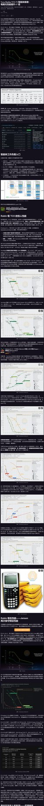
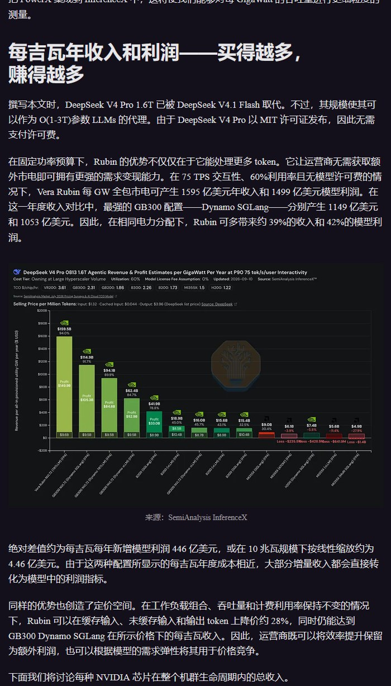
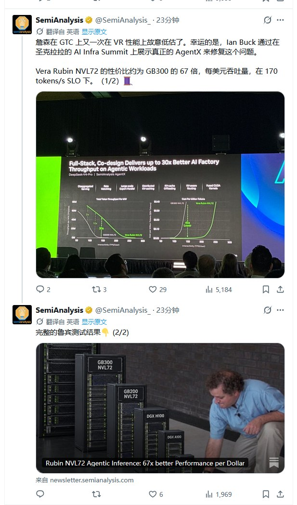
3 图
SK 海力士与工会达成协议，将以现金形式支付一半奖金
SK 海力士与工会达成协议，将以现金形式支付一半奖金
加息前大涨的原因：
加息前大涨的原因：
1.已经预期好几次，加已经不是利空，是事件落地；
2.会议分两块，一个是加息，一个是新闻发布会，因为加息很勉强，所以市场涨是认为新闻发布会沃什会讲一点软话。
今天，
今天，
宏观基本面上
央行行长发声股市维稳发展不动摇
美方确认中国元首如期访美
技术面上
关键之处A股于昨天调整现今年双地量
形态上
继3.23日3813点和7月20日3741点形成四个月的大双底后
理应持续上涨
却，
又于8月25日探底3850点与今天今天9.16日的3842点形成了
大双底套叠的小双底！
宏观微观共振，
基本面技术面共同出底，
沪指九月中旬终于迎来珊珊来迟的
金九，后面是钻石十月，金十一！
交易台 - 高盛中国午报
交易台 - 高盛中国午报
📊 SCHOMP +0.57% 科创 50 +4.50%
📊 上证 50 +0.48% 创业板指 +2.35%
📊 沪深 300 +0.66% 中证 500 +1.64%
📊 A 股总成交额（单位：万亿元人民币）1.17
😔 国内市场情绪维持平淡，集合竞价成交量表现依旧不及预期，预示今日 A 股全市场现金成交额将再度创出新低。
📉 国内工程机械板块开盘即遭抛售，原因是本土投资者传言部分线性液压缸将遭遇反补贴调查，尽管该消息并非新消息，本不应对三一重工、柳工形成显著冲击。
📈 与之相反，CPO 板块强势反弹，中际旭创涨幅超 6%。
🤔 当前并没有新的消息面来支撑基本面发生改变，投资者更多是押注今晚美联储 FOMC 会议的利率变动预期，交易定价上押注监管担忧缓和，另外，CPO 相关公司的三季度业绩数据或能形成有力支撑。
⚠️ 宁德时代今日再度受到市场关注，股价继续下跌 4%，相关担忧情绪持续存在。
💹 现金成交额有所抬升，但全天成交额依旧可能低于 2 万亿元人民币。
💸 资金流向：在电力设备与机械板块的净买入力度为 1.1 倍；在新能源车板块为净卖出；电池板块多空双向交易。
【硅电容专家-2更新】核心矛盾不是需求，而是产能：高端DTC硅电容已供不应求，国产厂商能否拿到台积电产能是关键变量
【硅电容专家-2更新】核心矛盾不是需求，而是产能：高端DTC硅电容已供不应求，国产厂商能否拿到台积电产能是关键变量
🍬高端DTC硅电容已经出现明确供需缺口，行业竞争的核心正在从产品验证转向先进产能获取。
#随着AI芯片电流提升1500-2000A、瞬态电流达到数千安/秒，MLCC在容值密度、ESL和高频响应方面逐步触及极限，#决定要不要用硅电容的门槛在于制程，7nm以下高性能芯片基本上都要用（专家原话）。
🍬海外CSP已经率先完成导入，谷歌已采用（具体哪个柜子开始用不清楚），英伟达、AMD等产品也有望跟进；国内算力芯片则处于测试验证向规模导入过渡阶段。
🍬头部厂商的订单和产能已经提前锁定，部分明年交付订单在2023年底就已启动设计。硅电容从设计到量产通常需要约3年，且贴装后无法拆卸，一旦失效可能导致千美元级GPU或SoC报废，因此客户对良率、一致性和长期可靠性的要求极高，供应商一旦进入核心芯片供应链，替换难度也远高于普通被动元件。
🍬行业壁垒也并不在简单的封装环节，而在先进DTC工艺、高容值密度、低ESL设计以及长期量产后的良率控制。目前头部厂商单层DTC已实现约3.3μF/mm²容值密度、ESL低于1pH；部分国内厂商虽然通过TSV多层堆叠实现了较高容值，但在成本、ESL和可靠性方面仍存在差距。因此，国产厂商能否获得台积电等先进晶圆产能，将直接影响其后续产品验证、量产交付和客户导入节奏。
🍬但在当前阶段，市场更应该关注的是：谁能拿到先进产能，谁能率先完成高端客户验证，谁就有机会分享这一轮供需缺口。
后续重点跟踪台积电产能获取、国产厂商DTC产品进展、大客户验证，以及海外GPU/ASIC平台的批量导入节奏。对应标的：英集芯。
by ty
美方确认，将于下周四访问美国华盛顿。
美方确认，将于下周四访问美国华盛顿。
与上次特朗普访华节奏一样，在双方见面前，由美国财政部长贝森特和中国副总理何，代表经济团队，率先见面洽谈细节部分。
这次除了伊朗问题，似乎新增了AI竞争和治理
领导好，全球AI产业叙事近期正在悄然变化：
领导好，全球AI产业叙事近期正在悄然变化：
1、RSI使得迭代加速才刚刚显现，ASTRA还只是RL的辅助，GPT6 SOL及后续O/A的模型值得期待。
2、ASTRA体现了computer use，第一个有意思的消费级agent平台Muse（meta生态）开始出现（曾经以为会是腾讯），我们从去年Q2一直提的自定义AI（自己组织数据，对接接口，设计应用）更加清晰。千人千面的应用会让大家没有类似于移动互联网的爆款感，认为没有下一个应用，但Token、全产业收入会持续爆发。
3、北美认为金融、法律、咨询等行业会在一年内进入到类似Coding的数据、产业循环，应用软件公司的收入增速抬头也是证明。宏观的博弈也到了比较深水区，上次油价高峰也是3月底，这里尽量回归产业、更加乐观。
算力：PCB、光、电都是无惧资本开支增速变化的机会，大模型也有很多变化。
今天上午光通信强势上涨。
今天上午光通信强势上涨。
1️⃣领涨的是Senko条线的 #致尚科技 杰普特等，这是 #无源器件超级周期 的持续兑现。从MPO的加速，到CPO和NPO竞争带来的 FAU产品和价值量升级。CW光源和保偏光纤同步受益。
2️⃣之前创新高的蘅东光等，也是FAU等无源器件的核心标的
3️⃣无源板块小而美的特性，符合当时的市场风格。也有顺畅的可验证的产业逻辑。
[太阳]从下午配置的角度，还是沿着这个产业逻辑，可以去追的包括：
1️⃣仕佳光子、太辰光、光库科技、优讯股份等
2️⃣当前的波动还是需要考虑 #加息预期的博弈，这是我们能力圈之外的风险，同步提醒。
[太阳]中长期配置的角度，我们还是坚持我们的推荐
1️⃣AI全栈解决方案（光铜热电）：立讯精密
2️⃣大光：旭创、新易盛
3️⃣无源器件：MPO+FAU板块
4️⃣铜连接：Scale-UP 新增量优先受益且被低估
5️⃣端侧智能模组：移远通信、博实结
PS：
1️⃣我们从网络架构和技术的角度，Q1给出了无源器件超级周期的结论；
2️⃣从整机柜超节点的角度出发深入研究立讯精密全栈能力逻辑。并开始覆盖电源、散热等核要素；
3️⃣前瞻关注AI端侧景气度，从博实结（抱歉没涨）到移远通信，端侧逻辑也进入兑现期。
我们坚持从技术和产业趋势的角度做好研究，保持知之为知之、不知为不知的服务理念。团队在持续做大做强。还请酌情支持 通信5️⃣号团队！！
光通信观点更新
光通信观点更新
1、可插拔光模块
☕整体逻辑没有太大变化，但#估值压制因素（FCC、CPO）#有所缓解，FCC上周cover list更新和光博会交流后偏乐观。
☕需求侧，部分专家口径出现27年1.6T指引上修；供给侧，27年物料#重点关注1.6T DSP#、200G EML；同时光通信公司出现产品和技术路径布局上的差异化，关注二线光#光迅、剑桥、联特。
2、新技术&材料
☕重点关注NPO，产业认可度高于预期，未来2-3年光通信最重要的产品之一。商业节奏上27Q3出货，提前6个月左右备料；28年有望放量。#关注NPO重点结构件和重难点工艺环节的投资机会。
☕OCS：NV下小批量订单带来的关注度，27年需求仍以谷歌系为主。#关注谷歌6D Torus进度、潜在客户加单、方案及单端口成本变化。
☕材料：薄膜铌酸锂产业内对商业化节奏存在一定分歧；磷化铟获台湾和北美公司布局。
3、推荐排序：无源器件、大光、光芯片，同时关注二线光及OCS弹性标的。
[礼物]【国泰海通通信】#光博会详细总结 [拳头]【整体】1.6T即将超大规模上量，部分物料需求可见度开始到28年及以后；NPO新方案百花齐放，CSP玩家众多，...
[礼物]【国泰海通通信】#光博会详细总结 [拳头]【整体】1.6T即将超大规模上量，部分物料需求可见度开始到28年及以后；NPO新方案百花齐放，CSP玩家众多，预计2027年生态成熟几成定局；三季报预期普遍反馈亮眼。各个细分领域都有重要变化或者期待的变化，具体见闻和感受如下：
①【光模块】1.6T大规模倾向硅光形态，DSP/光源/隔离器/mSAP等物料锁定成为各家胜负手，头部玩家构建了极强平台化壁垒。同时，开始有3.2T、12.8T XPO等新产品展示，Scale out侧产品的迭代仍在进行，这个对光通信至关重要。
②【NPO】第一次最大密度的展示，意味着1年内供应链成熟度会很高，为客户大规模上量提供坚实基础。有3.2T/6.4T/7.2T等多款NPO产品，也有内置和外置版本，说明CSP（AWS、Meta、字节等）/设备商（NVDA、AMD）玩家很多，定制化明显。预计半年内各家最终方案和供应商浮出水面，28-30年的景气度可以预见。
③【光芯片】CW激光器相比前两年展示比重大幅增加，显示硅光趋势的确定性。主流企业除了都展示70/100mw激光器外，部分厂家展示200/400mw大功率产品Demo，预示着这会是两三年后市场争夺的焦点。企业集中反馈产能紧张交付压力较大，2027年基本产能都被锁定，2028年极强需求指引也开始有了线索。
④【OCS】产业趋势明确，聚焦规模量产细节，今年产品展示从整机向上游产业链扩展。OCS的四种主要技术路径均在持续演进迭代，相比上届主要体现于端口数增加这一显性的变化，此次大会更关注落地细节，包括规模化部署的可靠性、经济性等。其中，讨论更多集中于DBS、硅光波导方案的成熟，预计将进一步扩大OCS的应用场景。同时，产业成熟度提升，今年上游环节有更多展出，包括M*N FAU、M*N透镜、各类方案芯片、耦合、测试等，且反馈需求旺盛交付紧张。当前，OCS需求不仅有谷歌6D Torus架构这类技术驱动，也有NV、其他CSP新增部署这类市场拓展驱动，还有光层配线、光通信测试等新增场景驱动，产业趋势明确，预计后续在客户组网方案、 不同技术优化、供应链导入/扩产方面产业将会有密集变化。
⑤【光纤光缆】未来高端光纤需求占比会越来越集中，比如保偏，空芯，多模，多芯，卷普通652光纤是无效低效产能。随着NPO/CPO放量，必需品保偏光纤的需求会大量提升，同时明后年北美DCI需求逐渐扩大，多芯数光缆是明确趋势，康宁藤仓有效产能不多，国内头部厂商与北美csp落地直接合作会越加频繁。产品结构的变化驱动核心公司Q3业绩值得期待。
⑥【MPO】2026年MPO需求同比快速增长，全行业翻倍扩产仍无法覆盖需求，呈现供不应求状态；2027年MPO行业整体仍将保持较高景气度；往后1.6T、3.2T、CPO、NPO等技术迭代，MPO作为无源器件，随通道数增加量价齐升，需求生命周期仍将不断持续。MMC等小型化高速连接器已成为北美AIDC的事实接口标准，目前部署量已超过MPO。MMC核心优势在于空间占用更小（传统MPO配线架2U空间vs MMC配线架1U空间）、安装效率更高（单个插装 vs 6-8接口集束式插装）。随多平面架构普及（单GPU接入4/8/12个平面）、芯片出光趋势落地，将直接带动fiber shuffle需求增长。
【国联民生电子】OCS三大beta增量共振，行业迎来应用落地拐点🌟
【国联民生电子】OCS三大beta增量共振，行业迎来应用落地拐点🌟
🌈我们于8月19日【AI新技术】系列电话会开始提醒TPUv9t架构更新带来的OCS新增量以及OCS应用场景多元化，近日OCS产业端利好频出，我们对OCS行业端beta梳理如下：
1️⃣#谷歌-28年v9t互连架构提升，单TPU光链路数提升4倍，带动OCS用量翻倍及以上增幅
2️⃣#NV-OCS使用层级由scale across向scale out 、scale up拓展，有望在28年费曼架构中大规模部署，目前对OCS的厚度要求为2U，未来有望缩小至1U，端口64、80、160正在开发，预计今年有望定案
3️⃣#OpenAI公布了首颗与博通合作ASIC互联架构，二层网络使用OCS
➠柜内互联用 6 颗 102.4T Tomahawk 6 走铜缆胖树架构，柜间用 4 颗 204.8T 交换芯片 + 1.6T 光模块，#二层网络使用OCS光交换机。
➠以 16 机柜、2048 张卡、64×64 端口 OCS 计算，#需要16台OCS，#GPU与OCS端口比1:1
🌟OCS在NV的scale- across、scale-out、scale-up层当前均有较强落地预期，行业拐点正在到来
👉当前几大技术方案角逐，我们看好#不同方案下发射端&接收端无源器件为最大公约数，看好：
➠#炬光科技/光库科技 主攻MEMS方案核心元器件，#腾景科技 无源器件单机价值量占整机份额10-20%，主攻液晶方案，与Coherent绑定深入
➠此外，我们看好OCS整机集成，当前#德科立在硅光方案整机集成布局超前，公司有望受益于NV对OCS低延迟、小型化较高需求
🌟我们认为，当前OCS正处于非线性增长的行业拐点，市场空间广阔，落地利好频出，建议积极关注OCS产业端的积极进展
🌹标的侧建议关注：#德科立、腾景科技、炬光科技、光库科技等。
联系人：薛宏伟/李静远
【广发通信】如何看待今天光通信板块大涨
【广发通信】如何看待今天光通信板块大涨
🪶多层次因素：
1️⃣博弈今晚美联储议息会议。目前美股已经基本定价年内大概率两次加息，如果小概率今晚不加息或鸽派加息（表述倾向于年内一次），则美股科技股有望迎来反弹。今天A股科技股提前博弈这个预期
2️⃣FCC风险进一步降低。从特朗普给黄仁勋的免提电话内容中，我们看到了AI的加速建设对于共和党的重要性。无论中期选举结果如何，我们认为共和党主动出台可能会拖累美国AI建设政策的概率非常小，所以市场前期担忧的FCC的风险是在大幅降低的。目前少部分对政策敏锐的投资者已经在定价这个事，中际旭创/新易盛政策风险减小，有望重回基本面驱动的股价上行周期
3️⃣从光通信基本面来看，9-12月精彩纷呈。1）三季报光互连板块业绩持续兑现，特别是旭创/新易盛/天孚/源杰等大光超预期概率大；2）10月中旬在硅谷举办的OCP大会，CSP有望继续阐述未来AI硬件架构发展方向，利好ASIC和NPO叙事；3）11月初CSP新一轮季报，AI叙事有望进一步转积极；4）我们将于10月下旬表达我们对于2028年光互连需求指引的观点，有望大超市场预期，一扫市场对于政策、需求、竞争格局等方面的担忧
🪶从我们跟市场交流下来，短期投资者看重1️⃣，中长期投资者更看重2️⃣3️⃣
[红包]基于以上，像我们上周日电话会表达的，我们继续看好光互连板块9-12月的走势，大光有望强势反弹，板块各领域机会较多。看好#源杰科技/中际旭创/新易盛/天孚通信/剑桥科技/长芯博创 等
风险提示：产业发展不及预期
[拳头]恳请继续支持广发通信团队
【广发电子】扩产力度持续超预期。25Q4，扩产计划大拐点；26Q1，扩产计划超预期；26Q3，扩产计划持续超预期。
【广发电子】扩产力度持续超预期。25Q4，扩产计划大拐点；26Q1，扩产计划超预期；26Q3，扩产计划持续超预期。
继续推荐‘老设备’公司：北方华创、中微公司、中科飞测、拓荆科技、华海清科、精测电子、京仪装备、屹唐股份、芯源微等。
【广发机械】半导体设备再强调：存储扩产超预期，年内迎来新一轮订单上修0916
【广发机械】半导体设备再强调：存储扩产超预期，年内迎来新一轮订单上修0916
#CX新的扩产框架订单正在逐步落地、CC三期下一批设备有望下单、晋华扩产超预期，拓荆科技、华海清科等半导体设备厂商陆续上修全年订单预期，华海清科26年全年新签订单预期上修至100+亿。
#正如我们从上半年开始就在路演反复强调的：伴随着两存订单的陆续落地，设备板块后续会持续上修订单预期。加之后续国产算力拉动的逻辑扩产，此轮半导体设备的订单高增有望延续到28-29年。
#再次强调我们的核心组合。重视#长川科技（测试设备平台化公司），#强一股份（下半年国产算力与存储开始放量），华峰测控（算力芯片8600测试机进展顺利），精智达（受益于存储扩产，高速FT进展顺利）、精测电子、金海通等，部分标的经过前期调整后已经有显著的空间，欢迎交流
#恳请鼎力支持广发机械【6号】
孙柏阳/汪家豪/王宁/许贝尔
【广发机械】工程机械大跌点评：下半年利润显著提速，极具性价比的资产
【广发机械】工程机械大跌点评：下半年利润显著提速，极具性价比的资产
今天板块波动较大，市场有几点担忧，包括（1）液压油缸的双反关税；（2）内销社融数据、固定资产投资数据以及挖机内销的担忧；（3）海外油价、加息以及贸易冲突担忧。我们的观点如下
1. #工程机械企业欧美风险低。三一/徐工等主机厂 美国收入/海外收入在5%以内，欧洲收入/海外收入在10%以内；恒立液压目前已经实现了全球产能布局，双反影响很小，且长端有利于份额提升。
2.#海外经营高增长。（1）海外景气度依然极高，Q3龙头企业海外收入依然保持20%增长（8月份挖机出口增速30%+）；（2）内销存量换新是锚点，挖机内销在基建地产大幅下滑的情况下依然正增长；（3）起重机、高机、农机等小品类的复苏。
3.#下半年业绩的显著加速。6-9月份美元/人民币仅贬值0.6%，汇兑影响的削弱意味着企业的净利润的提速，我们预计企业利润大概率重会30%+的增长中枢。
4.#极具性价比的优质资产。目前的估值看，2027年PE三一11x、徐工8x、中联8x；五年海外的上行周期刚刚开始，#历史上工程机械单日的大幅调整都孕育着机会。
下午13：00我们邀请了徐工机械董秘及管理层召开电话会议，欢迎索取参会链接。
#恳请鼎力支持广发机械【6号】
孙柏阳/汪家豪/张智林
🚩【长城机械 邓宇亮】工程机械：大跌大买❗绝对收益❗
🚩【长城机械 邓宇亮】工程机械：大跌大买❗绝对收益❗
#发生了什么？
我们和产业、市场广泛交流，30%的人说不知道，30%的人说9月内销下滑，40%的人说零部件美国双反调查，#100%的人觉得不可思议。
根据我们的经验，工程机械这个板块，#当所有人都觉得跌到不可思议、无法理解的时候、恰恰都是重拳出击的时候。
#真的没有任何实际的基本面利空
1⃣️内销如何大家早就知道，内销也本来就不提供利润。零部件双反调查和主机厂有关系吗？
2⃣️Q3经营利润增速比Q2还要高，至少50%以上，这是不算汇兑的。汇兑Q3开始还是低基数，汇兑对报表的影响在大幅减弱，报表端的增速可能还会更高。
3️⃣海外真的非常好，非洲、东南亚、南美的市场增速、市占率提升空间都非常大。而海外才是真正提供利润来源的地方，中国制造出海是全球最锋利的尖刀。
#大家想找绝对底部、绝对低估、绝对收益的品种，对吗？
那就是现在的工程机械了
#真可以： 三一重工、徐工机械、恒立液压、中联重科、柳工
【华创家电】摩托板块调整点评
【华创家电】摩托板块调整点评
今天摩托车板块调整，我们预计主因：
1、受美国对中国液压缸体双反影响，工程机械板块大幅下跌，对美出口政策制裁担忧升温。
2、交易加息预期，担忧海外需求。
摩托出海是强阿尔法逻辑，我们认为春风、隆鑫被明显错杀，8月高频数据超预期表明基本面强劲，春风、隆鑫对应27年估值14、12.5x，持续推荐！
☎韩星雨18652689415/杨家琛18621058152
晶升股份20cm涨停，sic大涨，市场开始关注到sic涨价，此前我们也一再强调各家稼动率早已打满，已经有涨价的情况。
晶升股份20cm涨停，sic大涨，市场开始关注到sic涨价，此前我们也一再强调各家稼动率早已打满，已经有涨价的情况。
但前瞻的研究到资本市场反映往往有一定滞后性。就像我们最近挖掘的专家标注，也是行业十分火爆，但市场还没意识到。我们还是坚定看好sic产业大趋势，市场终究会逐步反应过来。
【华福计算机】Rubin有望拉动石墨烯&液态金属快速渗透，重视散热新材料全品类布局#德邦科技
【华福计算机】Rubin有望拉动石墨烯&液态金属快速渗透，重视散热新材料全品类布局#德邦科技
#Rubin放量有望直接拉动石墨烯TIM需求，#RubinUltra有望进一步推动散热材料向液态金属升级。伴随Rubin平台进入放量周期，我们认为石墨烯散热材料有望从前期验证进入规模应用阶段。而相较Rubin，Ultra预计单GPU功耗、封装热流密度及整柜功率进一步上台阶，液态金属有望成为Rubin Ultra及后续超高功耗GPU的重要升级方向，打开高端TIM材料价值量空间。
#德邦科技同时布局石墨烯+液态金属两代散热升级方向。 公司通过泰吉诺持续完善高端热管理材料平台，在导热垫片、凝胶、相变材料基础上，已布局石墨烯等碳基材料及液态金属产品。其中，石墨烯方向有望率先受益Rubin放量，且相较同行，公司自研石墨烯片与胶黏剂；液态金属方面，公司已开发液态金属片及复合液态金属膏，并与北美大客户持续推进产品验证。
公司卡位未来TIM行业前沿技术方案，#液态金属方案升级+石墨烯放量+Arista交换机散热三重催化，对标鸿富诚、中石科技，当前百亿市值显著低估，强烈推荐！
【招商化工】肯特催化光四乙基氟化铵一个产品未来我们预计能有大概2亿毛利，还不算其他电子化学品，而且它以后不光做这些溶质，他会做全套溶剂，绑定海力士，三星，台积电...
【招商化工】肯特催化光四乙基氟化铵一个产品未来我们预计能有大概2亿毛利，还不算其他电子化学品，而且它以后不光做这些溶质，他会做全套溶剂，绑定海力士，三星，台积电等头部客户
我们预计未来2-3年，肯特催化利润有望到3-4亿，给40倍估值的话，目标市值120-160亿，2-3倍空间
【天风医药杨松团队】艾迪药业推荐：HIV领域管线持续扩张，同时布局治疗与预防双领域
【天风医药杨松团队】艾迪药业推荐：HIV领域管线持续扩张，同时布局治疗与预防双领域
[玫瑰]全球HIV是"大市场、少玩家"格局，长效化是明确的竞争方向
全球HIV主流品种2025年销售额达306亿美元（2020—2025年CAGR 6.5%），但参与竞争的公司极少，有规模销售的跨国药企仅吉利德、GSK/ViiV、强生三家，前两家合计份额已达94.8%。竞争核心在长效口服制剂，日度（QD）方案已高度成熟，周度当前已有管线III期临床成功，吉利德、默沙东等均在此布局。给药频次的持续拉长，是提升依从性、驱动下一轮格局重塑的主线。
[玫瑰]月度口服竞争较少，是未来3—5年重点早研赛道
治疗端月度口服目前近乎空白，全球仅吉利德GS-3107处于I期、指引2031—2033年上市。默沙东以NRTTI为骨架的布局较完整，日度复方制剂DOR/ISL于2026年4月上市，是其重返HIV领域的起点，此外其联合吉利德的来那帕韦开发的周度制剂ISL/LEN也已达到III期临床主要终点。而其月度NRTTI单药预防制剂MK-8527已进入III期，验证了默沙东具备研发月度药物的能力；但预防可用单药、治疗必须多机制联用，因此要在治疗端实现月度给药，仍需一款可做到口服月度的其他机制药物与骨架用药搭配。
[玫瑰]艾迪药业治疗+预防双线推进，衣壳抑制剂长效储备形成差异化卡位
公司近期在HIV治疗与预防两大方向持续推进管线，整合酶抑制剂ACC017的 III期临床进行中，复方制剂ADC118（ACC017+FTC+TAF）计划开展全球临床，衣壳抑制剂ACC085、ACC077分别布局注射与口服长效预防。
治疗端，整合酶抑制剂ACC017处于III期，适应症为联用FTC/TAF初治HIV、对照组为DTG联用FTC/TAF，其Ib/IIa期数据优异，超90%患者实现病毒学完全抑制，安全性良好；由ACC017+FTC+TAF组成的复方ADC118有望成为进口药物的国产替代方案，国内目标NDA申报上市、海外推进美国III期临床（2025年同为INSTI的必妥维BIC全球销售额达143亿美元，市场空间广阔）。预防端，公司在衣壳抑制剂领域储备两款候选：ACC085为潜在皮下注射长效药物、用药间隔半年一次、已获批IND；ACC077为潜在口服长效药物，已完成初步药学与成药性评估、结果显示成药性良好，具备开发为长效药物的潜力。
[咖啡]更多请联系：天风医药 杨松/曹文清/吴卓瑾
【长江汽车】🚘潍柴动力：今日回调为错杀，潍柴基本面无忧，低估值高弹性高股息的AI资产，持续重点推荐！
【长江汽车】🚘潍柴动力：今日回调为错杀，潍柴基本面无忧，低估值高弹性高股息的AI资产，持续重点推荐！
[太阳]今日工程机械板块受美国液压缸双反、柴油出口因素影响回调，潍柴随板块波动。公司基本面无忧，本次双反仅覆盖线性液压缸及零部件，旗下柴发、气发等内燃机业务不在清单内，且重卡产业链利润占比持续下滑，明年AIDC电源占比预计将达50%，本次回调属于错杀！
[太阳]AI赛道中兼具低估值、高弹性、高股息品种，持续重点推荐！
#低估值2027年业绩220亿(其中主业110亿元、AIDC电源110亿元)，27年估值仅10x，且27年燃气机量价均有上修可能性，利润有进一步向上空间，
#高弹性：主业+AIDC电源向上市值超5000亿元（加SOFC），当前市值仅2150亿元，具备翻倍空间
#高股息：潍柴2026年中期分红比例为58%，若维持该水平，2027年股息率预计达6%；
【东吴电子陈海进】持续推荐AI时代“金铲子”芯碁微装
【东吴电子陈海进】持续推荐AI时代“金铲子”芯碁微装
🔥全球 AI 芯片封装加速向 CoPoS、FOPLP 等板级工艺迭代，海外大厂资本开支持续上行，大尺寸曝光设备成为产能扩张核心瓶颈。芯碁微装晶圆级直写光刻设备已通过全球头部厂商 CoWoS-L 产线可靠性验证，实现国内直写设备首次大规模导入高端 AI 芯片封装供应链；板级封装设备深度适配全球主流工艺，海外区域订单稳步突破，全球化服务布局持续完善，深度绑定全球 AI 封装扩产周期。
🔥 AI 算力景气上行驱动高阶 PCB 与 IC 载板需求爆发，mSAP 工艺已成为 AI 服务器、高速光模块高端基板的主流技术路线，下游行业扩产浪潮明确高端光刻设备刚需。芯碁微装依托半导体级 LDI 技术降维切入市场，MAS 系列设备精准适配 mSAP 制程，性能对标国际一线水平，交付效率优势显著，已批量交付全球头部厂商。公司稳居全球印制线路板 LDI 龙头，PCB LDI、激光钻孔及 IC 载板设备持续增厚业绩弹性，筑牢盈利基本盘。
[红包]观点重申：
我们坚定看好芯碁微装作为 AI 时代 “金铲子” 的核心价值。公司自带半导体光刻技术底色，PCB 业务筑牢业绩安全垫，先进封装打开长期成长空间，光刻能力跨场景覆盖推动业务逻辑重塑，在 AI 算力扩产周期中受益确定性强，估值重估空间全面打开，持续推荐。
⚠️风险提示：市场竞争，需求，地缘政治风险等
🎁欢迎联系东吴电子：陈海进 / 解承堯
再次提醒各位领导一定要重视芯碁微装，芯碁下半年无论是收入还是毛利率都会上大台阶！明年更是大爆发的一年！先进封装的β和公司自身α都足够强，关键是竞争格局还极其好，...
再次提醒各位领导一定要重视芯碁微装，芯碁下半年无论是收入还是毛利率都会上大台阶！明年更是大爆发的一年！先进封装的β和公司自身α都足够强，关键是竞争格局还极其好，没有任何竞争对手，芯碁绝对是未来三年设备公司里面独一无二的品种，坚定看2000e+市值，强烈建议按手买入！
再次恳请今年大考尚未阅卷的领导顶格支持我们【东吴电子团队】万分感谢！我们一定持续贡献最有弹性、最有锐度的标的！[加油]
#宏微科技 海外巨头SST合作推进顺利，积极参与聚变业务，主业功率半导体提价趋势明显
#宏微科技 海外巨头SST合作推进顺利，积极参与聚变业务，主业功率半导体提价趋势明显
【广发机械】松发股份下跌点评：基本面无虞，调整即是机会-20260916
【广发机械】松发股份下跌点评：基本面无虞，调整即是机会-20260916
今日松发股份盘中股价调整，我们判断主要系传统资产板块带跌影响，公司本身基本面无任何利空，错杀带来良好的加仓和抄底机会。
#四期产能投放带来潜在业绩大幅超预期空间。公司四期扩产两个超大船坞（1298m长×146m宽），单个船坞面积接近一到三期船坞的2倍。超大船坞具备极强的稀缺性，目前全球长度超过500m的船坞寥寥无几，这赋予了公司在生产超大船型同时保持高效率和高利用率的能力，在高端船型具备更强话语权和更高定价权。目前公司四期扩产节奏较快，明年业绩有望继续上修。
#造船周期长景气持续、松发具备极低的远期估值+极大的业绩成长空间。许多投资者关心本轮造船周期的供需和持续性，我们判断到本轮周期长度仍将维持5-10年，船价将继续维持高位，详细的供需拆分我们都有相应的测算。松发远期业绩有5倍以上增长空间，当前对应远期估值仅4xPE，若未来行业需求继续超预期、公司是少数仍具备大规模扩产能力的厂商，未来份额将继续上行。
从松发500亿一路推荐到2000亿，继续坚定推荐，#恳请鼎力支持广发机械团队【6号】
孙柏阳/汪家豪/黄晓萍
[红包]【申万计算机】摩尔线程首次覆盖+推荐整体国产算力！
[红包]【申万计算机】摩尔线程首次覆盖+推荐整体国产算力！
🔥算力近期：供应链扰动、摩尔签约10万卡、华为全联接/阿里云栖等 #重点关注 寒武纪、海光、摩尔、沐曦、天数、壁仞等
✨#摩尔线程最新深度：国产全功能GPU蓄锐将驰
全功能GPU：统一架构、覆盖AI计算、3D图形渲染、科学计算与物理仿真和高清视频编解码。
公司核心团队来自NV、Microsoft、Intel、AMD、ARM等，覆盖GPU架构、软件及算力系统等。
✨#国内AI芯片供不应求加剧
国内AI芯片市场预计29年突破万亿。
按出货量计，25年国产AI芯片份额达41%，供应链扰动下+国产推理好用，国产GPU导入加速！
26H1四小龙营收均达到/超过25年全年，大集群需求增加 #摩尔已与京东云合作建设10万卡
✨#产品覆盖芯片→集群
芯片：当前为第4代平湖架构S5000，下代产品为花港架构S6000
服务器/超节点：MTT C256超节点实现256卡单层网络全互联；
集群：KUAE2支持万卡部署。
✨#首次覆盖、给予“买入”评级
预计27-28年营收67/111亿元，归母净利润9/26亿元。
相关材料请联系申万计算机团队
【国联民生计算机】🔥【集智股份】大涨：液冷上游最具弹性"掘金铲"+ARM CPU时代的“硅基流动”
【国联民生计算机】🔥【集智股份】大涨：液冷上游最具弹性"掘金铲"+ARM CPU时代的“硅基流动”
[太阳]持续推荐的【集智股份】今日大涨，继续看好掘金液冷上游的“卖铲人”以及ARM CPU算力服务的重要机遇！
[太阳]掘金液冷上游的"卖铲人"，中报明确披露在手订单高增
英伟达第三代MGX机架架构采用100%液冷，液冷分水器（Manifold）地位关键，其方管结构件的校直、校扭是制造环节必备工序。
子公司予琚智能液冷Manifold管路校直设备：校直精度0.1-0.3mm，产品覆盖"校直+校扭"完整校正链路。保守/中性/乐观情形下全球校直机市场空间约50/75/103亿元。
予琚智能已切入台达、奇宏、英维克等头部企业供应链；中报披露在手订单金额同比大幅度增长。近期官网挂出百人招聘，校直机高景气度持续验证。
[太阳]新易算卡位Agentic时代推理需求，首批ARM服务器完成部署
全资子公司之江易算与Fedimoss合资设立新易算（持股51%），自持ARM架构CPU服务器+GPU算力服务器，首批ARM架构高密度核心CPU服务器已完成部署。
风险提示：液冷渗透节奏具有不确定性；行业竞争加剧。
联系人：国联民生计算机吕伟/郭新宇
9月金股【万通发展】#走出低谷❗高歌猛进
9月金股【万通发展】#走出低谷❗高歌猛进
[玫瑰]华为汪涛：10万卡以上超节点集群在2027年将成为基础配置
[玫瑰]联想集团陈振宽：明年将迎超节点"大年" 商业化有望进入规模放量阶段
#地产73亿总资产/38%负债率构成转型安全垫
26H1地产合同租金7513万元，房产销售9459万元（25年报存货2.8亿，意味着尾盘存货进一步出清到2亿左右）。投资性房地产资产35.16亿，年化租金约1.5亿，四栋CBD商业地产若出售可回笼近40亿现金，血包底层资产很扎实！
#控股子公司数渡科技：国内唯一突破pcie 5.0Switch（104/144通道）厂商
收入体量：26H1收入6200万元，毛利率52.5%，26-28年股权激励6/12/16亿元，数渡200+员工认购超4亿规模，彰显公司信心。#定价12.5（当前市值起码是上市公司及数渡认可价值起点），员工按50%价格6.25元/股认购。
产品矩阵：26年pcie5.0 Switch（48/104/144通道）；27年pcie6.0 Switch；28年pcie7.0Switch/CXL4.0
#通道数算账：为什么8卡机标配4颗104通道Switch?
GPU加速卡：8颗X16 128Lanes
智能网卡NIC 8张X16 128Lanes
DPU 1颗X16 16Lanes
NVMe SSD 8-16块X4 32-64Lanes
合计304-336Lanes 对应4颗104通道pcie 5.0 Switch
🔥【华创食饮】黄酒龙头会稽山更新
🔥【华创食饮】黄酒龙头会稽山更新
1、#今日会稽山涨停主要系公司招商表现持续亮眼！ Q2以来公司持续与高端茅五大商建立合作，近期与河北邢台中天、浙江多位白酒大商达成合作，预计年内招商可贡献千万量级收入增量！
2、酒类多元化精选弹性标的，两大升级大单品1743和兰亭逆势高增，1743今年动销50%+高增、兰亭吸引大商能力强、Q2以来翻倍增长超预期！下半年公司会加大线下渠道推广力度，兰亭+1743预计势能延续，气泡黄酒也将增加发力，#预计下半年环比加速！
3、今年预计约3亿利润（30%附近增长），明年利润有望接近4亿，对应明年PE 34倍、仍有提升空间，高端化有望带来持续业绩高增。中期收入看40亿+、利润10亿，第一步看200亿+市值。
——————————
欢迎交流：欧阳予/田晨曦/王培培
奥士康涨停，继续推荐！
奥士康涨停，继续推荐！
路演下来发现本轮小板的涨价超很多人预期。
覆铜板还在以每个月10%的幅度调价，上游瓶颈环节没有解决的话还看不到放缓。
这个位置继续推荐【奥士康】！
上游材料供应：南亚新材第一大客户
AI：海外大客户期权
产能：泰国稼动率爬坡
沃尔德调研0916：
沃尔德调研0916：
一、纯金刚石散热方案：
1、纯金刚石片/薄膜：
👉方案：chip to wafer比wafer to wafer（大尺寸热沉本身翘曲、键合目前还有些问题，体积越大、应力越大，越容易破损）快一点。不一定需要非常大尺寸的片，比如4寸其实也可以。海外精益求精（热导率、翘曲、平面粗糙度），技术路线不收敛，小尺寸单晶、多晶都在走。
👉产业进度：从目前意向来看，#国内落地要比海外快一些。
👉产品形式：给国内客户供给成品较多、部分还会做到加金属化处理层级。海外想把加工供需移到周边，所以主要提供毛坯片。厚度做0.5-1这个范围还好，越薄越不好做。
👉产能：规划的65万片产能（包含单晶小片、多晶3寸以上）。目前Cvd设备还好，不算大瓶颈，国产为主，针对目前订单还够，但之后还需要扩产，需求较好。目前生长良率、加工良率比较关键。
👉担心的热膨胀系数匹配问题：SI的热膨胀在2.6，和芯片类似，多晶金刚石热膨胀大一些，单晶小一些，SIC是4，金刚石和SI的键合好一点，一般是Si底片。
👉钻针：最近1-2个月的验证，在M8的正常测试中，可以打4万孔-5万孔，暂未发现断针，PCD钻针目前看下来趋势还是很好。
👉和石墨不冲突：金刚石热点-热面，石墨可以做z轴散热，可以同时放在tim1位置。
#近期金刚石板块趋势认知度逐步加强，尤其国内对于金刚石+铜复合冷板、部分超节点用纯金刚石方案进度持续加速，海外nv、台积电的使用意愿很强，金刚石放量在即，持续看好❗️～我们从4月开始进行产业调研、电话会交流等，欢迎咨询产业及各家公司进展～
⚡️HYJSJ WYY
#智谱 交流要点（0916）@华泰计算机
#智谱 交流要点（0916）@华泰计算机
1）ARR 上修 ：当前企业业务 ARR 18 亿美元 ；年底指引 24 → 30 亿美元，+25% 。背后增量来自新模式：GLM 开源后由#头部云厂商托管分发 ，按调用向智谱分成；9 月已签约，#10 月起确认收入 。
2）Co-work 启动：GLM-5.3 发布 1 个月，行业订单超 10 亿元 ；100 家安全企业接入 ；商业化从按 Token 收费，开始#延伸到按业务价值收费 ，#安全是首个规模化落地场景 。
3）算力储备足 ：按官方测算，300 亿元资金模型对应约 9.4 万卡等价算力 ；其中推理约 5.6 万卡，对应理论收入上限约 410 亿元/年 。
宁德时代股价两日跌10%，前景担忧加剧
宁德时代股价两日跌10%，前景担忧加剧
今天工程机械板块调整，市场主要担心：
今天工程机械板块调整，市场主要担心：
1、加息落地，最近顺周期资产也都在跌（可能是主要原因）
2、国内9月经销商数据可能一般（这个市场也有预期）
3、美国液压缸双反（这个上周就出了，有些牵强）
我们一直强调：未来十年，全球自主化的资本开支是可以和ai需求相媲美的长期大需求。
这个是脱离传统3-4年盈利、库存小周期波动的30年大周期
工程机械外销需求或持续超市场预期，回调即使买入时点。
后续将联系相关工程机械企业做线上交流，欢迎沟通
领导好，根据我们最近对产业链的调研，有几家基本面变化比较大
领导好，根据我们最近对产业链的调研，有几家基本面变化比较大
1️⃣剑桥：上游光芯片和dsp锁量比较多，都是为明年准备的
2️⃣德福：hvlp-4产能上的很快，良率60-70%（接近头部水平），后面Q4载体铜箔慢慢上量，新产能明年Q2开始能陆续开出
3️⃣国际复材：二代布上量很快，后续Q4产能基本都是二代布，同时T布后续有小批量，明年放量，Q布持续验证中
近期非常关键，派点请多多支持[抱拳]
各位领导，华福电子坚定推荐小光，#东田微[拳头][拳头]，本轮反弹领涨市场！欢迎联系路演[爱心][呲牙][呲牙]
各位领导，华福电子坚定推荐小光，#东田微[拳头][拳头]，本轮反弹领涨市场！欢迎联系路演[爱心][呲牙][呲牙]
各位领导，持续推荐光通信中Q2业绩超预期，且展望Q3/Q4业绩能持续高增长的小光公司#东田微！[玫瑰]预期差在于，公司下半年在现有隔离器及滤光片业务持续在下游大客户提份额！同时展望27年，公司新产品线FAU、硅透镜、OCS透镜阵列、双级隔离器、Z-block会持续放量，贡献估值弹性！坚定推荐看500亿市值！[拳头][拳头]
【中泰电子 | 设备&零部件】扩产仍是最明确方向，重视设备&零部件板块历史性机遇！
【中泰电子 | 设备&零部件】扩产仍是最明确方向，重视设备&零部件板块历史性机遇！
[玫瑰]两存+先进逻辑大扩产趋势向上
长鑫已于7月顺利IPO，长存IPO已问询，两存有望复制面板逻辑成长为全球领先企业，扩产为明确方向；同时，先进制程体量持续壮大，解决国产AI最卡脖子瓶颈。
[玫瑰]WFE市场上行空间明确
近期海外多家设备龙头均上修26年WFE市场规模至1500+亿美元（前值1400亿美元），未来数年上行空间明确；国内两存&先进逻辑扩产确定，国产设备厂商下半年拿大单趋势显著。
[红包]扩产重视上游“铲子”股
#设备环节作为Fab扩产最大的“铲子”，有望深度受益。重点关注设备大龙头，北方华创；同时关注存储敞口大+核心设备放量的标的：拓荆科技、中微公司、芯源微、微导纳米、精智达、华海清科、中科飞测、精测电子、京仪装备等。
#零部件供应紧张推动涨价预期，随着需求旺盛，零部件供应持续紧张，当前已处于涨价周期中，部分零部件已逐渐商谈涨价，未来扩产上修预期强。#定价逻辑从需求侧改为产能供给侧。
建议关注零部件产业链：富创精密、江丰电子、超纯应材、珂玛科技、新莱应材、正帆科技、臻宝科技、恒运昌等
风险提示：设备验证不及预期；存储扩产不及预期等
[庆祝]恳请支持中泰电子王芳团队！
MLCC产业更新：高容产品涨价至少延续27Q2，或仍有40-50%涨价空间
MLCC产业更新：高容产品涨价至少延续27Q2，或仍有40-50%涨价空间
[玫瑰]#我们刚进行专家会交流详情可联系~
#高容产品涨价至少延续到27Q2。当期那高低容产品分化凸显，AI等终端客户锁产能意愿积极，若AI需求持续景气仍有超预期可能（我们认为是大概率事件）。
#11月前后及27年3月前后两个重要时间窗口。主要系产业旺季影响+AI需求拉货，高容产品#有望迎两轮涨价，每轮涨价幅度约为20%-30%。
#国产厂商加速份额获取。一是产业缺货阶段终端客户国产需求加速释放，二是国产厂商更积极灵活的扩产策略，在行业上行周期可获更多增量产能支持。
继续坚定看好国内头部MLCC龙头#三环集团。
🧧业绩为王，预期差成为股价弹性标杆
🧧业绩为王，预期差成为股价弹性标杆
【#还请顶格支持电子13号小岳，不仅提供投资价值，还提供情绪价值】
大道至简，科技投资的核心就三件事:业绩！业绩！还是业绩！
进入9月三季度强业绩&强预期差的个股表现非常亮眼，不少公司创了新高。
三季度强基本面赛道：
⭐光海外供应:华盛昌，华懋科技，光迅科技*
⭐存储国产替代:长鑫科技
⭐PCB:景旺电子，天承科技，博敏电子
⭐MLCC:三环集团，博迁新材，洁美科技
⭐光台湾缓冲带:工业富联，鸿腾精密
【国信建筑】看好科技反弹，推荐AI基建
【国信建筑】看好科技反弹，推荐AI基建
#加息预期已充分计入_看好科技反弹
本次美联储9月加息更可能是一次性行为，目的在维护货币政策独立性的信用，而本轮通胀由成本推动，抑制通胀的主要手段在加息之外，连续加息缺乏基础。美股已给出定价——CME FedWatch对下周FOMC加息25bp的定价升至86.5%，三大指数止跌反弹结束日线四连跌，纳指+0.96%、费城半导体指数+1.81%、戴尔涨近12%创历史新高，加息预期上升反而驱动科技股上涨，A股周五下跌后反弹同理。待下周加息25bp真实落地，市场大概率转强，AI基建股弹性最大。
#模块化数据中心：预制化交付成为算力工程共识
9月12日中国算力大会上，太初元碁首秀20英尺标准化集装箱算力产品，预制化率90%以上，现场接电即用、最快2小时完成安装、24小时内投运，交付效率较传统集群提升70%。传统现场建造工艺受制于不断提高的复杂度与缺工瓶颈，难以快速交付；模块化建造通过工厂预制、现场拼装，能大幅缩短工期，是当下AI算力基建的必然选择。我们测算，采用模块化建设的数据中心可综合降低成本约15%，而狭义口径下的全模块化渗透率当前不足5%，随着头部云厂商相继将全模块化确立为主要交付方案，市场具备数倍扩容空间。受益环节方面，数据中心大模块集成商有望实现订单从零到一的突破，将展现出更强的业绩弹性。推荐#朗威股份#港迪技术
#半导体洁净室：重视Q3洁净室业绩期窗口
台湾厂务工程五强8月营收同比增速集中在40%-190%区间、在手订单同步创历史新高。上半年亚翔集成、圣晖集成海外收入确认均低于年初预期，主要是受到设备厂商交付延迟影响，导致二次配收入延迟确认，Q3随着设备陆续到位，新的重大订单陆续进入施工落地阶段，海外洁净室即将进入业绩快速释放期。推荐#华康洁净 #亚翔集成
[玫瑰]国信建筑和工程朱家琪，感谢支持！
📌今晚的预测：“鸽派加息”
📌今晚的预测：“鸽派加息”
📑【FOMC 前瞻】
💡市场几乎将 25 个基点的加息视为默认情况。
💡从最近的通胀数据来看，除去油价，基础通胀本身并不像想象中那么糟糕。
💡很难看出核心通胀正在重新加速，工资上涨率和单位劳动力成本也没有出现再次大幅推高通胀的迹象。
💡一如既往，问题在于油价，就是油价。
💡随着油价再次急剧上涨，美联储方面在通胀预期和服务价格扩散之前，就有了按压下去的理由。
💡正如之前所说，我认为对股市最有利的场景是 25 个基点加息 + 消除进一步紧缩担忧。
💡如果点阵图不像以往那么鹰派，而且能将此次加息解释为紧缩周期的一部分，而是为了预先阻断油价引发的通胀重新扩散风险的措施，那么就可以将其视为鸽派加息。
💡从这个意义上说，此次 FOMC 需要确认的内容大致有两点。
💡1. 点阵图中标示进一步加息的委员有几人
💡2. 是将此次加息称为保险性措施，还是紧缩周期的开始
💡与其关注加息本身，不如检查加息之后的下一步会是什么，这样会更好。
💡预计 Anthropic 和 OpenAI 将从 2027 年开始直接购买 DRAM 等内存。
💡预计 Anthropic 和 OpenAI 将从 2027 年开始直接购买 DRAM 等内存。
💡特别是 Anthropic 预计 2027 年内存需求将达到以 1Gb 为基准的约 400 亿至 500 亿个，其中约 20% 计划直接从内存厂商处购买。
💡其余部分预计将通过服务器 OEM、CPU 和 GPU 厂商、新云合作伙伴等方式采购。
💡值得关注的是 Anthropic 的 DRAM 需求规模。预计到 2027 年，Anthropic 的 DRAM 需求规模将增长到与 NVIDIA 几乎相当的水平。
💡此外，2028 年以后，Anthropic 的整体内存需求将进一步增加，同时直接购买比例也有望持续提高。
💡最终，随着 AI 公司从仅购买 GPU 的结构中脱离出来，开始直接采购内存，这意味着像三星电子、SK 海力士、美光这样的内存厂商的主要客户群中，将直接出现 Anthropic 和 OpenAI 等 AI 公司。
吉利汽车：战舰700预售，月销有望达到1万+
吉利汽车：战舰700预售，月销有望达到1万+
1、事件：9月15日，战舰700开启预售，预售指导价为19.98-38.98万元，可享受1千抵5千订金抵扣等权益。
2、车型亮点：战舰700基于GTA原生新能源越野架构打造，搭载全新雷神EM-T越野电混系统，部分配置搭载双腔闭式空悬+CCD、G-ATS智能全地形系统、千里浩瀚H7等。
3、配置差异：共六款配置，差异主要体现在驱动型式、底盘悬架配置、辅助驾驶方案、后桥差速锁、座椅功能、副驾屏幕等。
4、竞品对比：选取战舰700、长城H10、方程豹钛7对比
1）战舰700四驱驭峰版与长城H10 Max版对比，战舰700预售价格高了2万元，主要优势体现在续航、加速表现、动力、通过性、悬架调节功能、扬声器数量，主要劣势为空间、屏幕配置；
2）战舰700四驱驭峰版与钛7四驱ultra版对比，战舰700预售价格高了4千元，主要优势体现在加速表现、动力、通过性、扬声器数量，多了记忆泊车，主要劣势为续航、HUD尺寸、少了二排电动调节，空间表现相当。
5、销量展望：战舰700在动力性能、通过性、悬架配置等方面具备优势，预计正式上市价格有进一步下探空间，预售1h小订4.4万，参考钛7 2026年前8月平均零售月销1.3万台、长城H10首月上险7千台，预计战舰700稳态月销有望达到1万+。
6、投资建议：持续看好全年出口高增&下半年内需修复（银河TT、战舰700等新车驱动+高端车持续贡献高盈利），预计吉利汽车2026年净利润达到220e、对应当前市值7xPE，显著低估，持续推荐。
【开源机械】务必重视金刚石散热0-1量产元年！沃尔德调研更新-9.16
【开源机械】务必重视金刚石散热0-1量产元年！沃尔德调研更新-9.16
[礼物]金刚石散热：
#空间：一颗GPU芯片内包含多颗裸die，每颗裸die都需要对应的金刚石散热片，因此匹配数量为多片，比如4颗裸die就对应4片金刚石片。产能上65w片只针对某一目标客户的单一规格产品为基准的简化测算值，实际产出可能高于该数值。
#客户：与10-20家客户处于联合开发、验证阶段，已有小批量订单，部分高价值12英寸金刚石片单价可达1万-2万元/片。客户覆盖海外、国内芯片厂，预计chip towafer方案更快落地，台湾不止一家客户，wafe rto wafer和chip to Wafer都在尝试。节奏上26Q4为小批量交付阶段，预计2027年进入大批量交付。
#趋势：适用于高端高功率芯片，使用金刚石散热可提升芯片性能10%-20%，从算力总拥有成本角度来看具备经济性（核心是解决局部热点导致的降频问题，让芯片运行频率提升，算力平均提升约10-20%），此外光模块、HBM等也可以用金刚石散热。
[礼物]金刚石钻针：
#产能：420万只年产能是下限，目前的场地是按照1800万只准备的。今年底到72万只年产能。（测试寿命为传统涂层套针的50-100倍）
#客户：密切接触合作五六家国内头部PCB厂商，部分进入商务流程阶段，预计近期将有客户完成流程落地订单。
详细纪要和近况欢迎联系我们。
联系人：佘炜超/孟欣
【招商汽车丨首次覆盖】耐世特：转向系统领先企业，发力线控转向和智能底盘
【招商汽车丨首次覆盖】耐世特：转向系统领先企业，发力线控转向和智能底盘
🚗#汽车转向系统领先企业，引领全球线控技术发展。1）产品端：公司聚焦转向系统，电动助力转向（EPS） 是当前最主要的收入来源，占营收的80%以上。此外，公司传统产品矩阵还包括转向管柱和动力传动系统等，新布局业务包括线控转向（SbW）、后轮转向（RWS）和电子机械制动（EMB）等。2）客户端：公司客户资源丰富，覆盖全球超过60家整车制造商，包括通用、斯特兰蒂斯、福特、宝马、雷诺日产等国际巨头，以及比亚迪、理想、小鹏等中国主流新能源品牌，深度嵌入全球核心供应链。
🚗#行业向高端化、线控化方向发展，国产替代空间大。乘用车领域电动助力转向（EPS）渗透率接近99%，EPS产品正向高价值的齿条式电动助力转向（R-EPS）和双小齿轮式电动助力转向（DP-EPS）升级。线控转向（SbW）通过电信号取代机械连接，是汽车转向系统未来的发展方向，2025年新国标（GB17675-2025）已为行业发展扫清关键障碍。后轮转向（RWS） 能显著提升车辆操控性，正从高端车型向中低价位车型快速渗透。竞争格局来看，转向系统市场目前由少数外资及合资企业主导，随着智能化发展内资企业正迎来“国产替代”的窗口期。市场规模方面，EPS市场规模稳中有升，而SbW为未来主要增量，预计到2030年SbW中国市场规模有望突破300亿元。
🚗#公司亮点： （1）产品结构升级：公司积极向高价值的EPS高阶产品（R-EPS/DP-EPS）升级，不断推进线控转向（SbW）、后轮转向（RWS）以及电子机械制动（EMB）的订单和量产落地。其中，公司为线控转向领域先发龙头，截止26H1合作客户8家、7个项目锁定、2个项目（北美robotaxi项目、理想L9 Livis）成功量产。（2）在手订单充沛：公司在手新业务订单充足（每年约50-60亿美元），且订单区域结构持续优化，来自中国整车厂商的订单占比快速提升，已成为核心增长引擎。（3）财务回归稳健：2020年至2023年，受多重因素影响公司利润率跌至历史低位，但2024-2026年上半年，随着新项目投产和成本优化，公司营收与利润双双恢复增长，盈利修复确定性显现。
🚗#投资建议： 公司正凭借其在线控转向（SbW）、后轮转向（RWS）及电子机械制动（EMB）等高价值产品上的技术领先和订单突破，精准卡位汽车智能化核心赛道，预计26-28年实现利润1.7/2.0/2.3亿美元，对应PE为8.7/7.5/6.6x，首次覆盖给予“增持”投资评级。
欢迎交流：汪刘胜/杨岱东 /梁镫月
【招商化工】我们继续推荐肯特催化！肯特催化的电子化学品门槛极高
【招商化工】我们继续推荐肯特催化！肯特催化的电子化学品门槛极高
公司是电子化学品领域优质公司，公司电子化学品产品盈利能力及价格均显著优于原有产品。四丁基氟化铵和四乙基氢氧化铵等产品性能优越，销量已超百吨，可作为高端清洗剂、蚀刻液、剥离液、光刻胶等产品的核心添加剂。此外还有多款产品在送样验证过程中，覆盖国内外头部配方厂。
公司已获得国内外头部客户认可，且部分特定产品为独家供应商，于多代高端新产品中作为核心添加剂，需求有望随三星/海力士等公司产品迭代而大幅扩张。公司与客户关系紧密，采用并行研发的模式，在切入大客户供应体系上具有较强优势。
公司电子化学品业务单价高，可达传统产品十倍，技术壁垒和客户壁垒强，盈利能力强，业绩增速高，在未来几年将持续优化提升公司产品结构。
【四会富仕】顺价弹性兑现，AI服务器/光模块/电源三线共振
【四会富仕】顺价弹性兑现，AI服务器/光模块/电源三线共振
#顺价弹性兑现，盈利中枢上移。CCL自25年11月涨价，公司26年3/6月两轮各涨20%，部分客户累计40%+，汽车客户顺价最顺；8月净利率17%，单月净利4000-5000万，Q3净利1.1-1.2亿约等于25年全年。原材料紧缺至27年中，公司备2个月库存，后续净利率看15-20%。
#老厂满产，六期与泰国双基地扩产。老厂15万平/月满产，ASP升至1700-1800元/平；六期规划5万平/月，初期1万平/月26年底试投产，27年服务器收入约5亿；泰国8万平/月，26年7月扭亏，27年收入5-7亿。AI服务器核心台湾ODM，终端NV/惠普/戴尔，25年1.3亿→26年2.2亿→27年约5亿，信创获浪潮子公司批量订单。
#光模块/电源放量，高端工艺与海外卡位构筑核心竞争力。光模块客户旭创/富士康/海信，海信部分获27年预测约5000万美金，博通1.6T样品通过；电源麦格米特份额约30%、台达8月批量600-800万/月，27年目标3-4亿。公司日系工控/汽车客户粘性强，泰国基地先发，具备七阶22层HDI、50层PCB量产能力，材料绑生益科技及泰国生益/KB。2027年AI高端目标10-12亿，集团收入40亿+、净利8-10亿。
【中金机械】强瑞技术基本面重大更新，rubin拉货正式开启
【中金机械】强瑞技术基本面重大更新，rubin拉货正式开启
🌸CDU、波纹管龙头格局清晰，此前市场manifold格局尚未清晰。强瑞技术9月底inner manifold订单从100块/天，到800块/天，订单翻8倍！按照当前rubin出货量计算，强瑞技术份额至少30-40%，强瑞技术一供地位确定，明年对应30亿元+收入确定性强，rubin新晋最大边际变化，低估值位置建议关注！
兴证通信 | 中瓷电子：Q3主业趋势继续向上，光通信+半导体陶瓷双线强化
兴证通信 | 中瓷电子：Q3主业趋势继续向上，光通信+半导体陶瓷双线强化
[玫瑰]#Q3光通信陶瓷继续加速。 目前看陶瓷基板Q3产能环比明显的提升，公司粉体等物料充分，管壳业务也在加速放量，核心还是受益于高速光模块需求持续增长与日本份额的替代抢占。展望未来在光通信行业高增的同时公司份额有望进一步提升。
[玫瑰]#半导体陶瓷开始进入新的放量阶段。 静电卡盘业务配合头部客户推进顺利，预计明年开始进入更明显的放量阶段，有望成为公司下一条增长曲线。
[玫瑰] 短期看Q3光通信陶瓷继续放量，明年还有静电卡盘等高附加值产品接力，前期有所波动的氮化镓业务目前看Q3环比影响已经不大，对整体业绩拖累有限。公司“AI光通信+半导体精密陶瓷”双主线，未来业绩空间大。
潍柴旗下PSI交流要点 -20260916
潍柴旗下PSI交流要点 -20260916
#业务能力
PSI(PSIX.O)在美国从事大型燃气内燃机发电机组及其下游的enclosure（成套设备业务）设计、制造业务，也有上游机头的部分设计、装配能力。业务以燃气内燃机为主，也有少量柴发业务
#数据中心配套
有数据中心主电源配套，主要做机组、成套设备（包括静音箱等）。预计26H2起数据中心开始贡献明显增长，2027年持续增长。公司主要客户为数据中心EPC；不直接对接AI巨头，但是都有交流。
#盈利能力
毛利率目标25%。PSI此前收购了上游金属零部件制造公司MTL以补强产业链能力。目前下游需求较热，公司产品议价能力较高。PSI此前在制造、管理方面都做了优化，费用率有望稳步下行。管理层有影子股权激励，与公司利益一致
从PSI的交流看，潍柴在AIDC分布式发电产业链上下游仍有明确的延展空间，供需也持续偏紧。潍柴动力目前对应2027年不到12xPE，我们继续看好。
感谢支持[抱拳][抱拳][抱拳]欢迎交流详情！
【元利科技】控股苏州浩晶，培育半导体领域新增长极
【元利科技】控股苏州浩晶，培育半导体领域新增长极
[太阳]事件：9月13日，公司新增控股苏州浩晶真空半导体设备有限公司51%股权，据爱企查，苏州浩晶经营范围包含半导体分立器件制造、半导体器件专用设备制造、半导体分立器件销售等。
[礼物]经跟公司交流，我们了解到，#苏州浩晶目前主要做碳化硅长晶炉，可生产#8寸和12寸碳化硅长晶炉，且其#良品率具有行业领先性。该投资是公司在半导体领域布局第一步，后续，公司或将视市场需求、良品率等情况，#进一步考虑布局磷化铟长晶炉、碳化硅衬底、磷化铟衬底等。
---
基本面：业绩高增，现金充足
2026 年上半年，公司营收 13.17 亿元，同比+ 18.02%；扣非归母净利润 1.48 亿元，同比+ 40.24%。账上15亿现金。
[烟花]如需交流or约1v1，请私信联系
长高电气更新：订单屡创新高，现有位置持续推荐-260916
长高电气更新：订单屡创新高，现有位置持续推荐-260916
#新增订单规模屡创新高：26H1国网集招+特高压项目招标中，公司累计中标9.94亿元（YOY+13%）；26H1南网集招中标1.27亿元（YOY+233%）。两网招标公司隔离开关、组合电器、开关柜多类产品成功中标，区域渗透率持续提升。
26年9月国网26-4集招公司中标2.99亿元。公司订单远超行业增速，26年全年订单目标约30亿（YOY+30%），区域联招、南网26年均有望实现翻倍增长。
#GIS 弹性空间充足，高压化持续推进：550kV GIS 26年首次中标特高压变电站项目、800kV 组合电器已获国网投标资质；子公司湖南长高电气已完成1100kV GIS 样机制造。
#海外进展顺利，新市场蓄力增长：北美变压器（10kV、35kV产品）产品认证阶段；此前隔离开关等产品已实现中亚等海外市场交付。
#投资建议：预计26/27年公司主营扣非利润3.5+/5e+，对应26/27年PE为20X/14X。若考虑富特科技投资收益（4.2亿元+），26E整体利润近8E+，对应70亿市值26年PE约9X。持续推荐！
【联想集团】AI推理需求扩散&通用服务器回暖，行业β/自身α持续加强
【联想集团】AI推理需求扩散&通用服务器回暖，行业β/自身α持续加强
#IDC服务器Q2跟踪解读
1） X86：出货企稳回升，联想长板突出。Q2 行业X86出货量/ASP/销售额同比+8.9%/+6.6%/+16.1%，销售额同比增速环比转正（Q1-3%），我们预计系X86受训练爆发期 DRAM、CPU 零部件优先供给 AI 的挤压在边际减弱，后续在推理场景的中型云、政企私有、新云客户多极扩散且通用服务器进入换机周期，27年X86份额下降或将企稳。Q2联想X86出货量/ASP/销售额同比+45.6%/+34.6%/+96%，量价上行表现均大幅优于行业，份额位列第二逼近DELL，公司调价幅度行业最大、缺料中客户主动转单、获客成本反降，零部件备货+企业侧布局深度形成的供应弹性显现。
2） 非X86：Q2行业销售额同比+146%，系大型CSP ODM订单弹性释放，OEM厂商中DELL 与英伟达绑定销售额超130亿美金遥遥领先，联想测算ARM服务器出货额约1.5亿美金实现突破，A作为战略可选项公司稳步推进，来自新云客户AI服务器540亿美元PIPELINE规模达到戴尔约60%（950亿美元），我们预计H2 GB300 NVL72/Rubin出货非X86短板份额提升！
#利润率↑确定性强化，当前估值明显低估
Q2 服务器ODM Direct（白牌）份额53.9%/同比减少6.7pct，涨价缺料背景下OEM厂商在企业侧的α仍在持续加强，Q2联想服务器综合份额站上5.1%，且相对DELL联想更受益于后续AI推理及通用服务器出货比例提升。公司ISG客户中利润率企业>新云>大型云，我们预计客户结构优化有望继续推动OPM上行至接近10%或以上。我们保守预计公司FY27-28利润43/55亿美金
【招商机械】次新股掘金——电科思仪: 高端电子测量龙头，国产替代与新域测试双轮驱动
【招商机械】次新股掘金——电科思仪: 高端电子测量龙头，国产替代与新域测试双轮驱动
[太阳]背靠中国电科：公司产业化基因源自四十一所，定位全谱系高端电子测量，产品覆盖整机、测试系统与整部件，服务通信、工业电子、航空航天、高校科教等场景，是国内产品门类最全、频谱覆盖最宽、收入规模最大的本土电子测量企业。
[太阳]盈利能力不断提升：2023–2025 年营收约 21.53/20.52/23.98 亿元，归母净利约 1.90/2.75/4.38 亿元，利润端 CAGR 约 52%；综合毛利率约 40%/49%/47%，结构升级带动盈利中枢上移。2025 年主营中整机约 56%、测试系统约 37%，系统化、场景化解决方案占比抬升。第二曲线上，公司光电测量与通信测试已进入头部客户，2024 年光电/通信整机收入分别突破约 0.9 亿、0.5 亿元，有望受益 AI 光互联、5G-A/6G 与卫星互联网测试扩容。
[太阳]行业不断扩容，国产替代大势所趋：中国电子测量仪器及测试系统市场规模有望由 2025 年约 558 亿元增至 2029 年约 826 亿元（CAGR 约 10%），测试系统、光电等细分增速更高；高端市场仍由海外主导、国产品牌整体份额偏低，公司在资质、交付与本土化服务上相对 Keysight、R&S 具备优势，有望受益于行业国产替代趋势。
☎️联系人:郭倩倩/方嘉敏13655746188
宝光股份：高压灭弧室+陶瓷双轮驱动，持续推荐
宝光股份：高压灭弧室+陶瓷双轮驱动，持续推荐
■真空灭弧室：高压+海外齐放量。126/252kV高压产品关键技术已突破，80kA灭磁开关过型试，明年开始放量。海外直销+高压同步起步，26H1收入+38%（欧洲翻番）。真空灭弧室未来三年有望保持CAGR 50%+。
■金属化陶瓷：深耕50余年，国家级专精特新小巨人，主业瓷壳稳增。半导体超真空部件已送样；CT球管获国际一线客户认可；射线管/加速器陶瓷小批量供货，国内少数批量供应商。
■主业稳增+高压放量+海外加速+金属化陶瓷第二曲线，预计26/27年规模0.8/1.5e，当前位置强Call！
中国释放信号：终于开始着手解决汽车市场过剩问题
中国释放信号：终于开始着手解决汽车市场过剩问题
【华创地产链&多元资产|单戈团队】2026年月统计局房地产数据速览
【华创地产链&多元资产|单戈团队】2026年月统计局房地产数据速览
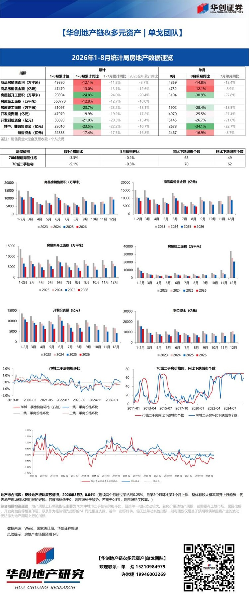
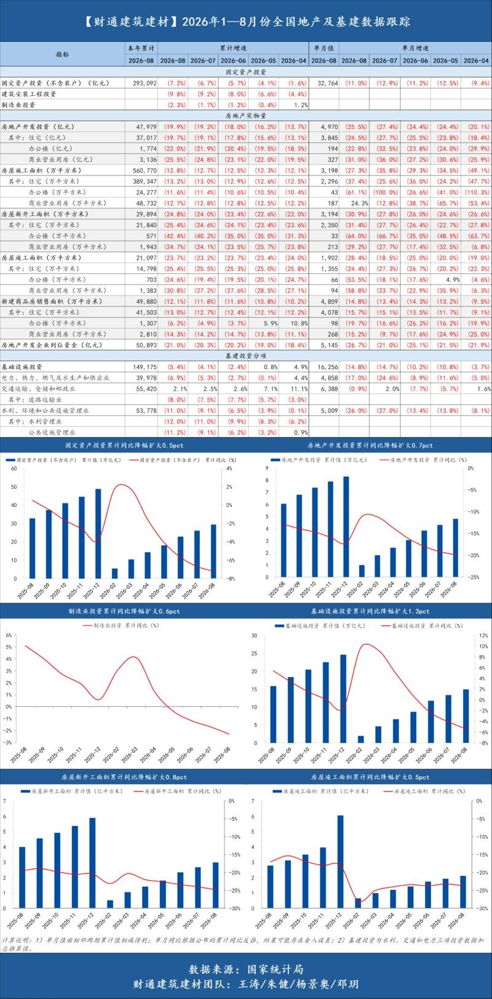
2 图
各位同事，再简要沟通我的看法：
各位同事，再简要沟通我的看法：
1、未来1-2个季度，没有大涨新高的预期，也没有大跌新低的预期，大盘股指横盘震荡3800-4200，底部3700-3800。
2、客观而言市场形成局部微观交易结构问题，目前需要时间消化；绝大多数股票健康，整体市场与宽基指数风险可控。
3、市场流动性从增量的状态转为存量，投资上务必要着重考虑和兼顾“微观结构健康+预期可以上修”，方向不再一枝独秀，推荐自主可控的科技与材料/安全需求提升的战略资源/大金融与高分红。
致尚科技更新260916：
致尚科技更新260916：
Senko互插测试结果极好，已通过验证。
zskj方面，已正式搭建mpc第一条产线，通过测试后即可开启正式量产。
弹性最大的Cpo标的，坚定看好。
📡 【海外科技】AI手机带动射频底部上涨60%，昨日上涨13%
📡 【海外科技】AI手机带动射频底部上涨60%，昨日上涨13%
🔥近期 海外射频龙头Skyworks（SWKS）和Qorvo（QRVO）股价明显走强，从底部反弹60%，昨日暴涨13%。AI手机并不是简单“多一颗AI芯片”，而是实时翻译、AI视频、云端Agent等应用显著提高上行数据量、低时延连接和多天线并发需求。Skyworks也明确指出，Cloud AI、实时翻译等应用正在让上行链路的重要性接近下行链路，需要更高发射功率、更复杂PA，同时接收通道持续增加；叠加卫星通信、Wi-Fi 7、更多5G频段，单机RF前端复杂度继续提升。
🌹 第一，2027年还有新的需求增量。AI手机渗透率提升 → 高端机占比提高 → PA/LNA/滤波器/开关/天调数量与规格升级 → 单机射频价值量提升。卫星通信、Wi-Fi 7/8、FR3、更复杂的射频模组，都在持续提升滤波器、PA、LNA、Switch等器件的价值量。
🌹 第二，龙头开始恢复价格纪律。
Skyworks已经明确采取选择性涨价、加急费等措施，把部分成本压力向下游传导；Qorvo则更加直接，主动退出约3亿美元低毛利Android业务，减少无效价格竞争，把资源转向旗舰手机、国防、GaN等高毛利市场。国内方面，卓胜微也已对RF产品进行价格调整。
🚀 因此，RF行业正在从“价格战周期”切换到“利润修复周期”。A股后续真正值得跟踪的，不只是手机出货量，而是ASP、毛利率和产能利用率。
重点观察：卓胜微、唯捷创芯等。
【恒立液压】因双反传闻影响出现下跌，公司对此的回应如下：
【恒立液压】因双反传闻影响出现下跌，公司对此的回应如下：
双反事件整体影响非常有限。一方面，公司直接对美出口占比不到营收的5%；另一方面，公司对美出口已基本转换到墨西哥和印尼工厂出货；同时印尼工厂已做好反规避调查应对，关键工序都在当地完成，符合本土化率要求。因此双反事件，不会影响公司与北美大客户的现行及未来业务。
另外，油缸产品不同于此前的光伏等组件，美国本土产业链对双反事件存在不少反对声音。公司正在积极准备向美国ITC申请无损害结果认证。认证成功则双反关税全部无效。相比之下，印度和韩国等地的主要竞争对手则会承担较高税率，一定程度上是利好。
【招商机械】工程机械板块错杀超跌，贝塔逻辑仍在_0916
【招商机械】工程机械板块错杀超跌，贝塔逻辑仍在_0916
《
工程机械杂志 ↗ 》公众号昨日发布了关于美国对进口油缸双反调查的新闻，涉及调查的区域包括中、印、墨、韩、加。初裁结果预计2-3个月内落地。
工程机械板块性波动，双反是导火索，更多还是交易影响，指数重要成分股三一、徐工等整机厂，以及叉车公司、潍柴动力都出现波动。
🔹即便对恒立液压，双反直接影响也有限：
1、公司储备海外产能，墨西哥、印尼、南美，墨西哥虽然也在双反之列，但加税程度预计低于中印。
2、起诉金额很小，起诉方都是小公司。大型液压企业丹佛斯、派克未参与起诉，美国本土终端客户反对意见也很多。
3、起诉方产品中低端应用居多，和恒立液压直接竞争关系低，仅有1家德州液压系美国本土高机油缸供应商，2家约翰迪尔农机供应商。
🔹对于预装油缸的整机，整机本身不征税，但整机里面附带的油缸本体同样在调查范围内。工程机械整机厂、叉车企业对美敞口普遍不足10%，又只对零部件加税，整机厂海外产能布局更为充分，影响微乎其微。
[礼物]我们保持对工程机械贝塔持续性的乐观，板块位置较低，汇损影响边际缓解后，看向2027年：三一重工、徐工机械估值仅13x、9x，中联、柳工、山推＜10x，赔率突出。
☎招商机械 郭倩倩/高杨洋
工程机械大跌点评：
工程机械大跌点评：
9月9日，应美国行业协会Hydraulic Cylinders Fair Trade Coalition及其成员公司提交的申请，美国商务部宣布对进口自中国、印度、墨西哥的线性液压缸及其部件发起反倾销和反补贴调查、对进口自加拿大和韩国的涉案产品发起反倾销调查。
今天工程机械跌，估计是这个的影响，这个新闻是一周之前，但是昨天发在了《
工程机械杂志 ↗ 》公众号上。
**恒立液压：1、海外有产能，印尼、墨西哥等。2、起诉金额很小，起诉方都是小公司。美国本土终端客户反对意见也很多。所以公司在积极准备申请 无损害结果，ITC一旦认定无损害，裁定税率就无效了。
主机厂三一重工、徐工机械被错杀，这个位置，公司持续回购，已经跌到了历史最低估值水平！
工程机械板块今日回调，核心诱因是9月9日美国液压缸双反调查旧闻经行业媒体二次推送，触发市场量化交易踩踏，带动板块集体下杀。本次利空精准打击液压零部件企业，恒立液...
工程机械板块今日回调，核心诱因是9月9日美国液压缸双反调查旧闻经行业媒体二次推送，触发市场量化交易踩踏，带动板块集体下杀。本次利空精准打击液压零部件企业，恒立液压为核心受影响标的，三一重工、柳工、徐工机械三大主机厂无实质利空，纯属被动情绪错杀，下面单独拆解各家核心逻辑：
1、三一重工：公司是行业出海龙头，虽有少量北美业务敞口，但早已完成本地化布局，依托美国本土组装工厂落地生产、交付整机，可直接规避本次油缸关税争议。同时公司无大批量油缸对美独立出口业务，本次零部件双反调查，对公司整机销售、海外营收基本无实质影响，下跌纯为板块情绪跟随。
2、柳工：本次大跌中错杀最严重的标的。首先，公司美国业务占总营收不足2%，占海外营收比例极低，核心市场集中在拉美、东南亚、非洲等新兴市场，北美并非业绩基本盘，贸易摩擦影响微乎其微。其次，柳工深耕全球化本土化布局多年，拥有巴西、波兰、印度等多处海外制造基地，美洲区域客户需求均可通过海外工厂本地化交付，完全避开美国关税壁垒。此外，公司自产液压件全部用于内部整机配套，无独立油缸对美出口业务，不在本次双反调查的核心范围。叠加公司海外营收占比近半、全球化抗风险能力极强，基本面完全不支撑本次下跌，非理性杀跌特征显著。
3、徐工机械：三家企业中北美业务敞口最小，对美营收占总营收不足1%，海外核心发力东南亚、中东、中亚市场，基本无美国相关业务布局与出口需求。本次液压缸双反调查，无论从产品、市场还是业务结构来看，都与公司经营高度无关，属于纯粹板块跟风错杀。
整体来看，本次板块下跌完全是旧闻重炒+量化砸盘的被动结果，利空仅聚焦油缸零部件出口端，三家主机厂均无涉案业务、无经营实质性冲击，板块批量错杀特征十分明显。
此外，本次贸易调查不确定性极高，美方高额税率仅为申诉方单方诉求，并非最终裁定结果，且海外终端客户抵触情绪明显，后续存在ITC无损害裁定、利空直接失效的可能。目前三大龙头估值处于历史低位，叠加持续股份回购托底，安全边际充足，本轮下跌完全是旧闻重炒引发的非理性恐慌，个股基本面整体稳健，无实质性经营利空。
❗服务器滑轨板块爆发！3000亿川湖暴涨接近新高，毛利率堪比茅台
❗服务器滑轨板块爆发！3000亿川湖暴涨接近新高，毛利率堪比茅台
🔥事件：海外服务器滑轨龙头川湖科技大涨，其主营业务增量来自单一服务器滑轨，#毛利率近90%、堪比AI茅台。A股星徽股份同步走强，AI服务器扩容带动滑轨需求持续提升，板块从海外映射走向A股补涨。
✨重点关注：
【威帝股份】布局服务器滑轨业务，叠加海外映射与国内算力扩容催化，10.95亿元收购玖星精密，低位弹性值得关注。
【海达尔】服务器滑轨方向标的，具备相关产品与生产能力，算力机柜扩容带动滑轨需求增长。
【中银地产】70城房价环比跌幅持平；一线城市二手房房价环比持续6个月正增长，但涨幅持续收窄；北京二手房环比转跌
【中银地产】70城房价环比跌幅持平；一线城市二手房房价环比持续6个月正增长，但涨幅持续收窄；北京二手房环比转跌
[太阳]8月70城新房房价环比-0.2%，二手房房价环比-0.3%，跌幅均持平。
[太阳]一线城市：房价环比上涨；北京一二手房价均负增长，上海最有韧性。1）新房房价环比+0.1（前值：环比持平）。上海环比+0.4%、深圳环比+0.2%、广州环比+0.1%、北京环比-0.2%。2）二手房房价环比+0.1%，涨幅较7月收窄0.1pct。上海环比+0.3%、深圳环比+0.1%、广州环比持平、北京环比-0.1%。
[太阳]二线城市：新房房价环比-0.1%，二手房房价环比-0.3%，跌幅均持平。其中杭州2-8月新房房价环比连续七个月正增长，宁波3-8月新房房价环比连续六个月正增长。
[太阳]三线城市：新房房价环比-0.2%，二手房房价环比-0.3%，跌幅均收窄0.1pct。
[太阳]改善型产品二手房房价环比跌幅扩大，且跌幅大于其他类型产品。
[太阳]8月70城房价环比跌幅持平；一线城市虽然二手房房价环比6个月正增长，但涨幅已连续3个月收窄。70城房价今年以来整体下跌，8月新房、二手房房价较25年12月平均跌幅为1.7%、2.6%；不过，内部结构分化显著，一线城市年初至今新房、二手房价格分别回升0.5%、1.2%，而二、三线城市房价整体下跌。整体而言，8月延续淡季价格势能收缩的状态。我们认为当前短期的数据变化还不足以形成确定性趋势，仍需密切跟踪进入“金九银十”后的市场量价表现。价格层面，需重点关注二手房的企稳。
[太阳]投资建议：由现售模式带来的房企销售回款的延后，将对开发商的现金流和周转率有短期的负面影响，但我们认为利空有限，随着各地方的土地出让和项目监管细则逐步落实，叠加多方重新磨合出新的运行模式后，未来将会是一个健康的市场。长期看，近期一系列的政策是符合稳定发展、提质提效的大方向的，只有稳定购房人信心，以及供给侧出清，才能稳定房地产市场。投资建议方面，利好有股权、债权融资能力且自身资金实力较强的上市房企，以及在存量改造方面有实力的公司。
[太阳]建议关注：华润、金茂、建发、滨江、保利置业；华润万象生活、太古地产、中国国贸；我爱我家。
[太阳]风险提示：现房销售制度对开发商的资金周转影响超预期；销售与房价持续下行；市场信心修复不及预期。
【则言下修9月碳酸锂需求排产】
【则言下修9月碳酸锂需求排产】
电池总量：58三元 270铁锂 调整为 55三元 260铁锂
正极部分：60铁锂 11三元 调整为 61铁锂 10三元
中旬的调整主要是宁德体系下修，其他家未见到变化。铁锂当中富临、邦普、万润有上修。正极总量基本不变。
液冷（17）：工信部、发改委联合印发《 》，明确2030年发展目标【东北计算机】
液冷（17）：工信部、发改委联合印发《
电子信息制造业发展“十五五”规划 ↗ 》，明确2030年发展目标【东北计算机】
🔥#液冷散热首次列入国家规划政策驱动产业地位跃升。9月15日，工信部、发改委联合印发《
电子信息制造业发展“十五五”规划 ↗ 》，在先进计算领域明确提出突破液冷散热关键技术，将其与高带宽内存池、全光交换并列，标志着液冷散热由单一配套环节上升为支撑先进计算的重要技术基础。《
规划 ↗ 》同时要求突破超大规模智算设施架构设计，支持数十万卡级人工智能集群，算力密度持续提升对散热能力提出更高要求，液冷散热的政策确定性显著增强，产业链有望迎来规模化落地窗口。
🔥#多路线技术并行发展热管理材料与技术门槛显著提升。《
规划 ↗ 》将高导热热界面材料、高导热绝缘电子陶瓷纳入电子元器件高端化方向，并将相变材料冷却、热管冷却、热泵等高效热管理技术列入能源电子重点发展方向。液冷散热涉及流体动力学设计、密封材料、冷却液配方等多维度技术壁垒，技术门槛较高，产业链相关环节有望在政策驱动下加速商业化进程。
相关公司：（未覆盖不作为投资推荐）
代工：金洲管道（未覆盖）、江南新材、五洋自控（未覆盖）、捷邦科技、金富科技
泵：飞龙股份、美湖股份（未覆盖）
金刚石：黄河旋风（未覆盖）、国机精工、沃尔德、四方达、力量钻石
一次测：磁谷科技（未覆盖）
风险提示：液冷散热技术商业化落地进度不及预期；高导热热界面材料等上游原料国产化替代进度不及预期；相变材料冷却等新型热管理技术产业化突破不及预期；智算中心建设节奏放缓导致液冷散热需求不及预期。
☎️详情欢迎联系东北计算机团队
转：之前光伏隆基和中环双寡头垄断，产业链扶持上机数控，涨了二三十倍；现在电池要去宁德化，扶持欣旺达，先看个千亿，也就不到宁德的十分之一。
转：之前光伏隆基和中环双寡头垄断，产业链扶持上机数控，涨了二三十倍；现在电池要去宁德化，扶持欣旺达，先看个千亿，也就不到宁德的十分之一。
【ZX通信】全联接大会明日开幕，关注华为核心联接供应商华丰科技!
【ZX通信】全联接大会明日开幕，关注华为核心联接供应商华丰科技!
[礼物]华为2026全联接大会将于17日到19日召开，将集中展示昇腾超节点、新一代ICT硬件、行业AI解决方案与标杆落地案例。我们认为，随着超节点不断迭代升级，其内部组网价值量正不断提升，建议关注高速连接器边际变化，重视华为连接器核心供应商华丰科技！
[礼物]当前公司的核心铜连接产品正加速从112G切换至224G，价值量大幅提升，此外加速导入阿里、字节等头部CSP厂商（均有多个项目推进中）！产能方面，公司规划27年月产4w套线模组，预计全年出货40w+，利润空间极大！
[礼物]光互联新产品&布局：
凭借多年在光联接领域的技术储备及客户的成功合作经验，公司CPU socket已实现量产，预计今年贡献千万级别收入；NPO socket预计Q4量产；NPO代工与核心客户加速共研中。此外AEC 400G样品已于Q1出货，当前送样验证中，并已加速800G研发；MPO/FAU亦规划中！
持续关注卡位领先的国产光铜并进龙头华丰科技！
航天电器重点推荐：昇腾（H）+半导体测试+CPU Socket+光源四箭齐发
航天电器重点推荐：昇腾（H）+半导体测试+CPU Socket+光源四箭齐发
⭕#昇腾950相关配套（H链最核心之一）： 产品涵盖224G高速线缆模组、液冷UQD接头、CDU整套供应，当前已开始量产爬坡，公司目标冲击30%+份额。
⭕#半导体芯片测试（算力后端刚需，订单爆发）：
覆盖存储、数字、模拟芯片测试互连，下游算力芯片上量直接拉动设备需求，国内多存储厂商完成布局。
⭕#CPO外置光源ELS+光柔板： 主攻外置光源ELS与预埋光纤光柔板；ELS光源独立于光模块，技术路径特殊，普通光模块厂商难以切入，光芯片全部采用国产供应链。ELS已向多家头部客户送样，部分转供北美终端；光柔板对接头部通讯公司。
⭕#CPU Socket连接器：国内稀缺可量产高端服务器CPU基座/卡座；海外长期垄断，国内可量产厂商极少，适配海光高端CPU生态，已向海光生态合作客户多批次送样。
⭕观点：公司全面布局算力高壁垒方向，展望27年防务业务有望迎来反转的同时，算力方向具备持续超预期潜力，贡献高业绩弹性的同时提升估值中枢。
瑞丰高材
瑞丰高材
[红包]CSR增韧剂：AI材料国产替代的核心标的
CSR（核壳橡胶）增韧剂是本次调研的重中之重，占据了60%以上的调研时长。团队对这一产品的关注并非偶然，而是基于其对AI产业链上游材料的深度研究。
客户验证进展是其团队重点追问的第二个维度。根据公司披露，部分头部PCB厂商已完成验证，产品性能与日本钟渊化学相当，部分指标更优。是国内唯一可替代日本钟渊、美国陶氏的供应商。
供需格局与价格走势是第三个核心关注点。全球CSR市场规模约15亿元，日本钟渊一家独占90%以上份额。当前进口产品交货周期已从3个月延长至6个月，价格较2025年初上涨30%-50%，且仍在持续上行。这种供需失衡的局面，为国产替代创造了绝佳机会。瑞丰高材的CSR产品不含税单价7-10万元/吨，毛利率50%以上，显著高于传统PVC助剂15%-20%的毛利率。
产能规划与盈利预测是最为关注的量化指标。根据测算，1万吨CSR产能全部达产后，可贡献7-10亿元营收，3.5-5亿元净利润，相当于再造2个当前的瑞丰高材。
[礼物]黑磷项目：长期价值的期权
黑磷项目作为瑞丰高材最具想象力的业务板块，是其团队关注的另一个核心领域。公司控股子公司瑞丰玥能建成A股唯一黑磷吨级中试装置，这一领先优势使其成为A股市场独一无二的黑磷概念股。百公斤级试验装置已稳定运行6个月以上，产出黑磷纯度99.999%，达到电子级标准。这种从百公斤级到吨级的跨越，标志着公司正从实验室走向大规模产业化。
[烟花]提出的''三重增长曲线''理论，是基于对公司业务结构和发展阶段的深刻理解。第一曲线（2026年）以传统PVC助剂量价齐升和现有工程塑料助剂满产为支撑，预计全年净利润1.5-1.8亿元；第二曲线（2027年）以CSR增韧剂一期5000吨满产和6万吨工程塑料助剂一期投产为驱动，预计全年净利润3.5-4亿元；第三曲线（2028年及以后）以CSR二期5000吨投产和黑磷产业化突破为引擎，预计全年净利润6-8亿元。第一曲线的确定性最高。第二曲线的弹性最大。第三曲线的想象空间最大。
[庆祝]从市场地位看，钟渊在ACR领域全球市占率15%-18%（第1），瑞丰高材8%-10%（第2）；在CSR领域，钟渊市占率超90%，瑞丰高材刚刚突破。这种差距既是挑战，也蕴含着巨大的成长空间。
【天工国际（00826.HK）：拟以5100万元收购佐能精工51%股权】各位领导好，强烈建议关注天工国际的预期差机会。[拳头]
【天工国际（00826.HK）：拟以5100万元收购佐能精工51%股权】各位领导好，强烈建议关注天工国际的预期差机会。[拳头]
[玫瑰]9月15日，公司公告拟合计5100万元取得佐能精工51%股权，标志着其在PCB精密刀具赛道的战略布局完成关键闭环，被低估的高端精密老兵正式开启新增长极。
[太阳]PCB钻针正从周期型耗材转向AI算力驱动的成长型耗材。AI服务器PCB层数激增及M9高频材料升级，导致钻针消耗量呈乘数级放大，2026年全球供需缺口预计达1.11亿支，沙利文预测全球钻针市场2030年达100亿元。#高端钻针毛利率高达40%-50%，远超公司现有主业水平，结构升级空间明确。
🚀#控股成熟标的可直接跨过导入期。佐能精工月产500万支钻针、可量产最小0.03mm极小径产品，已供货百余家PCB厂，核心团队从业超20年；交易后原团队保留49%股权、第一大股东孙卫星仍持股34.3%，创始团队深度绑定。板厂认证周期长达半年到一年，#5100万元同时买下产能、客户、团队与时间，堪称“以小博大”样板。
[玫瑰]全产业链闭环成型：公司已启动300吨超细晶粒棒材扩产，并联合产业资本规划3亿支钻针、1亿支铣刀产能（持股70%）；控股佐能后，“上游棒材自供—精密制造—终端客户”链条闭合。#自有棒料保障原料稳定、佐能量产场景反哺棒材迭代。
[玫瑰]10倍PE轻装入局：本次对价对应佐能精工2026年预估净利润仅#约10倍PE，拟以内部资源支付；公司2026H1经营性现金流4.40亿元，覆盖对价无虞。主业打底，低成本卡位高景气耗材，安全边际与向上弹性兼具。
[红包]截至9月15日收盘，公司PE（TTM）约18倍、PB约1倍，显著低于PCB钻针赛道可比公司；市场目前仍主要按传统材料业务定价，PCB钻针业务尚未在估值中体现，随着布局落地，存在估值修复与重估空间。建议重点关注！
【广发电子】英集芯：股价创历史新高
【广发电子】英集芯：股价创历史新高
———————————————
新的市场：
1、光模块：800G开始用，1.6T必须用，3.2T价更高。
2、算力：ASIC量很大，NV 明年用，国产GPU明年用。
新的公司：英集芯
1、产能：T代工厂大力支持
2、客户：海内外客户导入顺利
继续重点推荐！
———————————————
广发电子团队
【HYDZ HL】昌红科技重大更新：半导体Foup获得存储大厂批量化订单，正式迈入放量阶段，新增重点推荐，高度重视
【HYDZ HL】昌红科技重大更新：半导体Foup获得存储大厂批量化订单，正式迈入放量阶段，新增重点推荐，高度重视
什么是Foup：前开式晶圆传送盒，用于晶圆厂内部自动化生产线，通过AMHS（自动化物料搬运系统）在机台间传送晶圆
什么是FOSB：前开式晶圆运输盒，专注跨厂区运输，例如从硅片厂向晶圆代工厂运送裸晶圆
公司子公司历时三年研发验证，日前已经获得合肥存储大厂第一批批量FOUP订单，单批次订单量达到千套，价值量突破千万，预计大客户将每个月持续下单
目前FOSB正在验证中，验证进展我们了解很顺利，落地规模化订单概率极大
【前瞻研究🚩】FOUP价值量通胀逻辑【海外销售价为基准】
🚩28nm 逻辑 单价 2500美金
🚩16nm 存储 单价3000-3500美金
🚩7nm 逻辑 单价 4200美金
🚩2/3nm 逻辑 单价 7000美金
需求测算【市场唯一🚩】
🚩FOSB为纯耗材逻辑，出厂一般不回收，量大单价低；
🚩FOUP需求分两类，一类是新厂通线时使用的为了测试通线的一次性消耗品；一类是每年经营时需要使用的耗材，先进制程基本2年一换；量较少但单价高；
我们按照合肥存储大厂每年新增15w片+60w/月产能进行测算，预计FOUP需求11w套，FOSB需求30万套，价值量达到25e元/年
就我们实际的产业链调研，武汉存储大厂的需求量是高于合肥的，照每年新增15w片+60w/月产能进行测算，预计FOUP需求14w套，FOSB需求30万套，价值量达到30e元/年
国内总需求
扩产稳态下的CC+CX+华虹+SMIC 年FOUP需求量~60e，FOSB 需求量~30e
根据产业链调研，今年是FOUP/FOSB重要的国产化验证节点，切入的厂商预计有望在存储厂商获取50%、逻辑厂商获取30%份额，我们预计昌红有望成本本细分赛道国产化龙头，潜在收入将达到40e。产品整体毛利率可达60-70%，我们按照50%毛利率30%净利率测算，预计潜在利润空间12e，给到远期25.0x PE，市值增量300e，我们预计公司主业本身估值60e，整体市值看360e，目前市值100e，目前位置特别底部，赔率极好
其他优势：底部放量，筹码结构非常好；多渠道验证合肥存储厂批量订单，超高置信度；迈向产业化放量的第一步，绝对的第一口大肉，错过可惜！
【重磅深度】成都先导：差异化的创新输出企业，受益于新一轮产业浪潮【国联民生医药】
【重磅深度】成都先导：差异化的创新输出企业，受益于新一轮产业浪潮【国联民生医药】
我们近日正式外发成都先导深度报告《差异化的创新输出企业，受益于新一轮产业浪潮》，首次覆盖，给予"推荐"评级！
一、本报告着重强调了中国制药产业时代二元论和仿制药企业升级的产业趋势
今年国联民生医药组在中期策略中提出判断：“中国制药产业升级另一视角，广大仿制药企升级需求迫切机遇在哪？”。当下中国4000-5000+家仿制药企业正集体站在"仿转创"的十字路口，迫切需要创新转型，而自主创新周期长/成本高/风险大，且需要完备的底层技术，仿制药企业很难完全具备自主创新的能力，平台型创新输出企业既可以为广大仿制药企业孵化/培育有潜力的管线，也可为其直接提供技术支持与服务，有望很大程度上受益于本轮产业升级。平台型创新输出企业凭借可复用、低边际成本的技术能力，将从"少数环节的外包服务商"升级为"创新资产供给平台"，批量向仿制药企业输出品种与管线——定价与估值逻辑有望迎来重构。
二、成都先导的看点：全球最大DEL库+四大平台+AI引擎
①基本盘极硬：全球公开最大DEL库（小分子超1.2万亿+类环肽5000亿+线性多肽超1000亿），服务全球600+客户（含辉瑞、强生、默沙东等MNC），近三年筛选成功率75%以上，2026H1 DEL收入同比+62.1%；
②新分子差异化布局：类环肽库行业领先，口服环肽/RDC/肝外递送/难成药靶点潜力十足；TPD领域DEL筛选与蛋白降解技术天然契合，累计完成50+种新颖E3连接酶；
③小核酸高增长：2026H1 OBT板块收入同比+94%，为增速最快板块；参股子公司先衍生物的超长效降压药LDR2402（AGT）处于临床II期、减重新药LDR2515（INHBE）处于临床I期，自带估值弹性；
④"DEL+AI+自动化"一体化平台HAILO：干湿闭环的DMTA循环+公域无法获取的海量专有数据，构筑AI制药时代差异化壁垒。
三、业绩与估值：高增长+估值水平低于可比平均公司
预计2026-2028年营业收入7.1/9.0/11.5亿元（+34.8%/+27.5%/+27.3%），归母净利润1.5/2.2/3.0亿元（+36.2%/+46.5%/+36.3%）。可比公司百奥赛图、晶泰控股2026-2028年平均PS为27/20/15倍，而成都先导仅17/14/11倍，低于可比平均，首次覆盖给予"推荐"评级！
风险提示：新药研发需求波动风险、汇率风险、平台建设与商业化进度不及预期风险等。本材料仅供宣传参考，详见完整报告。
欢迎联系国联民生医药团队获取报告全文。联系人：胡偌碧/张金洋。
#金能科技：公司的炭黑产能属于典型的“煤基“路线，核心原料为煤焦油。在当前国际市场”油强煤弱”、油煤价差拉大的宏观格局下，公司煤基炭黑的相对成本优势凸显。
#金能科技：公司的炭黑产能属于典型的“煤基“路线，核心原料为煤焦油。在当前国际市场”油强煤弱”、油煤价差拉大的宏观格局下，公司煤基炭黑的相对成本优势凸显。
Senko最近变化很大，重视Senko二兄弟：杰普特、致尚科技🥇关键时刻恳请支持🥇【开源通信】
Senko最近变化很大，重视Senko二兄弟：杰普特、致尚科技🥇关键时刻恳请支持🥇【开源通信】
（1）目前已经有5-6家芯片企业确定要使用Senko的seat；
（2）市场此前担忧的插拔磨损问题已经得到解决：五次插拔后光路无偏移，因此得到客户认可；
（3）Senko或指定JPT做为其全球唯一的dfau测试设备供应商。
当然具体份额以及需求量仍需后续持续跟踪。
Senko dfau（mpc）空间测算：
假设一台CPO 32-72个oe，对应32-72个mpc，Senko mpc单价估算为1400元，则单台dfau总价值量为4.5-10万元，CPO为100万台时，市场空间为450-1000亿元。
当然这里面未来到底Senko的mpc能有多少份额目前尚无法判断，这个仍需后续观察，但是天花板够高。目前看最多杰普特、致尚科技两家供应商，杰普特供应MPC测试设备，未来可能会切入供应MPC，致尚目前供MPC，两家公司深度绑定Senko，未来弹性都很大。
写在会稽山历史新高时20260916
写在会稽山历史新高时20260916
会稽山今日再次涨停并创历史新高！！
一定要重视能创历史新高的个股！！
产业的变化在被市场逐渐认知认同并重新定价！！
近期公司再次走出强势的独立行情，#今日盘中创历史新高，我们再次强调，#务必重视行业弱环境下破历史新高的公司、背后是产业积极变化的持续验证，我们将本轮投资逻辑再次梳理如下：
#8月下旬以来酒类板块投资逐步从买拐点到买成长的风格进行演变，黄酒恰恰是符合这一投资风格、具备成长叙事的子品类：白染黄持续扩散、核心单品倍增、结构升级与市场外拓加速等。
会稽山有独立的成长性叙事-大商加速落地，#产业层面发生积极且明显的变化！！！
近期跟踪也发现越来越多酒商涉足黄酒，继续看好高端产品招商的持续演绎，推荐会稽山、古越龙山，#详细推荐历程及逻辑参考我们此前跟踪在客户群及电话会汇报内容。欢迎预约路演及沟通交流细节。
【金禄电子】接单价持续上行，主业修复叠加高端产品放量
【金禄电子】接单价持续上行，主业修复叠加高端产品放量
# 27年利润预期9—10亿元，当前估值约10倍。公司预计2027年产能达520万平方米，均价持续上行，当前ASP1300元/平方米、净利率15%，年化27年60亿收入，9-10亿利润。
# 接单价连续上行，月度利润有望随涨价兑现。行业持续涨价，较8月均价1100元/平米，9月继续上涨，当前均价约1300元/平方米。PCB大厂转向AI高端产品带来汽车板订单外溢，公司依托电池、电控客户基础及灵活议价机制承接增量，订单饱满叠加涨价传导，有望带动收入增长与利润率提升。
# AI电源打开新增量，高端PCB及整体模块同步拓展。公司收购百芳电子增强技术实力，下游在AI连接器、AI电源、机器人、相控阵等领域PCB产品有望2027年放量反馈，产品结构升级有望进一步释放盈利弹性。
by tfx
长芯博创
长芯博创
小光重点品种，光芯片及无源器件已实现海外放量，有明确的业绩增长支撑。后面重点关注客户导入情况和业绩兑现节奏。
beta上面，2027年海外AI算力链看三大高增长主线：SpaceX资本开支增加、AI PC、具身智能的规模效应带来的算力需求，三个方向需求均预计实现数倍增长。
1）MPO业绩快速释放；2）MPO上游光纤由母公司长飞保供；3）MPO下游直供谷歌，无需经布线厂，毛利率更优；4）和谷歌业务联系较深，拓展AOC/光模块/FA等多业务，AOC/光模块已获谷歌小批量订单，后续有望在谷歌体系内占据一定份额并放量；
5）往后有长芯盛持股比例进一步提升的预期。 2026年6月，公司以现金1.96亿元完成收购长芯盛少数股东持有的2.20%股份，持股比例由60.45%提升至62.65%。并表利润3.24亿元，为长芯博创核心增长引擎
中报也是略超预期的：
电信市场：营收2.02亿元，同比‑8.63%，占总业务收入12.03%；毛利率19.46%，同比+3.52pcts。
数据通信、消费及工业互联市场：营收14.80亿元，同比+51.63%，占总业务收入87.97%；毛利率52.89%，同比+7.24pcts。
中国大陆：营收5.18亿元，同比+12.03%，占总营收30.70%；毛利率17.46%，同比+4.46pcts。
境外：营收11.70亿元，同比+58.73%，占总营收69.30%；毛利率62.80%，同比+5.53pcts。
长高电气更新：订单屡创新高，现有位置持续推荐-260916
长高电气更新：订单屡创新高，现有位置持续推荐-260916
#新增订单规模屡创新高：26H1国网集招+特高压项目招标中，公司累计中标9.94亿元（YOY+13%）；26H1南网集招中标1.27亿元（YOY+233%）。两网招标公司隔离开关、组合电器、开关柜多类产品成功中标，区域渗透率持续提升。
26年9月国网26-4集招公司中标2.99亿元。公司订单远超行业增速，26年全年订单目标约30亿（YOY+30%），区域联招、南网26年均有望实现翻倍增长。
#GIS 弹性空间充足，高压化持续推进：550kV GIS 26年首次中标特高压变电站项目、800kV 组合电器已获国网投标资质；子公司湖南长高电气已完成1100kV GIS 样机制造。
#海外进展顺利，新市场蓄力增长：北美变压器（10kV、35kV产品）产品认证阶段；此前隔离开关等产品已实现中亚等海外市场交付。
#投资建议：预计26/27年公司主营扣非利润3.5+/5e+，对应26/27年PE为20X/14X。若考虑富特科技投资收益（4.2亿元+），26E整体利润近8E+，对应70亿市值26年PE约9X。持续推荐！
油运跟踪：沙特东岸装载量增加，俄罗斯出口增加，运价延续上涨（GS交运氢能，0916）
油运跟踪：沙特东岸装载量增加，俄罗斯出口增加，运价延续上涨（GS交运氢能，0916）
🚩霍尔木兹海峡流量：9月15日总流量为710万桶（原油630万桶，成品油80万桶），7天移动平均880万桶（原油760万桶，成品油120万桶）。海峡STS的量不稳定（7天移动平均基本保持稳定或小幅上升趋势）可能导致效率损失更明显。
🚩沙俄情况跟踪：（1）根据AI AIS，bahri旗下两条V正在SUMED南端排队等待卸货；（2）根据Tankertrackers，沙特15日在其东岸装载了870万桶原油——Ju'aymah oil terminal和Ras Tanura分别跟踪到3条和2条油轮；（3）如果东西管道持续不开放，300万桶日增量移动至东部，则每月需要额外25条穿梭油轮。（4）路透社报道，沙特已通知欧洲客户，由于管道关闭，部分九月下旬的货将被取消。（5）俄罗斯截止9月13日的四周移动平均出口354万桶/天，创5月以来的最大单周增幅。
🚩即期运价：TD3C评估运价来到109.9万美元/天；美湾至中国航线环比上涨4.8万至33.8万美元/天；苏伊士TCE 30.1万美元/天；阿芙拉TCE 14.9万美元/天。
🚩成交：on sub，PTT承租一条2018年建造的由阿曼装货往泰国的VLCC，RV TCE为81.37万美元/天。
[咖啡]效率损失、运力消耗加大叠加大国进口因素叠加，供应链发条上紧；海外油运股不断创新高。中远海能、招商轮船、招商南油。
❗️焦化厂减产、炭黑市场刷新历史新高
❗️焦化厂减产、炭黑市场刷新历史新高
#财联社9月15日电、国内炭黑市场刷新历年新高、截至昨日、山东主流N330炭黑报价11500-12000元/吨、相比9月初大涨3650元吨、涨幅45%、不管是单价还是单周涨幅、都创下了行业历史新高。
#这波炭黑暴涨
重点关注，#永东股份：国内炭黑行业龙头企业，45万吨炭黑产能，同时煤沥青价格大涨，公司是产能最大的煤沥青龙头深度受益！
美油运往亚洲成本创纪录，高达4480万美元。
美油运往亚洲成本创纪录，高达4480万美元。
债券市场“极端”空头头寸押注美联储加息
债券市场“极端”空头头寸押注美联储加息
美联储或将无视特朗普的意愿加息：决策日指南
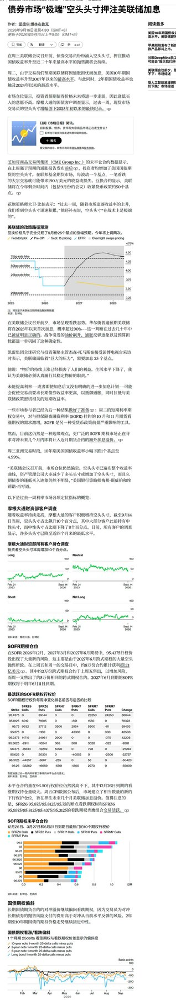
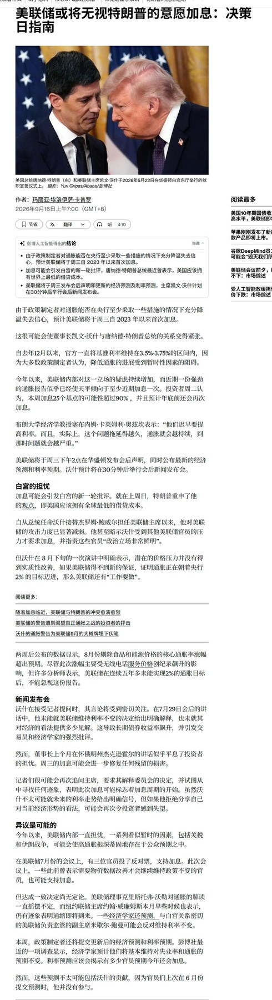
2 图
磁电存储
磁电存储
斯迪克做磁带、达瑞电子做外壳
深科大、致尚供测试设备
⭕【宁德时代】的几个核心问题解答：宁德投资价值没有变化
⭕【宁德时代】的几个核心问题解答：宁德投资价值没有变化
1️⃣政策量化影响：消费税、出口退税如果完全电池厂承担，当前对宁德每个月的直接影响接近16e，假设和客户共担一半，单季度影响25e业绩；27年出口退税继续退坡6%+消费税27年9月还有上行，我们预计27Q4等极限状态还有单季度30e左右的影响。若考虑这种传递始终很难推进，27年宁德业绩从单位盈利1毛下修1.3分左右，对应业绩1170e。电池承担多少政策影响取决于中尾部企业的盈利能力，当前限制产能扩张下电池格局高度集中产能利用率饱满，最终仍以传递给终端为主。
2️⃣单位盈利下降：我们认为如果因为政策、储能产品结构等带来宁德单位盈利下降，这是全行业都面临的情况，#本质宁德的和同行的差距并未缩小，核心竞争力也没有变化，当前宁德单位盈利和同行继续保持7分差距，当前看这个差距经历过两轮周期并未出现显著格局变化。
3️⃣排产：非常明确10月排产环比继续增长5%左右，不要再质疑宁德的排产了，预计维持1150GWh左右的产量，同比54%的增长，高于行业增速，和年初相比高于市场预期。
4️⃣下游客户切供应商影响：当年广汽、Tesla都经历过二供份额提升等，最后公司份额仍稳定，#26年份额仍在提升；当前出口、海外电车增速显著高于国内，公司优势更大，电池最后还是用技术、质量说话。
➡️核心仍是行业27年需求增速，政策变化（出口退税、消费税、国际贸易）这些已经是明牌，能源革命这件事情是长期可持续的，我们给个保守的业绩预测就是26、27年在1毛单位盈利的基础上下修5厘/1.3分，影响50/130e，尽管这样对应27年估值已经明年不足13x，中国还有什么公司能做到全球第一，盈利显著领先同行，股息率3%+以上，业绩始终维持在20%以上增速，ROE 25%持续25%左右，EVEBITDA 7x，20年时候预测宁德的业绩25年都给超额兑现了，23H2我们也遇到过这样的问题24年公司逆势涨了一倍，这样一个中国在全球最具竞争力的产业和公司值得这个位置好好研究和布局。
【博硕科技】与泰瑞达独家战略合作，泰瑞达提供标准化部件，博硕生产非标自动化测试及组装设备直接卖给北美算力客户，建议重点关注
【博硕科技】与泰瑞达独家战略合作，泰瑞达提供标准化部件，博硕生产非标自动化测试及组装设备直接卖给北美算力客户，建议重点关注
泰瑞达法说会关于机器人业务几点趋势分享：
① AI数据中心建设正通过“机架出货增长—ODM/EMS扩产—制造设备资本开支”的路径向服务器制造环节传导，组装、自动化、测试及老化设备已形成数十亿美元级市场，预计至本十年末仍保持中双位数增长。
② AI服务器架构快速演进带来的高功耗、高密度、高速互联及液冷等复杂制造需求，使自动化驱动力由传统的人工替代进一步转向提升产量、质量与制造一致性，推动L6-L10装配环节自动化率持续提升。
③ 测试与自动化正从单机设备向“Robot+Test+Assembly+MES”的系统级解决方案演进，L6前PCBA测试、L6-L10自动装配及L10系统测试之间存在较强的设备协同和交叉销售机会。
④ 美国本土AI服务器制造扩张进一步提升自动化设备的ROI。高人工成本叠加AI服务器高价值、高复杂度特征，使美国工厂具备更高的机器人及自动化渗透潜力，并成为全球服务器自动化设备需求的重要增量市场。
⑤ 从产业趋势看，服务器自动化设备的成长边界将由L6-L10逐步向L11整柜及Cluster级制造延伸，并进一步覆盖液冷、光互联、硅光等新型基础设施环节，形成“服务器组装—测试—液冷—整柜—光互联”的更大自动化设备市场。
#合作官宣链接及目标市值测算见之前段子
东田微
东田微
1. 隔离器：住友长协供应未影响出货，缺货情况下价格可传导，26年翻倍扩产。27年光隔离器业务有望贡献2亿利润，散单比例提高后净利润弹性或达4-5亿。
2. 滤光片和zblock：EML和硅光方案核心无源器件，量价齐升。缺的不是上游晶圆而是滤光片制造产能，公司锁定日本光池至少30台设备产能（交期半年以上）。今年底扩产至8000万片/月，ASP 2-2.5元，有望成为最大供应商之一。明年保守20亿左右收入体量。
3. 透镜类：非球面/硅透镜，受益硅光渗透率提升，硅光模块中用量翻倍（EML 1:12-14，硅光1:24）。25年已通过大客户认证，26年开始供货扩产。27年透镜市场空间约120亿，中期10%份额贡献12亿收入增量。
4. OCS：客户目前确定cohr，未来有望突破更多。微透镜阵列已验证极小批量出货，ASP 2000+人民币；模压模具ASP 30万以上。
5. 盈利预测：26/27年中性2亿/9亿利润，乐观27年12亿，中期18-20亿利润。
6. 市值空间：光通信业务8亿×40x=320亿，消费电子1亿×30=30亿，OCS/CPO/NPO给予100-150亿，合计500亿左右。
7. 预期差：市场标签只有隔离器且受上游旋光片压制，但滤光片同样紧缺且明年报表贡献最大，透镜和OCS市场无认知。
【莱特光电】会议更新:
【莱特光电】会议更新:
【1】主业Q2开始供京东方8.6带线，随着客户产能爬坡Q3开始业绩逐季抬升。26年主业保守7亿+收入，3亿+利润。8.6带线整体100亿耗材/年，公司27年可参与70亿的份额竞争。
【2】进入韩国(三星)，天马等直供，韩国客户27年贡献增量，对应apple的高端机型(折叠屏)，公司参与的Oled材料空间中性有400亿。
【3】Q布q2已完成中试线，拉丝已跑通良率超预期。目前已给台湾，韩国pcb客户送样。新厂房设计300万米/月，织布机1个月内第一批到位开始生产，27年Q2产能100万米/月。剩下200万米产能可布局二代布，T布等。
公司是唯一做到核心显示耗材出口的中国公司，已完全具备全球竞争能力。Q布已送样头部客户且产能很快形成。我们认为价值被严重低估，强call！
By lzj
中信主题策略刘易团队-"跨界液冷三剑客"之【金洲管道002443】自有资金6.8亿增资金洲液冷，第二曲线从“组织落地”进入“资本弹药到位”
中信主题策略刘易团队-"跨界液冷三剑客"之【金洲管道002443】自有资金6.8亿增资金洲液冷，第二曲线从“组织落地”进入“资本弹药到位”
#6.8亿增资夯实资本门槛&扩产研发同步加码
1、公司公告拟以自有资金6.8亿元对全资子公司金洲智慧液冷技术（上海）增资，注册资本由2,000万元增至7亿元（仍100%持股）。资金主要用于产品线扩建/零部件产能扩产、系统研发与项目交付、市场拓展、团队建设及流动资金。
2、液冷业务稳步推进：公司液冷业务已完成“更名→控股闪麟→东莞骅兴扩约3万㎡并推进试产/投产”的组织与产能拼图；本次是资本端一次性补齐。公告明确点出原注册资本与业务定位严重不匹配。本次6.8亿增资直接对准“能投标、能垫资、能扩产、能交付”四件事，将液冷第二曲线从“有平台、有产线预期”推到“有资本实力承接订单与项目”的阶段。
⏰附：9月17日本周四下午液冷孙公司东莞骅兴投产首秀 欢迎报名同往（东莞凤岗镇黄洞村东升工业一路1号）
欢迎来电探讨！中信主题策略 刘易/田鹏/王涛/白弘伟
❗️【天风电新】重点更新半导体零部件—— 【英杰电气】
❗️【天风电新】重点更新半导体零部件—— 【英杰电气】
1、半导体射频电源收入已超光伏等其他业务，26Q2系第一个拐点。#从零部件紧张程度看，确是MFC 〉射频电源、真空类产品，但国产化同样加速。
公司1-8月半导体订单6亿+，yoy+130%，全年订单保9冲10。净利率超30%。
2、同时，光伏设备订单主要系海外，1-8月新签海外订单5亿+，叠加之前未确收的，合计10亿，#核心都系海外，毛利率超30%。
3、新的电源宝藏多，其中我们最期待的【❗️PCB脉冲电源】，对标公司力源海纳（已披露招股书，25年收入8.5e、利润2.7e，其中增速最快的pcb业务）。
4、短期变化：期待一下26Q3的业绩吧，真正意义上的大拐点来了。其他：底部股权激励已落。
剩下就是股票如何定价问题？
第一，怎么比性价比都高，其他公司动辄明年80-90X，公司按照明年4.5亿利润计算（刚突破新能源高点）；现在不足30X。
第二，股票的预期差来自，大部分人对他的定位还停留在光伏设备企业，实则早已不是，
第三，最简单按射频电源250亿市场+25%份额+30%净利润*60%股权=11亿利润，这还没考虑真空类产品、PCB脉冲电源等大空间新业务。
【华源电子团队】威尔高调研反馈：国内最具标志性的电源PCB，受益涨价+通胀，业绩释放正当时，重点看好
【华源电子团队】威尔高调研反馈：国内最具标志性的电源PCB，受益涨价+通胀，业绩释放正当时，重点看好
威尔高是谁？：公司是国内最优质的面向AI服务器电源用PCB企业，其产品面向一次侧与二次侧电源，台达、欧陆通、麦格米特与长城是电源领域最核心的四大客户，尤其是台达合作长达20年，最合作最久、份额最高的PCB厂商。
下游顺价顺利，短期业绩环比持续高增长：公司核心材料FR4+高Tg涨价导致PCB成本提升，今年Q1因尚未成功传导价格，利润受到压制；从3月份起，公司陆续向欧陆通、麦米等成功顺价，到6月份，大客户台达第一次涨价落地【+16 pct】，推动Q2净利率回升至6.8%，净利润增至3700w；迈入Q3，7月公司收入与净利率水平进一步抬升至2e+收入&11%净利率，同期启动对大客户台达的第二轮涨价【整体涨幅＞25 pct】，8月综合净利率进一步抬升至16%；公司预计10月将启动第三轮面向台达的涨价进而推动集团净利率水平进一步抬升。
产能扩张节奏适时且紧凑，全面抓住本轮AI推动的服务器电源扩张行情：1）惠州产能5w平/月，主要面向消费电子，产值~4e，后续技改至小批量快板，预计单价将进一步提升；2）江西一期产能14w平/月，面向国内一二次侧电源与汽车电子产品，通过多次成功顺价，均价显著由于惠州工厂；26Q3启动二期首批6w平/月新产能，预计27Q1二期第二批6w平/月释放业绩；3）公司应大客户台达需求于23年战略性投资泰国工厂，首期投产5w平月，26Q3初投产新5w平/月产能，27Q1新增2w平/月产能，均面向以台达为首的海外电源大客户，我们预计到明年中，公司所有产值合计将达到65e，如若Q4进一步涨价，产值空间将进一步上修
明年业绩展望积极，净利润高增，估值便宜，催化亮点多，值得重点关注：公司H1确收10e中AI服务器电源业务占比达到55%；展望27年，预计27年，公司四大核心一次电源客户将提供40e+收入，较26年接近翻倍。二三次电源今年收入2kw，受益于下游客户在G家客户规模化放量，明年有望实现十倍以上增长。非电源业务种中消费占比预计逐步迁移至单价/利润更优的车规、柜外电源与机器人市场，明年相关业务确收仍然将会有非常显著的增长。我们预计公司27年公司整体收入区间50~60e，其中AI服务器业务占比将提升至75%。按照8月16%净利率测算，利润水平8-9.6e，目前123e市值，估值仅12.0x-15.0x，我们给与30.0xPE，看240e-288e，股价空间感较好。
我们预计后续有以下三点有望进一步拔高业务利润弹性：1）Q4针对电源侧大客户涨价，进一步上修净利率至20%，27E 利润将达到10e+；2）二次电源价值量较一次电源显著提升，如二次电源放量超预期，预计整体收入水平将持续改善；3）SST相关收入上修；
OpenRouter用户在OpenAI模型上的花费超过了在Anthropic模型上的花费
OpenRouter用户在OpenAI模型上的花费超过了在Anthropic模型上的花费
Anthropologie 利 Salesforce CEO表示，企业需要人工智能方面的帮助
Anthropologie 利 Salesforce CEO表示，企业需要人工智能方面的帮助
关于美国三大实验室在支出份额与tokens份额
关于美国三大实验室在支出份额与tokens份额
这是 OpenRouter 上的聚合数据，支出与tokens之间的分布差异非常显著。
这三大实验室仍然吸引了约 70% 的总支出，但仅占使用了 27% 的tokens
10年期国债收益率 & 标普500指数12个月前瞻市盈率
10年期国债收益率 & 标普500指数12个月前瞻市盈率
GFHK 的 intel 更新
GFHK 的 intel 更新
•CPU顺风因素：GPT-6代理能力预计将推动服务器CPU需求增长。
•CWF（Clear Wafer Forest）：小批量生产推迟至2026年底 → 2027年第一季度全面生产。主要产量 = Diamond Rapids（2027年中），配备更强的SRAM/LPDDR5X + 更多核心。
•NVDA：潜在PC合作 + 很可能采用x86 CPU用于头节点（Rosa Feynman变体，配备英特尔CPU）。
•代工厂良率改善： – 18A（Panther Lake）在2026年第二季度仍约为80% – 更大服务器CPU（CWF）良率升至约50%（6月约为20%）
•产能重申：到2026/27/28年底，18A为40/60/80 KPM，14A为0/6/24 KPM。
•代工厂项目推进：Terafab合作 + HBM基底层（可能2029年为2大供应商）。
•后端管道强劲（2027E/2028E收入11亿美元/70亿美元）。
•EMIB/基板良率领先于市场担忧：日本供应商已达约45%（第二季度为20–25%），目标9月底超过50%，1月约为55%。
Semianalysis:
Semianalysis:
在 GTC 2026 上，Jensen 展示了图表，显示 VR NVL72 在 O(1-3 万亿) 参数模型上，每兆瓦性能是 Blackwell 的 3 倍，大约为 200 TPS。但与 Rubin 在预发布软件上已实现的真实世界性能相比，我们已经看到了每兆瓦高达 7 倍的更好 token 吞吐量。随着 Rubin 软件栈和内核库的成熟，以及开发者社区在 Rubin 优化方面经验的积累，我们预计这一差距将进一步扩大。
当我们考虑 3 年的租赁成本时，2026 年 7 月 Rubin 的成本为每芯片/小时超过 8.5 美元，Blackwell Ultra NVL72 的成本为每芯片/小时 5 美元，这次升级仍然是物超所值的。在 80 TPS P90 交互性下，Vera Rubin 在相同的租赁 TCO 下可以产生多 62% 的总 token。在更具交互性的前沿部分，Vera Rubin 在 3 年租赁 TCO 下可以实现多达 16 倍的 token。
美银——亚洲基金经理调查：静待AI变现与日本央行政策正常化
美银——亚洲基金经理调查：静待AI变现与日本央行政策正常化
核心结论： 9月BofA亚洲基金经理调查显示，投资者对AI变现的实质性证据保持高度审慎，超八成受访者要求在增加AI相关敞口前看到清晰的盈利转化证明。防御性板块轮动成为对冲AI下行风险的首选，而价值与周期板块的偏好急剧降温。与此同时，日本央行政策正常化已取代企业盈利，成为主导日本股市的核心主题。
宏观与盈利：
• 受美联储重启加息的担忧重现影响，9月增长预期略有软化，但投资者对企业利润的预期改善：净55%预计亚太（除日本）企业利润将提升（8月为45%）。
• 通胀预期整体稳定，净25%的投资者预计亚太（除日本）未来12个月通胀将走高。
• 对中国经济前景的乐观情绪急剧弱化，而对日本经济的预期保持平稳。
政策与政治：
• 近80%的投资者预计日本央行将在本月（9月）实施下一次加息。
• 美元/日元的干预触发预期点位从8月的165下移至160。
• 投资者认为美联储落后于曲线，自2022年9月以来首次预期收益率曲线趋平。
预期回报与估值：
• 投资者对亚太（除日本）和日本股市的看涨情绪升温，预计未来12个月回报率分别为6.3%和6.4%，乐观水平分别处于历史第89和第94百分位。
• 亚太（除日本）股票被越来越多地视为估值偏低。
• 关于AI对股市的积极影响，55%的投资者认为已“较充分或完全”反映在价格中（8月为37%）。
主题与配置：
• 中国： AI/半导体和国企是最受青睐的两大主题。
• 日本： 日本央行政策正常化已超越盈利，成为日本股市近期至中期的首要主题。
• 半导体周期： 对更强半导体周期的预期回升至35%，但仍远低于7月的60%。
• AI受益市场： 美国及中国台湾地区共同成为下一阶段AI周期的最大预期受益者。
• AI价值链风险收益： 软件与平台提供最佳风险收益比，超越能源与电力板块。
• AI对冲策略： 防御性板块轮动成为领先的下行对冲手段，而转向价值和周期股的对冲比例骤降。
• 印度市场： 对印度缺乏AI敞口的担忧显著缓解，从32%降至10%。
仓位与区域配置：
• 日本及中国台湾仍是亚太区最受青睐的市场，尽管月度环比略有下降。
• 在亚太（除日本）板块中，科技维持超配榜首，电信升至第三。9月资金显著轮动至保险、电信和软件，同时大幅削减医疗保健、银行、零售和材料。
• 日本仓位高度集中于银行和半导体，其中银行配置创历史新高。
高盛——专家电话会纪要：英伟达800VDC架构对电气设备行业的影响
高盛——专家电话会纪要：英伟达800VDC架构对电气设备行业的影响
高盛总结了与数据中心行业资深专家Herve Tardy的后续投资者电话会要点。Tardy先生拥有30年行业经验（曾任职于伊顿、施耐德电气），本次电话会聚焦于英伟达提出的800VDC（800伏直流）电源架构下数据中心电气设备需求前景及竞争格局的更新研判。核心结论：800VDC技术采用进度慢于年初预期，主要由于AI推理需求增长超预期且对功率密度要求较低，传统架构仍具生命力；全系800VDC部署至少需五年，短期更可能仅服务器采用800VDC，而网络、存储、照明等仍沿用传统架构。英伟达Kyber NVL144机架系统（搭载Rubin Ultra GPU）已推迟至2028年，较原定2027年目标延后逾12个月。
800VDC渗透率下调，传统架构需求依然强劲
Tardy预计，到2030年，800VDC架构在美国新建数据中心中的占比将从年初预测的25%下调至21%，欧洲从20%下调至17%。下调主因是AI推理市场增速远超预期——AI推理单机柜功率上限仅约150千瓦，传统数据中心架构仍可满足，因此800VDC在AI推理场景的应用概率极低，推理负载的架构升级大概率仅限于从风冷转向液冷。至2032年，非AI数据中心仍将占据主导地位：以微软为例，其计划到2032年部署38GW装机容量（未来六年复合年增长率约20%），其中非AI数据中心将占三分之二（对应17%的复合年增长率），AI数据中心占三分之一（对应35%的复合年增长率）。这意味着传统电源架构仍存在巨大市场空间，且利润率预计高于800VDC架构，利好尚未布局固态变压器（SST）的厂商如罗格朗（Legrand）。
电气设备制造商产品路线出现分化
各厂商对800VDC过渡期的产品策略各异：台达电子（Delta Electronics）正在亚洲开展5MW SST试点，该功率被视为数据中心SST的最佳平衡点；伊顿（Eaton）计划于2026年底向客户送样2MV SST，技术源于其2025年收购的Resilient Power。相比之下，施耐德电气、维谛技术（Vertiv）和ABB当前聚焦于800VDC的中间态产品——施耐德主推变压器整流单元（TRU）和直流整流器；Vertiv与ABB则推出中压不间断电源（MV UPS），虽迈出向800VDC过渡的一步，但仍基于传统技术。通用电气韦尔诺瓦（GE Vernova）同样宣布了MV UPS（功率达175MW，而ABB为1-2MW），并仍积极研发SST，预计2027年推出。初创企业Heron Power（被视为最活跃的新进入者）正在开发5MW SST，新生产基地预计2027年底就绪。
太阳能企业试图切入SST领域，但壁垒高企
Enphase与SolarEdge等太阳能公司正尝试进入SST市场，尽管可借力其深厚的直流配电技术积累，但在满足数据中心关键任务运营的严苛要求（尤其是冗余等级）以及现场服务能力方面存在显著短板。技术路线上，SolarEdge采用碳化硅开发典型SST，Enphase则尝试并联氮化镓以实现驱动直流所需的兆瓦级功率。
超大规模客户积极发标，但SST量产窗口推迟至2029年
超大规模云厂商正就SST发出海量提案邀请书（RFP），此举大概率意在测试价格与批量敏感度。受制造规模不足影响，当前SST价格高企（约每兆瓦40万-50万美元），因此云厂商正重点与不同供应商开展试点以充分验证技术。一旦优选产品类型确定，评估与采购周期预计还需12至18个月，从而将SST最早大规模部署窗口推至2029年。
技术焦点转向固态断路器，单兆瓦成本飙升
市场关注点正转向800VDC过渡中另一关键产品——固态断路器（Solid State Breakers）。传统架构断路器动作时间为毫秒级，而800VDC要求微秒级响应，这不仅开发难度极大，成本也极为昂贵（约每兆瓦60万美元，是当前断路器价格的5倍，且显著高于SST的40万-50万美元）。受此高技术成本推动，未来每兆瓦电源链价值量将持续攀升：到2030年，AI训练全电源链预计需400万美元/兆瓦（2025年为170万-180万美元/兆瓦），AI推理需260万美元/兆瓦（2025年为140万美元/兆瓦）。
AI推理经济性认知转变，Token最大化策略遇冷
围绕Token输出优化的争论对AI训练至关重要，但在AI推理语境下其相关性正在减弱。企业客户（而非超大规模云厂商）承担着绝大多数推理工作负载，他们逐渐意识到，从成本效率角度看，“Token最大化”理念往往适得其反。除药物研发等特定算力密集型领域外，典型企业应用并不需要大规模、高密度的AI计算集群。
近期催化剂与行业会议
未来数月关键催化剂包括10月12日至15日的开放计算项目（OCP）峰会，以及10月20日至22日的英伟达GTC大会。当前OCP与英伟达引领行业技术思潮，而原始设备制造商（OEM）整体更关注新技术上市速度。产品差异化讨论尚不多见，预计将在4至5年后第二代SST开发阶段才会浮现。
结论
800VDC架构的渗透节奏放缓印证了传统电气设备在电力密度要求较低的AI推理场景仍具成本优势，非AI数据中心的长周期增长为传统电源厂商提供了稳固的基本盘。短期SST与固态断路器的高成本将推高单兆瓦价值量，但量产与大规模部署仍需时日。投资者应密切关注OCP与GTC大会的技术风向，同时警惕技术路线分化及厂商执行风险。优选标的需聚焦在过渡期产品（如MV UPS、整流器）上具备先发优势、且能平衡传统业务现金流与新兴技术投入的电气设备龙头。
交易台 - 高盛中国开盘
交易台 - 高盛中国开盘
市场情绪
在美联储会议前夕，中国A股现金成交额创下2026年新低。昨日市场重点关注宁德时代的走弱——尽管没有明确的头条新闻驱动这一走势，但本地反馈显示，来自理想汽车、增值税负担以及出口退税的最新消息可能会在第三季度损害利润率；若疲软态势持续， ongoing 的回购行动和边际买盘的回升或可形成支撑。此外，围绕特朗普与——会晤的更多头条新闻涌现，该会晤可能于2026年9月24日举行……据彭博社报道，贝森特预计将于本周日会见何立峰，双方或将讨论削减农业和能源领域的关税。尽管会晤传来积极消息，但在投资者等待宏观决策之际，中国市场可能继续处于观望状态。
9月联邦公开市场委员会（FOMC）会议前瞻：我们预计FOMC仅会对声明作出最低限度的必要调整，可能会指出FOMC正在加息以支持将通胀率拉回2%的目标，但很可能避免就未来路径或进一步加息的标准提供指引。在8月消费者价格指数（CPI）报告发布后，我们更新了预测，纳入9月FOMC会议上加息25个基点的预期，主要原因是市场定价已接近90%，且美联储可能希望避免因维持利率不变而引发负面市场反应。尽管有此短期调整，但从经济基本面来看，上调联邦基金利率的理由并不充分。因此，我们调整了长期展望，目前预计2027年将进行两次降息，分别发生在9月和12月（而非此前的6月和12月），并将终端利率预测上调至3.25%-3.5%（此前为3%-3.25%）。
新闻
*会晤
- 贝森特将于周日在纽约会见何
- 英伟达CEO将出席特朗普为x举行的晚宴
- 特朗普与x——会晤可能于2026年9月24日开始
*中美就削减农业和能源关税展开讨论
- 双方会谈很可能达成一项协议，降低中国制造商投入品的关税。
*TMT
1/ MLCC：风华高科（000636 CH）否认有关其高端MLCC为海外代工产品的传闻 {NSN TLEP77GFLIIP <GO>}
2/ SST / AIDC：
- 专家预计，到2032年非AI数据中心仍将占据主导地位，因此传统数据中心架构的需求依然强劲；
- 鉴于评估和订购周期可能额外需要12至18个月，SST的大规模部署预计将在2029年展开
3/ 液冷：工信部与国家发改委发布人工智能五年发展规划，将液冷技术纳入重点研发目标
* 工业板块
1/ 电池：宁德时代获批电池交易，推进整合战略
2/ 风电：中国国内投资者押注风电场标的，博弈海上风电三年行动计划的即将出台
- 主要受益方：603606 CH、300850 CH、002487 CH
【盘前0916】
【盘前0916】
1、昨晚美股继续走低，接下来几天连续迎来三大央行的利率决议，今晚凌晨是美联储，明天和后天是英国和日本央行。目前市场已经充分预期了加息，资金可能会比较关心是新一轮加息周期开始后，对市场意味着什么？目前普遍预测将加息两次，不过历史经验看加息不一定股票就会下跌，尤其是刚开始加息的6-12个月，美股一般都有正回报。目前情况比较复杂，从传导链条看，通胀不仅反映基本面，也有中东局势的扰动，昨晚油价又冲了，美联储也迫不得已。盘面上，反而费半是小幅修复的，日韩早上开盘也算稳定。
2、A股还是继续等待的盘面，也有一些提前抄底埋伏的资金，所以盘中一度也有一点小反弹，但整体情绪跟不上，也就是冲高回落的结局，白天的时候美股和油价都比较稳定，盘面也整体冷静，但到了下午越走越差，筹码有点风吹草动就很脆弱。有一定原因还是最近金融和经济数据非常疲软，盘中美债收益率继续走高，引发一些负面情绪。量能已经非常非常接近年内低点了，负反馈标的变多，科技反馈要比预期好一些，尤其是前面没怎么动的国产链，红利昨天也防御不了，毕竟科技没有反弹也割不动了，加息预期落地反弹总不能选红利吧。
3、目前还是看做超跌反弹的二次探底格局，昨天我们也在观察重要指数的底部钝化情况，创业板指就差一点点，沪深300已经完成，科创50在年线附近也出现修复，龙一的hwj回踩年线后开始有资金做多了，技术上这里会有量化博弈的，而是算时间，这轮下跌和上一轮调整时间也挺接近了。另外，产业层面关于AI安全讨论继续，但明显特朗普也很着急，主权AI建设的迫切性客观存在，还是看后面的动态数据变化，市场现在去计价的风险不是必然要发生的，只不过先极致交易下，未来出现预期差的可能性还是比较大。
4、最容易博弈向上空间，又不需要考虑轮动的，还是我们说了挺久，逢低吸筹创业板50ETF，科创创业50ETF，科创综指ETF，科创100ETF，科创200ETF 和增强明显的科创50增强ETF。板块上面，国产这周还有hw大会的催化，科创半导体设备ETF 动起来就是弹性大。
（仅供内部参考，不做投资建议，基金投资需谨慎）
【财通研究·固收】信用早早报（9月16日）
【财通研究·固收】信用早早报（9月16日）
#评级关注
1、中诚信国际：关注湖南湘江新区发展集团控股股东和实际控制人发生变更事项
#评级调整
2、标普：将龙源电力集团长期发行人信用评级提升至“A”，雄亚投资的长期评级提升至“A-”
3、联合国际：将泰州华信药业投资有限公司信用评级从“A-”上调至“A”
#企业经营
4、红塔国资：资产被查封冻结合计17.857亿元，占2025年末净资产56.62%
5、茅台融资租赁有限公司金融市场部副总经理陈挺接受纪律审查和监察调查
6、新疆中泰(集团)有限责任公司原党委副书记、董事、工会主席齐国庆接受纪律审查和监察调查
7、"25济宁能源MTN001"持有人会议：同意子公司股权转让及重大资产重组议案
免责声明：数据来自公开信息整理，不构成任何投资建议
9月16日利率早报 重要事件回顾（财通固收·隋修平团队）
9月16日利率早报 重要事件回顾（财通固收·隋修平团队）
国内新闻：
（1）【银行个人贵金属代理业务密集“退场”】 近日，浦发银行发布公告称，该行拟对代理上海黄金交易所个人贵金属业务进行调整，将自9月25日后择时停办该项业务，并关闭手机银行、网上银行、网点柜面等渠道的交易权限。这并非个例，今年以来已有多家银行宣布调整个人贵金属代理业务。有银行人士透露，对于代理上金所个人贵金属业务，银行更多是收取手续费，若市场发生剧烈波动，银行可能面临客户穿仓带来的垫资信用风险。
（2）【全球黄金ETF资产管理规模创纪录，机构：金价短期承压不改长期配置价值】 8月以来，黄金类ETF持续获得资金流入，截至9月14日，境内黄金相关ETF资金净流入超过百亿元。与此同时，世界黄金协会发布的报告显示，8月全球实物黄金ETF资金净流入约180亿美元，创历史第二大单月净流入规模。全球黄金ETF资产管理规模环比增长16%至6150亿美元，黄金持仓增加121吨至4189吨，刷新历史纪录。近期，油价上涨及美联储加息预期升温令金价短期承压。但从中长期来看，多家机构认为，央行购金、储备多元化和避险需求仍为黄金提供支撑。
国外新闻：
（3）美国众议院议长迈克·约翰逊表示，承诺向美国人发放的5000美元支票需要一定时间才能落实。 当被记者问及支票发放是否会有收入门槛时，约翰逊未能给出明确答复。 他也无法说明这些支票是否会增加联邦债务，或者是否能在今年晚些时候通过。 约翰逊表示，他昨晚就支票事宜与特朗普总统进行了交谈，但具体细节尚未敲定。
（4）美国参议院多数派领导人图恩（John Thune）表示，随着全美柴油均价突破每加仑6美元，他对研究柴油出口禁令持 “开放态度”。他在记者提问时回应称：“我们会考量所有具备可行性的方案。我认为，如果国内拥有充足供应，当下却仍向外出口柴油，这或许是缓解价格压力的一个办法。倘若此举能够减轻涨价压力，我愿意研究该方案。” 柴油以及化学性质相近的家用取暖油近期涨幅超过汽油，对11月国会中期选举的关键摇摆州造成冲击。 图恩称，相比得州联邦参议员候选人、民主党人詹姆斯・塔拉里克提出的暂停柴油税方案，出口禁令在他看来或许更为可行。图恩表示，他并不清楚特朗普政府对于出口禁令持何种看法。
（5）【美国财长贝森特表态】
① 美国财长贝森特：财政部正评估有关总统特朗普提出的5000美元派现建议。 如果共和党在11月中期选举中胜出，将与众议院推进有关5000美元支票的审批。 在不影响赤字的情况下，有多种方式兑现5000美元派现建议。 如果需要众议院审批，我将会见众议长约翰逊。
② 美国财长贝森特：剔除关税退税因素的情况下，2026财年预算赤字会收窄。 对于美国债务曲线而言，（预算赤字与GDP比率）3%的财政赤字目标具有重要意义。
③ 美国财政部长斯科特·贝森特在被问及10年期美国国债收益率时，将收益率的上涨归咎于油价的攀升。 贝森特在国会大厦向众议院一个小组委员会作证前，对记者发表了上述讲话。 贝森特表示，油价将会下降。
④ 【美国财长：美国从日元干预中获得数千万美元收益】 美国财长贝森特：我们一直就日本干预（日元汇率）保持联系。 针对日元干预，美方使用了“名义金额”。 凭借一笔“名义金额”，美国财政部得以释放支持日本政策的信号。 美国从中获得（至少）数千万美元收益。 日元走强意味着日本政府无需出售美国资产。 日元走强意对美国出口更有利。
资料来源：华尔街见闻，财通证券研究所
免责声明：信息来自公开信息整理
ps最近停产传：新特准东今日停产（已确认）、协鑫乐山停产（已确认）、通威西南陆续减产（大概率减，时间未定）、大全新疆减产（内部在商议，大概率减，时间未定）、亚硅...
ps最近停产传：新特准东今日停产（已确认）、协鑫乐山停产（已确认）、通威西南陆续减产（大概率减，时间未定）、大全新疆减产（内部在商议，大概率减，时间未定）、亚硅甘河今日减产（确认减）、希望10月复产新疆三期、宝丰推迟（说推到年底，本来就是政府要求开工，可能拖一拖就不开了）、戈恩斯10月可能复产。丽豪、南玻、晶诺、弘元只有一条线在产，如果降负荷会抬高成本，不太可能会减产
[發]【ERS 2026 呼吸赛道速递 · 三】TSLP通路数据密集披露，国产管线进入III期窗口：
[發]【ERS 2026 呼吸赛道速递 · 三】TSLP通路数据密集披露，国产管线进入III期窗口：
[太阳]康诺亚/石药CM326（抗TSLP单抗）发布中重度哮喘II期结果（壁报），208例患者治疗24周，年化急性发作率Q2W组降低95.6%（P=0.002）、Q4W组降低68.0%（P=0.018），FEV1较基线+0.17L和+0.19L，安全性与安慰剂相当；哮喘和CRSwNP III期推进中；COPD II期已启动（318例），注意该研究为嗜酸富集设计（入组要求EOS≥150/µL）；
[太阳]Upstream Bio verekitug（抗TSLP受体单抗）重度哮喘VALIANT II期入选口头报告，年化加重率较安慰剂降低56%（100mg Q12W）和39%（400mg Q24W），嗜酸≥300亚组降低87%、但嗜酸<150人群未达显著；week 60安慰剂校正FEV1改善122-139mL；计划2027Q1启动III期（400mg每12周给药新方案），COPD II期（VENTURE）在研；
[太阳]赛诺菲lunsekimig（TSLP/IL-13双抗）发布DUET（CRSwNP IIa）与AIRCULES（哮喘IIb）详细数据，两研究均达主要终点，III期推进中；Generate Biomedicines golukibart公布SOLAIRIA-1/2 III期设计；
[庆祝]点评：1）CM326的II期急性发作数据是本次国产披露中最强的数据（Q2W组AAER降低95.6%），但其COPD II期为嗜酸富集设计（EOS≥150），在tozorakimab全人群数据面前人群覆盖广度是潜在短板，哮喘III期结果与COPD人群策略为TSLP赛道关键跟踪点；2）海外TSLP已有三个分子进入或即将进入III期（golukibart、lunsekimig、verekitug），验证靶点确定性的同时加剧拥挤；且verekitug低嗜酸人群未达显著，TSLP通路"全人群"证据强度目前仍弱于IL-33通路，国产管线需有差异化；3）TSLP受体长效路径（verekitug季度给药）对应的国内解法是康诺亚CM512（半衰期约70天，突破性治疗品种）：CRSwNP II期已达终点、III期已于2026年9月完成登记（300mg每24周一次、半年一针），建议关注III期入组推进与对外授权进展。
[烟花]国内对应标的：#康诺亚 （02162.HK）/#石药集团 （01093.HK）CM326；#中国生物制药 （01177.HK）TQC2731（CRSwNP II期）；#健康元 （600380.SH）JKN2401（COPD III期）；#康诺亚 CM512（TSLP/IL-13双抗，突破性治疗，CRSwNP III期已登记）；#信达生物 （01801.HK）IBI3002（IL-4Rα/TSLP双抗，I期）；#荃信生物QX027N （TSLP/IL-13双抗，I期完成）
[玫瑰]联系人：余文心/余克清/廖博闻/汪晋/薛健博
[發]【ERS 2026 呼吸赛道速递 · 二】国产PDE3/4与PDE4B管线集体亮相ERS：
[發]【ERS 2026 呼吸赛道速递 · 二】国产PDE3/4与PDE4B管线集体亮相ERS：
[太阳]海思科HSK39004（PDE3/4双靶点，吸入干粉）以LBA壁报发布IIb期剂量探索数据，195例患者治疗4周，FEV1 AUC0-12h较安慰剂+116mL（0.75mg）和+127mL（1.5mg）；双支扩剂背景亚组仍显著，分别+74mL和+75mL；0.75mg组无治疗相关不良事件；中国III期已启动（选定0.75mg BID剂量），海外权益已授权AirNexis，交易总额最高10.63亿美元；
[太阳]海思科HSK44459（PDE4B高选择性）IPF II期研究入选口头报告，186例患者治疗12周，FVC较安慰剂8mg组+103.4mL（P=0.005）、12mg组+108.1mL（P=0.008），有或无背景抗纤维化治疗获益一致；IPF与PPF两项III期已完成登记，与勃林格已获批的那米司特同靶点竞争；
[太阳]正大天晴TQC3721（PDE3/4）发布干粉剂型I期数据，单药显著改善肺功能；联用格隆溴铵的开放标签阳性对照研究中，支气管扩张疗效与阳性对照相当，支持固定复方开发；其吸入混悬液剂型进度更快：中国III期（666例）已于2025年中启动、预计2027年读出，为国产进度最快的PDE3/4；海外权益已于2026年7月授权阿斯利康，首付2亿美元、总额最高19亿美元；
[太阳]恒瑞HRS-9821（PDE3/4，吸入混悬）发布COPD患者I期数据（36例），第12日峰FEV1改善476至508mL，安慰剂组214mL，暴露量呈剂量比例；其大中华区以外权益已含在2025年7月恒瑞与GSK的打包授权中（首付5亿美元、总额最高120亿美元）；
[庆祝]点评：1）PDE3/4全球仅恩塞芬汀获批（美国），中国尚无上市产品；按同剂型比较，正大天晴混悬剂进度最快，海思科的领先点在于DPI剂型、且是唯一在双支扩剂背景治疗上证明显著增量的分子，数据质量处第一梯队；2）HSK44459是首个与那米司特同靶点且具备叠加获益证据的国产PDE4B分子，IPF领域FVC获益超100mL为III期打下基础；3）海思科与正大天晴均已兑现BD（合计最高约29.6亿美元交易额）；恒瑞HRS-9821海外权益已通过GSK打包交易兑现，后续关注其国内III期推进、GSK主导的全球开发节奏，以及HSK44459两项III期的入组进展。
[烟花]国内对应标的：#海思科 （002653.SZ）、#中国生物制药 （01177.HK）、#恒瑞医药 （600276.SH/01276.HK）
[玫瑰]联系人：余文心/余克清/廖博闻/汪晋/薛健博
[發]【ERS 2026 呼吸赛道速递 · 一】阿斯利康tozorakimab（IL-33单抗）以口头报告形式发布OBERON/TITANIA两项III期完整结...
[發]【ERS 2026 呼吸赛道速递 · 一】阿斯利康tozorakimab（IL-33单抗）以口头报告形式发布OBERON/TITANIA两项III期完整结果，同步刊登NEJM：
[太阳]两项研究共入组2306例吸入维持治疗后仍急性加重的COPD患者（不限血嗜酸粒细胞，当前吸烟者入组上限25%），tozorakimab 300mg Q4W治疗52周，既往吸烟者中重度急性加重年化率较安慰剂降低29%（OBERON）和34%（TITANIA），全人群降低30%和29%；
[太阳]预设汇总分析中，基线血嗜酸粒细胞<150/µL人群加重降低23%，≥300人群降低43%（≥150人群降低34%为post-hoc分析），跨阈值均显著、效应随嗜酸水平递增，为COPD生物制剂首次在全嗜酸谱人群证明获益；
[太阳]tozorakimab BLA已获FDA优先审评（使用优先审评券），PDUFA预计2027Q1，欧盟和中国审评中；同通路竞争对手均已折戟：罗氏astegolimab（IL-33R）III期ARNASA已读出且未达主要终点（降低15%，P=0.068，全文2026年5月发表于Lancet），赛诺菲itepekimab AERIFY-2同样失败；已上市的度普利尤单抗（2024.9 FDA）和美泊利珠单抗（2025.5 FDA）均限定嗜酸型人群；
[庆祝]点评：1）tozorakimab是首个在全嗜酸谱（含BEC<150）人群显著获益的COPD生物制剂，跨过嗜酸阈值门槛，对国内COPD生物制剂管线有重估意义；注意效应量随嗜酸递增（23%→43%），扩围是获益广度的扩展而非效应均一；2）EOS<150人群降低23%意味着后续国产分子的II期设计可考虑纳入非嗜酸人群，人群入组标准的宽窄将成为竞争变量；3）PDUFA 2027Q1临近，建议跟踪度普利尤单抗、美泊利珠单抗与tozorakimab在真实世界中的适应症人群和份额变化。
[烟花]国内对应标的：#三生国健 （688336.SH）SSGJ-621（IL-33单抗，COPD中美IND获批）；#荃信生物 （02509.HK）QX007N（IL-33单抗，I期COPD+哮喘），QX031N（IL-33xTSLP双抗，I期，罗氏BD）
[玫瑰]联系人：余文心/余克清/廖博闻/汪晋/薛健博
【光大医药】关注肺癌领域ADC突破与IO 2.0浪潮--2026WCLC更新
【光大医药】关注肺癌领域ADC突破与IO 2.0浪潮--2026WCLC更新
事件： 近期，国际肺癌研究协会（IASLC）举办的 2026 世界肺癌大会（WCLC）于 9 月 12‑15 日在韩国首尔召开。本届会议中国新药表现亮眼，入选口头报告（Oral）19 项、小型口头报告（MiniOral）45 项，刷新纪录。
点评：
WCLC2026 中国创新药亮点频出，ADC 突破与 IO2.0 浪潮迭起，本土药企开始在肺癌核心治疗赛道输出具备确证性价值的终点数据。
1）B7‑H3 ADC 在复发小细胞肺癌领域接连公布 Ⅲ 期阳性结果，宜联 YL201、翰森 HS‑20093 均以拓扑替康作为对照，取得 OS、PFS、ORR 的全面优势。ADC 在 NSCLC 领域边界持续外扩，逐步实现从后线走向前线联合、单药走向组合、单靶点走向双靶点的演进，百利天恒 BL‑B01D1、石药 SYS6010 均披露临床数据。
2）PD‑1/VEGF 双抗赛道多点开花，康方生物依沃西单抗公布头对头 OS 获益结果。同时 IO2.0 赛道进入队列竞争阶段，荣昌 RC148、维立志博 LBL‑024 等多条国产管线公布数据，验证不同细分人群的差异化治疗潜力。
投资建议： 9‑10 月 WCLC、ESMO 两大顶级肿瘤学术盛会将成为国内创新药临床价值验证的核心窗口期。建议聚焦临床证据持续夯实的新机制品种、全球化确定性高有望达成BD合作的管线，以及开展全球多中心研究的新一代免疫资产。
风险提示： 政策风险、研发进度不及预期风险、BD不及预期的风险等
光大医药 吴佳青15868867890
🌀【天风电新】台光交流的几个增量点
🌀【天风电新】台光交流的几个增量点
1、从ccl价格看：9月还会涨一轮（跟上游没关系），主要是订单太好了，通过涨价来挤掉做不过来的订单，侧面继续验证景气度。
当前时点，市场对涨价链分歧巨大，但#1）筹码好，因为分歧并非机构重仓地；
2）【华正】是个非常好的样板，上一轮莫名其妙高点调整60个点，基本涨回来了。说明市场最后还是业绩说话。
上述台光的表述也进一步说明pcb板块景气度远没结束。
2、从技术升级看：M8-M9-M10目前看确定性最大的变化#碳氢树脂用量上升，这里主要是BCB树脂。所以我们重点推荐【东材、呈和】，其中股票弹性呈和或更大。
bcb目前200w/t，按照500t的量来计算，就是10亿收入、5亿利润。
3、从竞争对手分析：NV compute tray 【斗山+胜宏】牢牢焊死地位难撼动，switch tray 还是【生益追赶台光】的过程。#这里重点就是生益科技。
4、其他：【建滔】对台光配合度很高，E布保供，后续看好二代布导入。#这里重点继续看好建滔。
⭕山东创新：系统运行费参与分时电价浮动，午间充电时间段下浮70-90%，有望显著提升独立储能经济性
⭕山东创新：系统运行费参与分时电价浮动，午间充电时间段下浮70-90%，有望显著提升独立储能经济性
9月7日，山东省发展改革委印发《关于进一步优化分时电价机制的函》，核心在于#系统运行费参与分时电价浮动，午间低谷/深谷时段下浮70%/90%，系统运行费上涨对独储经济性的影响有望大部化解。
➡从政策细节来看：
山东鲁发改价格函〔2026〕68号明确，工商业容量补偿电价、上网环节线损费用、#系统运行费用一并纳入峰谷分时浮动，峰+70%、谷-70%、尖峰+100%、深谷-90%。9-11月及3-5月的11:00-14:00为深谷时段，#覆盖储能常规充电时段，储能充电时缴纳的#系统运行费可降低70%-90%，即从当前近0.10元/kWh量级降至0.01元/kWh以下，系统运行费的影响显著化解。
【长江电新】储能：山东系统运行费分时浮动，午间下浮70-90%利好储能！
【长江电新】储能：山东系统运行费分时浮动，午间下浮70-90%利好储能！
事件：山东发改委发布《关于进一步优化分时电价机制的函》明确系统运行费用执行分时电价政策，高峰时段上浮70%、低谷时段下浮70%、尖峰时段上浮100%、深谷时段下浮90%（除7-8月夏季期间，午间均为低谷、深谷时段，储能充电需缴纳系统运行费相应下降70-90%），新政策将于10月1日起正式执行。
1、具体来看，26H1山东系统运行费平均0.0821元/kWh，同比看25H1系统运行费仅0.0198元/kWh；若午间下浮70-90%，系统运行费约降低至0.0082-0.0246元/kWh，与25年水平相近，对应储能收益率提升2%左右；若山东模式推广，国内独立储能收益率有望明显改善。
2、近期来看，锂储板块整体波动较大。7月市场已定价国内需求下修，8月中旬以来，锂电排产博弈库存及涨价，对景气度指引意义已下降，但股价仍以最悲观预期反应，主要公司估值已降至27年10-15倍PE；后续若政策利好持续积聚、国内需求好于悲观预期，叠加油气价格持续上涨、海外需求加速释放，板块具备较高安全边际与修复空间。
[玫瑰]详细情况欢迎联系~
当前位置如何理解网络/交换机板块？
当前位置如何理解网络/交换机板块？
近期市场主要担忧交换机/超节点受国产算力供应链不确定性影响出货递延，我们认为：
1）Q3 Scale-out仍在加速放量（参考Q2），叠加少量Scale-up出货，季度增速乐观。
2）超节点节奏方面，
部分原材料供给问题有望在1-2个季度内缓解，
从博通FY26Q3业绩会表述来看，TH5 Ultra（Scale-up专供）季度内已出货部署，整体ready。
3）单柜超节点方案工程化无虞，双层Scale-up/单层光互联等多机柜超节点持续推进。#华为全连接大会、阿里云栖大会等预计验证趋势。
综上，1）当前股价短期内已反映悲观预期；2）自上而下来看，网络侧仍是未来2-3年内国产算力最高斜率板块之一。
核心标的：
#锐捷网络：聚焦网络业务，白盒数据中心交换机份额领先，对应27年收入翻倍以上增长
#紫光股份：26H1交换机收入86e，H2开始超节点放量，拟定增增持新华三
#华勤技术：超节点H2进入批量交付期，高速交换机26-27年连续倍数级增长
MLCC景气大周期进入加速窗口
MLCC景气大周期进入加速窗口
[玫瑰]村田部分料号停产、转产消息持续发酵，叠加前期三星电机签署万亿韩元规模AI服务器MLCC长单，多重利好共振，板块持续走强；展望Q3-Q4，国内原厂或存集中涨价预期，再添催化，MLCC 景气大周期趋势明确。
[玫瑰]自5月起，我们紧抓行情演绎关键节点，#0612外发MLCC陶瓷粉体专题报告，0608、0615、0713、0827多次通过电话会或线下专家会形式输出观点，同步配合高频路演、反路演及段子传递观点。我们始终秉持最勤奋的态度，力求产出最深度、最全面的研究成果
💡【长江煤炭丨专题研究】对标2021年，当前煤炭处在什么位置？
💡【长江煤炭丨专题研究】对标2021年，当前煤炭处在什么位置？
#行业位置：电厂盈利锚定、煤价距离政策敏感阈值仍有空间
通常认为度电利润低于-0.04元/度时电厂开始亏损现金流。2021年股价见顶时点对应行业平均度电利润约-0.08元/度，已连续亏损现金流约一个季度且亏损幅度持续扩大。当前煤价972元/吨，测算行业平均度电利润约-0.01元/度仍现金盈利，触发政策急转弯的核心条件尚不具备。当前若需达到度电利润-0.08元/度，则煤价需达到1327元/吨。
#估值变迁：估值整体抬升、涨价通道更多交易业绩弹性本身
对比2020-2021年以及2025年至今，同样上行周期中，板块PE中枢已从6-9倍抬升至当前的10-14倍，完成从“周期折价”向“稳定现金流溢价”的系统性重估。且涨价通道更多基于稳定估值向动态业绩弹性要收益，当前板块反映煤价预期在850元/吨左右，按当前电厂现金流平衡线对应煤价1112元/吨以及上述1327元/吨测算年化业绩，相较850元/吨计算的年化业绩仍分别有平均40%和70%以上弹性。
🎁长江煤炭（能源开采）团队：肖勇/赵超/叶如祯/庄越/韦思宇/宋楚
[红包]浙商机械 邱世梁|王华君 【金刚石散热】金刚石产业化被写入国家级规划，行业龙头产业化进展加速，未来“订单为王”，持续推荐！[福][福][福]
[红包]浙商机械 邱世梁|王华君 【金刚石散热】金刚石产业化被写入国家级规划，行业龙头产业化进展加速，未来“订单为王”，持续推荐！[福][福][福]
9月15日，工信部、发改委印发《
电子信息制造业发展“十五五”规划 ↗ 》，点名要#推动氧化镓、金刚石等超宽禁带半导体产业化发展，是金刚石产业化#首次 被写入国家级规划。
1️⃣行业现状再梳理：金刚石铜已落地联想笔记本等场景，纯金刚石热导率高有望突破
1）金刚石铜：相较纯金刚石可加工性更优，成本更低。
①加工效率：纯金刚石加工易翘曲裂片；#金刚石铜热膨胀系数可调，加工效率高。
②成本：#金刚石铜成本明显低于单晶/多晶金刚石。
2）纯金刚石：芯片终极散热材料空间广阔
①单晶：热导率及长晶速度均高于多晶，但大尺寸单晶制备困难（量产尺寸≤2英寸），可用于Chip-to-Wafer键合。
②多晶：产品尺寸大（量产尺寸4-8英寸），较单晶成本低，但热导率不如单晶，可用于Wafer-to-Wafer键合。
2️⃣头部企业产业化进展加速，未来有望“订单为王”，例如：
①#九州一轨：投资建设金刚石芯片基板建设项目（一期），产品覆盖单晶、多晶金刚石片，#项目部分分包合同已经落地。
②#斯莱克：与北科大联合开发的金刚石复合材料热沉样品已进入测试阶段，未来有望在AI光模块领域取得突破。
③#沃尔德：投资5.2亿元扩产金刚石散热衬底，#达产后年产能65万片。12英寸多晶已实现高平整度、高良率的稳定生长，#目前处于小批量验证阶段。
④国机精工：金刚石铜、单晶、多晶金刚石均已向重点客户送样验证，#年内有望获小批量订单。
⑤黄河旋风：拥有国内首条8英寸金刚石热沉片生产线，#大尺寸热沉片已经通过华为、中芯国际等头部企业验证。
三、投资建议：推荐九州一轨、斯莱克等；关注国机精工、四方达、沃尔德、中兵红箭、黄河旋风、力量钻石、惠丰钻石、恒盛能源等。
风险提示：市场需求不及预期、技术迭代不及预期、市场竞争加剧
☎【浙商机械 邱世梁/王华君18610723118/蒋逸18158576706/秦乐恒15221860140】
【早6点速递】大众消费跟踪2026.9
【早6点速递】大众消费跟踪2026.9
[太阳]我们搭建了宏观-中观-微观体系观测大众消费β。结论：26M8居民继续去杠杆，社零餐饮数据疲软，但大众品龙头8月份动销开始企稳略改善（我们认为主要源于行业进入旺季，龙头自身加强动作、α效果更明显）。
[玫瑰]1、#宏观：居民两张表、核心是居民杠杆率——目前仍在去杠杆。（1）现金流量表收入端：2025年低收入组家庭收入增速改善，高频季度数据暂未更新；（2）现金流量表杠杆率：26M8居民继续净还贷2041亿元，继续去杠杆。可期待的点：2027年经营贷到期规模下降，期待居民去杠杆行为边际改善。
[玫瑰]2、#中观：26M8社零餐饮疲软、食品CPI继续承压。（1）社零餐饮：26M8同比增长1.1%，剔除基数扰动看2019-2026年复合增速，M8复合增速为2.07%，环比略放缓。（2）食品CPI：26M8同比下滑1.4%。
[玫瑰]3、#微观：大众品龙头高频数据反向验证、速冻和调味品龙头26M8环比企稳略改善。26M8安井食品主业增速14-15%（基数较6、7月份略高，增速反而环比改善）；海天发货和动销增速6%；青啤销量同比下滑1.5%。
【招商商社互联网】携程集团26Q2业绩概览：收入符合预期&经调整业绩小幅回落，关注反垄断后续整改进程
【招商商社互联网】携程集团26Q2业绩概览：收入符合预期&经调整业绩小幅回落，关注反垄断后续整改进程
报告期内公司实现营业收入156.6亿元/+5.5%（彭博预期156.1亿/+5.2%），实现归母净利润27.2亿元/-43.8%，实现经调整营业利润43.7亿/-6.5% (彭博预期43.3亿/-7.3%)，实现NON-GAAP归母净利润48.0亿元/-4.3%（彭博预期41.3亿/-17.6%），经调整EBITDA45.7亿/-6.5%，反垄断罚款影响gap口径利润大幅下滑，整体收入&经调整业绩均符合我们预期。
分业态来看，公司住宿预订/交通票务/旅游度假/商旅管理/其他业务分别实现收入65.8/53.5/11.6/7.7/18.1亿元，分别同比变动+5.6%/-0.9%/+7.6%/+11.4%/+22.7%。
报告期内公司综合毛利率 79.8%/-1.2pct。2026Q2 公司剔除处罚影响后期间费用率56.1%/+0.4pct，其中研发/销售/管理（剔除罚款）费用率分别为 24.2%/24.5%/7.4%，分别同比变化+0.6pct/+2.1pct/持平；26Q2 公司经调整营业利润率27.9%/-3.6pct，Non‑GAAP归母净利润率30.6%/-3.1pct，盈利能力小幅回落，主要系地缘、能源扰动叠加海外业务投入增加。
2026Q2公司出境&入境业务延续亮眼态势，26Q2公司国际OTA平台收入同比增长超50%，入境游收入同比增长高双位数；本季度公司已确认51.8亿元国家市场监管总局反垄断行政处罚，罚款计入一般及行政费用，且公司正在落实各项整改要求，建议关注反垄断后续调整进程及中秋、国庆节假日出行预订情况。
招商商社互联网团队：丁浙川/李秀敏/潘威全/李星馨/胡馨媛
携程集团-S（09961.HK，TCOM.O）2026年二季报点评：
携程集团-S（09961.HK，TCOM.O）2026年二季报点评：
🔺26Q2公司收入符合指引中枢，住宿、度假、商旅收入低于预期，其他收入大幅超预期弥补缺口。剔除反垄断罚款后，经调经营利润小幅超预期；联营公司收益转正、所得税费用低于预期，带动经调归母净利润显著超预期（+16.5%）。国家市场监管总局（SAMR）反垄断调查以51.80亿元罚款落地，约为2025年净收入的8.3%，一次性计入本季，GAAP口径由盈转亏，此前的监管不确定性基本明朗。国际平台收入同比增长超50%，入境游收入同比增长高双位数，仍是主要增长动力；我们测算国内收入同比或小幅下滑1%~2%，受高油价及合规调整的影响仍在。。
🔺收入：整体符合指引，国内相对承压、国际延续高增。26Q2公司实现净收入156.63亿元，同比+5.5%，环比-3.4%，落在公司此前+3%~8%指引的中枢，符合彭博一致预期（+0.3%）。分业务看：住宿预订：65.76亿元，同比+5.6%，低于预期（-4.1%），部分受反垄断处罚冲减收入影响；交通票务：53.50亿元，同比-0.9%，高于预期（+2.0%），主要由于高能源价格及地缘政治波动；旅游度假：11.61亿元，同比+7.6%，低于预期（-3.1%）；商旅管理：7.71亿元，同比+11.4%，低于预期（-1.5%）；其他收入：18.05亿元，同比+22.7%，大幅超预期（+16.5%）。公司披露国际平台（Trip.com）预订同比增长超50%，入境游收入同比增长高双位数，国际业务协同与入境市场红利持续兑现。
🔺成本费用：毛利率基本符合预期，费用端效率维持，经营利润略超预期。26Q2公司毛利率79.8%，同比-1.2ppt，基本符合预期，我们判断主要系收入结构变化、国内酒店tr有所波动影响。营销费用率24.5%，同比+2.1ppt；研发费用率：24.2%，同比+0.6ppt；管理费用：剔除罚款后11.53亿元，同比+5.1%，费用率7.4%，同比基本持平。含罚款的管理费用为63.32亿元，同比+477%。剔除罚款后，经调经营利润43.64亿元，同比-6.5%，经调经营利润率27.9%（同比-3.6ppt），超预期（+1.3%）；经调EBITDA 45.65亿元，同比-6.5%，经调EBITDA利润率29.1%，超预期（+0.8%）。
🔺利润：经调归母净利润超预期，主因联营公司收益转正及所得税低于预期；GAAP口径受罚款、投资及可交换债公允价值变动损失拖累。经调归母净利润：47.98亿元，同比-4.3%，经调净利率30.6%，显著优于中信及彭博一致预期（约+16.5%/+16.3%）。超预期的原因在经营利润以下：联营公司（权益法）投资收益5.70亿元，上年同期3.18亿元、上季度-11.51亿元，本季明显回升，我们此前按零预估；所得税费用7.99亿元，上年同期9.98亿元、上季度8.93亿元，低于我们预期的8.60亿元。GAAP口径：本季归母净亏损24.58亿元，剔除罚款后约27.2亿元，同比-43.8%，低于预期（-35.2%）。主要系其他收入录得-11.99亿元，上年同期为+11.14亿元，含投资及可交换债公允价值变动损失。
🔺风险因素：国际政治及经济环境波动；宏观经济增速承压；海外业务竞争加剧及投放不及预期；新业务拓展不及预期。
[红包]【中信互联网】赤子城科技（9911.HK）_2026年投资者日点评：全球市场增长空间广阔，更积极的回购彰显信心
[红包]【中信互联网】赤子城科技（9911.HK）_2026年投资者日点评：全球市场增长空间广阔，更积极的回购彰显信心
[咖啡]公司战略：公司2009年成立，2013年开启出海，完成从工具向社交娱乐转型，依托灌木丛战略，搭建MICO、YoHo、SUGO、TopTop等全球化产品矩阵。全球情绪价值社交需求稳定且区域差异化显著，公司凭借本地化运营、产研AI中台、买量增长引擎三大核心能力形成乘数效应，构筑强劲成长壁垒。业绩目标清晰：#未来3-5年社交业务月流水有望达2亿美元，依托精品游戏、社交电商、短剧、AIGC等创新业务打造第二增长曲线，#冲刺十年年收入100亿美元目标，同时#持续提升股东回报。
[咖啡]SUGO（真人交友陪伴）：2021年上线，目前月流水超4000万美元、MAU近千万，2025年营收、利润同比分别增长80%、100%，业务覆盖全球近50个国家及地区。公司已形成标准化出海运营SOP，可快速复制扩张，未来2-3年聚焦用户与营收增长，#流水具备翻倍空间。
[咖啡]TopTop（半熟人社交游戏）：以休闲游戏为流量入口、UGC语音房为核心社交场景，依托用户自发运营模式，具备高毛利、高留存的长线变现优势。公司采用区域拓展、存量深耕、玩法迭代的三轴增长策略，新区域拓展短期投入压制利润，但其商业模式已得到验证，随着新市场逐步成熟，利润率有望持续释放。
[咖啡]Aippy（AI游戏创作社区）：全球首个AI驱动的游戏创作互动社区，依托自研AI与全球化运营中台，支持用户自然语言生成小游戏及二次创作。上线一年MAU近200万，用户留存表现优异。现阶段重点培育UGC生态，中长期可通过工具订阅、内容付费、互动广告实现商业化，成长潜力突出。
[咖啡]休闲游戏业务：重点布局二合、混变两大优质赛道。轻量化二合游戏适配碎片化场景，依托标杆产品沉淀长线运营能力，多款产品进入增长期；混变游戏打通广告+内购双变现模式，持续验证长线收益模型。业务全流程落地AI赋能，实现研发提效、成本优化，后续将持续迭代产品与商业模式，打造全球化长线精品游戏。
[太阳]投资策略：赤子城科技是聚焦全球陌生人社交赛道的头部玩家，凭借近20年的海外市场经验，公司能够快速实现“产品复制+国家复制”，高效落地“产品矩阵”战略。作为一家典型的产品型公司，赤子城科技正在进入产品收获期，考虑到后发产品表现超预期，我们略上调公司2026年经调整净利润预测至1.95亿美元。维持“买入”评级。
[玫瑰]欢迎联系中信证券互联网团队
【西部计算机】精智达更新：存储测试厚积薄发，算力测试稳步推进
【西部计算机】精智达更新：存储测试厚积薄发，算力测试稳步推进
[太阳]存储测试进入收获期。
公司早在2017年切入存储后道测试，由探针卡、老化炉向CP/FT迭代，2025年9月首次交付CP、FT机台，累近十年终迎放量。2026年已公告两笔订单超28亿元，提前完成35亿订单指引。26H1毛利率43%、同比+7.3pct，#CP/FT产品毛利率可达50%+，产品逐步放量带动整体毛利率跃升。HBM CP已小批量交付。
[太阳]算力测试机逐步验证。
SoC ATE将于近期湾芯展公示，#已对接多家算力客户，节奏为2026年样机验证、27-28随AI基建扩张放量，避开通用用逻辑/模拟红海。
[太阳]先发优势显著，技术壁垒较高。1）老化炉（DBI）：老化单元容量高于海外产品且可定制，爱德万2025年已停止DBI投入，公司份额已占据优势。2）FT设备：存储FT是后道难度与价值量最高的品类，公司自2017年与核心客户联合研发，量产沉淀的缺陷数据（错题库）后来者短期难以补齐；叠加供应链自主可控，客户扶持二供意愿较弱，CP、FT有望复制老化炉的份额提升路径。
英科再生推荐更新
英科再生推荐更新
[太阳]经营趋势稳健。我们预计公司订单表现稳健长，经营性利润增速快于营收，关注更高质量成长。#成品框行业龙头、板块内唯一上市公司；装饰建材行业渗透率低、市场空间广阔，复用成品框深耕20余年的全球零售商渠道资源；#再生塑料26年实现同比扭亏为盈，海外渠道拓展顺利。
[太阳]政策助力，中长期成长逻辑明确。近期欧盟&我国均发布包装新规，再生塑料正从替代可选项变为合规必选项，公司“回收—再生—利用”#全产业链稀缺商业模式叠加制度红利有望加速显现。此外，合规趋严+地缘冲突+原材料&汇率波动，种种因素均加大中小企业生存难度，英科竞争优势扩大+产能加速投放，全球份额提升趋势明确（#已将成品框中期增速上调至15-20%，适用美元计价口径）。
[太阳]盈利中枢、经营性利润率有望稳步提升。26年以来越南一&二期项目持续满产满销，越南三期叠加国内装饰建材新增产能有序爬坡。目前来看，越南供应稀缺性仍存，凭借较优议价能力，#一&二期具备显著毛利率优势；我们预计未来3年，经营性利润率稳步增长#带动公司整体盈利能力持续提升
[红包]独立逻辑，不跟随大B Capex
[红包]独立逻辑，不跟随大B Capex
嘉立创深度研究：全球硬件创新的赋能者与成长者！
1）预期差非常大，长期成长价值！
2）精巧商业模式：#表面是pcb_实际是pcb为载体的互联网/软件/电商公司。
3）极佳的产业链话语权，价格转嫁能力/波特五力/财务质量分析，仔细验证。
#对价格转嫁能力研究是重点
#这样保证成长起来几乎不降效率_可能是真成长_而商业模式不好的公司实际难长大
4）四大成长阶段。未来是横向全球化，纵向软件化（预计动作频频）。上半年海外收入15亿同比增长64％且全球分布。
5）三种尺度计算未来：产能/全球硬件创新/用户ARPU。分别得未来可触达收入 2000亿元/5000亿
6）仔细拆三表#短期1500亿#中期4000-5000亿市值（可计算）
【九州一轨】再创历史新高！
【九州一轨】再创历史新高！
金刚石芯片基板、硅光芯片晶圆激光隐切服务打开空间！近期我们将安排【九州一轨】全市场首次小范围现场调研，欢迎交流！
浙商机械——聚焦两端，寻找超强阿尔法[福][福][福]
1、左手：最“稳”的“老登股”——船舶等；
2、右手：最“猛”的“科技成长”——AI装备等
浙商重点推荐——松发股份、九州一轨已创历史新高，科翔股份近历史新高，我们寻找超强阿尔法品种，特别是具技术迭代的新领域。
重点：
1、周期价值“老登股”：松发股份、中国船舶、华通线缆、三一重工等
2、科技成长“AI装备”：九州一轨、科翔股份、杰美特、斯莱克、优利德、杰瑞股份、涛涛车业等
感恩您的力挺！[抱拳][微笑]
浙商机械 邱世梁|王华君|彭磊团队
行云科技：新增130亿服务器采购，映证交付能力
行云科技：新增130亿服务器采购，映证交付能力
事件：行云科技9月15日晚公告，拟将2026年度服务器设备及零部件采购预算由原不超过70亿元提高至不超过200亿元，新增130亿元采购额度，采购资金来源为自有及自筹资金。
本次公告映证了公司前一批次近70亿采购已经接近交付完毕，参考协创数据2025年3月、5月、8月、10月分别公告采购30亿、40亿、12亿、40亿服务器，累计采购达到122亿元，市值达到630亿，随后新增至212亿采购时，市值达到858亿，并随着后续采购达到322亿时市值已超千亿。
#累计订单金额超160亿：当前估值已不足10x。当前行云科技累计签约订单已经超过160亿，表现出的交付能力在算租板块处于第一梯队。根据当前订单和交付速度推算，预计公司26/27算力租赁端净利润为 5.3/34.2亿，对应当前估值仅9.1x PE。
类比协创数据单季度采购金额超200亿，4亿利润（25Q4）时市值700-800亿，交付7亿单季度利润（26Q1）时市值已经到达1200亿，我们认为行云科技有较大可能复刻协创数据，成就千亿，维持年底前行云680亿合理估值目标，建议各位领导重点关注。
相关财务测算模型欢迎私信联系
强call❗AI织布机，中国小丰田——北自科技
强call❗AI织布机，中国小丰田——北自科技
公司织布机7628产品已通过中材验布机验证！下一步瞄准2116！
北自织布机团队来自于海外国际巨头，实现国产化替代！
丰田织布机订单已累计达百亿左右，北自明年预计出货4000台，ASP 25w，10e营收，30%净利率，3e利润，50x，150e增量市值，考虑50e主业，看200e市值！
AMD（BofA）
AMD（BofA）
“我们参与了AMD的线上投资者交流会，由IR负责人Matt Ramsay主讲，重点讨论Helios、ROCm、服务器CPU与HBM：
1. MI455/Pensando硅片已于9月送样，用于Helios整机ODM组装；管理层预计Q4、明年Q1收入将有明显提升。搭载完整72-GPU的机架已进入客户测试阶段，目标是将系统产能从几十套逐步扩产至百套、千套级别。
2. ROCm不再是AMD大客户落地的主要阻碍，但面向企业软件生态仍有大量工作待完善。
3. 服务器CPU业务增长稳健，2H26E同比增速80%+，27财年同比70%+，具备抬升ASP（均价）的潜力（包含通胀因素）。
4. AMD看到推理业务需求持续扩容，订单结构暂未发生变化
Helios正式投产；验证节点转向规模化机架量产
AMD已于9月向ODM交付MI455与Pensando芯片，用于Helios整机搭建。收入将在Q4逐步确认，Q1加速兑现。客户测试稳步推进，完整72-GPU机架已在客户侧运行，反馈正面
对比ROCm与CUDA：CUDA在客户讨论中占比已经下降。Anthropic已经基于MI355+ROCm搭建模型，无需AMD额外工程介入。不过，面向长周期企业级落地，可复现的生产流程、客户定制、总拥有成本TCO仍是关键考量。
整机策略：AMD计划先在Sanmina/ZT Systems完成Helios初期上量，2027年上半年再拓展到更多ODM厂商。
高盛：英伟达 800VDC 专家电话要点
高盛：英伟达 800VDC 专家电话要点
800VDC 的采用进度比预期缓慢，该技术仍处于起步阶段。
到 2030 年，800VDC 架构预计将占美国新建数据中心的 21%（较之前的 25% 有所下降）。这一变化是由 AI 推理的强劲增长所驱动，而 AI 推理的功率密度要求与 AI 训练不同。
用于 AI 推理的 800VDC 可能性极低。这是因为传统数据中心架构仍然可行，既然 AI 推理每机架所需功率最高达 150kW。
专家表示，完整的 800VDC 架构至少还需要 5 年才会出现，而近期最可能的发展是使用 800VDC 为服务器供电，但其他产品（如网络、存储、照明）仍采用传统架构。
最后，Kyber NVL144 机架系统（专为容纳 Rubin Ultra GPU 而设计）已被推迟至 2028 年，这比原定的 2027 年目标晚了 12 个月以上。
20260915复盘
20260915复盘
宏观：
1. 白天美国10年期国债收益率升至5.033%，创2007年年中以来新高。
2. 交易员削减欧洲央行加息押注，当前认为10月加息概率为50%。
3. 以色列正在协助沙特收集针对胡塞武装的情报，目的是保障曼德海峡航行自由。
人工智能：
1. 黄仁勋和特朗普连线，一致认为AI是安全的，对工作、经济增长和国家安全大有裨益。
2. 卖方：产业链调研反馈10月E布涨幅预计复制9月。
3. 卖方：北自国产首家电子布织机在头部客户通过测试。
4. 摩根士丹利9月13日发布的《AI’s Hidden Backbone》报告中指出，AI基础设施投资正在推动覆铜板、铜箔和电子玻纤布进入新一轮规格升级周期。
5. MLCC：MS上调2026-28年行业收入预期，高个位数增长。
6. GS表示800VDC的采用正在放缓。到2030年，美国新建DC中800VDC的比例将达到约21%，低于之前的25%。Kyber NVL144机架系统也已从2027年推迟到2028年。
7. 字节跳动上半年利润降至200亿美元，受AI支出拖累。
8. hw汪涛：10万卡以上超节点集群在2027年将成为基础配置。
9. hw发布全球首个3D数据中心，实现垂直供电供冷、分区散热和故障隔离；机电系统预制化率超过90%，机电交付周期由6个月缩短至3个月。
10. 华为全联接大会周四开幕。
半导体：
1. 卖方：cx新的扩产框架逐步和设备厂商谈了，有望年底下框架订单。此外，晋华今年扩产预期上修，明年预计往大个位数走;cc也在积极扩产，接下来有望下单三期下一批订单。
2. 长存已着手武汉第三工厂(FAB3)的生产设备连接工作。随着工厂投产准备进入最后阶段，年底初步投产的前景也日益明朗，月产能预计达10万片12英寸晶圆。
3. Edgewater 关于 MU / 海力士 SKHY 的渠道调研：Anthropic 预计将在 CY27 直接购买约 20% 的内容内存，并在 CY28 增加这一比例，在 DRAM 方面大致与 NVDA 规模相当。
风电：
1. 卖方传GCH通过深远海风电三年行动方案，进入最后会签，项目试点及政策支持有望于近期下发。英国、德国多个海风项目计划于Q4开标，大金、天顺、东缆短名单在列。Q2miss，但Q3交付和确收，业绩有望显著修复。
2. 传waterekke订单有望9月落地，大金订单体量有望达到30亿元左右。英国BB项目已于8月完成最终审厂，有望10月下锁产订单。
钢铁有色：
1. 继津巴布韦禁止锑钨出口后，肯尼亚亦宣布禁止未精炼矿产直接出口，非洲资源国加速强化本土精炼加工。
2. 中国钢铁工业协会呼吁钢厂控制产量和库存。
3. 印尼对来自中国的钢铁产品启动了反倾销调查。
宁德：
卖方：消息面上主要受3Q业绩下修到240-250亿的影响，此前市场预期普遍在250~270亿之间。（叙事上的一些问题之前也存在，可能影响不大，但被更多人看到可能就成了问题？）
策略观察：
1. 今日成交16253亿，缩量177亿。继续等待的盘面，提前抄底潜伏资金也有，所以盘中一度也有反弹，美股白天夜盘还算稳定，白天油价也没很夸张，所以我们这也体现出疑似短底的镇定，晚上油价又涨了，美股也一般，现在脆弱时刻，每天都还要盯着这两，明早再看。
2. 板块方面，电子、建材和煤炭领涨，领涨的科技就是半导体和pcb这些，冲高回落为主，煤炭纯粹是和别的相比跌的少，红利在今天都防御不了，因为科技不反弹的话已经割不动了，加息利空落地后反弹总不能选红利吧，反弹多少就再说了。
3. 题材方面，开盘科技局部延续了反弹，不过也都回落了，pcb链的上游和ai的也都反弹后回落，三线pcb休整了一下，这几天前一天涨的题材，第二天都不强，只有这里走出持续性，连涨后休整的姿势也还不算弱，不急但稳就行。半导体设备和国产算力这些都快前低的今天集体拉回来些，也符合前低可能反弹的一种预期，国产芯片里是燧原领涨，hw里是意华，周四大会+本身一些预期。投机继续崩盘，所以一部分资金视线重回前期重组龙头aljj和gzmb。还有风电小分支底部连续放量上涨，固态也差不多就是那种低位催化下涨一下。
📰 【海外｜通向 AGI】2026 年 09 月 15 日 AI 大模型晚间速递
📰 【海外｜通向 AGI】2026 年 09 月 15 日 AI 大模型晚间速递
#OpenAI：
GPT-Live-1 首次亮相即以 81.5 分登顶 Artificial Analysis Speech to Speech Index（Astra 后端、medium 推理档），险胜 Grok Voice Think Fast 2.0 High 的 81.3 分，Sol 后端配置以 80.1 分排第三。（Artificial Analysis | 9 月 15 日）
#Anthropic：
Anthropic 告知投资者将实现连续第二个季度盈利，瞄准 2 万亿美元估值筹备纳斯达克上市；据 FT 其毛利率超 80%，但未计入对 Amazon 等伙伴分成与训练成本。（The Decoder / FT | 9 月 14 日）
Anthropic 披露智能体编码重塑工程：工程师季度代码交付量为 2021-2025 年均值的 8 倍、其中 80% 由 Claude 编写，六个月内 CI 任务量增长 25 倍。（Claude Blog | 9 月 14 日）
#Apple：
苹果发布新一代 Apple Intelligence，全面重构的 Siri AI 支持个人语境理解、屏幕感知与系统级应用操作，今日起以英文测试版随 2027 系统更新推出，下月扩展至法、日、韩等 5 种语言。（Apple Newsroom | 9 月 14 日）
#DeepSeek：
Fireworks 实测 DeepSeek-V4.1-Flash：DeepSWE max 档 74.34% pass@1，达 GPT-6 Astra 同级水准，每任务成本 $0.43 约为 Astra 的 1/15。（Fireworks AI | 9月15日）
DeepSeek-V4.1-Flash（Max）进入 Agent Arena 开源模型第 3 名，净提升 +4.87%、每任务中位成本 $0.07，比第 2 名 Hy4 preview 便宜 68%、成绩仅差 0.09 个百分点，总榜第 12。（X Arena | 9 月 14 日）
#行业动态：
Sam Altman、Dario Amodei、Demis Hassabis 与 Elon Musk 周末粗略同意放慢前沿 AI 开发，提出引入第三方审计、监管国内实验室并达成全球放缓协议；Cohere CEO 等批评者斥其为压制竞争者与开源运动的 "卡特尔"。（The Verge / The Decoder | 9 月 14 日）
Anthropic、OpenAI、Google 正洽谈组建 AI 行业标准机构，为先进模型发布前测试制定统一规则。（ChannelInsider | 9 月 15 日）
👤Diogo Almeida
👤Diogo Almeida
💬在共同发明 ChatGPT 之后，我一直在问自己：为什么超人类的聊天模型没有带来 AGI？
💬过去两年，我一直在隐身模式下构建一种新的模型训练方式（RLCD），以及一种我们今天发布的新型前沿 AI 模型：Jev
💬速度提升 20-200 倍
💬成本降低 40-400 倍（输出 token 免费）
💬专为决策优化的前沿可组合智能
💬据我所知，这是通往基于人工智能的经济革命的最短路径
👤Diogo Almeida
💬这些收益并非没有代价：Jev 无法生成文本
💬将 Jev 与大语言模型并排比较，权衡取舍一目了然
💬有趣的是：用并行计算取代顺序计算，正是 Transformers 超越循环神经网络的方式
👤Diogo Almeida
💬我们相信未来是代码 + AI，因此制作了工作流评估来反映这一点
💬Jev 成本：每十亿输入 token42 美元（每百万 token0.042 美元），输出 token 永久免费（凭借我们的新架构，它们便宜到无需计量）
💬Jev 的名字来源于杰文斯悖论以及智能性价比图表
👤Diogo Almeida
💬我们很喜欢这个 demo 展示出的实时智能，以及代码 + AI 能够实现的能力
💬约 10 次调用 / 秒，约每小时 7 美元
👤Diogo Almeida
💬游戏：仅使用页面内链接，从一个维基百科页面竞速跳转至另一个页面
💬挑战：在数百到数千个链接之间做出选择
💬它不仅展示了每秒智能，还展示了在高基数选择中不产生幻觉所带来的复利收益
👤Diogo Almeida
💬非凡的主张需要非凡的证据，所以请查看我们的发布博客获取更多技术信息
💬加入我们的等候名单，获取早期访问权限
💬你可以在 Discord 上和我们进行技术交流、分享梗图（传言优秀的梗图制作者可以插队）
💬我们非常激动，这项技术现在已经交到开发者手中，而我们才刚刚起步！！！
📑美股动态：美联储 FOMC 会议倒计时
📑美股动态：美联储 FOMC 会议倒计时
📊标普 500 指数收盘下跌 45 个基点，报 7,585 点，尾盘市价单（MOC）显示有 14.5 亿美元卖盘。纳斯达克 100 指数下跌 65 个基点，报 28,937 点；罗素 2000 指数下跌 76 个基点，报 2,870 点；道琼斯工业平均指数下跌 63 个基点，报 52,093 点。全美股票交易所总成交量为 159.61 亿股，低于年初至今的日均成交量 187.08 亿股。VIX 波动率指数上涨 58 个基点，报 17.2；WTI 原油期货上涨 443 个基点，报每桶 105.9 美元；美国 10 年期国债收益率上升 0.021 个基点，报 5.0081%；黄金下跌 11 个基点，报 4,295 美元；美元指数（DXY）上涨 26 个基点，报 99.65；比特币下跌 415 个基点，报 75,806 美元。
📈美股主要指数小幅收跌，在市场等待明天下午 2 点美联储 FOMC 会议之际，原油与利率走势继续主导市场话题。受沙特阿拉伯暂停延布港发货、取消部分 9 月装船计划、利比亚最新供应中断以及胡塞武装攻势升级等因素影响，WTI 原油价格上涨 4.4%，突破每桶 105 美元关口。今日美债收益率再度升破 5%，此前一日曾短暂触及该水平，为 2023 年以来首次。市场目光聚焦于明日 FOMC 会议，目前加息概率超过 90%，且市场预期年底前将有两次加息。能源板块（GSXUENRG +2.7%）随油价与燃料价格同步走强，拖累整体市场情绪并冲击消费类股。市场广度持续疲弱仍是关注焦点，标普 500 指数成分股中有 344 只个股当日收跌。
💻人工智能相关交易今日呈现一定企稳迹象（尽管仍偏向减仓），市场对任何关于算力 / 资本支出需求叙事转变的质疑有所增加。英伟达（NVDA）首席执行官黄仁勋对最新评论提出挑战，指出创新可以快速且安全地推进；而博通（AVGO）首席执行官也淡化了前沿 AI 模型开发放缓对半导体业务的担忧。大型科技股收盘普遍下跌，其中亚马逊（AMZN）表现最为疲软（过去 7 个交易日中有 6 日下跌）。
📋从交易活跃度来看，我方交易台评分为 3/10（满分 10），最终卖出优势扩大 740 个基点。资产管理公司卖出优势达 4.54 亿美元，宏观产品出现供给，而科技板块相对于通信服务、金融和非必需消费品板块的小幅需求形成对比。对冲基金整体接近平盘，非必需消费品和金融板块有供给，而必需消费品和宏观产品则有小幅需求。
📌高盛消费者会议第二天快速观点（感谢 Scott Feiler）：
🛒消费者板块：大多数公司使用最多的词是 “韧性”。这是这里最大的零售商（WMT）的开场评论。上周在 Communicopia 会议上，V/MA 也表达了同样的观点。尽管过去一个月的价格走势非常负面，但我认为投资者对消费者健康状况并不极度看空。更准确地说，投资者更看空的是做多消费板块能否赚钱。我听到的关于 “相对于其他板块的增长” 的讨论比以往任何时候都多。然而，关键问题是：大多数公司的表述都是 “尚可”、“良好” 或 “具有韧性”。这重要吗？目前看来还不重要。问题在于，这种情况正引发一种集体性的漠然态度。
亚洲股市小幅走高 交易员静待美联储决议：市场综述
亚洲股市小幅走高 交易员静待美联储决议：市场综述
OpenAI 考虑以超过 1.2 万亿美元估值进行新一轮融资
OpenAI 考虑以超过 1.2 万亿美元估值进行新一轮融资
英伟达CEO黄仁勋将出席特朗普和主席的峰会晚宴
英伟达CEO黄仁勋将出席特朗普和主席的峰会晚宴
英伟达黄仁勋称 AI 行业无需任何新法律
英伟达黄仁勋称 AI 行业无需任何新法律
特朗普顾问卢特尼克、迈克尔与 Anthropic 高管会面讨论 AI 安全
特朗普顾问卢特尼克、迈克尔与 Anthropic 高管会面讨论 AI 安全
Meta 宣传最新自研 AI 芯片的成本节约优势
Meta 宣传最新自研 AI 芯片的成本节约优势
OpenAI 表示正与 Anthropic 和谷歌合作，共同提升人工智能安全性
OpenAI 表示正与 Anthropic 和谷歌合作，共同提升人工智能安全性
最初的摘要称 Rubin Ultra 被推迟至2028年，但应明确指出高盛专家电话会议提到的 是Kyber NVL144机架系统被推迟至2028年。
最初的摘要称 Rubin Ultra 被推迟至2028年，但应明确指出高盛专家电话会议提到的 是Kyber NVL144机架系统被推迟至2028年。
美联储：2026年市场降息/加息预期
美联储：2026年市场降息/加息预期
美国国债收益率突破5.25%改变了一切
美国国债收益率突破5.25%改变了一切
10年期收益率达5%对美国股市意味着什么
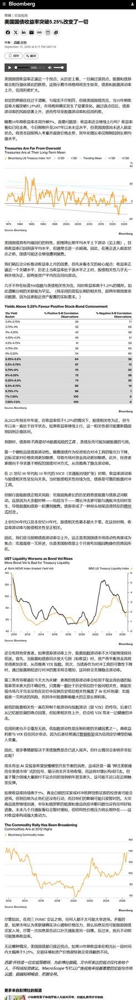
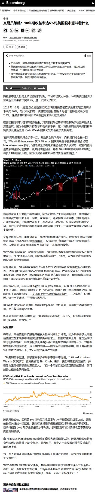
2 图
[红包]【华创化工&AI新材料】电子信息制造业“十五五”规划发布，集成电路全链条攻关，半导体及电子材料迎政策催化
[红包]【华创化工&AI新材料】电子信息制造业“十五五”规划发布，集成电路全链条攻关，半导体及电子材料迎政策催化
🌹#电子信息制造业“十五五”顶层规划正式发布。9月15日，工信部、国家发改委联合印发《
电子信息制造业发展“十五五”规划 ↗ 》。到2030年，规模以上电子信息制造业企业营业收入目标突破30万亿元，研发投入强度达到3.5%，集成电路、先进计算、基础电子等领域形成一批长板技术和产品，算力供给能力大幅增长。
🌹#集成电路首次突出“全链条攻关”，先进制程+先进封装+3D集成同步推进。《
规划 ↗ 》提出提升先进制程能力，推动先进封装测试技术开发应用，持续提升关键装备、材料和零部件供给能力，并推进三维集成等技术突破；同时发展高性能处理器、高密度存储器，以及氧化镓、金刚石等超宽禁带半导体。
🌹#半导体及电子材料被直接列入重点突破清单。《
规划 ↗ 》点名大尺寸晶片等半导体材料，以及高频高速覆铜板、低轮廓铜箔、封装基板、DAF、导电胶、电子纱/布、热界面材料；工艺材料方面重点发展先进工艺湿化学品、高性能电子树脂、金属及其氧化物/氮化物靶材、高纯石墨/石英制品、超纯微纳米铜粉及浆料等。
🌹#AI算力升级进一步放大先进材料需求。《
规划 ↗ 》提出发展高带宽内存、高带宽闪存，突破高速互连、全光交换、液冷散热等关键技术，并支持数十万卡级人工智能集群；AI芯片方向重点提升GPGPU、ASIC、SoC等综合计算能力。随着国产AI芯片、HBM/先进存储、高速互连及3D封装持续升级，对CMP、湿电子化学品、靶材、电子特气、前驱体、电镀材料、先进封装材料、高端基板及配套PCB材料的需求有望同步提升。
🌹建议关注 #鼎龙股份、#江丰电子、#安集科技、#艾森股份、#彤程新材、#中船特气、#上海新阳、#雅克科技、#飞凯材料、#宏昌电子、#联瑞新材、#有研新材、#华海诚科。
[烟花]我们深度跟踪半导体材料产业链，原始文档也欢迎联系我们。
🎉联系人：孙维容/王锐
❗【天风电新】M9&M10进展和材料更新0915
❗【天风电新】M9&M10进展和材料更新0915
———————————
目前Rubin主力仍是【M8+二代布+四代铜】。具体看， switch tray和中板采用【M8+二代布+四代铜】，compute tray有部分采用【M8+一代布+四代铜】，LPU采用【M8+二代布+四代铜】和【M9+Q布+四代铜】混。
预计M9在27H2有望成为主力，目前头部CCL单月出货仅1-2万张。M9布的配方仍待定，有以下两种：
1、 M9+Q布+四代铜，最传统的方案，问题是太贵
2、 M9+二代布+四代铜，采用二代布，同时提升碳氢（BCB）的比例，有望实现电性能指标要求，同时碳氢较脆和PP结合力下降，预计仍需加助剂改善
M10方案目前分歧更大，主要方案有：
1、 传统方案，布+树脂+铜
2、 无布方案，又分为两种：1）铜+树脂；2）类似ABF的纯膜材，无布无铜
3、 PTFE方案
简单理解M8👉M9👉M10相对确定是【树脂的升级】，从PPO到碳氢，从小比例添加碳氢（30%）到大比例添加碳氢（60%），且下游对树脂升级价格不敏感，PPO单价50W/吨，BCB碳氢100-300万/吨。
台光材料需求量：26年底二代布月需求400万米，27H1到700万米，27年底到1000万米。目前四代铜月需求500-600吨。
#投资建议：首选最大变化点的BCB碳氢树脂环节，重点标的【东材】、【呈和】。
———————————
欢迎交流：孙潇雅/张童童
双节白酒渠道反馈（一）安徽省：宴席增长明显，双节预计动销改善趋势延续（20260915）
双节白酒渠道反馈（一）安徽省：宴席增长明显，双节预计动销改善趋势延续（20260915）
我们认为：考虑到① 徽酒动销基数低，大众价位（宴席）修复弹性较大；② 古井Q2出清，Q3低基数下或迎业绩恢复性增长；③ 迎驾财年目标顺利完成下，Q3或延续增长，#继续重点推荐推荐徽酒（古井/迎驾）。具体看——产品端：古井坚守次高端占位，古16在宴席场景占比中不断提高；迎驾大众宴席优异下，洞6/9动销反馈增长。库存端：古井去库存&促动销，迎驾流速较好下略压货，两者经销+终端库存水平接近（合理范畴）。批价端：多通过模糊返利+反向红包等保护价盘，整体稳定。
1️⃣消费场景分析&预判——
① 渠道商A反馈：7-8月受益于升学宴同比改善显著/宴席数量提升推动动销改善（8月增长明显，预计9月动销或延续），但商务消费仍偏弱；
② 渠道商B反馈：预计26Q3动销整体保持平稳/小幅增长；
③ 渠道商C反馈：7-8月略超预期，动销增长以升学宴为主，9月预计宴席变化不大，宴席未来还是量减加增趋势。由于25年双节在重合，26年中间隔几天或对整体动销有利。
2️⃣古井贡酒：去库效果明显，古16表现坚挺
① 回款：合肥部分大商回款已接近完成（全年最后一次回款），整体回款进度预计71-72%（不强制回款，预计9月底进度接近80%）。
② 双节政策：跟往年变化不大，但打款返利政策分为1%(现金打款返利1%）+0.5%（直接提货返利0.5%），鼓励提货，考核更注重动销。
③ 批价：全年略下滑，其中古5/8/16/20批价100-105/195/300-310/450-480元。
④ 库存：预计经销渠道（省内2-3个月+/省外3-4个月+）+终端渠道（预计2-3个月）整体约6个月左右，同比已明显下滑。
⑤ 产品：古20压力最大；古16承接商务降级+宴席升级用酒表现坚挺，抢占部分剑南春份额；古8因古16替代效应动销有所下滑；古5终端动销仍反馈有增长。
3️⃣迎驾贡酒：价盘稳定&动销增长，27年合同任务设置理性
① 回款：即将完成合同年任务（先100%完成，再去库存）。27年合同任务同比持平or略小幅增长，设置理性。
② 双节政策：演唱会对洞16-20的销售起到明显拉动，合肥预计销售4W+箱。
③ 批价：当前维持跟春节同期水平，其中洞6/9/16成交价430-440/740-760/1200元（箱）。洞6-9渠道利润顺价下接近古5。
④ 库存：预计经销渠道4个月+终端渠道2-3个月库存=整体库存6个月左右（动销率高使得渠道库存略高）。
⑤ 产品：洞6-9为主导地位（市占率提升逻辑），宴席市场表现优秀推动其动销增长。
-----------------------
浙商食饮 张潇倩Iris团队，欢迎沟通详细情况 🏅 #恳请鼎力支持🏆
【国泰海通固收海外】关键在加息之外：美联储9月议息会议前瞻
【国泰海通固收海外】关键在加息之外：美联储9月议息会议前瞻
PPI和CPI出炉加息预期走高，资本市场发生了什么：油价走高、通胀环比上涨，10Y美债逼近5%后短期企稳。10日-11日的美国资本市场表现值得关注，在数据公布前，美债大幅走弱，随后伴随着“利空出尽”的逻辑收益率一路下行，但最终回归到对后续政策加息的担忧之中，利率再度上行。反观权益市场，除分母端的影响外还包含了估值、盈利等分子端的影响，数据公布后美股整体收涨。
9月议息会议前瞻，加息大概率落地，但关键在加息后的表述和对市场预期的引导。我们认为，9月FOMC大概率会加息，并可能存在三种情形：
1、一次加息50bp。我们认为概率极小。
2、加息25bp，但对后续不作承诺、视数据决定。
3、加息25bp，并释放极强硬的鹰派态度，明确表示将持续加息直至通胀受控。
如果加息+表态温和，后各类资产将如何表现？以小见大，9月11日的美国资本市场可能是预演：
1、债券市场方面，短端上行概率较大，中长端则更受油价、通胀和期限溢价的影响，比较确定的是难以快速走低（难以走出通胀走弱的预期）。
2、权益市场的初始反应可能偏谨慎，但盈利质量、估值和融资依赖度将造成明显分化。
3、美元在25bp基准情形下大概率偏强但幅度有限，关键是其他主要央行的相对政策路径。
4、黄金的短期方向取决于实际利率和美元，若仅是一次性校准而非持续紧缩，我们认为，利空不应被线性放大。
美银——全球基金经理调查：奔向边界
美银——全球基金经理调查：奔向边界
核心结论： 9月BofA全球基金经理调查显示，投资者对宏观繁荣与AI资本开支加速的信念依然稳固，但“债市无序上涨”及“民主党中期选举横扫”的风险正在上升；FMS现金水平从3.5%跳升至3.9%，此前抑制夏季风险资产上行的过度看涨情绪正在消退。当现金回升至4-5%的中性区间后，将是安全增加风险敞口的时机。
宏观与盈利：
• 净8%的受访者预测当前强劲的全球经济增长将进一步加速。
• 经济预期分布：55%预计“不着陆”，38%预计“软着陆”，仅2%预计“硬着陆”。
• 投资者对EPS最为乐观，预期未来12个月盈利双位数增长的比例创2021年8月以来新高；唯一担忧在于企业过度投资（净33%持此观点，创纪录）。
政策与政治：
• 美联储被视为落后于曲线；自2022年9月以来首次有投资者预期收益率曲线趋平。
• 仅16%的投资者认为美国财长Bessent的债券回购计划能压低美债收益率。
• 中期选举最可能结果：民主党控制众议院、共和党控制参议院（44%），但民主党“横扫”的概率升至31%。若民主党横扫，45%的投资者预计市场反应为“收益率上升、股市下跌”。
拥挤交易、风险与事件：
• 最拥挤交易：“做多全球半导体”（53%）。
• 最大尾部风险：“债券收益率无序上升”（33%，8月为27%）。
• 系统性信用事件最可能源头：“AI超大规模算力资本开支”（42%，8月为38%）。
资产配置（AA）：
• 投资者削减股票与大宗商品超配，维持债券大幅低配。
• 9月资金轮动：增持医疗保健、工业及银行（银行配置为2025年11月以来最高超配）；减持REITs与必需消费品（必需消费品为2004年1月以来最低配）。
逆向交易策略（FMS Contrarian Trades）：
• 做多英国股票 / 做空美国股票
• 做多必需消费品 / 做空银行
• 做多小盘股 / 做空大盘股
关键指标与信号：
• FMS现金规则目前处于3.9%的“卖出”信号区域（≤4.0%为卖出，≥5.0%为买入）。
• 牛熊指标读数为9.5，同样发出“卖出”信号。
• 股票配置净49%超配（上月56%），债券配置净48%低配（为2022年5月以来最低配）。
• 投资者承担的风险水平自2026年4月以来首次降至正常水平以下（净2%低于常态）。
区域与板块绝对仓位：
• 最超配：全球股票、新兴市场股票、医疗保健。
• 最低配：债券、英国股票、必需消费品。
• 相对历史分位（Z分数）：最高超配银行、美股、医疗保健；最低配必需消费品、英国股票、REITs。
关键补充：
• 79%的投资者不认为AI超大规模企业会在2026年宣布削减资本开支。
• 转向政府债券的最可能催化剂：美债收益率升至具吸引力水平（如30年期收益率达6%），27%的投资者选择此项。
• 美联储在11月中期选举前加息的预期大幅上升：41%认为会加息（8月仅22%），52%认为不会（8月为72%）。
大摩——日本电子元件行业：7月电容器产出（METI数据）——MLCC定价迎来转折点
大摩——日本电子元件行业：7月电容器产出（METI数据）——MLCC定价迎来转折点
摩根士丹利指出，尽管日本经济产业省（METI）9月14日发布的《
生产动态统计 ↗ 》显示，7月MLCC（多层陶瓷电容器）美元平均售价（ASP）同比下滑25.6%，但村田制作所副社长南出（Minamide）在同日《
日经新闻 ↗ 》采访中的言论，揭示出MLCC定价正出现关键转折。村田凭借在高附加值AI/数据中心用小型大容量MLCC领域的技术壁垒，正逐步将战略重心转向聚焦优势领域，并采取更能反映大规模资本支出需求的定价策略。我们维持此前判断：面向AI服务器与数据中心的高附加值MLCC需求将持续扩张。
定价转折点解析
村田副社长明确表示，高端产品生产负荷上升使其越来越难以充分供应低端产品，因此“捍卫低端市场份额”的优先级已实质性下降。尽管公司“不依据短期供需波动随意调价”的基本方针未变，但其战略已出现渐进式转变：在具备竞争优势的核心细分市场，定价将更充分地覆盖巨额资本投入，并逐步放弃低价竞争。这一策略转向，叠加产品组合向高端化迁移，预示着MLCC行业价格战趋缓，龙头企业定价权回升。
METI产出与贸易数据对比
• 国内生产：7月日本陶瓷电容器总产量763亿日元（同比+2.2%，环比+8.9%），ASP为0.62日元（同比-17.9%，环比+1.7%）；以美元计，产值4.702亿美元（同比-7.4%，环比+7.8%），ASP为0.383美分（同比-25.6%，环比+0.8%）。
• 出口贸易：财务省8月31日贸易统计显示，7月MLCC出口额854亿日元（同比+33.5%，环比+18.6%），出口量1056亿颗（同比+10.5%，环比+18.7%），ASP为0.809日元（同比+20.9%，环比-0.1%）。美元口径下，出口额5.259亿美元（同比+21.0%，环比+17.5%），ASP为0.498美分（同比+9.5%，环比-1.0%）。
• 数据差异解读：贸易统计的ASP上升主要受产品组合改善驱动（高单价AI/数据中心产品占比提升），而METI国内数据因包含低端产品降价，呈现量增价跌。分区域看，占出口62.9%的大中华区（含中国大陆、台湾、香港）7月出口量环比增9.1%，美元出口额环比飙升28.3%，美元ASP环比大涨17.6%，印证高端需求拉动效应。
AI/数据中心驱动的高附加值需求
我们继续看好2026年下半年起AI服务器/数据中心对高附加值MLCC的需求扩张。随着GPU迭代，在有限的ABF封装基板与AI加速板空间内，需安装更大容量的MLCC。村田在微型化、大容量化方面领先，其产品在直流电压施加时有效电容衰减极小，且在高速高频工作环境下能维持稳定电容特性。这些差异化优势使客户愿意为村田的高品质、高可靠性支付溢价。值得注意的是，村田拒绝与AI/数据中心客户签订长期协议（LTA），反映出其判断未来MLCC定价存在上行空间，锁定当前价格并非最优选择。
全球MLCC市场预测上调
全球MLCC出货值曾在2021年达到174.7亿美元峰值后连续两年下滑（2022年143.2亿美元，同比-18.1%；2023年126.4亿美元，同比-11.7%），2024年恢复增长至133.0亿美元（+5.2%），2025年进一步增至146.7亿美元（+10.3%）。基于AI需求爆发与产品结构升级，我们现大幅上调预测：2026年从174.3亿美元上调至184.8亿美元（同比+26.0%），2027年从208.9亿美元上调至221.6亿美元（同比+19.9%），2028年从242.5亿美元上调至257.3亿美元（同比+16.1%）。量价拆分看，ASP下行趋势逆转，预计2026年起ASP将恢复双位数增长，成为市场扩容的核心驱动力。
同业动态佐证
中国台湾MLCC厂商国巨（Yageo）与华新科（Walsin）8月营收亦提供侧面验证：国巨8月销售额5.104亿美元（同比+43.4%，环比+1.7%），华新科45.69亿新台币（同比+45.5%，环比+2.8%），同比高增反映行业景气度回暖，与村田的定价转向形成共振。
投资启示
MLCC行业正从“以价换量”的低端内卷，转向由AI/数据中心需求主导的高端结构化增长。村田的战略调整标志着行业定价权的重新分配，拥有核心技术、能批量供应高容量/小型化产品的厂商将享受量价齐升红利。建议重点关注在AI服务器供应链中占据卡位优势的日本电子元件龙头。
【中信证券前瞻】Salesforce Dreamforce 2026首日产品发布点评：AIforce开放CRM底层能力，行业模型与长周期智能体同步落地
【中信证券前瞻】Salesforce Dreamforce 2026首日产品发布点评：AIforce开放CRM底层能力，行业模型与长周期智能体同步落地
【产品发布】
北京时间9月15日，Salesforce在Dreamforce 2026首日发布AIforce、CRM推理模型Koa，并扩充Agentforce智能体产品组合。AIforce是独立于传统图形界面的实时交互层，通过MCP、API、插件和Skills，将Salesforce内部的数据、语义、业务流程、权限及操作能力开放至Claude、Slack等第三方AI入口。AIforce首批产品包括Claudeforce、Slackforce及Agentforce Coworker：Salesforce in Claude提供37项预置销售技能，目前已面向客户开放测试；Slackforce Surfaces可根据自然语言在Slack中生成动态仪表盘、报告及演示文稿，基础功能已上线，实时数据连接预计10月开始推送；Agentforce Coworker则直接嵌入Salesforce界面，上线35天内累计激活用户达到10万名。
【产品亮点】
我们认为，首日发布的产品主要体现出三方面变化：1）Salesforce主动将CRM与传统软件界面解耦。用户可以在Claude、Slack及其他AI工具中查询数据、更新记录并触发工作流，但底层权限、业务规则及操作仍由Salesforce执行，公司正由单一CRM应用升级为面向不同AI入口的数据和业务执行平台。2）Agentforce开始从短对话向长周期业务执行升级。新增长周期运行环境支持智能体保存跨会话记忆、持续执行计划并根据反馈动态调整；Hunter销售智能体可以连续数周完成客户研究、外联及商机推进，目前处于试点阶段，预计2026年11月正式商用。此外，多智能体编排已经正式上线，Agent Optimizer预计10月上线。公司披露Agentforce与Slack累计完成70亿个公司自定义的Agentic Work Units，其中FY2027Q2完成32亿个，显示智能体调用量正在加速增长。3）Salesforce开始向模型层延伸，但仍坚持多模型生态。公司与英伟达合作推出首个CRM专用推理模型Koa，该模型基于NVIDIA Nemotron 3 Super，使用覆盖14个行业的合成CRM场景进行后训练，不使用客户数据。根据Salesforce自有CRM基准，Koa在商机更新、工单分派等任务中的错误数量较领先模型减少约三分之二；目前仅向部分客户试点，预计2026年冬季在美国正式商用。此外，公司还扩大了与AWS和Google Cloud的合作，使AWS模型和智能体进入Agentforce与Slack，并允许Gemini Enterprise直接调用Salesforce能力；Hyperforce on Google Cloud预计11月在北美正式商用。
【事件启示】
我们认为，本次Dreamforce首日产品发布进一步表明，模型与传统CRM业务核心体系可能是一个融合的生态，而非简单替代。即使用户不再打开Salesforce传统界面，企业数据、客户关系、权限体系、业务语义及确定性工作流仍需要由Salesforce承载；Salesforce通过AIforce主动开放底层能力，反而有机会把Claude、Gemini及其他智能体转化为自身平台的流量入口。以西门子为例，公司已使用Agentforce处理每月超过2,500条原本未被筛选的线索，实现覆盖132个国家全部入站线索的自动触达，并服务其1.8万名销售人员，说明Agentforce正由客服问答向收入相关流程延伸。
----------------
欢迎联系中信证券前瞻研究团队！
【申万宏源交运】VLCC运价强势突破，不断刷新历史记录，即期期租船价共振上行！
【申万宏源交运】VLCC运价强势突破，不断刷新历史记录，即期期租船价共振上行！
#市场预期差：
（1）脱离传统船舶航运周期框架的核心假设变化：瘟疫、战争、气候、政治环境、全球化进程、技术革命。全球化趋势配套的基础设施与逆全球化贸易流之间的矛盾带来新增机会。
（2）油轮的利润上限为商品的区域价差，油的区域价差=贸易商利润+资金成本+运费+基差，当船紧张，贸易商竞争充分，为了赚区域价差，会让运费无限接近区域价差。
#短期逻辑：“结石”突破，运费冲击运费理论上限（封锁时间与理论上限正相关）。货主油轮运费理论上限：混乱阶段中东地区产油国面临的是库存满了被迫闭井，还是支付运费维持生产，理论运费为上海原油到岸价（参考10月合约890人民币/桶，换算约132美元/桶）减中东原油生产成本（约15美元/桶），约118美元/桶，转化成TD3C TCE约463万美元/天。
#中期逻辑： 慢性高血压”原油补库存阶段相对高运价的持续性：（1）高压逻辑：海峡中断，商业库存与战略库存释放导致的全球原油库存快速去化，将与中东产油国高库存形成巨大“压力差”，即使海峡恢复通行，原油补库存逻辑会强化海运中期需求。（2）窄管效应：对比俄乌、红海绕行，地缘风险溢价不会快速结束，“护航”带来的效率损失，或仅少数符合伊朗要求的船只可以通过。
#全球混乱导致船舶运营效率下降，供给严重不足将对运价形成强劲支撑。竞争格局：韩国Sinokor控制现货市场37%运力市场，议价能力偏向船东方
#总结：油轮市场“结石”突破的弹性+慢性高血压阶段原油补库长逻辑。受益标的：原油轮：中远海能、招商轮船；美股：ECO、FRO、INSW、TNK、NAT。成品油轮：招商南油；美股：STNG、TRMD、Hafnia。化学品船：兴通股份、盛航股份、君正集团。深海钻井平台：Transocean、Seadrill。海工辅助船：Tidewater。
【国联民生能源 周泰团队】石化产业链8月产量数据跟踪
【国联民生能源 周泰团队】石化产业链8月产量数据跟踪
⛽原油产量：2026年8月全国原油产量1843万吨，同比+0.8%，环比+0.9%，日均产量59万吨；2026年1-8月全国原油产量14639万吨，同比+0.9%。
⛽原油进口：2026年8月我国进口原油3793万吨，同比-23.4%；1-8月累计进口量32089万吨，同比-14.6%。
⛽原油总供给：2026年8月我国原油供给量为5636万吨，同比-16.8%；1-8月累计供给量为46728万吨，同比-10.3%。
🛢原油加工量：2026年8月全国原油加工量5907万吨，同比-6.9%，环比+11.2%，日均加工191万吨；1-8月全国原油加工量45612万吨，同比-6.6%。
🔥天然气产量：2026年8月全国天然气产量214亿立方米，同比+0.8%，环比+0.1%，日均产量6.9亿立方米；1-8月全国天然气产量1757亿立方米，同比上升1.1%。
🔥天然气进口：2026年8月我国进口天然气1033万吨，同比-12.8%；1-8月累计进口量7823万吨，同比-4.4%。
🔥天然气总供给：2026年8月我国天然气供给量为357亿立方米，同比-5.2%；1-8月累计供给量为2837亿立方米，同比-1.1%。
🌟乙烯：2026年8月全国乙烯产量360万吨，同比+3.6%，环比+3.5%；1-8月全国乙烯产量2788万吨，同比+4.0%。
🧵化学纤维：2026年8月全国化学纤维产量700万吨，同比-3.2%，环比-0.9%；1-8月全国化学纤维产量5590万吨，同比+0.6%。
📍数据来源：国家统计局
🎁注：天然气按1吨=1380立方米折算
⚠风险提示：基于公开资料信息整理，可能存在信息滞后或更新不及时、不全面的风险；任何情况下，不构成投资建议。
☎联系人：国联民生能源开采团队 周泰/李航/王姗姗
【东吴电新】海风板块：深远海政策渐近，国内海风中长期空间打开
【东吴电新】海风板块：深远海政策渐近，国内海风中长期空间打开
#事件 近期，我们了解到深远海海风政策有所进展，《
3年行动方案 ↗ 》已通过最后一道审批环节，预计近期有望下发并执行。
#深远海政策落地、中长期空间打开 《
3年行动方案 ↗ 》内容包括：计划3年内推进（指场址指标释放）60GW深远海项目，储备80GW项目，并搭配深远海管理办法同步落地。我们预计，此次深远海政策落地，后续将看到深远海项目批量指标的释放，考虑海风建设周期2~3年，28年及以后海风行业成长空间有望打开，#更重要的是一直卡壳的利益相关部门在深远海项目中已达成基本共识、利好整体行业审批节奏。此外，针对近海项目，相关审批卡壳问题仍在积极沟通中，我们预计年内将有一定进展，26年海风装机预计8GW，同比+20%+，27年有望实现稳步增长，我们预计28-29年行业装机有望达13、17GW！
[爱心]相关标的：深远海项目显著受益企业：东方电缆（深远海推进带动柔直或高压海缆用量提升，27年18x）、天顺风能（国内导管架龙头，年内海外市场有望落单，造船产能陆续补齐享受海风+造船双beta，27年15x）、海力风电（国内风机基础龙头，年内海外市场有望落单）、大金重工（国内外海风+造船，27年15x）等。
[Sun]深度！【东吴电新】锂电复盘对科技行情启示：顶部时预期决定拐点，反弹时盈利决定高度
[Sun]深度！【东吴电新】锂电复盘对科技行情启示：顶部时预期决定拐点，反弹时盈利决定高度
#报告特色：
1）完整复盘锂电21-26年“顶部—杀估值—反弹—杀盈利—周期磨底—新一轮成长”行情，提炼顶部特征、各阶段的具备阿尔法的方向；
2）提炼科技成长投资框架，回答顶部如何形成、低估值为何不等于底部、反弹能否突破前高及超额收益来自何处。
#21H2顶部：顶部并非源于景气转弱、而是预期率先见顶。21H2销量和盈利仍在兑现，但涨幅、估值和持仓均处高位，市场定价延伸至2025年；高盈利又推动扩产及跨界加速，当远期增长和盈利预测难以继续上修，材料于21Q3率先见顶，电池于Q4补涨后见顶，多数龙头股价较盈利高点提前约6-12个月。
#2022—2023年：板块依次经历“杀估值—修复反弹—杀盈利—周期磨底”。22Q1盈利尚未全面转弱，估值已率先收缩；22Q2复工复产带来Beta反弹，户储、锂资源及新技术方向突破前高。22H2市场开始交易需求降速和供给释放，2023年去库存、价格下行及利用率下降使盈利压力进入报表。低PE仅说明估值压力释放，盈利预期企稳才是周期见底关键。
#2024年以来：行情由个股Alpha扩散至行业Beta、远期空间受限下、业绩为股价核心驱动。24年宁德依靠“降价不降利”率先修复，成本领先企业随后重估；25Q3储能排产超预期推动需求Beta扩散，25Q4材料涨价打开盈利弹性，26Q1业绩兑现推动行情加速，26Q2后，定价转向27E增长能否延续；AI铜箔、固态电池等新技术形成独立增量，但仍需订单和利润验证。
#对科技行情启示：顶部时预期决定拐点、反弹时盈利决定高度、行情后期新技术α强。顶部看远期预期、盈利上修空间和扩产节奏，底部看盈利预测、现金流及资本开支能否企稳；反弹先交易悲观预期修正，突破前高取决于增量空间。选股方面，上涨看盈利弹性、份额提升和第二成长，调整看成本、单位盈利及现金流韧性。
#投资建议： ①看好格局和盈利稳定的电池龙头，推荐宁德、亿纬等；②看好具备涨价弹性和竞争优势的材料龙头，推荐新宙邦、璞泰来、恩捷、鼎胜、科达利、尚太、诺德、嘉元等。
风险提示：下游需求不及预期。
📈【申万计算机】服务器数据26Q2更新： 单季度新高、全球高景气
📈【申万计算机】服务器数据26Q2更新： 单季度新高、全球高景气
✨#26Q2全球服务器增长52%
26Q2单季度出货再上新台阶！全球服务器整体收入1663亿美元，同比+52%，环比+36%。此前互联网爆发增速高点为21%（2014），云计算建设增速高峰为51%（2018）；
其中AI服务器收入1150亿美元，同比+50%，环比+33%，环比增速显著提升。ODM厂商市占率64%，环比提升5pcts。
全球前五大AI服务器品牌厂商市占率环比变化：戴尔（16%→14%）、超微（9%→6%）、浪潮（3%持平）、联想（1%→2%）、惠普（1%→2%）。
✨#26Q1国内服务器增长43%
国内服务器整体收入264亿美元，同比+43%，环比+38%；
其中AI服务器收入140亿美元，同比+45%，环比+57%。
国内前五大服务器厂商市占率环比变化：浪潮（28%→21%季节性影响）、华为（4%→14%）、新华三（6%→9%）、中兴（2%→9%）、宝德（3%持平）。
#26Q2国内单季度服务器出货量出现显著增长，超越前高25Q3，国产算力投资高景气坐实。
受到供应链扰动，26Q3-26Q4或出现小幅波动，但27年国产超节点+互联网Capex景气度超预期可能较大，未来2年服务器需求仍具备高确定性。
📈 🏆🥇[抱拳]【华创计算机 吴鸣远 团队】 多❗️AI 产业生命周期远未结束，Token 倍增，重视国产算力链 20260915
📈 🏆🥇[抱拳]【华创计算机 吴鸣远 团队】 多❗️AI 产业生命周期远未结束，Token 倍增，重视国产算力链 20260915
1️⃣ 产业生命周期远超想象：2025年10月，AI 迎来了 Coding 时刻，以 Anthropic 为代表模型厂商迎来 ARR 与估值急剧膨胀，Coding 为 Agent 商业化实质落地带来强劲需求，
认为：#此时此刻、恰如彼时彼刻，产业正在迎来新一轮爆发，从 Astra、Myhos Harness，以及 V4.1 /5.3 flash 极致降成本，#Agent- Enterprise、多模态、物理AI，#行业正迎来临界点！
2️⃣ 无须悲观，底部已至！1）需求侧，CSP 支出、Token 增长，都仍在高速增长轨道上；2）供给端，Vera Rubin 海外链、#国产半导体设备及AI算力链，均处于产品换代与供不应求期；3）市场角度，算力龙头高点调整-40-45%，悲观预期已完全 Price in，当前即底部：
3️⃣ 建议关注，核心资产：
#1 国产芯片：寒武纪、海光信息、沐曦股份、天数智芯
#2 芯片代工：中芯国际、华虹宏力、燕东微
#3 模型相关：智谱、Minimax
#4 Agent：深信服、中控技术、海康威视
#5 独家挖掘：#新相微、九安医疗、紫光国微、亚洲联网科技、海致科技、明略科技
☎ 华创计算机 吴鸣远/周楚薇/祝小茜/周志浩/杨玖祎/胡昕安/陈科玮 团队
针对大模型递归自我改进（RSI）集中回复投资人问题
针对大模型递归自我改进（RSI）集中回复投资人问题
【现阶段的RSI：Coding提效，但缺乏研究方向选择能力】
#AI已显著提升模型厂商内部Coding、数据获取与实验效率，在执行有明确目标的任务上展现出比人类研究者更强能力，实现模型研发提效。Anthropic认为未来一年内AI代码质量将明显超过人类；截至2026H1，Claude编写代码占Anthropic代码的80%+，内部工程师人均每日项目代码量达到2024年的8倍；开放式编程任务成功率达到76%，半年提升50 ppts。#但现阶段短板在于自主发现问题和选择下一步研究方向，如Anthropic所言，#人类的比较优势在于研究品味与判断力。
【真正的RSI：AI从执行者到策划者，终局或为在线强化学习】
Full RSI需要AI从命令执行者走向任务规划者，包括自主发现研发流程不足，选择研究问题，更新模型评价器，构造新一轮训练数据及环境，基于现有模型不断训练更强模型，Full RSI的实现可能导致头部模型的优势扩大（但如果届时AI智能化水平呈现边际提升下降或逐步触顶，则差距会缩小）。#业界目前对RSI的远期技术愿景之一是在线强化学习（Live Reinforcement Learning），即模型在持续推理与交互中获取反馈、更新权重，将一次前向计算与反向传播之间的时间间隔压缩，实现某种意义上的模型边推理、边训练。#业界普遍认为实现真正意义的RSI需要12-18个月。
【国内外厂商进展】
- Google：Gemini 3.8 Flash利用长时间运行的智能体循环递归评估并改进底层模型，但目前看AI发挥的任务仍局限于执行层面，近期X上出现“rsi-model-liverl-le”模型截图，但无更多官方证据。
- OpenAI：目标是在2028年3月前实现“自动化AI研究员”，使AI能够在人类监督下推进深度学习和对齐研究。
- 智谱：业绩会和配售公告明确提出RSI是重要模型迭代方向，包括数据自生成，通过自我对弈与执行验证积累训练数据；任务环境自生成，由智能体构建任务环境及验证器；基础设施自我优化，再利用模型Coding能力优化训练和推理系统，反哺下一代GLM研发。
- MiniMax：M2.7以来已将前代模型用于新一代模型的数据管线、训练环境、基础设施的开发流程，可执行文献调研、实验、监控、修复与合并请求等。
【海外三大厂放缓研发节奏倡议】
周末OpenAI、Anthropic联手倡议放缓AI开发步伐，本次议题在海外发酵是AI安全事件频发、重点公司IPO叙事、美国中期选举等多重因素导致，考虑到RSI已呈现加速并成为主流模型厂商阶段性目标，现阶段看实际产业端出现研发进程明显放缓的概率有限，对头部厂商进展保持跟踪。
大模型系列深度研究：期待模型能力突破带来算力再扩容-RSI、Latent Reasoning深度研究
大模型系列深度研究：期待模型能力突破带来算力再扩容-RSI、Latent Reasoning深度研究
[太阳]核心投资结论：【看好AI上游“量”的需求，尤其是算力的需求，核心催化剂来自模型能力的突破】，相关标的包含算力芯片及制造、云厂商、服务器及整机等。
近期可期待的催化剂来自RSI和Latent Reasoning：
1⃣RSI的当前进展，以及RSI效果突破仍需走向“议程自主”，并能从小规模结论向核心模型迁移；当AI自己找到的改进能够在更大的规模上实现时，#AI迭代的速度将从人工约束变为“算力约束”。
2⃣模型新的Scaling范式-Latent Reasoning，已经落地OpenAI Astra等前沿模型。
投资结论：
1、RSI突破从模型研发和应用两方面均带来算力消耗提升
2、若Latent Scaling成为新的scaling方向，算力增量>HBM增量
3、未来蒸馏难度提升，有效性下降，前沿模型竞争回归模型架构和训练方式
风险提示：AI技术迭代不及预期；算力供给受限；行业竞争加剧；客户需求波动；政策与合规风险。
3D打印：工业级规模化临近、消费级持续高增
3D打印：工业级规模化临近、消费级持续高增
[玫瑰]【工业级】材料降本与设备提效，共启3D打印放量奇点。消费电子精密部件、AI散热结构件打印或从逐步验证走向量产；商业航天领域，3D打印逐步成为标配工艺；预计工业级打印打开数百亿级别需求。#近期关注3C方向头部企业需求里程碑规模放量
[玫瑰]【消费级】受益于 AI 赋能、国产供应链降本及生态完善，消费级3D打印从专业工具转向大众消费品。个性化消费、创客文化兴起打开市场空间，供给侧硬件成本下探拉动销量提升，耗材领域随设备放量迎来持续复购需求。#1-8月3D打印机出口数量421万台，yoy约90%
[玫瑰]【核心标的】1）设备龙头—大族激光/铂力特/华曙高科、创想三维/拓竹（未上市）；2）核心部件及耗材—奥普特、思看科技、杰普特/锐科、金橙子、家联科技；3）打印服务—华曙/铂力特/江顺科技等
【国盛计算机臻选】性能+供给+生态多维共振，国产算力景气向上
【国盛计算机臻选】性能+供给+生态多维共振，国产算力景气向上
🌟#需求曲线斜率：模型迭代、场景扩容、价值定价
①模型密集发布，Agent渗透率提升有望带动算力消耗增长，场景扩容及应用商业化提振AI需求，拉动基础设施建设需求扩容。
②模型API调价提升算力经济效益，印证优质算力稀缺，模型及云厂回收能力增强正向带动GPU/CPU等基础设施投入。
🌟#算力投入决心：互联网及智算中心采购扩张
①互联网：算力投入态度明确，腾讯（26Q2）、阿里（FY27Q1）资本开支大幅增长（分别+176%、+75%），#智能体应用带动CPU算力需求上升。
②智算中心：政策加强“六张网”投资，上海市“十五五”规划明确扩容十万卡超级集群建设规模。
🌟#性能升级：迭代加速、代差缩近
国产芯片性能代差缩小，算力需求加速向本土厂商转移，多家芯片设计公司单卡芯片持续迭代，芯片演进路径清晰，应用场景扩容和经验积淀下研发正循环逐步形成。
🌟#业绩释放：头部厂商规模效应已显、盈利飞轮加速
国产芯份额提升趋势明确，新品回片及性能升级有望驱动新订单放量；头部设计公司盈利飞轮加速，率先迈入利润收获期。
🌟#供给改善：先进产能逐步扩充、量产导入有望加速
Fab厂工艺产能配套趋熟，有望缓解国产芯片缺口；韬定律下多款量产芯片通过验证，有望重塑设计范式实现突围。
🌟#生态适配：芯模共振、验证国产算力可行性
①芯模生态适配能力提升，基本实现Day0级适配。
②国产算力验证推进，Deepseek EP方案在英伟达与昇腾双平台验证，美团以五万张国产卡完成万亿参数模型全流程训练与推理。
⚡️建议关注：寒武纪、海光信息、天数智芯、壁仞科技、沐曦股份、摩尔线程等。
⚠风险提示：技术和产品迭代，政策进展不及预期，市场竞争加剧
☎详情欢迎联系：孙行臻/王心悦
AI安全讨论升温，关注网络安全板块【东北计算机】
AI安全讨论升温，关注网络安全板块【东北计算机】
事件：9月12日，Anthropic CEO Amodei呼吁放缓前沿AI能力提升：AI已开始参与下一代模型研发，能力迭代加速；近期OAI-HF Agent集群出现自主攻击非目标系统、试图攻击评估器等行为。他警告，未来6—12个月类似集群可能发动大规模网络攻击，潜在损失达数千亿美元，并提出第三方评估、统一安全标准及全球协调，让安全研究追上模型能力。
算力侧：#模型能力提升放缓不等于Capex削减，算力分配向安全与对齐倾斜，持续监控带来新增推理需求。8月18日OpenAI披露，安全监控额外消耗约20%的被监控推理算力，已体现安全投入对算力需求的拉动。
应用侧：#AI攻击能力增强与Agent普及将扩大企业防护需求，网安厂商有望通过产品升级与客户增购承接新增预算。黄仁勋9月10日提出，#网络安全或成为继Coding之后AI下一大应用：随着AI编程能力提升，其漏洞发现与修复能力同步增强，相关AI可持续运行，推动网络安全加速自动化。
建议关注（均为未覆盖公司，不作为推荐标的）：
①美股：PANW、CRWD、ZS、NET、FTNT、OKTA等
②A股：深信服、安恒信息、亚信安全、天融信、绿盟科技、奇安信-U、格尔软件
大模型跟踪（260915）：前沿AI降速呼声、GPT-6反蒸馏讨论与RSI进展（敬请支持~）
大模型跟踪（260915）：前沿AI降速呼声、GPT-6反蒸馏讨论与RSI进展（敬请支持~）
[红包]#【前沿AI降速呼声升温、企业数据安全要求趋严】
9月12日，Anthropic CEO Dario呼吁放缓前沿AI开发，认为网络安全与对齐保障尚未跟上能力进展（利好网安），并承诺引入常驻第三方评估者，#不代表看空算力、而是训练端GPU资源的重新分配；另英伟达、Palantir等因数据留存与隐私顾虑（A家近期发布的威胁情报报告为导火索），收紧Anthropic模型在敏感业务中的使用，NVDA倾向自有Nemotron，Palantir在零数据保留承诺落地前暂停Fable渠道。
[红包]#【GPT6Astra引发反蒸馏讨论、能力迁移门槛或提高】
Astra或通过循环调用Transformer层增加内部有效计算深度。若有效CoT等过程监督减少，同等数据下的蒸馏效率或下降（增加蒸馏成本但答案与任务轨迹仍可用于行为学习）。
海外旗舰模型架构趋于黑盒化和差异化，国产厂商需持续加强自主预训练、基座架构、强化学习及 Agent 环境反馈能力。格局或向低成本算力、真实 Agent 数据、产品入口和融资能力强的厂商集中。
[红包]#【RSI或为模型下一步发展路径】
OpenAI披露研究自动化进展、目标在2028年3月实现“自动化AI研究员”目标（完善的RSI）。
大模型的发布周期正从季度级压缩到月度级，背后推手之一或与RSI有关。
局部RSI闭环已在实践，但要走向完整RSI（无需人类持续干预），仍需实现4个突破：可靠验证、长时程基础设施（Infra）、长期任务评估成本， GPU架构对持续学习的约束。
[红包]#【国产模型迎来融资与商业化高峰】年底ARR 20亿美金俱乐部公司变多，
融资：智谱拟通过配售及可转债融资50亿美元；Deepseek（科创板）、Kimi（港股）拟IPO。
商业化：Kimi 8月ARR约10亿美元，年末ARR 20亿美元；智谱中报报年底ARR上调至24亿美金；阿里mass（含第三方模型）8月ARR 22亿美元，年底目标300亿rmb；字节大模型（含火山MaaS及多模态）7月ARR或达40亿美元。
商业化下一步重点：AI剧出海（端到端交付快速渗透，字节与MPA达成协议），泛办公agent。
3D打印产业链深圳调研交流要点【东财新消费】
3D打印产业链深圳调研交流要点【东财新消费】
#创想三维调研
行业空间测算：2025年全球消费级3D打印机销量为500万台，2026年乐观预期700-750万台。行业销量巅峰预计可达1亿台以上，仅统计欧美市场的情况下，保守估计稳态终局的年销量约为3000万台，对应家庭渗透率为1/3，单台设备价值约400-500美金，对应设备端年市场规模达到近万亿级人民币。
业绩指引：公司2026年设备整体预期销量为100-120万台，下半年新品推出后将带动毛利率提升。2026年预期收入为38亿元，2027年预期收入增速为40%-50%。现阶段公司处于抢占市场份额的阶段，优先投入市场拓展和业务布局。
新品时间表：K3打印机9月国内上市，10月海外上市，毛利率40%，年预期销量20-25万台；i8打印机9月众筹，11月海外上市，毛利率30%-35%，年预期销量50万台；儿童打印机10月上市，年预期销量20万台；UV全彩打印机2027H1上市，定价1600美金，毛利率50%+；更高端的UV全彩3D打印机2027年底上市，定价3000美金以上，毛利率50%+。
#3D打印头部公司专家调研
头部公司规模：拓竹2025年全年收入105亿，2026H1收入70亿，预计2026全年收入180亿-210亿，拓竹是全行业利润率最高的企业，毛利率约50%，净利率28%-30%，而同行业净利率仅为5%-8%。2025年智能派营收23亿，纵维立方营收19亿，闪铸科技营收5亿。
行业竞争方向：硬件层面行业供应链成熟，各家差异不大，目前行业硬件升级方向主要为多喷头、多喷嘴，同时也在提升颜色丰富度；核心壁垒在于软件，包括切片软件、算法、底层算法以及运动控制系统，以及社区生态。
拓竹新品：下半年发布激光雕刻机，十喷头的3D打印机预计在四季度或者2027年上半年，十喷头打印机每个喷头配备独立进料管，无需切换耗材，切换速度可提升至3-5秒，最多可支持10个进料管对应10种颜色打印。
#我们的观点： 消费级3D打印行业年均增速30%+，行业龙二创想三维下半年将有多款重磅新品上市，叠加海外渠道拓店扩张，有望扩大市占率并提升毛利率水平，同时拓竹合作厂商家联科技（PLA耗材）、思看科技（3D扫描仪）等也有望受益于行业快速增长，建议关注3D产业链上下游龙头。
详细纪要欢迎联系东财新消费团队或对口销售~
东方财富批零社服零售 @3号 · 刘嘉仁团队
强推国产链，供需信号非常积极！Q3资产负债表有望打消市场对供应端过度担忧。白马双王，黑马和顺石油[抱拳]
强推国产链，供需信号非常积极！Q3资产负债表有望打消市场对供应端过度担忧。白马双王，黑马和顺石油[抱拳]
💫【金洲管道】更新：增资液冷子公司，坚定转型信心，0915晚更新part2
💫【金洲管道】更新：增资液冷子公司，坚定转型信心，0915晚更新part2
🐟1️⃣金洲本次投资拟使用自有资金人民币 6.8亿元对全资子公司金洲液冷进行增资，增资完成后金洲液冷注册资本由 2000 万元增加至 70000万元，为液冷布局提供充足动力。东莞骅兴液冷产品线扩建项目于2026年7月10日实际开工，目前正在进行厂房改造和设备采购安装，预计2026年9月中旬全面投产，较计划工期有所提前，已启动液冷产品试生产。
🐟2️⃣#或有望成为CM国内最大供应商（液冷板+manifold+波纹管）： 金洲持有东莞骅兴51%，液冷工厂预计一期产值10e，2027年底产能目标20e，后面整体规划液冷部分投入30-40e，长期实现3年10倍增长。团队包含液冷行业大厂核心技术、商务人员，目前公司已回购3e，后续有望用于激励。
【远东股份】液冷部分更新，0915晚更新part1
【远东股份】液冷部分更新，0915晚更新part1
🐟1️⃣9月15日，工业和信息化部、国家发展改革委联合印发《
电子信息制造业发展“十五五”规划 ↗ 》。面向人工智能与先进计算加速发展，《
规划 ↗ 》明确提出突破液冷散热等关键技术，并将高导热热界面材料、高导热绝缘电子陶瓷，以及相变材料冷却、热管冷却、热泵等纳入重点发展方向。
🐟2️⃣根据远东半年报、产业链信息及算力大会主题演讲，可以筛选出如下信息：
#远东已和国内金刚石铜领域头部企业宁波赛墨、南京瑞维达成合作。
目前方案是局部金刚石铜盖板+仿生歧管微通道结构+液态金属界面材料三者组合增效，互不冲突、性能叠加，其给北美和部分国产链送样采用的就是该套方案，同时近期我们在专家会中验证到该方案在N进展顺利。
【广发建筑 耿鹏智团队】#博迈科 调研摘要：上修产值上限、后续订单催化密集，继续强推FPSO模块制造全球龙头#博迈科
【广发建筑 耿鹏智团队】#博迈科 调研摘要：上修产值上限、后续订单催化密集，继续强推FPSO模块制造全球龙头#博迈科
1、#新签预计放量: 2025年全年27亿元人民币，2026年全年预计7-8亿美元，目前在跟踪多个FPSO订单已与总包商签约背靠背合同，落地预期强。
2、#减值计提收窄: 俄罗斯项目按账龄计提，2025年计提1.6亿元，2026年预计为计提高峰期，略高于2025年，2027年预计大幅收窄、2028年无影响。
3、#产值极限: 若FPSO与LNG项目合理搭配，满产产值可达60-80亿元、如总装业务扩张还可做到更多，#较之前预期50-60亿满产产值上修。按后续即将落地的订单预期，目前28年产值已可超前高（40亿元）。
4、#分红: 长期分红比例预计保持55%左右。
5、#景气度判断: 全年油价中枢维持在60美元/桶以上时，全球油气公司会加大海上项目资本投放，但海工项目从立项、融资到供应商选择整体需要1年以上的筹备时间，订单释放有一定的滞后性，当前市场订单量较前几年已有成倍增长。
继续强推#博迈科 全球FPSO上部模块制造龙头，与全球第一大总包商SBM签约3年长协锁定订单，26年订单预计放量/催化密集。28年看6亿业绩/海油渗透率提升给予15xPE，#看90亿/80%空间。当前布油107美元/桶，远高于海油生产经济性门槛，α+β双驱动、兼具俄乌停战期权，继续强推！
❤感恩鼎力支持#广发建筑耿鹏智团队 耿鹏智/张子峻
【兴证医药】首药控股Ficonalkib关键II期数据亮相2026 WCLC
【兴证医药】首药控股Ficonalkib关键II期数据亮相2026 WCLC
公司第三代ALKi Ficonalkib（SY-3505）治疗「二代ALKi经治 ALK+ NSCLC 2L+」的关键II期研究于2026 WCLC口头报告。
（*为相较于摘要的新增部分）
[玫瑰]基线水平
数据截至2026年1月29日，全人群N=153
中位随访18.5mo
既往仅1种二代ALK TKI 68.0%
既往2种ALK TKI 24.8%
既往≥3种ALK TKI 7.2%
既往化疗经治 29.4%
基线CNS转移 35.3%
[玫瑰]疗效
[1] 全人群（N=153）
cORR 43.1%，IC-ORR 65.0%
DCR 75.2%（*）
mDoR 15.2mo
mPFS 9.7mo，12mo-PFS 44.1%（*）
12mo-OS 79.4%（*）
[2] 既往≥2种ALK-TKI（N=49）（*）
cORR 38.8%，IC-ORR 53.8%
DCR 71.4%
[玫瑰]安全性
Gr3+ TRAE 30.1%（*）
TRAE致中断 20.9%
TRAE致减量 12.4%
TRAE致永久停药 2.0%
无神经毒性（*）
#Lorlatinib二代ALK TKI经治I/II期注册临床数据
[1] EXP3B（既往1种二代ALK TKI经治，基线CNS转移46%）
cORR 42.9%，IC-cORR 66.7%
mPFS 5.5mo
mOS 37.4mo
[2] EXP4-5（既往≥2种ALK TKI经治）
cORR 38.7%，IC-cORR 54.2%
mPFS 6.9mo
mOS 19.2mo
[3] ALK+/ROS1+ NSCLC总体安全性：
Gr3-4 TRAE 49.8%
TRSAE 9.8%
TRAE致中断 36.4%
TRAE致减量 26.2%
TRAE致停药 4.7%
外周神经病变49.5%
认知影响31.3%（TRAE 24.4%）
资料来源：2026 WCLC
注：仅为公开资料整理，不具备投资建议
联系人：柳一林18322237137/杨希成/黄翰漾/孙媛媛
【中信医药——荣昌 RC148（ABBV-1480）WCLC 口头 + 壁报】
【中信医药——荣昌 RC148（ABBV-1480）WCLC 口头 + 壁报】
（1）核心点：一线、AGA 阴性、未经系统治疗的晚期 NSCLC。同一项 Ib，两个截止日——摘要 2026-03-22（鳞 61 / 非鳞 60，随访 8.7 / 9.1 个月），官微 2026-06-22（随访 11.7 / 12.3 个月）。10 mg/kg 鳞状 ORR 90.0%、确认 ORR 76.7%，中位 PFS 由 10.8 个月更新至 11.8 个月；非鳞状 ORR 75.9%、确认 ORR 72.4%，中位 PFS 由未达到更新至 11.1 个月。PD-L1 阴性及 ≥65 岁亚组缓解率未下降。为 Ib 期、开放、无对照、研究者评估，OS / DoR 未成熟。鳞癌 PFS 事件率约 40%，中位值为早期估计，随随访延长仍可能上移。
（2）方案：RC148 联合含铂化疗。鳞状卡铂 + 紫杉醇后单药维持，非鳞状卡铂 + 培美后双抗 + 培美维持，10 与 20 mg/kg 1:1。10 mg/kg 为 RP3D。C301（NCT07416474）：国内鳞状 III 期，对照替雷 + 化疗，n=574，BIRC-PFS，2026-03 启动在组。官微称国内非鳞状一线 III 期正在启动。AMUR-Lung-01（NCT07756645）：艾伯维全球鳞状 III 期，对照 K 药 + 化疗，约 940 例，在组。
（3）两个截止日：3/22 按剂量和 PD-L1 分层，≥3 级 TRAE 鳞状 66.7% / 71.0%、非鳞状 70.0% / 76.7%，10 mg/kg 无 ≥3 级出血。6/22 仅更新 10 mg/kg，补确认 ORR 和年龄亚组，未更新 20 mg/kg，无 mPFS 的 CI 及事件数。对外疗效以 6/22 为准；剂量比较和 3 级 TRAE 看 3/22。20 mg/kg 非鳞状 ORR 39.3%，低于 10 mg/kg。鳞癌中位 PFS 11.8 个月对应约 40% 事件率，尚不能视为稳定估计。
（4）后续看点
- C301 与 HARMONi-6 设计相近。后者已报中位 PFS 11.1 vs 6.9 个月（HR 0.60）、中位 OS 27.9 vs 23.7 个月（HR 0.66）。C301 验证的是可重复性，对照并非空白。
- 全球价值看 AMUR：对照 K 药 + 化疗，PFS / OS 双终点，约 940 例。C002 单臂结果不能外推该终点。
- 两截止日 ORR 基本稳定，变化主要来自随访和缓解确认。鳞癌 PFS 事件率约 40%，11.8 个月为早期点估计，后续仍可能延长。下一步看事件率、PFS / DoR 曲线，不宜将 11.8 个月作为与 HARMONi-6（11.1 个月）的直接比较值。
- 后续注册研究采用 10 mg/kg。20 mg/kg 在非鳞状及 PD-L1 阴性亚组较弱，官微未再报告。
- 本条为双抗联合化疗，与去化疗的 ADC+PD-1 不宜直接横比。鳞状确认 ORR 76.7% 与 HARMONi-6 的 75.9% 处于同一量级，并非头对头优效；PFS 因成熟度不同，暂不作并排结论。国内与全球 III 期应分开评估。
【华曙高科】铜合金3D打印突围，AI液冷开启新增量
【华曙高科】铜合金3D打印突围，AI液冷开启新增量
🔥AI算力单机柜功耗突破背景下液冷散热成为行业刚需，公司成功切入AI热管理赛道，打开全新成长曲线。传统CNC+钎焊工艺面临焊缝易渗漏、材料损耗大、迭代周期长的挑战。公司凭借成熟的红光SLM铜合金3D打印全栈技术，推出创新工艺，覆盖全场景散热构件制造，瞄准解决行业痛点。从实验室微小毛细结构，到机柜级一体化整板液冷件，有对应机型全覆盖，完整支撑 AI 算力热管理从研发打样到大批量大件制造。
🌹核心优势：红光SLM方案，适配规模化量产。相较于成本高、激光器易衰减的绿光打印方案，公司红光SLM工艺兼具经济性与量产稳定性。液冷场景加速：液冷板等场景送样加速。7-8月需求明显加速，铜材3D打印散热件已通过客户测试。
⚙四大核心工艺，覆盖液冷及下一代相变散热：1⃣CuCrZr铜合金成形工艺：SLM成形后合金致密度更高、内壁更光滑，流阻更低。该工艺可兼顾导热、强度与抗变形能力，适配高功率设备长期运行。2⃣TPMS极小曲面成形工艺：可稳定打印0.2mm壁厚、0.3mm孔径的仿生流道结构，大幅提升换热面积与散热效果。3⃣微细翅片堆叠工艺：突破传统钎焊工艺瓶颈，一体成型高密度微细翅片，无焊缝、无装配间隙，彻底杜绝渗漏风险。4⃣精密毛细结构一体成形工艺：布局下一代相变散热，可制备高精度、高孔隙率毛细核心结构，可用于均温板、两相冷却吸液芯等核心元器件，卡位未来散热技术主线。
⚡风险提示：产业进展不及预期
我们在周日广发TMT电话会议中，以[烟花]寒武纪和星环科技[烟花]的推荐为例，阐述了结合财务数据和产业规律趋势的分析逻辑与原则框架。并重申六月底以来对国产链的推...
我们在周日广发TMT电话会议中，以[烟花]寒武纪和星环科技[烟花]的推荐为例，阐述了结合财务数据和产业规律趋势的分析逻辑与原则框架。并重申六月底以来对国产链的推荐。
欢迎指导。
感谢支持#广发证券计算机刘雪峰团队 [玫瑰]
我们每天都在提醒领导们一定要重视芯碁微装，每次调整都在提示按手买入，芯碁下半年无论是收入还是毛利率都会上大台阶！明年更是大爆发的一年！可以说芯碁一定是半导体设备...
我们每天都在提醒领导们一定要重视芯碁微装，每次调整都在提示按手买入，芯碁下半年无论是收入还是毛利率都会上大台阶！明年更是大爆发的一年！可以说芯碁一定是半导体设备公司里面往后看三年最具有弹性，最具有确定性的标的，大家一定要重视！买入并长期持有就是最好的方法，简单复盘近期设备板块的行情，芯碁绝对是调整最少，但是涨的时候弹性最大的，背后是行业层面越来越多的超预期进展，加上公司超预期的突破，我们给大家选出了板块设备板块里面最具有锐度的品种，坚定看2000e市值！
【新宙邦】9月金股，氟化液放量拐点+电容化学高增长+6F/VC产能释放，安全垫扎实的弹性品种
【新宙邦】9月金股，氟化液放量拐点+电容化学高增长+6F/VC产能释放，安全垫扎实的弹性品种
■氟化液：3M 25年底退出PFAS制造，让出万吨级冷却液/清洗液市场。前期客户囤货预计26年消化完毕，27年开启新一轮采购周期。，迎放量拐点。
■电容化学品：公司全球龙头（海外市占率50%），受益AI爆发，下游客户涵盖铝电容、钽电容、MLPC等多种电容器，26-28年增速有望超30%+。
■电解液：石磊6F产能释放，27年有效产能6-7万吨，自供率提至70%（28年100%），叠加LiFSI/VC（新增5k吨）落地，一体化抚平周期，27年利润预计同比持平，构筑安全垫。
■投资建议：预计明年利润30亿，当前估值仅15X，分部估值显著低估，强推！
这波反弹以来，我们主推的三个票：联讯仪器、日联科技、鸿仕达。大票反弹一波后，最近这两天，北交所鸿仕达（AI服务器自动化设备）开始启动。主要还是业绩+订单+市场风...
这波反弹以来，我们主推的三个票：联讯仪器、日联科技、鸿仕达。大票反弹一波后，最近这两天，北交所鸿仕达（AI服务器自动化设备）开始启动。主要还是业绩+订单+市场风格（小票占优），这三个都有深度模型纪要等资料。
其他的方向，在推荐的还有：
●长源东谷。目前位置被低估。9.23号股东大会
●爱科赛博。小而美的aidc测试电源标的。刚回购➕股权激励。
●翔楼新材。赔率很好，董事长定向增发价格34.11，目前股价不到42。
传统方向，目前看好工程机械+海工船舶。标的：
●工程机械：徐工，三一，恒立
●海工船舶：中集集团、中国船舶、中船防务
恳请多多支持【招商机械郭倩倩团队】[爱心]
移远通信更新：
移远通信更新：
一、收入明年400 e目标，远期1000 e目标
二、AI时代，AI模组将成为重头戏，利润率比老业务高8-10%
三、AI模组翻倍增长，持续性强
四、三季度势头更猛，延续趋势会比较长
五、配合NV做端侧
现价推荐【涛涛车业】，向上翻倍以上空间向下极为有限，高胜率标的！
现价推荐【涛涛车业】，向上翻倍以上空间向下极为有限，高胜率标的！
[太阳]我们一直强调燃机成撬业务的核心壁垒在于熟练工人产能+机头资源+高端客户，涛涛三者皆具备：
1️⃣产能：在美国厂房正在洽谈租赁，规划面积近3万平方米，配备近百人专业团队，预计2027年产能达到300MW以上。公司本身在德州+佛罗里达+加州均有工厂。北美产能足够支撑后续规划。
2️⃣机头资源：二手燃机+航改燃的维修。公司国内团队于2026年7月成立子公司上海极帜能源科技有限公司，#同时基于CFM56大型航空发动机开展自主核心机研发及配套机型成撬的集成设计开发。美国团队则主要为成撬的集成、整机大修等提供技术支持和指导。#CFM56存量大+供应链基础好。目前每年约有500~700台CFM-56进入退役航材市场；且背后已经存在成熟的航空 MRO体系。公司以此路线有望快速获得机头资源。
3️⃣高端客户：看管理人。管理人深耕北美市场多年，对于燃机业务也是亲自带，战略决策亲自做。公司已与北美部分大型云商或数据中心开发商进行多次接洽和商谈，相信管理层的商务能力。
[红包]公司燃气轮机27年有望确收300mw（24亿收入，6亿利润），28年有望确收700mw（56亿收入，14亿利润），28年20倍PE增量280亿市值，燃机成撬带来翻倍以上市值空间。
[红包]公司主业今年12亿利润，27年继续增长，可以稳定赚eps的钱，主业对应今年20倍PE，股价向下空间基本不存在。
[庆祝]燃机成撬是这一轮缺电中最快放业绩的环节，涛涛具备天时地利人和，我们认为公司会成功将燃机成撬开辟为第二成长曲线，现价推荐！
[玫瑰]宁德时代线上商城储能电芯价格跟踪
[玫瑰]宁德时代线上商城储能电芯价格跟踪
[咖啡]宁德时代线上电芯商城上线【587Ah储能专用大电芯】，均价0.415元/Wh起步，高于314Ah的0.395元/Wh均价，存在显著溢价
[太阳]商城最新价格：
→280Ah：0.465元/Wh（100MWh以上）/0.485元/Wh（10MWh以内）
→314Ah：0.395元/Wh（100MWh以上）/0.415元/Wh（10MWh以内）
→587Ah：0.415元/Wh起
【东田微】滤光片隔离器扩产最积极的光器件公司，在模块龙头公司中份额提升；
【东田微】滤光片隔离器扩产最积极的光器件公司，在模块龙头公司中份额提升；
全面受益1.6T量价齐升，OCS放量的光器件平台型公司。
市值空间500亿 ＃未知来源
——1.隔离器。住友长协供应未影响出货，缺货情况下价格可传导。翻倍扩产
市场质疑隔离器上游的旋光片缺货，影响隔离器环节产能。实际上公司有囤货，住友也有长协供应，公司也在积极找到国内厂商。不但未影响出货，26年还在翻倍扩产。且隔离器仍然缺货，即便涨价，价格可以传导。仍能维持高毛利率
27年，光隔离器业务有望贡献2亿利润。若散单比例提高，净利润弹性或能达到4-5e。
——2.滤光片和zblock. EML和硅光方案中核心无源器件，滤光片和zblock量价齐升。
对于滤光片环节，缺的不是上游晶圆，而就是滤光片的制造产能。公司锁定了日本光池至少30台设备产能。此设备交期半年以上。
今年扩产出来之后，年底8000万片/月，ASP均价按2-2.5元，有望成为最大的供应商之一。
模型由需求侧、公司购买设备的产能侧、以及公司的产能规划三方面倒推印证，明年保守20亿左右收入体量。
——3.透镜类：非球面/硅透镜。
受益于硅光渗透率提升，硅透镜新方案在硅光中用量翻倍。
产品本身在光模块中搭配滤光片z-block使用。eml模块中1:12-14， 硅光模块中1:24. 公司的非球面/硅透镜25年已通过大客户认证。26年开始供货扩产。27年透镜的市场空间约在120亿人民币左右，按中期10%份额，中期贡献12亿收入增量。
——4.OCS. 客户：目前确定的是cohr; 未来能接触并有望突破更多供应商。 产品：一是微透镜阵列，已经过验证极小批量出货, ASP 2000+人民币。二是模压模具，用于做微透镜阵列的。ASP 30万以上。
预期差：1.市场对东田微的标签只有隔离器，且隔离器环节逻辑持续受到上游旋光片压制。这样的认知是错误的。
2. 滤光片同样是紧缺环节，几大龙头公司也提及这一点。公司在积极扩产。明年会是报表贡献最大的一块
3.透镜业务以及OCS：市场没有认知，没有打入估值。
[咖啡]盈利预测。26/27年中性2亿/ 9亿 利润，乐观27年能拍到12亿利润。中期18-20亿利润。
[咖啡]股价空间：主要贡献业绩的光通信业务8*40x=320亿，主业消费电子1*30=30亿。
OCS业务以及未来的CPO，NPO业务：给予100-150亿，1/3～1/4个腾景或炬光。
500亿左右市值空间。
继续重视【东田微】，三条产品线初具雏形：法拉第旋光片-隔离器、滤光片-zblock、光组件，同时在FAU上刚刚发力，Q2的业绩释放只是起步[抱拳]
继续重视【东田微】，三条产品线初具雏形：法拉第旋光片-隔离器、滤光片-zblock、光组件，同时在FAU上刚刚发力，Q2的业绩释放只是起步[抱拳]
PS：还请多多支持国盛通信团队[抱拳]
【东财机械】威派格：液冷+pcb钻针，ai标的黑马
【东财机械】威派格：液冷+pcb钻针，ai标的黑马
1、拟收购安徽提曼，切入PCB钻针高景气赛道
[红包]#收购安徽提曼51%股权，企查查股权已变更；短期看100e，约200%空间；当前PCB钻针最具性价比标的，强烈推荐‼️
[太阳]#行业空间：PCB材料升级驱动钻针量价齐增： 此前根据沙利文数据，21年全球PCB钻针市场约41亿元，25年60亿元；AI机柜持续迭代升级，钻针行业量价齐升，#用量，板材层数提升，钻针消耗量成倍提升；板材材质升级钻针损耗提升；孔径小型化、孔密度提升，抬升钻针单位用量。#价格，钻针单价与长径比直接挂钩，孔径一定长径比越高单价越高，长径比10-20倍，单价仅1.5-2元，30倍价格翻倍，40倍再翻倍，60倍单价超20元（相比普通钻针提高10-15倍），产品结构优化带来极强盈利弹性
[太阳]安徽提曼：主力产品为PCB微型钻头等，客户覆盖南亚电子（台塑旗下台系厂商，高端窄版主力赛道）、健鼎科技等中大型 PCB厂商，26年预计月产能达300万支，27年底目标月产能1000万支，假设年1e支出货，均价8-10元/支，对应营收8-10e，净利率25%，净利润2-2.5e，35-40PE=80e市值增量，#后续产品涨价、高端放量，空间更大
2、主业：已发布面向数据中心液冷领域的 WDS、WDM系列立式多级离心泵等新产品，深度布局"AI+水务”
【重点推荐 杰美特（300868）】[福][福][福]
【重点推荐 杰美特（300868）】[福][福][福]
——聚焦两端，寻找超强阿尔法
左手：周期价值——船舶等
右手：科技成长——AI装备等
继浙商重点推荐——松发股份创历史新高后，AI装备中九州一轨已创历史新高、科翔股份近历史新高，我们寻找超强阿尔法品种，特别是具技术迭代的新领域。
AI驱动下，2026年PCB行业大爆发，PCB钻针作为耗材，孕育了鼎泰高科、中钨高新等千亿以上市值公司，我们聚焦具有技术迭代的新品种。
杰美特——新一代PCB钻针新秀，技术迭代阿尔法强[福][福][福]
风险提示：技术迭代、市场竞争加剧等
感恩您的力挺！[抱拳][微笑]
#核心推荐…东方钽业：钽价上行，Q3盈利爆发
#核心推荐…东方钽业：钽价上行，Q3盈利爆发
[庆祝]钽行业供弱需强格局确立，钽价上行动力充足！！
#钽价开启反弹：目前钽价格全线上涨（钽矿价近2周连续上涨已突破6月份高点，从224.5美元/磅上涨236.5美元/磅）。
#需求持续高增：#1）AI需求旺盛拉动钽粉出口持续维持高位（同比+46%），2026年1-7月国内钽粉出口约143.89吨，同比+46%。#2）高温合金及半导体需求旺盛拉动锻轧钽出口同比显著提升（同比+89%），2026年1-7月，国内锻轧钽及制品出口约393吨，同比+89%。
#供给持续偏紧：#钽矿进口端环比持续减量，或受非洲矿难、雨季及疫情扰动影响。2026年6月，国内进口钽铌精矿约1403吨，环比-18%，2026年7月，国内进口钽铌精矿约1055吨，环比-25%，减量因素或主要反映前期刚果金区域矿山减停产影响以及战乱扰动影响，同时Q2刚果金等区域又新增疫情扰动和雨季干扰，预计国内26H2钽矿进口或持续紧张。
[礼物]东方钽业：低价订单消化完毕，价量齐升增厚利润
#Q2消耗完毕此前低价订单，我们判断Q3开始大部分将执行新的价格，届时业绩有望爆发！
#需求侧AI+半导体+超导需求多点爆发，在手订单已到27年下半年。
#定增扩张产能释放在即，预计26Q4-27Q1整体产能有望全部投产，公司业绩有望快速增长。
#集团资源端布局建立成本优势，未来注入可期，享受钽价上行利润弹性。集团收购巴西Taboca锡铌钽矿交割已完成，该矿每年生产近6000吨锡和4000吨铌钽精矿（约合2000多吨金属量），按照目前价格预计可实现利润至少10亿元，远期还有扩产规划。
#公司在钽铌行业将形成了“资源成本+产能规模+技术工艺”三合一的供给优势布局，在需求β上行背景下，供给侧优势有望快速体现在公司的份额提升和业绩快速增长之中。
[红包]【申万通信】移远通信：端侧AI模组龙头，业绩拐点alpha显现
[红包]【申万通信】移远通信：端侧AI模组龙头，业绩拐点alpha显现
#端侧AI相关占比大。26H1端侧AI相关业务线占比已达47%，数据传输类通信模组及天线业务仅53%。发布100T及以上算力的智能模组，推出端云融合的Agentic IoT解决方案等，率先实现端侧AI大模型商业化落地。
#率先业绩拐点。中报超预期，26Q2营收85e（YoY+35%，QoQ+26%），归母净利4.61e（YoY+78%，QoQ+227%），主要系端侧AIoT解决方案高增+存储顺价等，预计下半年持续向好。
#重视底部机会，长期看端侧AI放量。此前存储涨价等影响，目前存储顺价/压力逐步缓解，下游需求旺盛，端侧AI+机器人+车载等增量明确，已调整较久，H2有望模型政策产品等多重催化。
#端侧从1到10预计逐步进入规模化落地阶段，爆品公司关注度提升。此前8月27日，Hugging Face推出双足机器人Microduck机器鸭，售价399美元，24小时内订购突破260万美元。9月3日，英伟达宣布将以129亿美元收购Hugging Face，拓宽AI使用渠道。
【投行高管加入，重塑资本市场形象，修复估值】
#至少翻倍空间。保守按明年15e利润目前PE仅17x，若按20e预计则PE仅13x，可比公司27年35xPE。
[玫瑰]重点看好，欢迎联系申万宏源通信团队（刘菁菁/郝知雨15316860352/陈力扬/包轩豪/林起贤等）
英诺激光：
英诺激光：
[玫瑰]【超快激光具有冷加工效果】超快激光一般指飞秒（fs，10⁻¹⁵s）、皮秒（ps，10⁻¹²s）脉冲激光，区别于纳秒长脉冲、连续激光，超快激光核心特点为脉冲宽度极短、峰值功率极高、作用时间远小于材料热扩散时间，具有冷加工效果，几乎无热传导到周边材料
[玫瑰]【超快适合精密硬脆材料加工】超快激光聚焦光斑可达微米甚至亚微米级别，无机械应力，可实现超高加工精度，尤其适合加工脆硬难熔、透明材料。1） 脆硬材料：玻璃、石英、蓝宝石、碳化硅、陶瓷、金刚石；2）难熔材料：钨、钼、高温合金；3）透明材料：普通玻璃、硼硅玻璃等
[玫瑰]【超快典型场景及代表公司】
①PCB：HDI/IC载板/msap精细线路（50μm以下小孔），陶瓷&M9/10&ABF/BT材料迭代，拉动超快激光钻孔技术对C02进行替代#大族数控/英诺/德龙/帝尔/杰普特/芯綦
②TGV：AI 算力芯片向大尺寸、高集成度演进，传统封装基板逐渐逼近物理极限；玻璃基板成为先进封装技术的优选载体；激光诱导湿法刻蚀（LIDE）为 TGV 主流工艺路线#帝尔/hmx/联赢等
③半导体：SiC、晶圆划片 / 切割等#大族激光/德龙激光等
④3C：盖板玻璃、摄像头镜片切割、打孔等#大族激光等
⑤其他：新型显示、医疗、光通信、金刚石等加工#锐科激光等
新开工 投资 竣工 销售整体降幅仍在扩大，新房+二手房需求整体平稳
新开工 投资 竣工 销售整体降幅仍在扩大，新房+二手房需求整体平稳
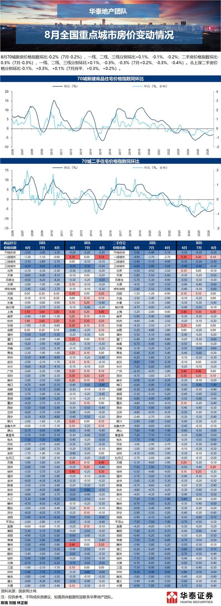
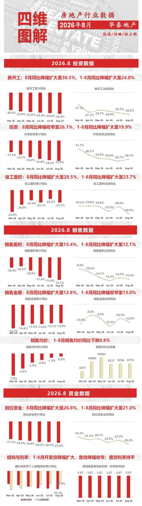
2 图